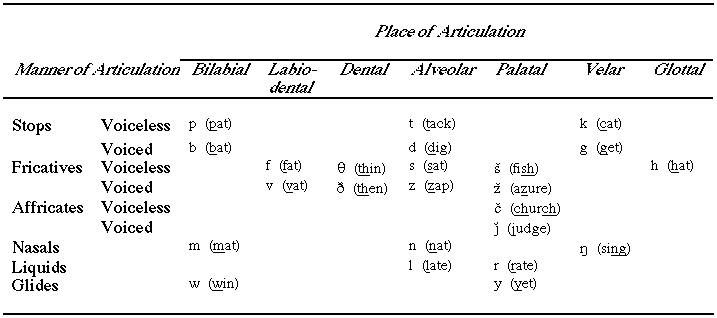
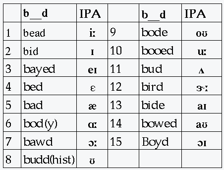
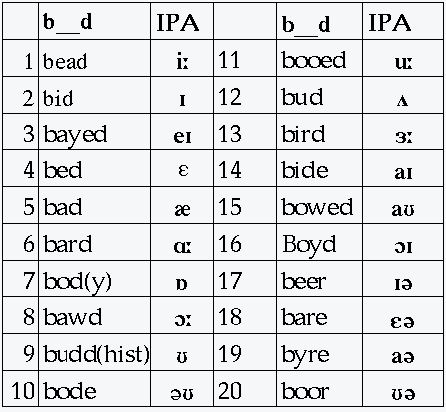
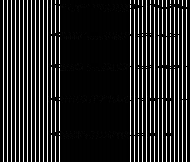

FvMcs.language.HUMAN (lagHmn)
toc#ql:[Level CONCEPT:rl? conceptCore93#
name::
* McsEngl.conceptCore93,
* McsEngl.HmnmLago, {2025-10-08}
* McsEngl.lagoHmnm, {2025-10-08}
* McsEngl.lag!⇒lagHmn, {2019-03-10 ogmlag}
* McsEngl.hlg, {2017-04-02}
* McsEngl.lagHmn, {2016-06-26} {2013-11-23} [relative to 'lig'=lingo]
* McsEngl.lhn, {2016-06-24}
* McsEngl.lh@cptCore93!=language.human, {2014-02-15}
* McsEngl.lngHmn, {2012-06-08}
* McsEngl.lg, {2012-04-03}
* McsEngl.lng, {2012-04-03}
* McsEngl.lango, {2012-03-27}
* McsEngl.human-language, {2012-03-12}
* McsEngl.langHuo, {2012-03-12}
* McsEngl.FvMcs.language.HUMAN (lagHmn),
* McsEngl.HmnmLago11,
* McsEngl.language.HUMAN (lagHmn),
* McsEngl.hl,
* McsEngl.humanlag,
* McsEngl.homo-langufino,
* McsEngl.language.human,
* McsEngl.natural-language,
====== lagoSINAGO:
* McsEngl.lhm@lagoSngo, {2007-12-10}
* McsEngl.lhm@lagoSngo,
* McsEngl.langufino'homo@lagoSngo, {2007-12-04}
* McsEngl.logufino'homo@lagoSngo,
* McsEngl.lingvufino'homo@lagoSngo,
* McsEngl.lango'homo@lagoSngo,
* McsEngl.lingvo'homo@lagoSngo,
====== lagoGreek:
* McsElln.ΑΝΘΡΩΠΙΝΗ-ΓΛΩΣΣΑ,
* McsElln.ΑΝΘΡΩΠΙΝΟΣ-ΚΩΔΙΚΑΣ-ΕΠΙΚΟΙΝΩΝΙΑΣ,
* McsElln.ΓΛΩΣΣΑ.ΑΝΘΡΩΠΙΝΗ@cptCore93,
* McsElln.ΦΥΣΙΚΗ-ΓΛΩΣΣΑ,
=== _Συντόμευση:
* McsElln.γλσΑνθρ@cptCore93, {2012-09-24}
=== _OLD:
* McsEngl.grammar@old@cptCore93,
* McsEngl.grammar-rules@old,
* McsEngl.language-science@old,
* McsElln.ΓΡΑΜΜΑΤΙΚΗ@old@cptCore93,
NOTES:
* I prefer the nameptero "lango" as more euphonous. The previous nameptero "lingvo" I chosed in respect to Esperanto's creator.
lagHmn'setConceptName#cptCore653#
name::
* McsEngl.language'setConceptName,
* McsEngl.setConceptName.language, {2012-04-29}
LANGUAGE:
Some with 'language' call the 'logo' we create with a language.
[hmnSngo.2000-09-05_nikkas]
lagHmn'DEFINITION
my human-lagnuage-Mcs is my theory of language which is part of my theory of knowledge.
[hmnSngo.2019-08-23]
Humans, and all brain organisms, create a CODE of their environment in their brain. With the language, which gives names to preconcepts, this brainin-code increases tremendous.
But the main function of a language, is the creation of a second-code, outside of brains, which MAPS to brainin-code. This second-code (the logo) is communicated among humans.
The second-code is a part-whole-structure. Its first-units could be sounds, symbols, gestures and today most of them does not map meaning (= brainin code. The second-units that map meaning are semasio-concepts (verbs, nouns, conjunctions) and correspond to specific-concepts of brainin-concepts.
[hmnSngo.2014-10-29]
meaning --> code-system (signs and rules) --> message (code)
meaning --> language --> logo
[hmnSngo.2000-09-03_nikkas]
algorithm --> Computer-language ---> program
[hmnSngo.2003-09-03_nikkas]
The human-language except of a maping-mechanism of human-brain-models is and a name-providing-mechanism to human-brain-models.
[hmnSngo.2006-01-15_nikkas]
Another attribute we must use in the definition of a language is that the system of rules and signs used to create or understand logeros, IS common to many humans. If this mechanism is not common, then it is not language.
[hmnSngo.2006-01-15_nikkas]
analytic
Human-language is COMMON-KNOWLEDGE, stored in human brains, of a brain-function. With this knowledge a human
- can "speak", create langero-subworldviews of subjective
subworldviews stored in his or other brains, AND
- can "understand", create the subworldviews that are denoted
with the langero-subworldviews his sensorial-system perceives.
[hmnSngo.2008-08-08_HokoYono]
Human-language is COMMON-KNOWLEDGE, stored in human brains, and a skill. With this knowledge a human
- can "speak", create logal--sub-worldviews of subjective brainual--sub-worldviews stored in his or other brains, AND
- can "understand", create the brainual--sub-worldviews that are denoted with the logal--sub-worldviews his sensory-systems perceives.
[file:///D:/File1a/SBC-2010-08-23/hSbc/lango_ho.html#h0.1.1p2]
_DESCRIPTION:
Humans created languages because they wanted to communicate their brainual--sub-worldviews#ql:brainual_sub_worldview@cptCore#. The languages, are common mapping-methods (= knowledge) and SKILLS of mapping|representing brainual--sub-worldviews with sensorial-b--sub-worldviews#ql:sensorial_b_subworldview@cptCore452#. But in order to do this mapping, languages must first DESCRIBE|MAP the brainual--sub-worldviews in a form that can be mapped with sensorial-b--sub-worldviews.
- The UNITS of the DESCRIPTIONS a human-language uses, are descriptions of a process-or-relation of a human-brainual--sub-worldview in time (Every sentence has a verb). I call them semasial-sentences. Whole-part--tree-structures of semasial-sentences I call semasial--sub-worldviews.
- The semasial-sentences are mapped with sensorial-entities which I call sentences and the whole-part--tree-structures of sentences I call logal--sub-worldviews.#h0.1.1p1#
[file:///D:/File1a/SBC-2010-08-23/hSbc/lango_ho.html#h0.1.1p1]
HUMAN-LANGUAGE is a system of relations with which humans create a material--mapping-entity of their mental-model, the logo-model, in order to communicate their mental-models.
[hmnSngo.2003-12-11_nikkas]
HUMAN-LANGUAGE is a LANGUAGE of humans.
[hmnSngo.2003-10-26_nikkas]
HUMAN-LANGUAGE is the RELATIONS of logo AND descriptive-information#cptCore593.a#.
[hmnSngo.2003-01-19_nikkas]
HUMAN-LANGUAGE is a SYSTEM of RELATIONS humans use to create MATERIAL-MAPS (LOGO) of descriptive-information.
[hmnSngo.2003-01-19_nikkas]
human-language = descriptive-information (noto) + semantic-relations + logo.
Because it is imposible to have logo without noto, we can define noto and logo as one entity, the language. In literature we find both views: a) language = logo and b) language = noto + logo.
[hmnSngo.2002-08-15_nikkas]
HUMAN-LANGUAGE is a mechanism that uses 3 diferent systems to create and understand Logums that maps descriptive-information#cptCore593.a#. The outermost systems of the previous system are used as units for the next system. It's main function is the communication of human's mental-models#cptCore985.a# that reside inside their heads.
[hmnSngo.2002-01-07_nikkas]
HUMAN-LANGUAGE is the 'language' (system of rules and symbols) of 'humans' that MAPS
- Conceptual-Information to Logos AND Logos to CptInfo
in order to communicate the information that resides in their heads.
[hmnSngo.2001-11-17_nikkas]
HUMAN-LANGUAGE is the 'language' (system of rules and symbols) of 'humans' with wich they create the 'logo' in order to communicate 'human-information#cptCore445.a#'.
[hmnSngo.2000-10-22_nikkas]
HUMAN LANGUAGE is the 'language' (system of rules and symbols) of 'human' that create the 'human-information#cptCore445.a#'.
[hmnSngo.1998-08-30_nikos]
ΑΝΘΡΩΠΙΝΗ ΓΛΩΣΣΑ είναι το μέρος της ΑΝΘΡΩΠΙΝΗΣ-ΠΛΗΡΟΦΟΡΙΑΣ#cptCore445.a#, το συμπληρωματικό της 'σημασιας πληροφοριας'.
ΟΡΙΣΑ τη γλωσσα σαν μέρος της ΑΝΘΡΩΠΙΝΗΣ ΠΛΗΡΟΦΟΡΙΑΣ γιατί το ζητούμενο της επιστήμης είναι να οργανώσει την ΠΛΗΡΟΦΟΡΙΑ, ανεξάρτητα ΓΛΩΣΣΑΣ. Δηλαδή το 'συστημα-δομημένων-εννοιών#cptIt257.1#' που θα δημιουργηθεί με το 'SSS' θα έχει τη δυνατότητα να παρουσιζει την ΙΔΙΑ πληροφορία σε οποιαδήποτε γλώσσα του κόσμου.
[hmnSngo.1995.04_nikos]
ΑΝΘΡΩΠΙΝΗ ΓΛΩΣΣΑ είναι το σύστημα ΚΑΝΟΝΩΝ (ΚΩΔΙΚΟΠΟΙΗΣΗ) που χρησιμοποίησε ο άνθρωπος και εμπλούτισε την ΑΝΘΡΩΠΙΝΗ-ΠΛΗΡΟΦΟΡΙΑ#cptCore445.a#, για να μπορέσει να τη μεταδώσει σε συνανθρώπους του.
Ετσι σήμερα για να συλλάβει κάποιος ανθρώπινη πληροφορία, πρέπει να ξέρει το σύστημα κανόνων (τη γλώσα) με την οποία έχουν 'γραφτεί'.
[hmnSngo.1995.04_nikos]
ΑΝΘΡΩΠΙΝΗ ΓΛΩΣΣΑ είναι η ΓΛΩΣΣΑ που χρησιμοποιούν οι άνθρωποι στη μεταξύ τους επικοινωνία.
[hmnSngo.1995.02_nikos]
synthetic
LINGUISTIC-RELATION I call any semantic#ql:semantic'relation# or syntactic-relation#ql:syntactic'relation#.
[hmnSngo.2002-05-31_nikkas]
GRAMMAR OF A LANGUAGE is the system rules that govern the part-whole relations that govern ONE entity of a language. Usally they call them syntactic-rules. The mapping-rules of one entity to another are called semantic.
[hmnSngo.2001-02-09_nikkas]
ΑΝΘΡΩΠΙΝΗ ΓΛΩΣΣΑ είναι το 'συστημα' ΣΗΜΑΤΩΝ της ΑΝΘΡΩΠΙΝΗΣ ΠΛΗΡΟΦΟΡΙΑΣ. (Λέγοντας σύστημα, άρα περιλαμβάνω αντικείμενα και σχέσεις).
[hmnSngo.1995.04_nikos]
ΑΝΘΡΩΠΙΝΗ ΓΛΩΣΣΑ είναι
- ΚΑΘΕ ΑΝΘΡΩΠΙΝΗ-ΠΛΗΡΟΦΟΡΙΑ#cptCore445#
KAI
- ΚΑΝΟΝΕΣ/ΣΧΕΣΕΙΣ μεταξύ τους
[hmnSngo.1995.02_nikos]
Η ΑΝΘΡΩΠΙΝΗ ΓΛΩΣΣΑ είναι το σύστημα ΣΗΜΑΤΩΝ και ΚΑΝΟΝΩΝ με τα οποία δημιουργούμε, μέσω της 'σκέψης#cptCore494#' 'ΠΛΗΡΟΦΟΡΙΑ#cptCore445#'
[hmnSngo.1994.04/ ΙΑΝ. 1995]
LANGUAGE
The unity of sounds and symbols I call language. In the world exist many languages that represent human thoughts.
ΓΡΑΜΜΑΤΙΚΗ είναι οι ΣΧΕΣΕΙΣ της 'γλωσσας'.
[hmnSngo.1995.04_nikos]
lagHmn'OTHER-VIEW#cptCore505#
name::
* McsEngl.lagHmn'OTHER-VIEW,
In the philosophy of language, a natural language (or ordinary language) is a language that is spoken, written, or signed by humans for general-purpose communication, as distinguished from formal languages (such as computer-programming languages or the "languages" used in the study of formal logic, especially mathematical logic) and from constructed languages.
[http://en.wikipedia.org/wiki/Natural_language] 2008-01-01
"ΜΕ ΤΟΝ ΟΡΟ ΓΡΑΜΜΑΤΙΚΗ ΔΕΝ ΕΝΝΟΟΥΜΕ ΜΟΝΟ ΤΗ ΜΟΡΦΟΛΟΓΙΑ ΚΑΙ ΤΗ
ΦΩΝΟΛΟΓΙΑ, ΑΛΛΑ ΚΑΙ ΤΗ
ΣΥΝΤΑΞΗ ΚΑΙ ΤΗ
ΣΗΜΑΣΙΟΛΟΓΙΑ".
[ΣΑΚΕΛΛΑΡΙΑΔΗΣ, 1979, 11#cptResource314#]
Η ΓΡΑΜΜΑΤΙΚΗ ΔΙΑΙΡΕΙΤΑΙ ΣΕ ΔΥΟ ΜΕΡΗ ΤΗ ΜΟΡΦΟΛΟΓΙΑ ΚΑΙ ΤΟ ΣΥΝΤΑΚΤΙΚΟ.
Η ΜΟΡΦΟΛΟΓΙΑ ΕΞΕΤΑΖΕΙ ΤΙΣ ΑΛΛΑΓΕΣ ΣΤΟΝ ΤΥΠΟ ΤΩΝ ΛΕΞΕΩΝ ΚΑΙ ΙΔΙΩΣ ΣΤΙΣ ΚΑΤΑΛΗΞΕΙΣ ΤΩΝ ΟΥΣΙΑΣΤΙΚΩΝ, ΤΩΝ ΕΠΙΘΕΤΩΝ ΚΑΙ ΤΩΝ ΡΗΜΑΤΩΝ.
ΤΟ ΣΥΝΤΑΚΤΙΚΟ ΕΞΤΑΖΕΙ ΤΟΥΣ ΚΑΝΟΝΕΣ ΣΥΜΦΩΝΑ ΜΕ ΤΟΥΣ ΟΠΟΙΟΥΣ ΟΙ ΛΕΞΕΙΣ ΣΥΝΤΑΣΣΟΝΤΑΙ ΜΕΣΑ ΣΤΗΝ ΠΡΟΤΑΣΗ.
[Close et al, 1982, 6#cptResource338#]
ΣΚΟΠΟΣ ΤΗΣ ΕΠΙΣΤΗΜΟΝΙΚΗΣ ΓΡΑΜΜΑΤΙΚΗΣ ΕΙΝΑΙ ΝΑ ΠΑΡΟΥΣΙΑΣΕΙ ΜΕ ΤΡΟΠΟ ΡΗΤΟ ΤΗ ΓΡΑΜΜΑΤΙΚΗ ΠΟΥ Ο ΟΜΙΛΗΤΗΣ ΚΑΤΕΧΕΙ ΥΠΟΣΥΝΕΙΔΗΤΑ.
[ΠΕΤΡΟΥΝΙΑΣ, 1984, 139#cptResource191#]
ΓΡΑΜΜΑΤΙΚΗ ΑΓΓΛΙΚΗΣ/ΕΛΛΗΝΙΚΗΣ:
ΑΝ Η ΓΡΑΜΜΑΤΙΚΗ ΗΤΑΝ ΚΥΡΙΩΣ ΖΗΤΗΜΑ ΜΟΡΦΟΛΟΓΙΑΣ, ΤΟΤΕ, ΣΕ ΣΥΓΚΡΙΣΗ ΜΕ ΤΗΝ ΕΛΛΗΝΙΚΗ, Η ΑΓΓΛΙΚΗ ΔΕΝ ΘΑ ΕΙΧΕ ΚΑΘΟΛΟΥ ΓΡΑΜΜΑΤΙΚΗ. ΩΣΤΟΣΟ, Η ΑΓΓΛΙΚΗ ΕΧΕΙ ΓΡΑΜΜΑΤΙΚΗ, ΜΟΝΟ ΠΟΥ Η ΓΡΑΜΜΑΤΙΚΗ ΑΥΤΗ ΕΙΝΑΙ ΚΥΡΙΩΣ ΘΕΜΑ ΣΥΝΤΑΞΗΣ.
[Close et al, 1982, 6#cptResource338#]
The grammar consists of
- a lexicon, and
- rules that syntactically and semantically combine words and phrases into larger phrases and sentences.
[http://www.cse.ogi.edu/CSLU/HLTsurvey/, 1996, 3.1]
These approaches to grammar (prescriptive, historical, comparative, functional, and descriptive) focus on word building and word order; they are concerned only with those aspects of language that have structure. These types of grammar constitute a part of linguistics that is distinct from phonology (the linguistic study of sound) and semantics (the linguistic study of meaning or content). Grammar to the prescriptivist, historian, comparativist, functionalist, and descriptivist is then the organizational part of language-how speech is put together, how words and sentences are formed, and how messages are communicated.
Specialists called transformational-generative grammarians, such as the American linguistic scholar Noam Chomsky, approach grammar quite differently-as a theory of language. By language, these scholars mean the knowledge human beings have that allows them to acquire any language. Such a grammar is a kind of universal grammar, an analysis of the principles underlying all the various human grammars.
"Grammar," Microsoft(R) Encarta(R) 97 Encyclopedia. (c) 1993-1996 Microsoft Corporation. All rights reserved.
ΟΡΙΣΜΟΣ ΤΟΥ ΤΣΟΜΣΚΙ "ΓΡΑΜΜΑΤΙΚΗ ΕΙΝΑΙ ΕΝΑΣ 'ΜΗΧΑΝΙΣΜΟΣ' ΠΟΥ ΠΑΡΑΓΕΙ ΟΛΕΣ ΤΙΣ ΣΩΣΤΕΣ ΠΡΟΤΑΣΕΙΣ ΜΙΑΣ ΓΛΩΣΣΑΣ ΚΑΙ ΚΑΜΙΑ ΛΑΘΟΣ ΠΡΟΤΑΣΗ"
[ΠΕΤΡΟΥΝΙΑΣ, 1984, 139#cptResource191#]
ΔΕΧΟΜΑΣΤΕ ΟΤΙ Η ΓΛΩΣΣΑ ΕΙΝΑΙ
ΕΝΑ ΣΥΣΤΗΜΑ ΓΡΑΜΜΑΤΙΚΩΝ ΚΑΝΟΝΩΝ ΚΑΙ
ΕΝΑΣ ΑΡΙΘΜΟΣ ΛΕΞΕΩΝ.
[ΠΕΤΡΟΥΝΙΑΣ, 1984, 44#cptResource191#]
"ΓΛΩΣΣΑ: ΣΥΣΤΗΜΑ ΣΗΜΑΤΩΝ ΠΟΥ ΑΠΟΤΕΛΕΙ ΜΕΣΟΝ ΕΠΙΚΟΙΝΩΝΙΑΣ ΜΕΤΑΞΥ ΤΩΝ ΑΝΘΡΩΠΩΝ, ΜΕΣΟ ΝΟΗΣΗΣ ΚΑΙ ΕΚΦΡΑΣΗΣ. ΜΕ ΤΗ ΒΟΗΘΕΙΑ ΤΗΣ ΓΛΩΣΣΑΣ ΠΡΑΓΜΑΤΟΠΟΙΕΙΤΑΙ Η ΓΝΩΣΗ ΤΟΥ ΚΟΣΜΟΥ ΚΑΙ ΣΤΗ ΓΛΩΣΣΑ ΑΝΤΙΚΕΙΜΕΝΟΠΟΙΕΙΤΑΙ Η ΑΥΤΟΣΥΝΕΙΔΗΣΗ ΤΗΣ ΠΡΟΣΩΠΙΚΟΤΗΤΑΣ. Η ΓΛΩΣΣΑ ΕΙΝΑΙ ΕΝΑ ΕΙΔΙΚΑ ΚΟΙΝΩΝΙΚΟ ΜΕΣΟ ΓΙΑ ΤΗ ΔΙΑΦΥΛΑΞΗ ΚΑΙ ΤΗ ΜΕΤΑΔΟΣΗ ΤΗΣ ΠΛΗΡΟΦΟΡΙΑΣ ΚΑΘΩΣ ΚΑΙ ΓΙΑ ΤΗ ΡΥΘΜΙΣΗ ΤΗΣ ΣΥΜΠΕΡΙΦΟΡΑΣ ΤΟΥ ΑΝΘΡΩΠΟΥ...ΤΑΥΤΟΧΡΟΝΑ Η ΓΛΩΣΣΑ ΕΧΕΙ ΜΙΑ ΣΧΕΤΙΚΗ ΑΥΤΟΤΕΛΕΙΑ ΠΟΥ ΕΚΦΡΑΖΕΤΑΙ ΜΕ ΤΗΝ ΥΠΑΡΞΗ ΕΙΔΙΚΩΝ ΕΣΩΤΕΡΙΚΩΝ ΝΟΜΟΤΕΛΕΙΩΝ ΤΗΣ ΛΕΙΤΟΥΡΓΙΑΣ ΚΑΙ ΤΗΣ ΑΝΑΠΤΥΞΗΣ ΤΗΣ".
[ΗΛΙΤΣΕΦ ΚΛΠ, ΦΙΛΟΣΟΦΙΚΟ ΛΕΞΙΚΟ 1985, Α389#cptResource164#]
lagHmn'infovido'WITTGENSTEIN
name::
* McsEngl.lagHmn'infovido'WITTGENSTEIN,
Wittgenstein's view in the Tractatus Logico-Philosophicus more or less agreed with Russell that language ought to be reformulated so as to be unambiguous, so as to accurately represent the world, so that we could better deal with the questions of philosophy.
[http://en.wikipedia.org/wiki/Ordinary_language_philosophy]
lagHmn'WHOLE
_WHOLE:
* knowor#cptCore93.8#
* sympan'societyHuman'culture#cptEpsitem448#
* sympan'societyHuman#cptCore1#
lagHmn'knower
name::
* McsEngl.lagHmn'knower,
* McsEngl.conceptCore93.8,
* McsEngl.neolo'lhm@cptCore93.8,
* McsEngl.lagHmn'knower@cptCore93.8,
* McsEngl.lagHmn'knowor@cptCore93.8,
* McsEngl.knower-of-hl@cptCore93.8,
* McsEngl.speaker-of-language@cptCore93.8,
_DEFINITION:
A human or a machine who knows the language is the language-knower. The knower has his own brainual-worldview and understands the brainual-worldviews of others (= can create the brainual--sub-worldviews of others when he senses the logal--sub-worldviews of them).
[hmnSngo.2012-07-27]
===
LANGUAGE-KNOWER is the entity (person or machine) who knows a language, ie
a) it can map Logos to CptInfo (logo-understanding) and
b) it can map CptInfo to Logos (logo-generation).
[hmnSngo.2001-12-02_nikkas]
_SPECIFIC:
* English.
* Greek.
* Esperanto.
* Komo.
===
* native-knower and foreign-knower,
* generater and understander,
lagHmn'CONCIOUS'UNCONCIOUS'KNOWING
name::
* McsEngl.lagHmn'CONCIOUS'UNCONCIOUS'KNOWING,
lagHmn'CONCIOUS'KNOWING
name::
* McsEngl.lagHmn'CONCIOUS'KNOWING,
* McsEngl.lagHmn'concious'knowledge,
The TRUE CONCIOUS'KNOWLEDGE of a language is the prerequisite to achieve machine-translation.
[hmnSngo.2001-12-02_nikkas]
lagHmn'FEELING
name::
* McsEngl.lagHmn'FEELING,
* McsEngl.lagHmn'unconcious'knowledge,
* McsElln.ΓΛΩΣΣΙΚΟ-ΑΙΣΘΗΜΑ,
_DEFINITION:
LANGUAGE-FEELING is the unconcious use of a language's RULES by a language-knower.
[hmnSngo.2001-11-23_nikkas]
VIEWS
ΓΝΩΣΗ ΓΛΩΣΣΑΣ ΧΡΗΣΗ ΓΛΩΣΣΑΣ
LANGUE PAROLE,
COMPETENCE PERFORMANCE,
ΘΕΩΡΗΤΙΚΗ ΓΛΩΣΣΙΚΗ ΙΚΑΝΟΤΗΤΑ, ΧΡΗΣΗ ΓΛΩΣΣΑΣ
ΔΕΧΟΜΑΣΤΕ ΟΤΙ ΥΠΑΡΧΕΙ Η ΑΦΗΡΗΜΕΝΗ ΙΔΕΑ ΤΗΣ ΓΛΩΣΣΑΣ ΜΕ ΤΟ ΣΥΣΤΗΜΑ ΤΗΣ, ΠΟΥ ΚΑΘΕ ΦΟΡΑ ΠΡΑΓΜΑΤΩΝΕΤΑΙ ΣΥΓΚΕΚΡΙΜΕΝΑ ΣΤΟ ΛΟΓΟ (ΔΙΑΚΡΙΣΗ ΤΟΥ SAUSURE: ΓΑΛΛ. LANGUE-PAROLE).
Η ΣΥΓΧΡΟΝΗ ΓΛΩΣΣΟΛΟΓΙΑ ΕΡΓΑΖΕΤΑΙ ΜΕ ΜΙΑ ΠΑΡΑΛΛΗΛΗ ΔΙΑΚΡΙΣΗ. ΔΕΧΕΤΑΙ ΟΤΙ ΥΠΑΡΧΟΥΝ
Η ΘΕΩΡΗΤΙΚΗ ΓΛΩΣΣΙΚΗ ΙΚΑΝΟΤΗΤΑ ΤΟΥ ΟΜΙΛΗΤΗ, ΚΑΙ
Η ΧΡΗΣΗ ΤΗΣ ΓΛΩΣΣΑΣ, Η ΕΠΙΤΕΛΕΣΗ ΠΟΥ ΑΥΤΟΣ ΚΑΝΕΙ ΚΑΘΕ ΦΟΡΑ (ΔΙΑΚΡΙΣΗ ΤΟΥ NOAM CHOMSKY: COMPETENCE-PERFORMANCE)
[ΠΕΤΡΟΥΝΙΑΣ, 1984, 49#cptResource191#]
MOTHER LANGUAGE
lagHmn'PART
lagHmn'ATTRIBUTE
_CREATED: {2012-08-30} {2002-06-12}
name::
* McsEngl.lagHmn'ATTRIBUTE,
* McsEngl.conceptCore93.39,
* McsEngl.infoHumanLangal@cptCore93.39, {2012-11-01}
* McsEngl.infHmnLngl@cptCore93.39, {2012-11-01}
_GENERIC:
* entity.attribute#cptCore546.174#
_SPECIFIC:
* braino-attribute#cptCore654.16#
* semasio-attribute#cptCore50.27#
* lingo-attribute#cptCore93.60#
lagHmn'wholeNo-relation#cptCore546.15#
name::
* McsEngl.lagHmn'wholeNo-relation,
lagHmn'RUALO_SINTAKS:
1. BRAINUFOLO: who,
* info-logal#cptCore93.39#
* infoBrainin#cptCore181.61#
lagHmn'REFEREINO
name::
* McsEngl.lagHmn'REFEREINO,
_GENERIC:
* REFERENTO_OF_LANGUAGE#ql:referento_of_language*##cptCore49i#
lagHmn-and-COGNIZING#cptCore475.39#
name::
* McsEngl.conceptCore93.1,
* McsEngl.lagHmn'and'cognition@cptCore93.1,
* McsEngl.cognition'and'hl@cptCore93.1,
Lingvo-homo maps brainepto-models. To improve a lingvo-homo we must improve FIRST the brainepto-models it reflects.
[hmnSngo.2007-01-24_nikkas]
"Thought is indissolubly [αδιάλυτα] associated with language"
[Getmanova, Logic 1989, 23#cptResource19#]
"Thought and language determine each other. It is no coincidence that the emergence of logic as a science was associated with rhetoric, the teaching of oration".
[Getmanova, Logic 1989, 9#cptResource19#]
Χαρακτηριστικό είναι ότι στην Αρχαία Ελληνική οι έννοιες "νόηση" και "γλώσσα-έκφραση" δηλώθηκαν από κοινού με τη λέξη "λόγος".
[Μ.Ι. ΜΠΑΧΑΡΑΚΗ. Συνειρμικό και Λειτουργικό Συντακτικό της Αρχαίας Ελληνικής. Τόμος πρώτος σύνολη θεωρία, Ε' έκδοση. Θεσσαλονίκη: Εκδόσεις Μ.Μπαχαράκη & ΣΙΑ, 1999, 9]
Ο θεμελιωτής της Νεότερης Γλωσσολογίας F. de Saussyre το είπε πολύ παραστατικά: "Ο λόγος είναι όπως ένα φύλλο χαρτιού: η σκέψη είναι η μονή σελίδα του φύλλου και ο ήχος (: έκφραση) η ζυγή του σελίδα. δε μπορούμε να σκίσουμε τη μονή σελίδα χωρίς να σκίσουμε την ίδια στιγμή και τη ζυγή" (Μαθήματα Γενικής Γλωσσολογίας, σελ 151)
[Μ.Ι. ΜΠΑΧΑΡΑΚΗ. Συνειρμικό και Λειτουργικό Συντακτικό της Αρχαίας Ελληνικής. Τόμος πρώτος σύνολη θεωρία, Ε' έκδοση. Θεσσαλονίκη: Εκδόσεις Μ.Μπαχαράκη & ΣΙΑ, 1999, 9]
The unity of thinking and speech does not mean identity: the units of thinking and speech do not coincide.
[Tikhomirov, 1988, 192#cptResource458#]
lagHmn'OTHER-VIEW
name::
* McsEngl.lagHmn'OTHER-VIEW,
DEIXIS-AND-ANAPHORA
17 Deixis and anaphora
The last of the chapters on syntax deals with deixis and anaphora, phenomena which cut across the division between the parts of speech and which are found in both canonical and non-canonical clause constructions.
Deictic expressions include temporal now, yesterday, today, tomorrow, locative here
and there, demonstrative this and that, the personal pronouns I, we, and you, and
primary tense. The property common to such expressions is that their reference is
determined in relation to certain features of the utterance-act: essentially, when and
where it takes place, who is speaking to whom, the relative proximity of entities to the
speaker.
Anaphora is the relation between an anaphor and an antecedent, as in Jill has left her
car in the road, in the interpretation where the reference is to Jill’s car. Jill is here the
antecedent and her the anaphor: the interpretation of the anaphor derives from that of
the antecedent.We will often represent the anaphoric relation by co-indexing antecedent and anaphor: Jilli has left heri car in the road. In this example, the anaphor is a personal pronoun; we call such anaphors ‘pro-forms’, a term which also covers various forms which are not pronouns, such as so (Grapes are expensivei and likely to remain soi for some time), do so (I haven’t told themi yet, but I’ll do soi tomorrow), and one (This bananai is green: have you got a riper onei ? ). Anaphors may also be gaps, as in the elliptical I’d like to help youi but I can’t i .
An anaphor generally follows its antecedent, but under restricted conditions it may precede, as in If you can i , please come a little earlier next weeki .
[http://www.cambridge.org/assets/linguistics/cgel/chap2.pdf] 2008-08-02
lagHmn'ARCHETYPE (lagHmnarcho; codeBRAININ)
name::
* McsEngl.lagHmn'ARCHETYPE (lagHmnarcho; codeBRAININ),
* McsEngl.lhnarcho, {2016-06-24}
* McsEngl.archetype.lagHmn, {2014-02-18}
* McsEngl.brainin-meaning,
* McsEngl.lagHmn'archetype,
* McsEngl.lagHmn'brainin-code,
* McsEngl.lagHmn'codeBrainin, {2014-11-02}
* McsEngl.lagHmn'codeFirst, {2014-09-25}
* McsEngl.meaning.brainin,
* McsEngl.view.lagHmn.archetype,
_GENERIC:
* archetype-of-mapping-method#ql:archetype.mapping_method@cptCore#
_DESCRIPTION:
Any COMMUNICATION-INSTANCE, inside the brain of a language-knower, that will be 'EXPRESSED'.
[hmnSngo.2012-10-27]
lagHmnarcho'doing.ENCODING (coding)
name::
* McsEngl.lagHmnarcho'doing.ENCODING (coding),
* McsEngl.conceptCore474.3,
* McsEngl.coding-lagHmn@cptCore474.3,
* McsEngl.hl'logation,
* McsEngl.logufino'vudero@cptCore474.3,
* McsEngl.lh'logation,
* McsEngl.logation@cptCore474.3,
* McsEngl.logo-building-rules,
* McsEngl.logo-creating-method,
* McsEngl.logo'LANGERUDINO,
_DEFINITION:
* LOGATION is the part of LANGUAGE that deals with logo-creation. The corresponding science is the "logology".
[hmnSngo.2001-12-02_nikkas]
_WHOLE:
* LANGUDINO.HOMO#cptCore93#
PARTIAL-COMPLEMENT:
* MAPPING-RELATION#ql:hl'mapping##cptCore93.3#
_PART:
* SYNTAX#cptCore474.2# (expression-order)#cptCore474.2: attPar#
* GRAMAR#cptCore474.4# (expression-creation)#cptCore474.4: attPar#
* syntax#ql:hl'syntax# (syntaxology)
* gramar#ql:hl'gramar# (gramology):
- creation#ql:hl'creation# (creatology)
- derivation (derivology)
- compoundation (compoundology)
- formation#ql:hl'formation# (formology)
[hmnSngo.2001-12-03_nikkas]
DIVISION ON EXPRESSION'MATERIAL:
a) phonology: uses sound.
b) morphology: uses written signs.
[hmnSngo.2001-11-17_nikkas]
DIVISION ON BUILDING:
a) syntax: system building by units.
b) grammar: unit-building (word-forms or derived-words).
[hmnSngo.2001-11-17_nikkas]
grammar:
creatology (δημιουργικό/παραγωγικό)
typology (τυπικό/κλητικό)
_SPECIFIC:
* GRAMMATIC-SYNTHESIS
* SYNTACTIC-SYNTHESIS#cptCore474.13#
lagHmnlingo'grammar.SYNTHESIS
name::
* McsEngl.lagHmnlingo'grammar.SYNTHESIS,
* McsEngl.conceptCore474.15,
_SPECIFIC:
* CONTENT-WORD--CREATION
* NAME-WORD--CREATION#cptCore474.8#
* FORM-WORD--CREATION#cptCore474.7#
* FUNCTION-WORD--CREATION
lagHmnlingo'NAME-WORD-SYNTESIS (namology)
name::
* McsEngl.lagHmnlingo'NAME-WORD-SYNTESIS (namology),
* McsEngl.conceptCore474.8,
* McsEngl.lh'unit'creation,
* McsEngl.lh'word'creation,
* McsEngl.word'creation-of-language@cptCore474.8,
* McsElln.ΔΗΜΙΟΥΡΓΙΚΟ-ΓΛΩΣΣΑΣ,
_DEFINITION:
LANGUAGE-CREATION is the part of GRAMMAR#ql:hl'gramar# that deals with the creation of words.
[hmnSngo.2001-12-02_nikkas]
_SPECIFIC_COMPLEMENT:
* FORMATION#cptCore474.7#
_PART:
* DERIVATING (derivology)#cptCore642.3: attPar#
* compoundation-(compoundology)#cptCore642.4: attPar#
[hmnSngo.2001-12-02_nikkas]
lagHmnlingo'FORM-WORD-SYNTHESIS (formology)
_CREATED: {2003-01-19} {2001-12-03}
name::
* McsEngl.lagHmnlingo'FORM-WORD-SYNTHESIS (formology),
* McsEngl.conceptCore474.7,
* McsEngl.form-word-synthesis,
* McsEngl.formology,
* McsEngl.individual-namero-creation@cptCore474.7,
* McsEngl.lh'word'formation,
* McsEngl.language-formation,
* McsEngl.formation@cptCore474.7,
* McsEngl.word-formation@cptCore474.7,
* McsElln.ΔΗΜΙΟΥΡΓΙΑ-ΤΥΠΩΝ-ΛΕΞΕΩΝ,
_DEFINITION:
LANGUAGE-FORMATION is the part of GRAMAR#ql:hl'gramar# that deals with the creation of word forms (types).
[hmnSngo.2001-12-02_nikkas]
lagHmnlingo'SYNTACTIC'SYNTHESIS (CREATION)
name::
* McsEngl.lagHmnlingo'SYNTACTIC'SYNTHESIS (CREATION),
* McsEngl.conceptCore474.13,
_DEFINITION:
* SYNTACTIC-SYNTHESIS is the process of first and second logo-hierarchy creation.
[hmnSngo.2003-11-28_nikkas]
* The process of LOGO#cptCore474# creation from semantic-words#cptCore449#.
[hmnSngo.2003-01-19_nikkas]
lagHmnlingo'EKSPRESERO'DUDINO
name::
* McsEngl.lagHmnlingo'EKSPRESERO'DUDINO,
* McsEngl.conceptCore474.4,
* McsEngl.grammar-as-word-creation-formation@cptCore474.4,
* McsElln.ΓΡΑΜΑΤΙΚΗ,
=== _NOTES: grammar is a word that is used also as synonym to "logation". I could use the word "creatax".
[hknu@cptCore2003-07-15_nikkas]
_DEFINITION:
* GRAMAR is the part of LOGATION#ql:hl'logation# that deals with word-creation and word-formation.
[hmnSngo.2001-12-02_nikkas]
* GRAMMAR I call the rules a hl uses to create WORD-FORMS and DERIVED-WORDS.
[hmnSngo.2001-11-17_nikkas]
_WHOLE:
* LOGATION#cptCore474.3#
PARTIAL-COMPLEMENT:
* SYNTAX#cptCore474.2#
_PARTS:
- creation (creatology)
- derivation (derivology)
- compoundation (compoundology)
- FORMATION (formology)
[hmnSngo.2001-12-02_nikkas]
τυπικό|τυπολογικό|κλητικό σύστημα
The two main branches of morphology are inflectional and derivational morphology, which deal with different uses to which morphological structures are put: distinguishing inflections and lexemes respectively. E.g. in baby-sitters, the affix -s is inflectional because it distinguishes the plural inflection, while -er is derivational, because it distinguishes the lexeme BABY-SITTER from BABY-SIT, and the combination of roots baby and sit is also handled by derivational morphology because it relates this lexeme to two simpler lexemes, BABY and SIT.
[wg enc, 1998.12]
http.GRAMMAR:
* http://angli02.kgw.tu-berlin.de/call/webofdic/grammars.html: http://angli02.kgw.tu-berlin.de/call/webofdic/grammars.html
lagHmnlingo'SYNTAX'DUDINO
name::
* McsEngl.lagHmnlingo'SYNTAX'DUDINO,
* McsEngl.conceptCore474.2,
* McsEngl.hl'syntax,
* McsEngl.syntactic'relation@cptCore474.2,
* McsEngl.relation.syntactic@cptCore474.2,
* McsEngl.language's'syntax@cptCore474.2,
* McsEngl.SYNTAX,
* McsEngl.syntax-of-mdlogero@cptCore474.2,
* McsElln.ΣΥΝΤΑΚΤΙΚΟ-ΓΛΩΣΣΑΣ,
* McsElln.ΣΥΝΤΑΚΤΙΚΟ@cptCore474.2,
* McsElln.ΣΥΝΤΑΞΗ,
_DEFINITION:
SYNTAX= the node (content and token) structure of a model-logo.
[hmnSngo.2006-01-15_nikkas]
SYNTAX= the content-node identification. SYNTACTIC-ANALYSIS is the process of syntax identification.
[hmnSngo.2006-01-04_nikkas]
* Syntactic-Relation is any LANGUAGE-RELATION, PART of logo, responsible for the arrangment of expressions#cptCore35#.
[hmnSngo.2002-08-15_nikkas]
* SYNTAX is the rules of expression predicate-relations and statemental-relations.
[hmnSngo.2002-05-31_nikkas]
SYNTAX is the part of LOGATION#ql:hl'logation# that deals with the relations of logo creation.
[hmnSngo.2001-12-02_nikkas]
ΣΥΝΤΑΚΤΙΚΟ ΓΛΩΣΣΑΣ είναι οι ΣΧΕΣΕΙΣ των αντικειμένων γλώσσας#cptCore93.a#.
[hmnSngo.1995.04_nikos]
"A presents B with C" equals "A presents C to B" is syntactic information.
[hmnSngo.1998-08-13_nikos]
ΚΑΝΟΝΑΣ = ΔΙΑΔΙΚΑΣΙΑ = RULE
[hmnSngo.1995.04_nikos]
Let us first consider syntax which refers to the relationship that words bear to each other in a sentence. Several aspects of this grammatical structure are well-captured using statistical methods.
The simplest useful way of thinking about syntax is to define it as word order constraint. That is, only certain words can follow certain other words.
[http://www.cse.ogi.edu/CSLU/HLTsurvey/, 1996, 11.2.6]
"ΣΥΝ-ΤΑΞΗ, ΟΠΩΣ ΔΗΛΩΝΕΙ ΚΑΙ Η ΕΤΥΜΟΛΟΓΙΑ, ΕΙΝΑΙ ΚΑΤΑΡΧΗ Η ΣΕΙΡΑ ΠΟΥ ΜΠΑΙΝΟΥΝ ΟΙ ΛΕΞΕΙΣ Η ΜΙΑ ΠΛΑΙ ΣΤΗΝ ΑΛΛΗ. Η ΣΕΙΡΑ ΚΑΘΟΡΙΖΕΤΑΙ ΑΠΟ ΠΕΡΙΠΛΟΚΟΟΥΣ ΚΑΝΟΝΕΣ, ΠΟΥ ΑΚΟΛΟΥΘΟΥΝ ΒΕΒΑΙΑ ΓΕΝΙΚΕΣ ΑΡΧΕΣ ΠΟΥ ΙΣΧΥΟΥΝ ΓΙΑ ΟΛΕΣ ΤΙΣ ΓΛΩΣΣΕΣ, ΔΙΑΦΕΡΟΥΝ ΟΜΩΣ ΣΤΗΝ ΕΠΙΜΕΡΟΥΣ ΕΦΑΡΜΟΓΗ-ΤΟΥΣ ΑΠΟ ΓΛΩΣΣΑ ΣΕ ΓΛΩΣΣΑ"
[ΠΕΤΡΟΥΝΙΑΣ, 1984, 65#cptResource191#]
"SYNTAX is the grammatical structure of sentences. Recovering the syntax of a sentence is called parsing"
[Tanimoto, 1990, 356#cptResource461#]
"ΤΟ ΣΥΝΤΑΚΤΙΚΟ ΕΞΕΤΑΖΕΙ ΤΟΥΣ ΚΑΝΟΝΕΣ ΣΥΜΦΩΝΑ ΜΕ ΤΟΥΣ ΟΠΟΙΟΥΣ ΟΙ ΛΕΞΕΙΣ ΣΥΝΤΑΣΣΟΝΤΑΙ ΜΕΣΑ ΣΤΗΝ ΠΡΟΤΑΣΗ"
[Close et al, 1982, 6#cptResource338#]
"SURFACE-STRUCTURE" is the name for "logo-structure" other use. "DEEP-STRUCTURE" is the "info-tech structure". The names they use shows confusion in these entities.
[hmnSngo.2001-12-04_nikkas]
_WHOLE:
* LOGO-RELATION#cptCore474.3#
PARTIAL-COMPLEMENT:
* GRAMMAR#cptCore474.4#
_SENTENCE:
"ΟΠΩΣ Η ΛΕΞΗ, ΠΑΡΟΛΟ ΠΟΥ ΔΕ ΛΕΓΕΤΑΙ ΜΟΝΗ-ΤΗΣ, ΑΠΟΤΕΛΕΙ ΤΗ ΒΑΣΙΚΗ ΔΟΜΗ ΤΗΣ ΛΕΞΙΛΟΓΙΚΗΣ ΑΝΑΛΥΣΗΣ, ΕΤΣΙ ΚΑΙ Η ΠΡΟΤΑΣΗ ΑΠΟΤΕΛΕΙ ΤΗ ΒΑΣΙΚΗ ΔΟΜΗ ΤΗΣ ΣΥΝΤΑΧΤΙΚΗΣ ΑΝΑΛΥΣΗΣ".
[ΠΕΤΡΟΥΝΙΑΣ, 1984, 152#cptResource191#]
VERB SYNTAX:
Every verb (which a language uses to express a 'relation') has its OWN syntax in every language, eg: in ancient-greek uses cases to express the predicatals of the relation, in greek uses operators and in english uses similar or different operators.
We MUST know this different syntax for every relation or group of relations, on every language in order to translate from one logo to another.
· _sntx$1_sntxArgt:[$2]cptCore66, {2012-11-19}
* McsEngl.cptHbrn@cptCore66, {2012-10-28}
* McsEngl.cptBrnHmn@cptCore66, {2012-10-26}
* McsEngl.concept.human.brain@cptCore66, {2012-10-26}
* McsEngl.brnHcpt@cptCore66, {2012-08-27}
* McsEngl.braino.human.concept@cptCore66, {2012-08-27}
* McsEngl.ConceptBrainHuman@cptCore383.35, {2012-04-27}
* McsEngl.human-brain-concept@cptCore383.35, {2012-04-27}
* McsEngl.concept.brain.human@cptCore383.35, {2012-04-27}
* McsEngl.cbh@cptCore50.29, {2012-01-12}
* McsEngl.ModelInfoConceptHmn,
* McsEngl.brnHmnCpt@cptCore66,
* McsEngl.conceptBrain.human@cptCore66,
* McsEngl.cptBrainHuman@cptCore66,
* McsEngl.cptBrain.human,
* McsEngl.cptBrn.HUMAN,
* McsEngl.human.BRAIN,
* McsEngl.lagHmnarcho'ModelConcept (conceptBrain)Core66,
* McsEngl.infHmn.brainin.CONCEPTBRAIN,
'conceptbrain'
gives 45 results in google on 2013-01-12.
'brainconcept'
gives 57,600 results in google on {2013-01-12}
_DEFINITION.GENERIC:
generic:
Term-of-BConcept is its terms-of-logal-concepts
- used by ALL human-languages to denote the same--b-concept
- in ALL brainual-worldviews that use this same b-concept.
[file:///D:/File1a/SBC-2010-08-23/hSbc/hSbc_59.html#h0.54.1p1]
_DESCRIPTION:
Unfortunatly, in ONE language
- DIFFERENT names denote the SAME b-concept in different bWorldviews and
- SAME names denote DIFFERENT b-concepts in different bWorldviews.
For example, what G.W. Bush means with the word "terrorism" is very different with what Osama bin Laden means with the SAME word. We don't have to agree to neither of them with what they mean. But we must know what they mean in their brainual-worldview, IF we want to have communication.
Also the majority of texts use terms ambiguously (without definition). Thus the readers understand different b-concepts or differentiations of the author's b-concepts. This results in miscommunication, and more ridiculous, on debates upon debates because of miscommunication.
Another miscommunication example, because of the terms, it is the use of vague terms. The "scientific-method" is a classic vague-term. In such situations, it is impossible all to agree on same referents. We don't have to "burn" the other views. We need different views, but integrated, non-contradictory, non-ambiguous, non-vague different views. Wikipedia, a revolution in knowledge because of its collaborative attribute, is showing its limits because it does not support different integrated brainual-worldviews. [HoKoNoUmo 2008-02-04]
The need to standardize terminology and support different brainual-worldviews, is obvious.
The terms of a b-concept are STORED inside our brains but not in the same place with the perceptual-subworlview. This is the cause of the "tip of the tongue" phenomenon, a near-universal experience with memory recollection involving difficulty retrieving the name of a well-known b-concept.
At the same time, the terms of a b-concept are and material entitities we sign, speak, or write and thus they can be communicated.
[file:///D:/File1a/SBC-2010-08-23/hSbc/hSbc_59.html#h0.54.2p1]
cbh'nameConceptBrain (instance)
_CREATED: {2012-08-30} {c2004}
name::
* McsEngl.cbh'nameConceptBrain (instance),
* McsEngl.conceptCore384,
* McsEngl.nmHn.conceptLANGO,
* McsEngl.nameLango@cptCore384, {2015-10-04}
* McsEngl.denoter-of-brnHcpt@cptCore66.1, {2012-09-02}
* McsEngl.designator-of-brnHcpt@cptCore66.1, {2012-09-01}
* McsEngl.designator-of-concept@cptCore384, {2008-10-19}
* McsEngl.designator@cptCore384,
* McsEngl.designator-set@cptCore384, {2009-01-06}
* McsEngl.designater-of-concept,
* McsEngl.designater@cptCore383.2,
* McsEngl.designater-of-concept@cptCore383.2,
* McsEngl.designeito@cptCore383.2, {2006-01-16}
* McsEngl.dezigneito@cptCore383.2, {2006-01-30}
* McsEngl.human-brn-cpt-name@cptCore66.1, {2012-10-31}
* McsEngl.human-brain-concept-name@cptCore66.1, {2012-10-31}
* McsEngl.identifier,
* McsEngl.identifier-of-concept@cptCore383.2,
* McsEngl.name@cptCore66.1, {2012-10-29}
* McsEngl.name.conceptBrainHuman,
* McsEngl.name.human.ConceptBrainin,
* McsEngl.nameBrainin, {2014-12-21}
* McsEngl.nameBrainin, {2014-12-21}
* McsEngl.nameBraininconcept, {2014-12-21}
* McsEngl.nameHmnCptBrn@cptCore66.1, {2012-10-30}
* McsEngl.namero-of-concept@cptCore384, {2008-09-22}
* McsEngl.synset@cptCore384,
* McsEngl.termCpt@cptCore384,
* McsEngl.term-of-concept@cptCore384, {2008-09-28}
=== _Relative:
* McsEngl.brn-name@cptCore66.1, {2012-10-31}
* McsEngl.cpt-brn-name@cptCore66.1, {2012-10-31}
* McsEngl.nmhCbn, {2014-12-19}
* McsEngl.nameCbh,
* McsEngl.nameHcBrn@cptCore66.1, {2012-10-30}
* McsEngl.dntBrnHcpt@cptCore66.1, {2012-09-03}
* McsEngl.dezBrnHcpt@cptCore66.1, {2012-08-30}
====== lagoSINAGO:
* McsEngl.foEkoKoncosDezigno@lagoSngo, {2008-10-19}
* McsEngl.foEkoKoncosTermo@lagoSngo, {2008-09-18}
* McsEngl.nameroFoEkoKonco@lagoSngo, {2008-09-18}
* McsEngl.dezignepero@lagoSngo, {2008-03-11}
* McsEngl.dezigneptero@lagoSngo, {2007-04-15}
* McsEngl.dezg@lagoSngo,
* McsEngl.dezigneptero@lagoSngo, {2006-06-12}
* McsEngl.dezignato@lagoSngo, {2006-04-19}
* McsSngo.foEkoKoncosDezigno@lagoSngo,
====== lagoGreek:
* McsElln.ενδεικτης@cptCore384, {2012-04-22} (απο ενδειξη)
* DEZIGN-EPT-ERO because it is a breinepto and a logero konsepto.
[hmnSngo.2006-06-12_nikkas]
* Designeito is a konsepto of a brain-model. Then its name must not ends in -er which I use to name logero konseptos. [hmnSngo.2006-01-16_nikkas]
nmhCbn'DEFINITION
_DESCRIPTION:
Because every koncepto#cptCore383# is part of a brainepto_base#ql:brainepto_base@cptCore*# (atomic or social), dezignepteros are all the "terms" this BB uses in all human languages for this koncepto AND NOT the terms use other BBs for the same koncepo.
Also, because terms change, we must know the terms used for a koncepto in all BBs, in all languages, at any time!!!! if we want to have real communication.
[hmnSngo.2007-11-27_KasNik]
synthetic
DEZIGNERO_OF_KONCEPO is any nonimero of any koncero#cptCore453# any language uses for this koncepo in all worldviews expressed with human-languages.
[hmnSngo.2008-03-18_HokoYono]
Dezigneptero-of-koncepto is ANY of its namepteros OR its atribepteros used by ALL human-languages to denote the same-koncepto in ALL world-views that use this same koncepo.
[hmnSngo.2008-02-02_KasNik]
Dezigneptero-of-koncepto is ANY of its namepteros OR its sinonimeros used by ALL human-languages to denote the same-koncepto in ALL world-views that use this same koncepto.
[hmnSngo.2008-02-02_KasNik]
* DEZIGNEPTERO OF KONSEPTO is its namepteros and its sinonimeros.
[hmnSngo.2006-08-05_nikkas]
* synthetic: designater of a concept is any of its synamers#cptCore616#, abbreviation, short-name, formal-name or relative-name.
[hmnSngo.2004-09-29_nikkas]
* synthetic: designater of a concept is any of its name, abreviation, short-name, formal-name or relative-name.
A structured-concept has a unique designater.
[hmnSngo.2004-09-27_nikkas]
nmhCbn'GENERIC
_GENERIC:
* name.human#cptCore93.42#
* lingo-human-semasio-unit#cptCore473#
nmhCbn'WHOLE
_WHOLE:
* concept.human.brain#cptCore66#
* Dezigneptero is part of a konsepto.
[hmnSngo.2007-09-23_nikkas]
nmhCbn'WholeNo-relation#cptCore546.15#
name::
* McsEngl.nmhCbn'WholeNo-relation,
There is a rich, many-to-many mapping between terms (names, words, and phrases) and concepts (things and ideas).
A single thing or idea can be expressed by synonymous terms or phrases, or known by multiple names, including variations, abbreviations, acronyms, nicknames and aliases.
Conversely, the same word, name, or phrase can represent different things, people, or ideas. This is a problem in information retrieval because text-based retrieval fails to differentiate between multiple senses of a term. Ranking search results is not a solution for finding resources related to a specific sense of a word. A similar problem occurs in social tagging, where users select natural language terms to describe items such as photographs and documents. Research has observed that, on average, people have less than 20% chance of choosing the same word to describe the same concept [1].
1. Furnas, G.W., et al. The Vocabulary Problem in Human-System Communication, Communications of the ACM, 30 (1987) 964-971
[Mining a Large-Scale Term-Concept Network from Wikipedia
Andrew Gregorowicz and Mark A. Kramer
http://www.mitre.org/work/tech_papers/tech_papers_06/06_1028/index.html
http://www.mitrecorporation.net/work/tech_papers/tech_papers_06/06_1028/06_1028.pdf]
nmhCbn'and'namepo
name::
* McsEngl.nmhCbn'and'namepo,
A namero (the name of a kognero) is the atribute of a kognepo a language denotes.
Languages does not have the same namero. Then the same attribute (= a kognepo also) in one language is denoted with a namero (= in relation to one kognepo) and in another with a namepo (= not in relation to another kognepo).
[hmnSngo.2008-08-01_HokoYono]
nmhCbn'DESIGNATOR
name::
* McsEngl.nmhCbn'DESIGNATOR,
It is the entity that creates a designater.
[hmnSngo.2004-09-27_nikkas]
nmhCbn'KRUDINO#cptCore93.45#
nmhCbn'convention
name::
* McsEngl.nmhCbn'convention,
* McsEngl.naming-convention, {2012-10-29}
_DESCRIPTION:
A naming convention is an attempt to systematize names in a field so they unambiguously convey similar information in a similar manner.
[http://en.wikipedia.org/wiki/Name]
nmhCbn'onomatology
nmhCbn'structure#cptCore515#
name::
* McsEngl.nmhCbn'structure,
* PRICIPO-YORDERO OF DEZIGNEPTERO
* SEKONDO-YORDERO OF DEZIGNEPTERO
nmhCbn'Toponymy#cptCore678.11#
SPECIFIC
name::
* McsEngl.nmhCbn.specific,
* McsEngl.nameCbh.SPECIFIC#cptCore546.23#,
_SPECIFIC: nameCbh.alphabetically:
* nameCbh.conceptgram#cptCore78.31#ql:cptoldepistem384.12##
* nameCbh.language#cptCore384.7#
* nameCbh.term#cptCore50.29.2#
* nameCbh.termNo#cptCore50.29.3#
* nameCbh.unique#cptCore50.29.6#
* nameCbh.uniqueNo#cptCore50.29.7#
* nameCbh.worldview#cptCore384.10#
nmhCbn.SPECIFIC-DIVISION.term
name::
* McsEngl.nmhCbn.SPECIFIC-DIVISION.term,
_SPECIFIC:
* nameCbh.term#cptCore50.29.2#
* nameCbh.termNo#cptCore50.29.3#
[2008-10-02,]
nmhCbn.SPECIFIC-DIVISION.usage
name::
* McsEngl.nmhCbn.SPECIFIC-DIVISION.usage,
_SPECIFIC:
* nameCbh.name.main#cptCore50.29.5#
* nameCbh.name.secondary#cptCore50.29.4#
===
* NAME_OF_CONCEPT#cptCore384.2#
* TERM_OF_CONCEPT#cptCore384.8#
===
* NAME_TERM_OF_CONCEPT#cptCore384.2#
* NONNAME_TERM_OF_CONCEPT#cptCore384.8#
nmhCbn.SPECIFIC-DIVISION.uniquness
name::
* McsEngl.nmhCbn.SPECIFIC-DIVISION.uniquness,
_SPECIFIC:
* nameCbh.unique#cptCore50.29.6#
* nameCbh.uniqueNo#cptCore50.29.7#
[hmnSngo.2012-08-30]
nmhCbn.SPECIFIC-DIVISION.L-CONCEPT
name::
* McsEngl.nmhCbn.SPECIFIC-DIVISION.L-CONCEPT,
* TERM _CPT_NOUN:
* TERM _CPT_ORDINARY_NOUN
* TERM _CPT_CONJUNCTIVE_NOUN
* TERM _CPT_ADJECTIVE
* TERM _CPT_ADVERB
* TERM _CPT_SPECIAL_NOUN
* TERM_CPT_VERB
* TERM _CPT_CONJUNCTION
* auxiliaryNo_of_nameSmsTerm#cptCore453.15#
* NAMERO_ONOMERO:
* NAMERO_NOUNERO
* NAMERO_NOUNODEANERO
* NAMERO_SPECIALERO
* NAMERO_ADNOUNERO
* NAMERO_ADVERBERO
* NAMERO_VERBERO
* NAMERO_DEANERO
nmhCbn.SPECIFIC-DIVISION.language
name::
* McsEngl.nmhCbn.SPECIFIC-DIVISION.language,
_SPECIFIC:
* nameCbh.lango#cptCore50.29.8#
* nameCbh.lango.english
* nameCbh.lango.esperanto
* nameCbh.lango.greek
* nameCbh.lango.langoko
nmhCbn.SPECIFIC-DIVISION.WORLDVIEW
nmhCbn.SPECIFIC_DIVISION.NAMEPTERO
nmhCbn.SPECIFIC_DIVISION.GENEREPO
* NameroGenerepo#cptCore384.9#
* NameroIndividepo#cptCore384.8#
nmhCbn.ABBREVIATION#ql:abbreviation.conceptbrain#
nmhCbn.HYPOCORISTIC
name::
* McsEngl.nmhCbn.HYPOCORISTIC,
* McsEngl.hypocoristic@cptCore384i,
* McsEngl.hypocorism@cptCore384i,
A hypocoristic (or hypocorism) is a lesser form of the given name used in more intimate situations, as a term of endearment, a pet name.
[http://en.wikipedia.org/wiki/Hypocoristic]
nmhCbn.LANGUAGE
name::
* McsEngl.nmhCbn.LANGUAGE,
* McsEngl.conceptCore50.29.8,
* McsEngl.conceptCore384.7,
* McsEngl.language-term-of-concept@cptCore384.7, {2008-10-02}
* McsEngl.namero-of-language@cptCore384.7, {2008-09-27}
* McsEngl.language-namero@cptCore384.7, {2008-03-24}
====== lagoSINAGO:
* McsEngl.nameroLango@lagoSngo, {2008-03-24}
_DEFINITION:
NameroLango is any namero of a koncepo in ONE language.
[hmnSngo.2008-03-24_HokoYono]
WHOLE:
* NameroLango_Set: is all the nameroLangos of a koncepo in ONE language.
[hmnSngo.2008-03-27_HokoYono]
_SPECIFIC:
* one nameroLango has instances the first-namero and its nonfirst-nameros.
nmhCbn.MAIN (most-used)
_CREATED: {2003-03-13} {1998-06-29}
name::
* McsEngl.nmhCbn.MAIN (most-used),
* McsEngl.conceptCore50.29.5,
* McsEngl.conceptCore384.2,
* McsEngl.brnHcpt'name@cptCore66.5, {2012-09-03}
* McsEngl.nameBrnHcpt@cptCore66.5, {2012-08-30}
* McsEngl.nameHcBrn.main@cptCore66.5, {2012-10-28}
* McsEngl.name-term-of-concept@cptCore384.2, {2008-10-02}
* McsEngl.concept's-name,
* McsEngl.name-of-concept@cptCore383.1,
* McsEngl.name-of-cpt@cptCore383.1,
* McsEngl.name@cptCore66.5, {2012-10-28}
* McsEngl.term,
* McsEngl.conceptCore384.1@deleted,
====== lagoSINAGO:
* McsEngl.foEkoKoncosNamo@lagoSngo, {2008-09-28}
* McsEngl.namepo@lagoSngo, {2008-03-18}
* McsEngl.namepero@lagoSngo, {2008-03-17}
* McsEngl.nameptero@lagoSngo, {2008-02-02}
* McsEngl.nameptero@lagoSngo, {2006-06-17}
====== lagoGreek:
* McsElln.ΟΝΟΜΑ-ΕΝΝΟΙΑΣ@cptCore383.1,
* McsElln.όνομα-έννοιας,
=== old,
* McsEngl.concept'expression@cptCore383.1,
* McsElln.ΟΡΟΣ@deleted,
=== _NOTES: A term is a word, or more than one word, that names a concept.
[Kavanagh, Text Analyzer] 1998-07-17
_DEFINITION:
It is the MOST USED dezignator.
[hmnSngo.2012-08-30]
===
* NAMEPTERO is any entity a language uses to refer to a concept without expressing any attribute of it (as with verberos, adnouneros, cases etc).
[hmnSngo.2006-11-12_nikkas]
* NAMEPTERO-OF-KONSEPTO is the nameros#cptCore494# of its nouneros#cptCore549# and any abrevieptero, akronimemptero, formaleptero, relativeptero and simboleptero we use for this konsepto.
[hmnSngo.2006-08-05_nikkas]
* NAME-OF-CONCEPT is the namer of its abjecter.
[hmnSngo.2003-11-23_nikkas]
* NAME-OF-CONCEPT is the name of its noun.
[hmnSngo.2003-11-23_nikkas]
* A concept has only name, all other expression are corelated with a di-concept.
[hmnSngo.2003-03-13_nikkas]
* The name of a concept is the nominative of the its most used noun. Every language has a mechanism that produces names. That's why information and language goes hand with hand.
[hmnSngo.2003-03-13_nikkas]
NAME of a concept I call the most used NOUN.
[hmnSngo.2001]
(the most used word of ONE noun/verb...)
NAME is the most used CONTENT-WORD of a CONCEPT#cptCore383# (meaning units).
[hmnSngo.nikkas_2000-09-05_nikkas]
NAME (CONCEPT NAME) is the WORD of a CONCEPT.
[hmnSngo.1998-08-29_nikos]
_WHOLE:
* sympan'socHmn'setLingoHmn'lingoHmn'nameLingo#cptCore453#
* sympan'socHmn'setLingoHmn'lingoHmn#cptCore93.28#
* sympan'socHmn'setLingoHmn#cptCore93.17#
* sympan'socHmn#cptCore1#
_SYNTAX:
· _sntx$1_sntxArgt:[$2]lagoSngo,
_DEFINITION:
The formal name is the full name (including given names, family name, etc.) as used on official documents. It can be contrasted with the usual name.
[http://www.behindthename.com/glossary/view/formal_name] 2008-09-30
nameBrnHcpt.TERM.NO
name::
* McsEngl.nameBrnHcpt.TERM.NO,
* McsEngl.conceptCore384.13,
* McsEngl.conceptCore384.13,
* McsEngl.symbol-name-of-concept@cptCore384i, {2008-09-30}
====== lagoSINAGO:
* McsEngl.namepoSimbolero@lagoSngo, {2008-04-13}
_DEFINITION:
it is a secondary-logal-unit used to name a concept, such as €, $ which denote concepts.
nmhCbn.MAIN.NO
name::
* McsEngl.nmhCbn.MAIN.NO,
* McsEngl.conceptCore50.29.4,
* McsEngl.alias@cptCore384i,
* McsEngl.nameHcBrn.secondary@cptCore66.4, {2012-10-29}
* McsEngl.non-name-dezignator-of-brnHcpt@cptCore66.4, {2012-08-30}
* McsEngl.pseudonym@cptCore384i,
* McsEngl.secondary-human-brainname@cptCore66.4, {2012-11-05}
_DEFINITION:
* A pseudonym (Greek: ψευδόνυμον, pseudo + -onym: false name) is an artificial, fictitious name, also known as an alias, used by an individual as an alternative to a person's legal name.
[http://en.wikipedia.org/wiki/Pseudonym] 2007-09-30
* An alias is a pseudonym and may also refer to: ...
[http://en.wikipedia.org/wiki/Alias] 2007-09-30
alias
1 alias; aliases
An alias is a false name, especially one used by a criminal.
Using an alias, he had rented a house in Fleet, Hampshire.
N-COUNT
2 alias
You use alias when you are mentioning another name that someone, especially a criminal or an actor, is known by.
Richard Thorp, alias Alan Turner, said yesterday: `It is a sad time for both of us.'
PREP: n-proper PREP n-proper
(c) HarperCollins Publishers.
nmhCbn.NICKNAME
name::
* McsEngl.nmhCbn.NICKNAME,
* McsEngl.nickname@cptCore384i,
_DEFINITION:
* A nickname is a name of a person or thing other than its proper name. It may either substitute or be added to the proper name. It may be a familiar or truncated form of the proper name, such as Bob, Bobby, Rob, Robbie, Robin, and Bert for Robert.
[http://en.wikipedia.org/wiki/Nickname] 2007-09-30
nickname
1 nickname; nicknames
A nickname is an informal name for someone or something.
Red got his nickname for his red hair.
N-COUNT
2 nickname; nicknames; nicknaming; nicknamed
If you nickname someone or something, you give them an informal name.
When he got older I nicknamed him Little Alf.
Which newspaper was once nicknamed The Thunderer?
VB
(c) HarperCollins Publishers.
nmhCbn.nomenclature.BIOLOGICAL#cptCore72.2#
nmhCbn.nomenclature.CHEMICAL#cptCore942.5#
nmhCbn.nomenclature.PLANETARY
name::
* McsEngl.nmhCbn.nomenclature.PLANETARY,
Planetary nomenclature, like terrestrial nomenclature, is a system of uniquely identifying features on the surface of a planet or natural satellite so that the features can be easily located, described, and discussed. The task of assigning official names to features is taken up by the International Astronomical Union since its founding in 1919. [1]
[http://en.wikipedia.org/wiki/Planetary_nomenclature]
nmhCbn.nomenclature.TERRESTRIAL
nmhCbn.PICTOGRAPH
name::
* McsEngl.nmhCbn.PICTOGRAPH,
* McsEngl.conceptCore384.12,
* McsEngl.pictograph@cptCore384i,
nmhCbn.PORTMANTEAU
name::
* McsEngl.nmhCbn.PORTMANTEAU,
* McsEngl.portmanteau@cptCore384i,
_DEFINITION:
A portmanteau (IPA pronunciation: /p??t?m?nt??/ RP, /p??rt?m?nto?/ US) is a word or morpheme that fuses two or more words or word parts to give a combined or loaded meaning. A folk usage of portmanteau refers to a word formed by combining both sounds and meanings from two or more words (e.g., spork from spoon and fork, animatronics from animation and electronics, ginormous from gigantic and enormous, or blaxploitation from black and exploitation). Typically, portmanteaux are nonce words or neologisms - in recent years, the practice of creating them has become known as "smushing" or "smooshing", and can often be seen playing an active minor role in some online media discussion. Portmanteaux are commonly used in scientific literature for a wide variety of technical words, such as cyborg from cybernetic and organism.
[http://en.wikipedia.org/wiki/Portmanteau]
nmhCbn.PROPER-NAME
name::
* McsEngl.nmhCbn.PROPER-NAME,
* McsEngl.proper-name,
_DESCRIPTION:
A proper noun is a noun that in its primary application refers to a unique entity, such as London, Jupiter, Sarah, or Microsoft, as distinguished from a common noun, which usually refers to a class of entities (cities, planets, persons, corporations), or non-unique instances of a certain class (a city, another planet, these persons, our corporation).[1] Some proper nouns occur in plural form (optionally or exclusively), and then they refer to groups of entities considered as unique (the Hendersons, The Azores, the Pleiades). Proper nouns can also occur in secondary applications, for example modifying nouns (the Mozart experience; his Azores adventure), or in the role of common nouns (he's no Pavarotti; a few would-be Napoleons). The detailed definition of the term is problematic and to an extent governed by convention.[2]
A distinction is normally made in current linguistics between proper nouns and proper names. By this strict distinction, because the term noun is used for a class of single words (tree, beauty), only single-word proper names are proper nouns: Peter and Africa are both proper names and proper nouns; but Peter the Great and South Africa, while they are proper names, are not proper nouns.
[http://en.wikipedia.org/wiki/Proper_name] {2012-10-28}
nmhCbn.RELATIVE
name::
* McsEngl.nmhCbn.RELATIVE,
* McsEngl.conceptCore50.29.16,
* McsEngl.relative-name-of-hmn-cpt-brain@cptCore66.16, {2012-10-31}
====== lagoGreek:
* McsElln.σxετικό-όνομα@cptCore66.16, {2012-10-31}
_DESCRIPTION:
* it is a name of a brain-concept, RELATIVE to the context it is expressed. Usually names with more than one word are shorted in a specific text for economy reasons. For example instead of human-brain-concept-name I use brain-name.
[hmnSngo.2012-10-31]
nmhCbn.SYNSET
name::
* McsEngl.nmhCbn.SYNSET,
* McsEngl.conceptCore50.29.14,
* McsEngl.synonymset@cptCore93i,
* McsEngl.synset@cptCore93.i,
_DESCRIPTION:
For each koncepto, the language denotes, we must know all the dezignepteros in all brainepto-bases the language describes, that denote this same koncepto.
[hmnSngo.2007-12-12_KasNik]
nmhCbn.TERM
name::
* McsEngl.nmhCbn.TERM,
* McsEngl.conceptCore50.29.2,
* McsEngl.conceptCore384.8,
* McsEngl.termBrnHmnCpt@cptCore66.2, {2012-09-03}
* McsEngl.termCptHmnBrn@cptCore384.8,
* McsEngl.term-of-brainoHmnConcept@cptCore66.2, {2012-08-30}
* McsEngl.term-of-concept@cptCore384.8, {2008-10-19}
* McsEngl.nonname-term-of-concept@cptCore384.8, {2008-10-02}
* McsEngl.term-of-logal-concept@cptCore384.8, {2008-09-28}
* McsEngl.individual-namero@cptCore384.8,
====== lagoSINAGO:
* McsEngl.foEtoKoncosTermo@lagoSngo, {2008-09-28}
* McsEngl.nameroIndividepo@lagoSngo, {2008-03-30}
_DEFINITION:
* Term of concept is any construction a language uses to denote a concept created from its dikteros#cptCore577#.
[hmnSngo.2009-01-11]
===
Term = designator - name.
[2008-10-19]
===
NameroIndividepo is an individepo namero of a koncero.
[hmnSngo.2008-03-30_HokoYono]
-SPECIFIC
_SPECIFIC: term.SPECIFIC_DIVISION.YUORDERO'QUANTITY:
* TERM _CPT.MONOYUORDERO#cptCore384.5#
* TERM _CPT.MULTIYUORDERO#cptCore384.6#
[2008-03-20]
nmhCbn.MONOYUORDERO
name::
* McsEngl.nmhCbn.MONOYUORDERO,
* McsEngl.conceptCore384.5,
* McsEngl.conceptCore384.5,
* McsEngl.monoyuordero-namero@cptCore384.5,
* McsEngl.designator.monoyuordero@cptCore384.5,
====== lagoSINAGO:
* McsEngl.namero-yuorderu@lagoSngo, {2008-03-22}
nmhCbn.MULTIYUORDERO
name::
* McsEngl.nmhCbn.MULTIYUORDERO,
* McsEngl.conceptCore384.6,
* McsEngl.McsEngl.conceptCore384.6old,
* McsEngl.termCpt.multiyuordero@cptCore384.6,
====== lagoSINAGO:
* McsEngl.namero-yuorderi@lagoSngo, {2008-03-22}
* McsEngl.multiyuordero-namero@lagoSngo,
_NOTATION:
* KOMO (FOLIOVIEWS):
- xxx_yyy = specifepo of xxx
- xxxs_yyy = partepo of xxx
- xxxz_yyy = atribepo of xxx
- xxxYyyy = yuodadero
- XXXyYY = yuodadero
* ENGLISH (FOLIOVIEWS):
- xxx_yyy = periphrastic
- xxx'yyy = partepo of xxx
- xxx.yyy = specifepo of xxx
[hmnSngo.2008-03-22_HokoYono]
nmhCbn.RETRONYM
name::
* McsEngl.nmhCbn.RETRONYM,
* McsEngl.retronym,
_DESCRIPTION:
ret·ro·nym 'retronim
noun
noun retronym plural noun retronyms
a new term created from an existing word in order to distinguish it from the meaning that has emerged through progress or technological development (e.g., <i>cloth diaper</i> is a retronym necessitated by the fact that <i>diaper</i> now more commonly refers to a disposable diaper).
Web definitions
a word introduced because an existing term has become inadequate; "Nobody ever heard of analog clocks until digital clocks became common, so `analog clock' is a retronym"
http://wordnetweb.princeton.edu/perl/webwn?s=retronym
[Powered by Google Dictionary]
nmhCbn.TERM.NO
name::
* McsEngl.nmhCbn.TERM.NO,
* McsEngl.conceptCore50.29.3,
* McsEngl.conceptCore384.11,
* McsEngl.non-term-of-concept@cptCore384.11,
_DEFINITION:
It is any designator_of_concept, which is not term, such as symbols.
"Names" are and terms (=nouns) and non_terms.
[hmnSngo.2009-01-11]
nmhCbn.TERM-OF-ENDEARMENT
name::
* McsEngl.nmhCbn.TERM-OF-ENDEARMENT,
* McsEngl.term-of-endearment@cptCore384i,
A term of endearment is a word or phrase used to address and/or describe a person or animal for which the speaker feels affection.
Terms of endearment are used for a variety of reasons, ranging from parents addressing their children, to lovers whispering sweet nothings to each other.
[http://en.wikipedia.org/wiki/Term_of_endearment] 2007-09-30
nmhCbn.UNIQUE
name::
* McsEngl.nmhCbn.UNIQUE,
* McsEngl.conceptCore50.29.6,
* McsEngl.conceptCore384.4,
* McsEngl.identifier,
* McsEngl.identifier-of-koncepo@cptCore384.4,
* McsEngl.idfier-of-koncepo@cptCore384.4,
* McsEngl.koncepo'identifier@cptCore384.4,
* McsEngl.koncepo'idfier@cptCore384.4,
* McsEngl.unique'namero@cptCore384.4, {2008-03-20}
====== lagoEsperanto:
* McsEngl.unika'nomo@cptCore384.4@lagoEspo,
* McsEspo.unika'nomo@cptCore384.4,
====== lagoSINAGO:
* McsEngl.namoYunikero@lagoSngo, {2008-03-22}
* McsEngl.namo-yunikero@lagoSngo, {2008-03-20}
* McsEngl.identigo@lagoSngo,
* McsEngl.identifeptero@lagoSngo,
_DEFINITION:
* IDENTIFEPTERO is a dezigneptero that UNIQUELY identifies a konsepto.
[hmnSngo.2006-06-18_nikkas]
* IDENTIGO is a DEZIGNATO that uniquely identifies the akpt.
[hmnSngo.2006-01-29_nikkas]
* SC's DESIGNATER is a UNIQUE designater that identifies it.
[hmnSngo.2004-09-27_nikkas]
nmhCbn.UNIQUE.NO
name::
* McsEngl.conceptCore50.29.7,
* McsEngl.non-unique-dezignator-of-brnHcpt66.7, {2012-08-30}
_DEFINITION:
It is a dezignator which is NOT unique per context, language, author, book, lingo.
[hmnSngo.2012-08-30]
nmhCbn.WORLDVIEW
name::
* McsEngl.conceptCore384.10,
* McsEngl.worldview-term-of-concept@cptCore384.10, {2008-10-02}
_DEFINITION:
it is any term_of_concept in ONE worldview in any language.
[hmnSngo.2008-03-24_HokoYono]
nmhCbn.ATRIBEPERO
name::
* McsEngl.conceptCore384.1,
* McsEngl.conceptCore384.1,
* McsEngl.atribepero@cptCore384.1,
* McsEngl.atribeptero@cptCore384.1,
_DEFINITION:
Atribeptero is the nonimeros (nameros or formeros) a language uses to refer to a concept by expressing AND an attribute of it (such as in verberos, adnouneros, cases etc).
[hmnSngo.2008-02-02_nikkas]
nmhCbn.GENEREPO
It is same with name-of-concept.
[2008-10-02]
name::
* McsEngl.conceptCore384.9,
* McsEngl.general-namero@cptCore384.9,
====== lagoSINAGO:
* McsEngl.nameroGenerepo@lagoSngo, {2008-03-30}
* McsSngo.nameroGenerepo@cptCore384.9, {2008-03-30}
_DEFINITION:
* This koncepo is IDENTICAL with first-termCp#cptCore494old#t.
[hmnSngo.2008-04-13_HokoYono]
NameroGenerepo is a generepo namero of a koncero.
[hmnSngo.2008-03-30_HokoYono]
nmhCbn.NOUNEPTERO
name::
* McsEngl.conceptCore384.3,
* McsEngl.nouneptero@cptCore384.3,
_DEFINITION:
Nouneptero is the nameros of its nouneros.
[hmnSngo.2008-02-04_KasNik]
cbh'DEFINITION
_DESCRIPTION:
A conceptBrain#cptCore383# of a human#cptCore401#.
[hmnSngo.2012-10-29]
cbh'WHOLE
cbh'ATTRIBUTE
name::
* McsEngl.cbh'ATTRIBUTE,
* McsEngl.conceptCore50.29.15,
_GENERIC:
* attribute#cptCore546.174#
_SPECIFIC:
* part (internal)
* partNo (external)
whole
wholeNo (environment)
generic
specific
===
* node-of-structure
* nodeNo
===
* body
* relation-or-doing
cbh'attribute.definition
name::
* McsEngl.cbh'attribute.definition,
_DEFINITION:
The definition of CptBrnHmn is its ATTRIBUTES THAT uniquely identify the concept.
[hmnSngo.2013-05-13]
cbh'attribute.name#cptCore384#
name::
* McsEngl.cbh'attribute.name,
* McsEngl.conceptCore50.29.1,
cbh'GENERIC
_GENERIC:
* entity.model.info.concept.cptHmn#cptCore606.2#
* entity.model.info.conceptBrain#cptCore383#
SPECIFIC
name::
* McsEngl.cbh.specific,
_SPECIFIC: cbh.alphabetically:
* cbh.generic
* cbh.index
* cbh.instance
* cbh.root
* concept.human.lingo#cptCore567#
cbh.GENERIC#ql:cptepistem744#
name::
* McsEngl.cbh.GENERIC,
* McsEngl.conceptCore50.29.10,
* McsEngl.conceptCore374,
cbh.GENERIC.NO#cptCore381#
cbh.INDEX
name::
* McsEngl.cbh.INDEX,
* McsEngl.conceptCore50.29.13,
* McsEngl.conceptCore93.11,
* McsEngl.lagHmn'IndexBrnHmnCpt,
* McsEngl.indexBrnHmnCpt@cptCore66.13, {2012-09-03}
* McsEngl.index-of-brnHcpt@cptCore66.13, {2012-09-02}
* McsEngl.semantic-field@cptCore93.11,
* McsEngl.idxBrnHcpt@cptCore66.13, {2012-09-02}
====== lagoSINAGO:
* McsEngl.lagHmn'KONCEPTOLISTO@lagoSngo,
* McsEngl.konseptolisto@lagoSngo, {2007-07-03}
* McsEngl.conceptary@lagoSngo,
_DESCRIPTION:
Any ordered-set#cptCore545.6# of brnHcpts, usually alphabetically by their term-names.
[hmnSngo.2012-09-02]
===
* CONCEPTARY is the LIST of concepts a language supports >>>and<<< the DEZG for its concept this language uses. It is the list of "expressive-corelations#cptCore546.55#" of the language.
[hmnSngo.2003-01-19_nikkas]
* CONCEPTARY (a list of concepts): Every language supports a list of concepts, not only a list of word (dictionary). That's why we must have both of them.
Most importat we need a 'CONCEPT-MODEL' (as in jSCS) not just a list of concepts (conceptary).
[hmnSngo.2001-11-25_nikkas]
Semantic Taxonomies similar or mappable to WordNet already exist (e.g., for Italian) or are being planned for a number of European languages, stemming from European projects.
[http://www.cse.ogi.edu/CSLU/HLTsurvey/, 1996, 12.4.4]
WordNet-Lexical-Database#cptIt2030#
Lexical Knowledge Base
SPECIFIC
idxBrnHcpt.TECHNICAL-TERMINOLOGY#attOth#
name::
* McsEngl.idxBrnHcpt.TECHNICAL-TERMINOLOGY,
Technical terminology is the specialized vocabulary of any field, not just technical fields. The same is true of the synonyms technical terms, terms of art, shop talk and words of art, which do not necessarily refer to technology or art.[1][2][3] Within one or more fields, these terms have one or more specific meanings that are not necessarily the same as those in common use. Jargon is similar, but more informal in definition and use. Legal technical terms, often called (legal) terms of art or (legal) words of art, have meanings that are strictly defined by law.
[http://en.wikipedia.org/wiki/Technical_terminology]
cbh.ROOT
name::
* McsEngl.cbh.ROOT,
* McsEngl.conceptCore50.29.11,
* McsEngl.conceptCore779,
* McsEngl.bconcept.category@cptCore779, {2012-03-14}
* McsEngl.category@cptCore779,
* McsEngl.category-bconcept@cptCore779, {2012-03-14}
* McsEngl.root-concept@cptCore779,
====== lagoGreek:
* McsElln.κατηγορια,
* McsElln.ΚΑΤΗΓΟΡΙΑ@cptCore779,
====== lagoEsperanto:
* McsEngl.kategorio@lagoEspo,
* McsEspo.kategorio,
_GENERIC:
* entity.model.info.human.conceptBrain#cptCore66#
* GENEREPTO#cptCore50.29.10#
_WHOLE:
* whole-part-hierarchy#cptCore1133.25#
* generic-specific-hierarchy#cptCore758#
DEFINITION
_DESCRIPTION:
KATEGORY is the-most-generic with a-concrete-attribute.
[hmnSngo.2015-05-18]
===
CATEGORY is the ROOT-CONCEPT of a generic-specific-structure.
[hknm2012-08-31]
CATEGORY is any concept created with ending-synthetic-definition or starting-analytic-definition.
[hmnSngo.2009-01-11]
KATEGORO is any konsepto with jenereino only the entepto.
[hmnSngo.2007-10-27_KasNik]
ΚΑΤΗΓΟΡΙΑ είναι η [ΓΕΝΙΚΗ]-ΕΝΝΟΙΑ που δε μπορεί να ΓΕΝΙΚΕΥΤΕΙ άλλο.
[hmnSngo.1995.04_nikos]
A category is defined on a number of individuals.
[hmnSngo.2001-01-29_nikkas]
ΚΑΤΗΓΟΡΙΑ λέγεται η έννοια που στο χαρακτηριστικο "GENERAL CONCEPT(374)" έχει τιμη NONE(374-1)
[hmnSngo.1994-09-16_nikos]
CATEGORY/ΚΑΤΗΓΟΡΙΑ είναι ΕΝΝΟΙΑ ΠΟΥ ΔΕΝ ΜΠΟΡΕΙ ΝΑ ΓΕΝΙΚΕΥΤΕΙ ΑΛΛΟ. ΑΡΑ ΕΙΝΑΙ ΦΙΛΟΣΟΦΙΚΕΣ ΕΝΝΟΙΕΣ.
[hmnSngo.1993.11_nikos]
wholeNo-relation#cptCore546.15#
SPECIFIC
* INFO#cptCore181#
* PART_CATEGORY = WHOLE_CATEGORY
* SPECIFIC_CATEGORY = GENERIC_CATEGORY
ROOT.GENERIC (category)
name::
* McsEngl.ROOT.GENERIC (category),
* McsEngl.conceptCore50.29.12,
* McsEngl.generic-root-brnHmnCpt-epistem66.12, {2012-08-31}
* McsEngl.category-epistem66.12, {2012-08-31}
ROOT.WHOLE
cbh.UNIT
name::
* McsEngl.cbh.UNIT,
* McsEngl.conceptCore95,
* McsEngl.brainual-conceptual-unit@cptCore95, {2012-03-21}
* McsEngl.conceptual-system-with-complexity-level-zero,
* McsEngl.conceptual-system-unit, {2002-01-04}
* McsEngl.conceptual'system'unit@cptCore95,
* McsEngl.conceptual-unit,
* McsEngl.conceptual'unit@cptCore95,
* McsEngl.human.brain.UNIT,
* McsEngl.cptsys'unit@cptCore95,
* McsEngl.cs0,
* McsEngl.unit-of-cptsys@cptCore95,
* McsEngl.brnHcptUnt@cptCore95, {2012-08-27}
====== lagoSINAGO:
* McsEngl.konsepto'unito@lagoSngo,
====== lagoGreek:
* McsElln.ΕΝΝΟΙΑΚΗ-ΜΟΝΑΔΑ,
* McsElln.ΜΟΝΑΔΑ-ΕΝΝΟΙΑΚΟΥ-ΣΥΣΤΗΜΑΤΟΣ,
* McsElln.ΜΟΝΑΔΑ-ΣΥΣΤΗΜΑΤΟΣ-ΕΝΝΟΙΩΝ,
====== lagoEsperanto:
* McsEngl.unito/unuo koncepto@lagoEspo,
* McsEspo.unito/unuo koncepto,
=== _OLD:
* McsEngl.cptptual-system@old,
* McsEngl.conceptual-stucture-95@,
* McsEngl.cptstr-95@old,
DEFINITION
analytic
FINAL-analytic-definition. [2000-09-26]
KONSEPTO_UNIT is any leaf konsepto in the whole-part and generic-specific trees of a brainepto-base.
[hmnSngo.2007-10-21_KasNik]
CONCEPTUAL-UNIT is a CONCEPT if we DO NOT have a synthetic-definition for it.
[hmnSngo.2002-12-18_nikkas]
CONCEPTUAL-UNIT is the unit#cptCore348# of CONCEPTUAL-SYSTEMS that map a distinct real or imaginary entity.
[hmnSngo.2002-01-04_nikkas]
CONCEPT is the unit#cptCore348# of CONCEPTUAL-MODEL that maps a distinct real or imaginary entity.
[hmnSngo.2001-12-29_nikkas]
synthetic
brnHcptUnt'GENERIC
brnHcptUnt'WHOLE
_WHOLE:
* view.human.conceptBrain#cptCore93.33#
* concept.human.brain#cptCore66#
brnHcptUnt'WholeNo-relation#cptCore546.15#
name::
* McsEngl.brnHcptUnt'WholeNo-relation,
PRAGMATIC-CORELATION#cptCore382#:
* REFERENTO#cptCore181.68#
brnHcptUnt'EVOLUTION#cptCore546.171#
name::
* McsEngl.brnHcptUnt'EVOLUTION,
{time.2002-01-04}:
FROM "Conceptual-System" I made this sc TO "CptSys Unit" and
the "Concept" I renamed to "Conceptual-System" because before realizing that a 'concept' is a 'system' organization of other concepts, when I was speaking for a concept, unconsciously I was speaking for a "CptSys".
[nikkas]
SPECIFIC
name::
* McsEngl.brnHcptUnt.specific,
_SPECIFIC:
===
* relation-or-process#cptCore399#
* non-relation-or-process#cptCore538#
lagHmnarcho'ModelConceptStructured (Mcs)
name::
* McsEngl.lagHmnarcho'ModelConceptStructured (Mcs),
Mcs'DESCRIPTION
name::
* McsEngl.Mcs'DESCRIPTION,
_DESCRIPTION:
ModelConceptStructured (= structured-concept) is a-model of a-human-concept OUTSIDE of a-human-brain.
[hmnSngo.2017-10-15]
===
ModelConceptStructured (Mcs) is a-model of a-human-concept comprised of:
1) A-title: a-name of the-concept and
2) A list of attributes: which are Mcs or name-value-pairs.
[hmnSngo.2017-09-27]
===
Every concept (= cbhs) must have a small text that describes what this concepts is and its main attributes.
THEN every text that uses the name of this concept, must have a link-preview to this text.
[hmnSngo.2014-02-15]
Mcs'NAME#cptCore93.42#
name::
* McsEngl.Mcs'NAME,
* McsEngl.conceptCore50.28.6,
* McsEngl.conceptCore356,
* McsEngl.akpt,
* McsEngl.artificial-konsepto, {2006-01-29}
* McsEngl.brnHcptSns,
* McsEngl.cbhs, {2013-01-12}
* McsEngl.cbs, {2011-05-27}
* McsEngl.CBS-ConceptBrainualSensorial, {2011-06-24}
* McsEngl.cbs-cbsMgr,
* McsEngl.cbs-of-cbsMgr,
* McsEngl.cbscms'cbs, {2013-04-04}
* McsEngl.cbsMgr'cbs,
* McsEngl.cbsMgr'concept,
* McsEngl.cbsMgr'ConceptBrainualSensorial,
* McsEngl.cbsMgr'cpt,
* McsEngl.chs, {2016-06-27}
* McsEngl.concept.human.sensible, {2016-06-27}
* McsEngl.conceptBrainualSensorial, {2011-06-24}
* McsEngl.conceptBrainMaterial, {2012-04-27}
* McsEngl.cptbs, {2012-04-23}
* McsEngl.human.BRAIN-SENSIBLE,
* McsEngl.knss,
* McsEngl.kpta,
* McsEngl.material-brain-concept, {2012-04-27}
* McsEngl.Mcs, {2016-08-20}
* McsEngl.modelConceptStructured, {2016-08-20}
* McsEngl.notion,
* McsEngl.s-concept, {2008-09-22}
* McsEngl.sbconcept, {2009-12-25|
* McsEngl.sc,
* McsEngl.sc-system,
* McsEngl.sconcept, {2009-12-21}
* McsEngl.scpt,
* McsEngl.scptsys,
* McsEngl.sensible-brain-concept, {2012-09-23}
* McsEngl.sensible-brainconcept, {2013-01-12}
* McsEngl.sensorialBrainConcept, {2009-12-25}
* McsEngl.sensorialBConcept, {2009-12-25}
* McsEngl.sensorial--brain-concept, {2009-12-25}
* McsEngl.sensorial-bconcept, {2009-12-25}
* McsEngl.sensorial-brainual-concept, {2010-01-16}
* McsEngl.sensorial-concept, {2008-09-12}
* McsEngl.SensorialConcept, {2009-03-28}
* McsEngl.sensory-koncepto, {2008-01-01}
* McsEngl.SrCpt, {2008-11-03}
* McsEngl.structured-concept,
* McsEngl.structured-conceptual-model,
* McsEngl.structured-conceptual-system,
=== _OLD:
* McsEngl.artificial-concept@old@cptCore356,
* McsEngl.structured-information@old,
* McsEngl.si@old,
====== lagoSINAGO:
* McsSngo.foEkoSeoKonco,
* McsEngl.foEkoSeoKonco@lagoSngo,
* McsEngl.fo-esko-konco@lagoSngo, {2008-09-22}
* McsEngl.kognespo@lagoSngo, {2008-07-18}
* McsEngl.koncespo@lagoSngo, {2008-03-08}
* McsEngl.koncesto@lagoSngo, {2008-01-18}
* McsEngl.kcs@lagoSngo,
* McsEngl.konsepto'artificio@lagoSngo, {2006-11-12}
* McsEngl.konsepto'strukturo@lagoSngo,
* McsEngl.ksna@lagoSngo,
====== lagoGreek:
* McsElln.ΑΙΣΘΗΤΗ-ΕΝΝΟΙΑ, (ο αντιληπτός με τις αισθήσεις ΜΕΛ) {2009-03-28}
* McsElln.ΑΙΣΘΗΤΗΡΙΑΚΗ-ΕΝΝΟΙΑ, {2008-01-13}
* McsElln.ΔΕΘ!=Δομημένη-Εννοιακή-Θεωρία,
* McsElln.ΔΟΜΗΜΕΝΗ-ΕΝΝΟΙΑ, {1995.04}
* McsElln.ΔΟΜΗΜΕΝΗ-ΕΝΝΟΙΑΚΗ-ΘΕΩΡΙΑ,
* McsElln.ΔΟΜΗΜΕΝΗ-ΘΕΩΡΙΑ,
* McsElln.ΔΟΜΗΜΕΝΗ-ΠΛΗΡΟΦΟΡΙΑ,
* McsElln.ΔΠ!=Δομημένη-πληροφορία,
* McsElln.ΤΕΧΝΗΤΗ-ΕΝΝΟΙΑ,
_GENERIC:
* denoter#cptCore49.8#
DEZG (on this concept):
* synonyma-356.6,
* synonyma'of'sc-356.6,
* sc'synonyma-356.6,
_DEFINITION:
* The dezigneptero of a konsepto-artificial, like the dezigneptero of a konsepto, contains the sinonimeros and the namepteros of the konsepto-artificial.
[hmnSngo.2006-08-08_nikkas]
* SC-DEZG holds all the synonyms for all semantic-words of this sc. Thus we have:
- name-syns (short, abreviation), noun, verb, adjective, adverb, corelater.
[hmnSngo.2003.03.1_nikkas]
_RELATION.MAPPING:
* DEZIGNATOR_OF_CONCEPT#cptCore50.29.1#
_SPECIFIC:
* NAMEPTERO#cptCore50.28.5#:
* NAMEPTERO-AKRONIMEPTERO
* NAMEPTERO-FORMALEPTERO
* NAMEPTERO-ABREVIEPTERO
* NAMEPTERO-SIMBOLEPTERO
* IDENTIFEPTERO#cptCore50.28.8#
* SINONIMERO (SINAMERO, SINFORMERO)
* FOLIOVIEWS: is this one.
* AAj#cptItsoft1047.3#
Mcs'ID
name::
* McsEngl.Mcs'ID,
* McsEngl.conceptCore50.28.17,
* McsEngl.Mcs'ID,
_Notation:
* working-idea: cbsWorldviewSubwdv999, 2013-03-30,
* aaj: Entity's-relation @hknu.symb-1@
* folioviews: data [cptIt242#cptIt242#],
* ww: entity@hknm/symb/1/
===
* name[number.number], in current view
* name[number], in current view
* name[view-number.number], in current worldView
* name[worldView.view-number.number],
[hmnSngo.2011-05-28]
===
* owl:=ontology or ontology=:owl
Idea to denote the worldview.
[hmnSngo.2011-09-05]
_Numbering:
* K0'000-000001
* K0'000-999999
* K2'001-000000
...
* K2'999-999999
* K3'001-000000
======
* K0x001 = 1
* K0x999 = 999
* K1x001-K0x000 = 1'000
* K1x001-K0x001 = 1'001
* K1x002-K0x000 = 2'000
* K1x999-K0x000 = 999'000
* K2x001-K1x000-K0x000 = 1'000'000 (million)
* K3x001 = 1'000'000'000 (billion)
* K4x001 = 1'000'000'000'000 (trillion)
===
* A000000 = 1
* A999999 = 999'999
* B000000 = 1'000'000 (million)
* B999999 = 1'999'999
* C000000 = 2'000'000
* D000000 = 3'000'000
======
1
...
1000000 1 mil
1-1
...
1-1000000 2 mil
2-1
...
2-1000000 3 mil
...
1000000-1000000 1 mil mil (tera) = 1^12
1-0-1
...
1 tera tera = 1^24
[hmnSngo.2012-02-09]
_Folioviews:
* term#cptCore343#
* class_rdf, class_owl,
_HTML:
* to look like regular terms, but when we hover the mouse, a label to show its id, with a link to its definition.
[hmnSngo.2011-09-05]
_RDF:
rdfs:Datatype,
rdf:XMLLiteral,
_XML:
An XML namespace is declared using the reserved XML pseudo-attribute xmlns or xmlns:prefix, the value of which must be a valid namespace name.
For example, the following declaration maps the "xhtml:" prefix to the XHTML namespace:
xmlns:xhtml="http://www.w3.org/1999/xhtml"
[http://en.wikipedia.org/wiki/XML_namespace]
Mcs'NAMERO
name::
* McsEngl.Mcs'NAMERO,
* McsEngl.conceptCore50.28.13,
* McsEngl.namero-of-koncespo@cptCore356.13,
====== lagoSINAGO:
* McsEngl.namero-koncespo@lagoSngo, {2008-03-20}
_ENIVEINO:
* DEZIGNATOR_OF_CONCEPT#cptCore50.29.1#
Mcs'NAMOaBREVIERO
name::
* McsEngl.Mcs'NAMOaBREVIERO,
* McsEngl.short'namero-of-ksp,
* McsEngl.abreviero-of-ksp,
====== lagoSINAGO:
* McsEngl.namoabreviero@lagoSngo, {2008-03-20}
It is usefull to use and unique SHORT'NAMES for many concepts especially for the ones with big names.
[hmnSngo.2000-07-28_nikkas]
Mcs'YUNIKERO
name::
* McsEngl.Mcs'YUNIKERO,
* McsEngl.conceptCore50.28.14,
====== lagoSINAGO:
* McsEngl.koncespos-yunikero-356.14@lagoSngo, {2008-03-31}
* McsEngl.koncespo'ID-356.14@lagoSngo, {2008-03-31}
_DEFINITION:
Any namoYunikero or FileName that uniquly identifies the koncespo.
[hmnSngo.2008-03-31_HokoYono]
Mcs'NAMERO.SAME
name::
* McsEngl.Mcs'NAMERO.SAME,
We can use same names for different cpts, as Natural-Language do, because we give unique IDs to every cpt, BUT then the system must have a 'context-mechanism', ie to understand inside informations (statement'systems) the RIGHT unique concept.
[hmnSngo.2000-07-28_nikkas]
Εγώ χτίζω τη γνώση με ΔΟΜΗΜΕΝΕΣ ΠΛΗΡΟΦΟΡΙΕΣ ενώ μέχρι τώρα τη χτίζανε με ΕΝΝΟΙΕΣ.
[hmnSngo.1995.04_nikos]
Mcs'NAMOyUNIKERO
name::
* McsEngl.Mcs'NAMOyUNIKERO,
* McsEngl.conceptCore50.28.8,
* McsEngl.unique-identifier-of-sconcept@cptCore356.8,
* McsEngl.unique-namero-of-koncespo@cptCore356.8,
* McsEngl.unique'name-of-koncespo@cptCore356.8,
* McsEngl.idfier-of-knsa@cptCore356.8,
* McsEngl.knsa'identifier@cptCore356.8,
* McsEngl.knsa'idfier@cptCore356.8,
====== lagoSINAGO:
* McsEngl.namoYunikero@lagoSngo, {2008-03-21}
* McsEngl.identigo@lagoSngo,
* McsEngl.identifeptero@lagoSngo,
====== lagoEsperanto:
* McsEngl.unika'nomo@cptCore356.8@lagoEspo,
* McsEspo.unika'nomo@cptCore356.8,
_DEFINITION:
* IDENTIGO is a DEZIGNATO that uniquely identifies the akpt.
[hmnSngo.2006-01-29_nikkas]
* SC's DESIGNATER is a UNIQUE designater that identifies it.
[hmnSngo.2004-09-27_nikkas]
_SPECIFIC:
* knsa.aa.identifier
Mcs'NAMOID (vsHokoYonko.simb-1)
name::
* McsEngl.Mcs'NAMOID (vsHokoYonko.simb-1),
* McsEngl.conceptCore50.28.4,
* McsEngl.namoID@cptCore356.4, {2008-03-22}
* McsEngl.id-of-koncespo@cptCore356.4,
* McsEngl.id-of-knsa@cptCore356.4,
_DEFINITION:
* SC-ID is a NAME-SYNONYM which uniquely identifies it.
[hmnSngo.2003-03-17_nikkas]
* Every sc has, in contrast to its mapping-concept, an id which UNIQUELY identifies it. This way the sc-model in language-independent.
[hmnSngo.2003-03-14_nikkas]
_GENERIC:
* NAME-SYNONYM#cptCore383.3#
_SPECIFIC:
* FolioViews: object.mm-number (ex: conceptCorennn) or object.mm-number.number.
* aa#cptItsoft1047.4# (ex: phil-2 or phil-2#1)
Mcs'NAMOFORMALERO
name::
* McsEngl.Mcs'NAMOFORMALERO,
* McsEngl.conceptCore50.28.7,
* McsEngl.formalepero-of-ksp@cptCore356.7,
* McsEngl.formal'name@cptCore356.7,
====== lagoSINAGO:
* McsEngl.namoformalero@lagoSngo, {2008-03-20}
_DEFINITION:
* FORMAL-NAME of a structured-concept is a name-synonym we don't use directly in logo, but it give us more info on a concept.
[hmnSngo.2003-03-17_nikkas]
_SPECIFIC:
* FolioViews: because the program is a full-text retrieval program, the formal-names (xxx-nnn, xxx.yyy-nnn, xxx'yyy-nnn) help me to locate them.
* aa#cptItsoft1047.5# (ex: Concept@phil-1)
POLYLECTIC-NAMES:
IF a polylectic-name is registered in a Mental-Model, THEN IF we use '-' or '_' we will make more easy text-parsing. The system easily will find the concepts and will not have to find states among the entities.
* Partial_Analytic-Definition,
* Non-Interrogative_Inflection,
* Non_Interrogative__Inflection,
* Non-Interrogative--Inflection,
[hmnSngo.2001-12-23_nikkas]
ATTRIBUTE/SPESIFEPTO NAMES:
ENGLISH GREEK
car'color color-of-car, χρώμα-αυτοκινήτου, (ATTRIBUTE-OF-CONCEPT)
car's-color, αυτοκινήτου-χρώμα,
car.red red-car, κόκκινο-αυτοκίνητο, (SPESIFEPTO-CONCEPT)
[hmnSngo.2001-12-16_nikkas]
Οι παρακάτω ΤΥΠΟΠΟΙΗΣΕΙΣ βοηθούν στην ανεύρεση εννοιών:
* χχχ-χχχ-χχχ = όνομα με περισότερες από μία λέξεις
* χχχ'υυυ = υυυ είναι χαρακτηριστικο της χχχ εννοιας
* χχχ.υυυ = υυυ είναι μερική έννοια της χχχ έννοιας.
[hmnSngo.1996-10-28_nikos]
I found the above NAME-CONVENTIONS very useful.
[hmnSngo.1998-08-13_nikos]
ΤΑ ΙΕΡΑΡΧΙΚΑ ΟΝΟΜΑΤΑ ΔΕΙΧΝΟΥΝ ΤΗΝ ΠΡΟΕΛΕΥΣΗ ΤΗΣ ΚΑΙΝΟΥΡΓΙΑΣ ΕΝΝΟΙΑΣ.
concept Name = the second concept is and attribute of the first.
name 'Name = one name, more than one words.
concept0.Name = the second concept is an descendant of the first.
concept00.Name = any relation
concept11.Name = the second is a SUBGENERAL, general relation.
concept12.Name = the second is a superclass, general relation.
concept21.Name = the second is a subgroup, set relation.
concept22.Name = the second is a supergroup, set relation
concept31.Name = the second is an element, the first system, system relation
concept32.Name = the second is a relation, the first system, system relation.
concept33.Name = the second is a Subsystem, system relation.
concept34.Name = the second is a Supersystem, system relation.
[hmnSngo.1993-09-19_nikos]/sep 21, 1993/
This terminology never worked. I forgot it imediatly.
[hmnSngo.1998-08-29_nikos]
Mcs'NAMESPO
name::
* McsEngl.Mcs'NAMESPO,
* McsEngl.conceptCore50.28.5,
* McsEngl.namespo@cptCore356.5,
* McsEngl.namepo-of-koncespo@cptCore356.5,
* McsEngl.namepero-of-ksp@cptCore356.5,
* McsEngl.knsa'name@cptCore356.5,
_DEFINITION:
* The name of a SC, as in a concept, is its namer of its first abjecter.
[hmnSngo.2004-03-30_nikkas]
* Every SC has a 'name' and a unique id. Its name can change, but not its id.
[hmnSngo.1997-10-23_nikos]
* every sc as its corespending 'concept' has a name.
* ΟΝΟΜΑ δομημένης πληροφορίας είναι το ΣΤΑΝΤΑΡΝΤ όνομά της.
[hmnSngo.1994.11_nikos]
* ΟΝΟΜΑ ΔΟΜΗΜΕΝΗΣ ΕΝΝΟΙΑΣ είναι ένα <ΟΝΟΜΑ ΓΛΩΣΣΑΣ>, λέξη και σημασία. Ομως θα αποτελειται απο ΔΥΟ λεξεις. ΑΝ η έννοια ειναι χαρακτηριστικο ΤΟΤΕ σαν πρωτη λέξη θα έχει το όνομα της έννοιας-οντοτητα. ΑΝ η έννοια είναι μερική ΤΟΤΕ σα δεύτερη λέξη θα έχει τη λέξη της γενικης-εννοιας.
[hmnSngo.1994-09-12_nikos]
* Δίνοτας ιεραρχικα ονόματα μπορώ να διαβάζω το ΔΟΜΗΜΕΝΟ ΕΝΝΟΙΑΚΟ ΣΥΣΤΗΜΑ συριακά. Στα αγγλικά είναι τουλάχιστον δυο λέξεις με ΠΡΩΤΗ τη λέξη της έννοιας πχ <economy ELEMENT>. Στα ελληνικά το ίδιο όμως η λέξη της έννοιας είναι σε ΓΕΝΙΚΗ ΠΤΩΣΗ (φανερώνει κτήση) πχ <οικονομιας ΣΤΟΙΧΕΙΟ>
[hmnSngo.1994.09_nikos]
_SPECIFIC:
* FOLIOVIEWS: its name is on the relation (rl 3, rl 4) which define it.
* AA#cptItsoft1047.2#
DEFINITION
DEFINITION.RECURSIVE:
A-MCS is a-concept comprised of:
- a-title: the-main-name of the-concept
- a-list of attributes: where an-attribute is a-Mcs or an-attribute-unit.
An-attribute-unit is:
- a-text-phrase.
- a-text-sentence.
- a-text-paragraph.
- a-list of text-paragraphs.
- the-previous plus images, videos, audios, or tables, lists, trees with text-info.
[hmnSngo.2017-10-15]
DEFINITION.RECURSIVE:
A-MCS is a-concept comprised of:
- a-title
- a-list of attributes
where an-attribute is a-Mcs.
[hmnSngo.2017-04-02]
DEFINITION.RECURSIVE:
A-MCS is a-concept comprised of:
- a-title
- a-list of attributes
where an-attribute could be a-Mcs.
[hmnSngo.2017-03-18]
Ολα ξεκινούν, στο δομημένο εννοιακό σύστημά μου, απο εδώ. Ορίζω τη δομημένη πληροφορία, και χτίζω το δομημένο εννοιακό σύστημά μου. Αρα ξεκινώ απο αρχικό ορισμό σύνθεσης. Φυσικά με το χτήσιμο, προσθέτω ΑΝΑΔΡΟΜΙΚΑ χαρακτηριστικά στη δομημένη πληροφορία.
[hmnSngo.1995-03-31_nikos]
analytic
Koncesto is any sensorial analogical representation of a KONCEPTO#cptCore383#.
[hmnSngo.2008-01-21_KasNik]
A structured-concept is a textual mapon-entity of a CONCEPT with these attributes: Designaters (ID, name, nouner, verber, adnouner, adverber, corelater, formal-name, short-name, abbreviation) Definition Part concepts Whole concepts Generic concepts Specific concepts Environment concepts I'm using logo to describe the attributes of a structured-concept.
[hmnSngo.2005-01-24_nikkas]
A Structured-Concept is a REPRESENTATION of a CONCEPT#cptCore383#.
[hmnSngo.2002-05-20_nikkas]
STRUCTURED-CONCEPT (or structured-conceptual-system) is a textual representation of a CONCEPTUAL-SYSTEM (concept).
[hmnSngo.2002-01-04]
SC--Conceptual-System is ANY system of STRUCTURED-CONCEPTS that maps a Conceptual-System.
[hmnSngo.2001-12-31_nikkas]
A 'concept' resides in a human brain. We don't know yet how exactly the brain stores a real concept. I'm creating the STUCTURED-CONCEPT (SC) by mapping it to a concept. The better a SC maps a concept, the most accurate my representation is.
[hmnSngo.2001-12-30]
A structured-concept is a [FORMAL] CONCEPT (the indivisible element of human-knowledge which preserve its characteristics) with these features:
1.Name
2.Synonyms
3.Definition
4.Attributes
5.Whole concepts
6.General concepts
7.Sibling concepts
8.Subgeneral concepts
9.Environment.
I treat the structured-concept as a SYSTEM (in system's theory terms) with objects and relations.
It's 'Attributes' are parts of this system and they are also subsystems (new concepts). The Name/Synonyms/Definition characteristics are special 'attributes' of the concept. The Whole/General/Sibling/Subgeneral characteristics are special relations of the system (structured-cpt) with the corresponding objecsts.
Every other relation of the structured-cpt to any other entity, I put in 'Environment' characteristic.
[hmnSngo.1999-02-22_nikos]
STRUCTURED-CONCEPT (SC) is a CONCEPT#cptCore1017# in which I express ALL its known relations with other concepts (internal & external) in an organized way. Because every sc has a unique name, the statements with sc-names have a unique meaning.
STRUCTURED-CONCEPT BASE I call a 'system' of structured-concepts.
[hmnSngo.1998-03-01_nikos]
RECURSIVELY,
SC is an OBJECT with RELATIONS with other objects.
INTERNAL RELATIONS (these relations and the objects with which they are related comprise the object of the sc):
1) synonym relation
2) definition relation (Definition of a sc are statements that express the 'meaning' of a sc and the 'referents' that reflects)
3) attributes relation.
EXTERNAL RELATIONS (environment relations):
4) general relation
5) whole relation
6) subgeneral relation
7) other environment relations
[hmnSngo.1998-03-27_nikos]
synthetic
STRUCTURED-CONCEPT is a system of structured-conceptual-units that map conceptual-units#cptCore95.s#.
[hmnSngo.2002-01-04_nikkas]
ΔΟΜΗΜΕΝΗ ΕΝΝΟΙΑ ορίζω το ΑΝΤΙΚΕΙΜΕΝΟ που έχει τις εξεις σχέσεις με άλλα αντικείμενα.
1. ΣΥΝΟΝΥΜΑ ΣΧΕΣΗ, ΣΥΝΟΝΥΜΑ ΑΝΤΙΚΕΙΜΕΝΟ (λέξεις)
2. ΟΡΙΣΜΟΣ ΣΧΕΣΗ, ΟΡΙΣΜΟΣ ΑΝΤΙΚΕΙΜΕΝΟ (πρόταση)
3. ΑΝΑΦΕΡΟΜΕΝΟΥ ΣΧΕΣΗ, ΑΝΑΦΕΡΟΜΕΝΟΥ ΑΝΤΙΚ. (οποιαδήποτε οντοτητα του κόσμου μας, έξω από το μυαλό μας αλλά και δημιούργημα του μυαλού μας)
4. ΓΕΝΙΚΗ ΣΧΕΣΗ, ΓΕΝΙΚΟ ΑΝΤΙΚΕΙΜΕΝΟ (άλλη έννοια)
5. ΟΛΟΥ ΣΧΕΣΗ, ΟΛΟΥ ΑΝΤΙΚ. (άλλη έννοια)
6. ΜΕΡΟΥΣ ΣΧΕΣΕΙΣ, ΜΕΡΟΥΣ ΑΝΤΙΚ. (έννοιες)
7. ΜΕΡΙΚΗ ΣΧΕΣΗ, ΜΕΡΙΚΑ ΑΝΤΙΚΕΙΜΕΝΑ (έννοιες)
8. ΠΕΡΙΒΑΛΛΟΝΤΟΣ ΣΧΕΣΕΙΣ, ΠΕΡΙΒΑΛΛΟΝΤΟΣ ΑΝΤΙΚΕΙΜΕΝΑ (κάθε άλλη σχεση με έννοιες πέρα από τις παραπάνω)
Ο ορισμός αυτός προϋποθέτει τον ορισμό των εννοιών 'σχεση-αντικείμενο'.
Είναι recursive.
[hmnSngo.1996.12_nikos]
ΟΡΙΣΜΟΣ ΕΡΓΑΣΙΑΣ:
ΔΟΜΗΜΕΝΗ ΠΛΗΡΟΦΟΡΙΑ ορίζω να αποτελείται απο ΣΧΕΣΕΙΣ και ΑΝΤΙΚΕΙΜΕΝΑ. Οι βασικές σχεσεις είναι:
SYNONYMΑ
DEFINITION
WHOLE
GENERAL
VIEWS
SOURCE
SUGENERAL
ENVIRONMENT
REFERENT RELATION
[hmnSngo.1995.04_nikos]
Στο σύστημα δομημένης-πληροφορίας ΟΛΑ ΞΕΚΙΝΟΥΝ ΑΠΟ ΔΩ. Ορίζω τη δομημένη'πληροφορία και χτίζω το σύστημα με αυτή σα δομική μονάδα. ΑΝΑΔΡΟΜΙΚΑ η δομημένη πληροφορία εμπλουτίζεται με χαρακτηριστικά που με τη σειρά τους εμπλουτίζουν τις άλλες ΜΕΡΙΚΕΣ δομημένες πληροφορίες.
[hmnSngo.1995.01_nikos]
Mcs'TITLE
name::
* McsEngl.Mcs'TITLE,
* McsEngl.Mcs'title,
* McsEngl.Mcstitle,
* McsEngl.Mcsttl,
_DESCRIPTION:
The-title is the-main-name#ql:idLhnnamMain# of the-concept.
[hmnSngo.2017-03-18]
Mcs'ATTRIBUTE-LIST
name::
* McsEngl.Mcs'ATTRIBUTE-LIST,
* McsEngl.Attribute-of-Mcs,
* McsEngl.atribo-of-artificial'konsepto,
_GENERIC:
* attribute#cptCore398#
_DEFINITION:
Attribute is ANY ENTITY (part-whole-environment, generic-specific) related to Mcs.
[hmnSngo.2017-11-01]
===
ATTRIBUTE of a SC is ANY other sc related to this (internal/externals to the system).
[hmnSngo.2001-04-28_nikkas]
===
** SC ATTRIBUTE I call its INTERNAL-ENTITIES. This comes from the assumption that a sc is a system.
[hmnSngo.1999-02-25_nikos]
===
** Every attribute IS a RELATION of the SC (structured-concept) with another sc. The relation is the 'slot' and the new sc is the 'value' of the slot, in frame terminology.
Every value must have at the end:
'[source: the source of this information
created: when this value created
modified: when this value modified]'
[source: NIKOS created: 1997-10-18]
===
** Η δομημένη-έννοια σαν οντοτητα εχει χαρακτηριστικα.
===
** Αφού η έννοια είναι ONTOTHTA, θα έχει χαρακτηριστικα "attributes". Είναι όλα τα καταχωρήματα που δημιουργω. Επειδή είναι και ΣΥΣΤΗΜΑ θα έχει εσωτερικα χαρακτηριστικα (ονομα ...) και περιβάλον (relations, subgeneral)
[hmnSngo.1994.08_nikos]
===
LOOK THAT:
Every sc x has ATTRIBUTE-RELATIONS and ATTRIBUTES.
ATTRIBUTE is ANY sc z related to x such as parts, wholes, generics, specifics, environments.
Also this sc z and the sc x have an ATTRIBUTE-RELATION.
In this system (folioviews 301) the 'attr-relation' is the rlx-record and the 'attribute' is the normal-level record that any rlx-record has.
In jSCS, the 'attributes' are the external/internal cpts of a cpt and their relation is found by their position in the xml-sc-file, eg a sc inside a <part></part> element has a part relation with the sc.
[hmnSngo.2001-03-03_nikkas]
Level-of-abstractness
ΕΠΙΠΕΔΑ ΑΦΑΙΡΕΣΗΣ ΧΑΡΑΚΤΗΡΙΣΤΙΚΩΝ εννοιας:
Καθε έννοια x θα έχει χαρακτηριστικά σε επιπεδα αφαίρεσης.
Το ΕΠΙΠΕΔΟ 1 είναι τα συγκεκριμένα-γενικων όπου υπάρχουν (atrxg.1) και τα μοναδικα χαρακτηριστικα της έννοιας (atrx.1).
ΕΠΙΠΕΔΟ 2 είναι τα ανωτέρω και οι μερικές έννοιες αυτών level 2 = level 1 + sgn(atrx.1).1 + sgn(atrx.g1).1.
[hmnSngo.1994.08_nikos]
Code
ΑΝ το χαρακτηριστικό είναι ΓΕΝΙΚΟ (έχει ορισθεί και σε μια άλλη έννοια) ΔΕΝ παίρνει κωδικο και έτσι μειώνεται κατακόρυφα το άνοιγμα καινούργιων εννοιών. Επίσης κάνω προσπάθεια τα χαρακτηριστικά να κρατιούνται στο επιπεδο 4 για να ψάχνονται εύκολα.
[hmnSngo.1994.11_nikos]
ΚΩΔΙΚΟΙ ΧΑΡΑΚΤΗΡΙΣΤΙΚΩΝ:
Πρεπει ΟΛΑ τα χαρακτηριστικά, για να αναφέρομαι συγκεκριμένα, να έχουν ΜΟΝΑΔΙΚΟΥΣ κωδικους. Επειδή τραβάει πολύ στο σύστημα εδω να δινω αριθμούς όπως cpt. a, Σε κάθε ένα θα δινω υποδιαιρέσεις της έννοιας του της μορφης <CPT. A-1, CPT. A-2, ...>. Με τις παύλες διατηρω το βασικό σχήμα των κωδικων.
<A t r.Unique'number.Level> eg
<a t r.xxx.1>, <a t r.epistemxxx.2>, <s g n.xxx-2.1>
[hmnSngo.1994-09-15_nikos]
Mcs'attribute.SPECIFIC#cptCore546.23#
Mcs'attribute.SPECIFIC-DIVISION.part
name::
* McsEngl.Mcs'attribute.SPECIFIC-DIVISION.part,
ATRIBO_PARTO:
* DEZIGNEPTERO
* DEFINITION
.....
ATRIBO_PARTO_CO:
* WHOLE (TUTO)
* KOMPLETEALO_PARTO
* SIBLO_PARTO
* GENEREPTO
* KOMPLETEALO_SPESIFEPTO
* SIBLO_SPESIFEPTO
* SPESIFEPTO
* ENVIRONMENT
[hmnSngo.2007-09-18_KasNik]
Mcs'attribute.SPECIFIC-DIVISION.inheritance
name::
* McsEngl.Mcs'attribute.SPECIFIC-DIVISION.inheritance,
* McsEngl.inherited/not-inherited-attribute,
* McsElln.ΣΥΓΚΕΚΡΙΜΕΝΟ/ΓΕΝΙΚΟ-ΧΑΡΑΚΤΗΡΙΣΤΙΚΟ,
* McsElln.κληρονομημένο/μη-κληρονομημένο-χαρακτηρισκό, {1999-01-23}
* McsElln.ΜΟΝΑΔΙΚΟ-ΧΑΡΑΚΤΗΡΙΣΤΙΚΟ,
_DEFINITION:
The inheritted attributes of a concept (as in object-oriented-programming) we can take as it is or we can override them. In the first case we don't create a new xml-file, but we can have an attribute in <conref> element for the link in this attribute in the general concept.
[hmnSngo.1999-01-23_nikos]
** ΓΕΝΙΚΑ ΧΑΡΑΚΤΗΡΙΣΤΙΚΑ έννοιας είναι όλα τα χαρακτηριστικα της γενικης έννοιας της, άν έχει.
[hmnSngo.1994.08_nikos]
** ΑΝ μια έννοια είναι μερικη δυο ή περισσότερων εννοιών ΤΟΤΕ τα γενικα χαρακτηριστικά της είναι το σύνολο των χαρακτηριστικων των γενικών εννοιών της.
[hmnSngo.1994.08_nikos]
ΜΟΝΑΔΙΚΑ ΧΑΡΑΚΤΗΡΙΣΤΙΚΑ ΕΝΝΟΙΑΣ:
Μοναδικα χαρακτηριστικα είναι χαρακτηριστικα που έχει μόνο αυτή.
Ενα τέτοιο χαρακτηριστικο μπορεί να είναι μερική έννοια άλλης γενικης έννοιας.
[hmnSngo.1994.08_nikos]
SUBGENERAL:
** OVERRIDDEN/NOT-OVERRIDDEN ATTRIBUTE:
OVERRIDDEN ATTRIBUTE is the inherited-attribute which is a subgeneral-concept of the inherited-attribute and attribute (part) of current-cpt.
I'm using the oop terms because these are similar concepts.
[hmnSngo.1999-02-25_nikos]
** Σε κάποιο γενικο χαρακτηριστικο, η εννοια x, μπορεί να διαφοροποιείται. Αυτο το διαφοροποιημένο σε σχέση με το γενικο το ονομάζω συγκεκριμένο-γενικο χαρακτηριστικο της εννοιας x. Το συμβολίζω atrxcg.1 και είναι συγχρόνως μερικο του γενικου χαρακτηριστικού της έννοιας x.
[hmnSngo.1994.08_nikos]
_SPECIFIC:
* inherited-from-generic,
* inheritedNo-from-generic,
{2017-09-29}
===
* inheriting-to-specific,
* inheritingNo-to-specific,
{2017-09-29}
Mcs'attribute.SPECIFIC-DIVISION.inliness
name::
* McsEngl.Mcs'attribute.SPECIFIC-DIVISION.inliness,
_DEFINITION:
INLINE attribute I call the attribute we don't have a file for it. We need to have such an attribute for economy reasons. The criterion we use to have an attribute as inline or not IS the amount of information we have for that attribute.
In my folio-scs most attributes are inline, I don't have rl 3 object for them. The price for that is that I can't search for them in synonyms-nfo.
In my java-scs I'm gonna use as inline, not-general concepts.
[hmnSngo.1999-02-25_nikos]
Mcs'attribute.OVERVIEW
name::
* McsEngl.Mcs'attribute.OVERVIEW,
* McsEngl.overview.Mcs,
====== lagoGreek:
* McsElln.επισκόπηση,
Mcs'attribute.DESCRIPTION
name::
* McsEngl.Mcs'attribute.DESCRIPTION,
_GENERIC:
* descriptive-information#cptCore50.33#
_DESCRIPTION:
It is unstractured-information (text) describing the attributes of the cbhs.
Mcs'attribute.GENERIC
name::
* McsEngl.Mcs'attribute.GENERIC,
* McsEngl.Mcs'generic-attribute,
_DESCRIPTION:
To present the PATH of generics to "entity":
* greece cptgSbst society cptgSbst organization cptgSbst entity.
[hkmn-2013-04-04]
Mcs'attribute.NAME
name::
* McsEngl.Mcs'attribute.NAME,
_HTML:
synagonism.net/worldview/name
- if there are many concepts with the same name, a list will show the existing subworldview/name
[hmnSngo.2013-03-21]
Mcs'attribute.WHOLE
name::
* McsEngl.Mcs'attribute.WHOLE,
* McsEngl.Mcs'whole-attribute,
_DESCRIPTION:
To present the PATH of wholes to "symban":
* greece cptgElmof EU cptgElmof earth cptgElmof symban.
[hkmn-2013-04-04]
Mcs'Evaluating#cptCore475.176#
name::
* McsEngl.Mcs'Evaluating,
Mcs'IMPORTANCE#cptCore781#
name::
* McsEngl.Mcs'IMPORTANCE,
Σημασία/σημαντικοτητα έννοιας είναι ο ρόλος μιας τυχαίας έννοιας για αλλες, για τον άνθρωπο κλπ.
Mcs'measure#cptCore88#
Mcs'language-human#cptCore93#
Mcs'Method
_CREATED: {2011-05-28} {2007-10-08}
name::
* McsEngl.Mcs'Method,
* McsEngl.conceptCore50.28.24,
* McsEngl.conceptCore491,
* McsEngl.bb-theory@cptCore491, {2007-10-08}
* McsEngl.BBtheory@cptCore491, {2007-12-01}
* McsEngl.brainepto-base-theory@cptCore491,
* McsEngl.brainepto-base-theory@cptCore491,
* McsEngl.cbs-knowledge-method@cptCore356.24, {2011-09-06}
* McsEngl.KasNik-information-theory, {2007-11-28}
* McsEngl.KasNik-knowledge-theory@cptCore491,
* McsEngl.KCStheory@cptCore491, {2008-01-21}
* McsEngl.kn-theory@cptCore491,
* McsEngl.KNBtheory@cptCore491, {2007-12-19}
* McsEngl.KNtheory@cptCore491,
* McsEngl.kk-theory@cptCore491,
* McsEngl.kognespo-theory@cptCore491, {2008-08-06}
* McsEngl.koncesto-theory@cptCore491, {2008-01-15}
* McsEngl.kognepto-base-theory@cptCore491, {2007-12-18}
* McsEngl.methodCbs@cptCore356.24, {2011-09-06}
* McsEngl.methodKnowledgeCbs@cptCore356.24, {2011-09-06}
* McsEngl.SCtheory@cptCore491, {2008-01-13}
* McsEngl.SensorialBrainualConcept-Theory@cptCore491, {2011-01-29}
* McsEngl.sensorial-concept-theory@cptCore491,
====== lagoSINAGO:
* McsEngl.bb-teorio@lagoSngo,
====== lagoGreek:
* McsElln.ΘΕΩΡΙΑ-ΑΙΣΘΗΤΗΣ-ΕΝΝΟΙΑΣ@cptCore491, {2009-03-29}
* McsElln.ΑΙΣΘΗΤΗΣ-ΕΝΝΟΙΑΣ-ΘΕΩΡΙΑ@cptCore491,
=== _NOTES: KNtheory (knTheory, kntheory):
for kognepto_system__theory.
I choose "kntheory" because it can be read as "KasNik_theory"
[hknu@cptCore2007-12-18_KasNik]
_GENERIC:
* method-knowledge#cptItsoft525#
_WHOLE:
* KasNik_Kognepto_Base#cptCore457.1#
DEFINITION
_DESCRIPTION:
Cbs_method uses only ONE data-type to express knowledge, the "cbs".
"Attribute" is any cbs RELATED with another cbs.
"Relation" is the attribute-cbs that denotes the relationship of a cbs with another cbs.
[hmnSngo.2011-09-06]
===
"cbs-theory" and "cbs" are the same concepts.
[hmnSngo.2011-05-28]
===
KNtheory is an INFORMATION_THEORY in which I suggest the storage of information with SENSORIAL_KOGNEPTOS in a computer, instead of text or speech as done before.
[hmnSngo.2008-01-10_KasNik]
Mcs'ModelInformation#cptCore50#
name::
* McsEngl.Mcs'ModelInformation,
Mcs'brainin-info#cptCore181.61#
Mcs'Logal-info#cptCore93.39#
Mcs'Semasial-info#cptCore50.27#
Mcs'Sensorial-info#cptCore181.62#
Mcs'Sensorial-brainual-info#cptCore50.31#
Mcs'ModelPreconcept#cptCore181.65#
Mcs'ModelConcept#cptCore66#
Mcs'ModelView
name::
* McsEngl.Mcs'ModelView,
Mcs'view.brainconcept-human#cptCore93.33#
Mcs'view.brainin#cptCore1100.2#
Mcs'view.brainin-sensorial#cptCore1100.4#
Mcs'ModelWorld#cptCore989.5#
Mcs'ModelKnowledgebase
_CREATED: {2011-05-28} {2007-12-08} {2007-11-29}
name::
* McsEngl.Mcs'ModelKnowledgebase,
* McsEngl.conceptCore50.28.16,
* McsEngl.conceptCore454,
* McsEngl.abb@cptCore454,
* McsEngl.akns@cptCore454,
* McsEngl.artificial'brainepto'base@cptCore454,
* McsEngl.atrificial-kognepto-system@cptCore454, {2007-12-17}
* McsEngl.BBmanager'knowledgebase@cptCore454, {2007-11-30}
* McsEngl.cbskb@cptCore356.16, {2012-03-18}
* McsEngl.cbs-knowledgebase@cptCore356.16, {2012-10-31}
* McsEngl.KCBS@cptCore356.16, {2011-06-25}
* McsEngl.KnowledgebaseConceptBrainualSensorial@cptCore356.16, {2011-06-26}
* McsEngl.koncesto-knowledge-base@cptCore454, {2008-01-23}
* McsEngl.kognesto-knowledge-base@cptCore454, {2008-01-21}
* McsEngl.kkb@cptCore454,
* McsEngl.knsb@cptCore454, {2008-01-18}
* McsEngl.kognesto-base@cptCore454, {2008-01-14}
* McsEngl.SensorialBrainualView-KnowledgeBase@cptCore454, {2011-01-29}
* McsEngl.sensorial-kognepto-base@cptCore454, {2008-01-09}
* McsEngl.sensory-kognepto-base@cptCore454, {2007-12-22}
* McsEngl.sknb@cptCore454,
* McsEngl.sensorial-brain-knowledgebase@cptCore454, {2008-12-12}
* McsEngl.Structured-pedia, {2018-12-22}
====== lagoGreek:
* McsElln.Δομημένη-εγκυκλοπαίδεια, {2018-12-22}
* McsElln.Δομημένη-παίδεια, {2018-12-22}
====== lagoSINAGO:
* McsEngl.brainepto'baso'artificio@lagoSngo, {2007-12-08}
* McsEngl.bba@lagoSngo,
_GENERIC:
* KNOWLEDGE_BASE#cptCore578#
* COMPUTER_KNOWLEDGE_BASE#cptIt497.1#
DEFINITION
Kognesto_knowledge_base is the knowledge_base#cptIt497.1# of a koncesto_program.
[hmnSngo.2008-01-21_KasNik]
ARTIFICIAL-BB is a sensible mapping of a BRAINEPTO-BASE#cptCore457#.
[hmnSngo.2007-12-12_KasNik]
cbskb'PART
_SPECIFIC:
* worldviewConceptBrainualSensorial#cptCore989.5#
===
A koncesto_base is comprised of different kognesto_worldviews or different kognesto_views.
[hmnSngo.2008-01-23_KasNik]
cbskb'Info-Brainual-Sensorial#cptCore50.31#
cbskb'Knowledge-representation
name::
* McsEngl.cbskb'Knowledge-representation,
Every artificio'brainepto'modilo uses some sort of knowledge-representation technique.
Before the advent of computers, the only mean humans had was text. Computers changed the techniques we had to represent knowledge.
Hypertext is the most common used today.
"Meaning-representations" is what we see in AI systems.
I unconsiously began using "conceptual-models". First with hypertext and now with "meaning-represantation" which are not umbigous.
Also audio, picture and video information is easily incorporated into an abm.
[kas-nik, 2007-06-19]
cbskb'View-Brainual-Sensorial#cptCore1100.4#
cbskb'Refereino
cbskb'WorldView-Brainual-Sensorial#cptCore989.5: attPar#
SPECIFIC
name::
* McsEngl.cbskb.SPECIFIC,
_SpecifiAlphabetically:
* Folioviews-Dos, 1992#cptCore50.28.20: attSpe#
* Folioviews-Win, 1994#cptCore50.28.21: attSpe#
_SPECIFIC_DIVISION.SYSTEM:
* PAPER_KKB (1984)#cptIt356.18#
* DBASE_IV_KKB (1990)#cptIt356.19#
* Folioviews-Dos, 1992#cptCore50.28.20#
* Folioviews-Win, 1994#cptCore50.28.21#
* AAj_KKB-(1997)#ql:aaj'abb-*##cptItsoft1047i#
* HTML_KKB (2007)
_SPECIFIC_DIVISION.INTEGRATION:
* INTEGRATED_KKB
* SEMI_INTEGRATED_KKB
* NON_INTEGRATED_KKB
cbskb.Folio-Views-Win (1994)
name::
* McsEngl.cbskb.Folio-Views-Win (1994),
* McsEngl.conceptCore50.28.21,
* McsEngl.folio-views-win@cptCore454i, {2007-12-17}
* McsEngl.abb.folioviews.win@cptCore417, {2007-12-16}
* McsEngl.BBmanager'FolioViews3.01@cptCore417, {2007-11-30}
* McsEngl.bbmfv@cptCore417,
* McsEngl.folio-views-3.01-windows-electronic-book,
* McsEngl.folio-views-3.01-scs-infobase,
* McsEngl.fvSCS@cptCore417,
* McsEngl.infobase.301scs@cptCore417,
* McsEngl.scs.FV3.01@cptCore417,
_DEFINITION:
FolioViews3.01 SCS-KMS is a SCS-KMS written with the Folio Views 3.01 hypertext program.
[hmnSngo.1997-11-09_nikos]
* Folio views 3.01electronic book, είναι το βιβλίο αυτό εδώ. Είναι μια προσπάθεια κατασκευής δομημένου εννοιακού συστήματος όπου το ρόλου του SSS παίζει το Folio views 3.01 program.
cbskbfvw'PART
name::
* McsEngl.cbskbfvw'PART,
* dezigneptero.nfo: the "synonyms" of all parts (http and email addresses)
* view.earth: earth's geography.
* ECONOMY.NFO: Οικονομία
* EPISTEM.NFO: Το σύμπαν (Η ΑΡΧΗ)
* science.nfo: Το σύμπαν (συνέχεια)
HBODY.NFO: Το ανθρώπινο Σώμα
IT.NFO: Πληροφοριακές Τεχνολογίες
IT2.NFO: Πληροφοριακές Τεχνολογίες (συνέχεια)
ITORG.NFO: Οργανισμούς Πληροφοριακών-Τεχνολογιών
ITSOFT.NFO: Συγκεκριμένα Προγράμματα
PEOPLE.NFO: Βιογραφίες
SONGS.NFO: Τραγούδια
SOURCE.NFO: Πηγές Πληροφοριών
AAA.NFO: Προσωπικές Πληροφορίες
cbskbfvw'attribute.DEZIGNEPTERO
name::
* McsEngl.cbskbfvw'attribute.DEZIGNEPTERO,
Contains the sindezignepteros#ql:sindezigneptero-*# of a koncepto
- for this kognepto_system and any other.
- for all languages of the world.
- the time_point used.
[hmnSngo.2007-12-17_KasNik]
Also contains
- the sinkoncepteros#ql:sinkonceptero-*# (= what other konceptos denote) for all the terms in other kognepto_systems.
[hmnSngo.2007-12-17_KasNik]
Σε κάθε εννοια θα υπάρχει το attribute DEZG, με ένα μονο record.
Ετσι ψάχνοντας για τη λέξη που θέλουμε ΚΑΙ ΣΥΓΧΡΟΝΩΣ και τη λέξη "synonyma" θα βρισκουμε την αντιστοιχη έννοια.
Επειδή οι γενικές έννοιες έχουν ίδια μέρη στα ονόματά τους, γιαυτό στην αρχική έννοια θα έχουμε επιπλέον τη λέξη κλειδί <ONLY>, που θα τη βάζω δίπλα απο τη λέξη "synonyma".
ΕΠΙΣΗΣ στις περιπτώσεις που το όνομα είναι δύο ή περισσότερες λέξεις, στη ΓΕΝΙΚΗ ΕΝΝΟΙΑ τις λέξεις αυτές θα τις έχω ενωμένες με "'".
cbskbfvw'attribute.DEFINITION
name::
* McsEngl.cbskbfvw'attribute.DEFINITION,
Contains the definitions (per time order) given for a koncepto.
[hmnSngo.2007-12-17_KasNik]
cbskbfvw'attribute.WHOLE
name::
* McsEngl.cbskbfvw'attribute.WHOLE,
After the part_attributes, contains the whole_attributes of the koncepto.
[hmnSngo.2007-12-17_KasNik]
cbskbfvw'attribute.GENERIC
name::
* McsEngl.cbskbfvw'attribute.GENERIC,
Οι τιμές αυτού του χαρακτηριστικού δίνουν τους ΠΑΡΑΓΩΓΙΚΟΥΣ ΟΡΙΣΜΟΥΣ της έννοιας.
[hmnSngo.1995.01_nikos]
Κάθε έννοια θα έχει τα ΓΕΝΙΚΑ ΧΑΡΑΚΤΗΡΙΣΤΙΚΑ της γενικής έννοιάς της και τα ειδικά, δικά της, χαρακτηριστικά.
Ετσι ΘΑ παίρνω το "[hmnSngo.1994.08_nikos]
cbskbfvw'attribute.SPECIFIC
name::
* McsEngl.cbskbfvw'attribute.SPECIFIC,
The specifics are organized per DIVIZOSPECIFEPTOS#cptCore775#.
[hmnSngo.2007-12-17_KasNik]
SUBGENERAL θεωρώ μια έννοια ΑΝ έχει ΟΛΑ τα χαρακτηριστικα της γενικής έννοιας. Διαφορετικά τη θεωρώ SUBSET και την καταχωρώ στα "attributes"
cbskbfvw'attribute.ENVIRONMENT
name::
* McsEngl.cbskbfvw'attribute.ENVIRONMENT,
Contains attributes that is not part, whole, generic, specific.
cbskbfvw'attribute.EVOLUTION
name::
* McsEngl.cbskbfvw'attribute.EVOLUTION,
Κάθε έννοια θα έχει το χαρακτηριστικό "ΙΣΤΟΡΙΑ".
Για να έχω και μια γενική ιστορία μπορώ να τοποθετώ ΜΟΝΟ τις σημαντικές ιστορικές πληροφορίες. Αυτές δε με τη σειρά τους μπορώ να τις τοποθετώ σε διάφορα επίπεδα αφαίρεσης.
Πάλι βέβαια εξακολουθεί να υπάρχει το πρόβλημα της μη παρουσίασης χρονολογικά όλων των πληροφοριών ΑΛΛΑ μόνο με τη φυσική σειρά τοποθέτησης στην βαση.
[hmnSngo.1994.07_nikos]
cbskbfvw'attribute.RELATION
name::
* McsEngl.cbskbfvw'attribute.RELATION,
Σ'αυτό το χαρακτηριστικό θα καταχωρώ <σχέσεις> μεταξύ εννοιών.
Η καταχώρηση θα γίνεται μιά φορά, στην έννοια που πρωτοσυνταντώ τη σχέση ή αν θέλω στην έννοια που είναι πιο σημαντική.
Η επικεφαλίδα θα είναι "concept1 & CONCEPT2@cptIt2:"
Με αυτό τον τρόπο γίνεται αυτόματα σύνδεση και απο την άλλη έννοια μέσω του "back to: relations".
Ετσι όταν θέλω να καταχωρήσω μια πληροφορία σχέσης ΔΥΟ εννοιών, ΠΡΩΤΑ κοιτάω, σε μια οποιαδήποτε απο τις δύο έννοιες, άν στο χαρακτηριστικό 'relations' υπάρχει αυτή η καταχώρηση. ΑΝ ΔΕΝ ΥΠΑΡΧΕΙ τότε πηγαίνω στο "BACK TO: CONCEPT RELATIONS", και άν δεν υπάρχει ούτε εκεί καταχώρηση, ΤΟΤΕ φτιάχνω την καταχώρηση.
Στο ίδιο "ATTRIBUTE" μπορώ να τοποθετώ και 'RELATED CONCEPTS' για να βρίσκω απλώς συσχετιζόμενες έννοιες που ΔΕΝ σχετίζονται με άλλο τρόπο όπως attributes, subgeneral.
cbskbfvw'attribute.ATTRIBUTE
name::
* McsEngl.cbskbfvw'attribute.ATTRIBUTE,
Το χαρακτηριστικο αυτό το αντικατέστησα με τα συγκεκριμένα χαρακτηριστικά της έννοιας.
[hmnSngo.1995.01_nikos]
ΧΑΡΑΚΤΗΡΙΣΤΙΚΑ ΓΙΑ ΟΛΕΣ ΤΙΣ ΕΝΝΟΙΕΣ
Ενας τρόπος για να έχω πρόσβαση στα γενικα χαρακτηριστικά ίδια για όλες τις έννοιες, είναι να βάζω χαρακτηριστικά σημάδια γιαυτα. πχ atrdp000.
[hmnSngo.1994.08_nikos]
cbskbfvw'ATTRIBUTE.ENTITY
name::
* McsEngl.cbskbfvw'ATTRIBUTE.ENTITY,
Επειδη το σύστημα ΔΕΝ ΞΕΡΕΙ αυτοματα όλες τις συνδέσεις αυτές μιας πληροφορίας γιαυτο ΕΓΩ θα βάζω την αμεσως προηγούμενη ΟΝΤΟΤΗΤΑ & ΤΗΝ ΑΡΧΙΚΗ
[hmnSngo.1995.01_nikos]
cbskbfvw'ATTRIBUTE.BACK TO
Μπορούμε αυτόματα να βρίσκουμε τις SUPERgeneral, SUPERsystem, SUPERset, έννοιες ΑΝ βάλουμε αντιστοιχα σημάδια στα σημεία αναχώρησης των συνδέσεων.πχ. gen, syslp, setlp.
ΘΕΩΡΗΤΙΚΑ μπορεί να γίνει και ψάχνοντας στο επιπεδο "attribute"/subgeneral αλλά δεν το σηκώνει το σύστημα.
Το χαρακτηριστικο αυτο το έσβησα και έβαλα το
'ATTRIBUTES IN OTHER POSITIONS'
[hmnSngo.1995.01_nikos]
cbskbfvw'CONCEPT-FORMAT
name::
* McsEngl.cbskbfvw'CONCEPT-FORMAT,
Κάθε έννοια θα έχει τα εξής μέρη:
1. ΟΝΟΜΑ.
2. NAME.ENGLISH::
3. DEFINITION:
4. GENERAL:
5. WHOLE:
6. unique attributes
7. SUBGENERAL:
[hknu-nikos_1996]
Κάθε έννοια θα έχει τα εξής μέρη:
1. ΟΝΟΜΑ.
2. BACK TO:
3. NAME.ENGLISH::
4. DEFINITION:
5. ATTRIBUTES:
6. SUBGENERAL:
7. RELATIONS:
[hmnSngo.1994.04_nikos]
CHANGE STANDARD-NAME OF A CONCEPT:
Μπορώ να αλλάζω το 'κοινο όνομα' έννοιας στις 'επικεφαλίδες'. Ψάχνω για το προηγούμενο όνομα και "rl?", και μετα μπορώ να το αλλάξω άν είναι σε αγγλικά γράμματα.
[hmnSngo.1995-05]
cbskbfvw'Evolution#cptCore546.171#
name::
* McsEngl.cbskbfvw'Evolution,
1996:
* τοποθέτηση όλων των συνωνύμων σε μία βαση-πληροφοριών.
* ONOMATA:
- sss'scs= a name
- scs.sss= sss'scs is a subgeneral of scs
1995:
* απλούστευση κωδικών
- obj.infobase-xxx είναι ο κωδικός κάθε έννοιας, βοηθάει στην ανεύρεση μερικών εννοιών ψάχνοντας "generαl'objects & obj.infobase-xxx
- sgn.infobase-xxx κωδικός μερικής έννοιας, βοηθάει στην ανευρεση της γενικής έννοιας.
- prt.infobase-xxx κωιδικός έννοιας-μέρους, βοηθάει στην ανέυρεση έννοιας-όλου.
* προσθήκη analysis/synthetic στον ορισμό
{time.1994
* Δημιουργία (Μεταφορά από DOS σε WINDOWS format)
cbskbfvw'FUNCTION#cptCore475#
name::
* McsEngl.cbskbfvw'FUNCTION,
cbskbfvw'HISTORY
name::
* McsEngl.cbskbfvw'HISTORY,
The text written can have "jump-links" from the terms used to definitions of these terms.
The destinations of these links could be:
xxx.a1 ==> on the first analytic definition
xxx.a2 ==> on the second analytic definition
...
This way, when we read a text, by clicking on a term we will know what the author meant for each term, the time he wrote the text.
[kas-nik, 2007-07-07]
cbskbfvw'ADDING-CONCEPTS
name::
* McsEngl.cbskbfvw'ADDING-CONCEPTS,
I put (empty) concepts, as in views 2.1, that belong to group 'empty'.
FUNCTIONS THAT THE SYSTEM NEEDS TO BE ADDED
1. Αυτόματα να τοποθετεί τα χαρακτηριστικά μιας ΓΕΝΙΚΗΣ έννοιας σε κάθε ΜΕΡΙΚΗ της, και αλλαγές σε κάποιο να τις κάνει αυτόματα και στις άλλες (γενικές, μερικές).
Αυτή η ιδιότητα είναι η πιο σημαντική που πρέπει να γίνει πρώτα.
[hmnSngo.1994.07_nikos]
Μια ιδέα πως να μπορέσω να κάνω το παραπάνω με το παρόν σύστημα είναι τα τοποθετώ όλα τα χαρακτηριστικά έννοιας ΚΑΙ αλφαβητικά ΚΑΙ σχεσιακά. Τα σχεσιακά να έχουν συνδέσεις με άλλες έννοιες και απο κεί jumlink συνδέσεις στα αλφαβητικά χαρακτηριστικά.
[hmnSngo.1994.07_nikos]
ΜΗ ΑΥΤΟΜΑΤΟΣ ΤΡΟΠΟΣ:
ΚΑΘΕ χαρακτηριστικο να έχει ή ent ή atrdp.
Μετά να ψάχνω 'level concept group... a t r?p...
[hmnSngo.1994-07-20_nikos]
2. ΙΣΤΟΡΙΑ:
Ενώ τώρα τα ιστορικά στοιχεία είναι ΦΥΣΙΚΑ τοποθετημένα με τυχαία σειρά, Να μπορεί να τα παρουσιάζει χρονολογικά.
cbskbfvw'JUMP-LINKS
name::
* McsEngl.cbskbfvw'JUMP-LINKS,
Αυτόματα κάθε έννοια θα έχει στο χαρακτηριστικο (DEFINITION) και ένα jump link ίδιο με τον αριθμο γκρούπ της έννοιας.
Jump links μπορώ να χρησιμοποιώ για να φτιάχνω συνδέσεις μέσα σε μια έννοια σε συγκεκριμένα σημεία. Ετσι:
Αν πχ είναι πολλά τα "attributes" "subgeneral" μπορώ να τα τοποθετώ αλφαβητικά, να τους βάζω ένα jump link, και μετά όταν παρουσιάζω τα ίδια χαρακτηριστικά και απο διαφορετική οπτική γωνία, θα έχω πρόσβαση στα ίδια χαρακτηριστικά με jump links.
To format των jump link είναι: gname.1/2/3...
[hmnSngo.1994.04]
Αφου τα jumlink είναι συνδέσεις 'χαρακτηριστικών' ή "μερικών εννοιών" γιατί να μην βάλω ίδια σημάδια με τα group links;
[hmnSngo.1994.07_nikos]
cbskbfvw'STANDARD
name::
* McsEngl.cbskbfvw'STANDARD,
POLIYORDERO-NAME
aaa'yyy = name that says yyy is an attribute of aaa.
aaa.yyy = name that says yyy is a specific of aaa.
aaa_yyy = name with more than one word.
[hmnSngo.2007-12-15_KasNik]
cbskb.FOLIO-VIEWS-DOS (1992)
name::
* McsEngl.cbskb.FOLIO-VIEWS-DOS (1992),
* McsEngl.conceptCore50.28.20,
* McsEngl.folio-views-dos-kkb@cptCore454i, {2008-01-21}
* McsEngl.folio-views-dos-abb@cptCore454i, {2007-12-17}
* McsEngl.BBmanager'FolioViews2.1, {2007-11-28}
* McsEngl.folio-views-2.1-scs,
* McsEngl.folio-views-2.1-electronic-book,
* McsEngl.infobase.21scs@cptCore174,
* McsEngl.scs.FolioViews2.1@cptCore174,
_DESCRIPTION:
* FolioViews 2.1 SCS is a SCS written with the FolioViews2.1 hypertext program.
[hknu@cptCore1997-11-09_nikos]
===
* FOLIO VIEWS ELECTRONIC BOOK: Η ΠΡΟΣΠΑΘΕΙΑ ΚΑΤΑΣΚΕΥΗΣ ΕΝΟΣ ΔΟΜΗΜΕΝΟΥ ΕΝΝΟΙΑΚΟΥ ΣΥΣΤΗΜΑΤΟΣ, OBJECT ORIENTED, ΜΕ ΤΗ ΒΟΗΘΕΙΑ ΤΟΥ ΠΡΟΓΡΑΜΑΤΟΣ FOLIO VIEWS.
[hknu@cptCore1994-01-29_nikos]
kkbfvd'FIGURES
name::
* McsEngl.kkbfvd'FIGURES,
ΤΥΠΟΠΟΙΗΣΗ. ΟΛΕΣ ΟΙ ΕΙΚΟΝΕΣ ΘΑ ΕΧΟΥΝ ΣΤΗ ΒΑΣΗ ΠΛΗΡΟΦΟΡΙΩΝ ΔΙΠΛΑ ΑΠΟ ΤΗ ΣΥΝΔΕΣΗ-ΠΡΟΓΡΑΜΑΤΟΣ ΤΗΝ ΕΝΔΕΙΞΗ "fig.*". Μ'ΑΥΤΟ ΤΟΝ ΤΡΟΠΟ ΜΠΟΡΕΙ ΚΑΠΟΙΟΣ ΝΑ ΨΑΞΕΙ ΚΑΙ ΝΑ ΒΡΕΙ ΟΛΕΣ ΤΙΣ ΕΙΚΟΝΕΣ ΠΟΥ ΥΠΑΡΧΟΥΝ ΣΕ ΜΙΑ ΒΑΣΗ-ΠΛΗΡΟΦΟΡΙΩΝ ΑΠΟ ΟΠΟΙΟΔΗΠΟΤΕ ΣΗΜΕΙΟ.
kkbfvd'LINKS
name::
* McsEngl.kkbfvd'LINKS,
ΔΙΠΛΑ ΣΤΙΣ query-ΣΥΝΔΕΣΕΙΣ ΜΠΟΡΕΙ ΝΑ ΥΠΑΡΧΕΙ ΜΕΣΑ ΣΕ ΑΓΓΥΛΕΣ {} ΤΙ ΥΠΑΡΧΕΙ ΣΤΗ ΣΥΝΔΕΣΗ.
- ΕΝΑΣ ΑΛΛΟΣ ΤΡΟΠΟΣ ΓΙΑ ΠΡΟΣΒΑΣΗ ΣΤΙΣ ΥΠΟΕΝΝΟΙΕΣ (ΕΚΤΟΣ ΤΩΝ ΙΕΡΑΡΧΙΚΩΝ ΟΝΟΜΑΤΩΝ) ΕΙΝΑΙ ΝΑ ΜΠΑΙΝΟΥΝ ΣΤΙΣ ΣΥΝΔΕΣΕΙΣ ΟΛΑ ΤΑ ΟΝΟΜΑΤΑ ΤΩΝ ΥΠΟΕΝΝΟΙΩΝ!!! ΠΡΑΓΜΑ ΜΗ ΠΑΡΑΓΩΓΙΚΟ.
- ΟΛΛΑ ΤΑ ΟΝΟΜΑΤΑ ΜΕ ΣΥΝΔΕΣΗ, ΕΧΟΥΝ ΤΟΝ ΠΡΟΣΔΙΟΡΙΣΜΟ "L.". ΨΑΧΝΟΝΤΑΣ "L.*" ΒΡΙΣΚΟΥΜΕ ΟΛΕΣ ΤΙΣ ΣΥΝΔΕΣΕΙΣ ΤΗΣ ΒΑΣΗΣ.
"L" ΒΑΖΩ ΜΟΝΟ ΣΕ ΣΥΝΔΕΣΕΙΣ ΠΟΥ ΟΔΗΓΟΥΝ ΣΕ ΓΚΡΟΥΠ (ΚΑΤΗΓΟΡΙΑ). ΔΕΝ ΒΑΖΩ ΤΟΝ ΠΡΟΣΔΙΟΡΙΣΜΟ ΣΕ QUERIES ΠΟΥ ΑΠΛΩΣ ΨΑΧΝΟΥΝ ΛΕΞΕΙΣ.
"Q" ΒΑΖΩ ΣΤΙΣ QUERY-ΣΥΝΔΕΣΕΙΣ.
- ΟΙ ΣΥΝΔΕΣΕΙΣ ΜΠΟΡΟΥΝ ΝΑ ΓΙΝΟΥΝ "ΔΙΠΛΗΣ ΚΑΤΕΥΘΥΝΣΗΣ" ΟΤΑΝ ΣΤΗΝ ΠΡΩΤΗ ΣΕΙΡΑ ΚΑΘΕ ΓΚΡΟΥΠ ΒΑΖΩ ΣΥΝΔΕΣΕΙΣ ΣΤΑ ΓΚΡΟΥΠ ΑΠΟ ΤΑ ΟΠΟΙΑ ΠΡΟΗΛΘΑΝ.
kkbfvd'CONCEPT'FRAME
name::
* McsEngl.kkbfvd'CONCEPT'FRAME,
ΕΠΙΣΗΣ ΚΑΘΕ "ΕΝΝΟΙΑ" ΘΑ ΕΧΕΙ ΤΑ ΕΞΗΣ ΧΑΡΑΚΤΗΡΙΣΤΙΚΑ:
SUBGENERAL:
ATTRIBUTES:
RELATIONS:
(ΕΝΝΟΕΙΤΑΙ ΟΤΙ ΠΑΝΤΑ ΥΠΑΡΧΕΙ ΚΑΙ Ο ΟΡΙΣΜΟΣ).
[hmnSngo.1993.11_nikos]
ΘΑ ΕΧΕΙ ΤΑ ΣΤΟΙΧΕΙΑ:
- GROUP: |1| (ΓΙΑ ΝΑ ΦΑΙΝΕΤΑΙ ΠΙΟ ΕΙΝΑΙ ΤΟ ΓΚΡΟΥΠ)
- BACK TO:
- SΝ; (ΓΙΑ ΕΓΚΡΑΦΗ ΤΩΝ ΣΥΝΩΝΥΜΩΝ)
- ===== (Η ΓΡΑΜΗ ΑΥΤΗ ΔΕΙΧΝΕΙ ΠΟΥ ΤΕΛΕΙΩΝΕΙ ΤΟ ΠΕΡΙΕΧΟΜΕΝΟ ΤΗΣ ΚΑΤΗΓΟΡΙΑΣ)
- **** (ΓΙΑ ΝΑ ΦΑΙΝΕΤΑΙ ΠΟΥ ΤΕΛΕΙΩΝΕΙ Η ΚΑΤΗΓΟΡΙΑ)
kkbfvd'STANDARD
kkbfvd'ΟΝΟΜΑΤΟΛΟΓΙΑ
name::
* McsEngl.kkbfvd'ΟΝΟΜΑΤΟΛΟΓΙΑ,
- ΙΕΡΑΡΧΙΚΑ ΟΝΟΜΑΤΑ: ΠΧ "economy.organization" "organization.management". ΕΤΣΙ, ΔΕΝ ΕΙΝΑΙ ΠΟΛΥ ΜΕΓΑΛΑ. ΕΙΝΑΙ ΠΑΝΤΑ ΕΝΩΣΗ ΔΥΟ "ΟΝΟΜΑΤΩΝ", ΜΠΟΡΕΙ ΠΕΡΙΣΟΤΕΡΩΝ "ΛΕΞΕΩΝ".
ΚΑΘΕ ΚΑΤΗΓΟΡΙΑ, ΜΟΝΟ ΑΠΟ ΤΟ ΟΝΟΜΑ-ΤΗΣ ΞΕΡΕΙΣ ΤΗΝ ΠΡΟΕΛΕΥΣΗ.
ΑΠΟ ΤΟ ΕΥΡΕΤΗΡΙΟ ΜΠΟΡΕΙΣ ΝΑ ΒΡΕΙΣ ΟΛΕΣ ΤΙΣ ΥΠΟ ΚΑΤΗΓΟΡΙΕΣ ΜΙΑΣ ΚΑΤΗΓΟΡΙΑΣ, ΚΑΙ ΕΤΣΙ ΝΑ ΒΡΙΣΚΕΙΣ ΠΙΟ ΕΥΚΟΛΑ ΤΗ ΔΟΜΗ ΤΟΥ ΕΝΝΟΙΑΚΟΥ ΣΥΣΤΗΜΑΤΟΣ ΤΗΣ ΕΠΙΣΤΗΜΗΣ ΠΟΥ ΕΞΕΤΑΖΕΙΣ. [ΣΕΠΤ 1993]
-ΔΥΣΤΥΧΩΣ ΔΕΝ ΔΟΥΛΕΥΕΙ!! ΓΙΑΤΙ ΤΟ ΠΡΩΤΟ ΟΝΟΜΑ ΜΠΟΡΕΙ ΝΑ ΕΙΝΑΙ ΔΕΥΤΕΡΟ ΟΝΟΜΑ ΠΟΛΛΩΝ ΚΑΤΗΓΟΡΙΩΝ ΔΙΑΦΟΡΕΤΙΚΩΝ ΠΧ ΕΠΙΣΤΗΜΩΝ "economy.organization" "society.organization". ΒΑΖΟΝΤΑΣ ΤΡΙΑ ΙΕΡΑΡΧΙΚΑ ΟΝΟΜΑΤΑ ΤΟΤΕ ΤΟ ΟΝΟΜΑ ΓΙΝΕΤΑΙ ΠΟΛΥ ΜΕΓΑΛΟ ΚΑΙ ΔΕΝ ΛΥΝΕΙ ΤΙΣ ΤΑΥΤΗΣΕΙΣ ΟΝΟΜΑΤΩΝ. ΤΩΡΑ ΑΠΟ ΤΑ ΣΥΜΦΡΑΖΟΜΕΝΑ ΚΑΝΟΥΜΕ ΤΟ ΔΙΑΧΩΡΙΣΜΟ.
-"money.theory"="theory.money" ΓΙΑΤΙ ΕΞΑΡΤΑΤΑΙ ΑΠΟ ΠΙΟ ΣΗΜΕΙΟ ΦΤΑΝΕΙΣ ΣΤΗΝ ΙΔΙΑ ΣΧΕΣΗ.
ΔΥΟ ΤΟ ΠΟΛΥ ΤΡΕΙΣ ΛΕΞΕΙΣ ΚΑΝΟΥΝ ΕΝΑ ΚΑΙΝΟΥΡΓΙΟ ΟΝΟΜΑ. ΠΡΟΤΙΜΟΥΝΤΑΙ ΟΙ ΔΥΟ ΛΕΞΕΙΣ, ΤΡΕΙΣ ΟΤΑΝ, ΥΠΟΚΕΙΜΕΝΙΚΑ ΠΑΝΤΑ, ΘΕΩΡΕΙΤΑΙ ΑΝΑΓΚΑΙΟ.
ΔΥΟ ΟΝΟΜΑΤΑ, ΜΠΟΡΟΥΝ ΝΑ ΕΚΦΡΑΣΟΥΝ ΤΗΝ ΜΟΝΑΔΙΚΟΤΗΤΑ ΕΝΝΟΙΑΣ.
-ΣΤΗ ΣΤΑΝΤΑΡΝΤΟΠΟΙΗΣΗ ΟΝΟΜΑΤΩΝ ΠΡΟΤΙΜΟΥΝΤΑΙ ΤΑ ΟΥΣΙΑΣΤΙΚΑ ΕΝΑΝΤΙ ΤΩΝ ΕΠΙΘΕΤΩΝ.
- ΚΑΘΟΛΙΚΗ ΜΟΝΑΔΙΚΟΤΗΤΑ ΟΝΟΜΑΤΩΝ: ΔΕΝ ΥΠΑΡΧΕΙ.
kkbfvd'ΠΕΡΙΕΧΟΜΕΝΑ
name::
* McsEngl.kkbfvd'ΠΕΡΙΕΧΟΜΕΝΑ,
ΜΠΟΡΕΙΣ ΝΑ ΕΧΕΙΣ ΠΡΟΣΒΑΣΗ ΑΠΟ ΠΑΝΤΟΥ, ΨΑΧΝΟΝΤΑΣ ΓΙΑ ΤΟ ΓΚΡΟΥΠ |toc| (space, ctr+g)
ΜΠΟΡΟΥΜΕ ΝΑ ΕΧΟΥΜΕ ΠΡΟΣΒΑΣΗ ΣΤΑ ΠΕΡΙΕΧΟΜΕΝΑ απο οποιοδήποτε σημείο, ΑΝ ΔΩΣΟΥΜΕ ΣΑΝ ΓΚΡΟΥΠ ΟΝΟΜΑ ΠΧ. |toc| ΚΑΙ ΨΑΧΝΟΥΜΕ ΓΙΑ ΑΥΤΟ ΤΟ ΓΚΡΟΥΠ ΜΕ ΤΗ ΜΠΑΡΑ ΚΑΙ CTRL+G.
kkbfvd'ΣΗΜΕΙΩΣΕΙΣ
name::
* McsEngl.kkbfvd'ΣΗΜΕΙΩΣΕΙΣ,
ΣΕ ΚΑΘΕ ΒΙΒΛΙΟ ΥΠΑΡΧΕΙ ΤΟ ΓΚΡΟΥΠ |notes|, ΟΠΟΥ ΠΕΡΙΕΧΟΝΤΑΙ ΟΛΕΣ ΟΙ ΣΥΜΒΑΣΕΙΣ ΣΤΟ ΒΙΒΛΙΟ.
kkbfvd'ΤΥΠΟΠΟΙΗΣΕΙΣ
name::
* McsEngl.kkbfvd'ΤΥΠΟΠΟΙΗΣΕΙΣ,
ΣΤΑ ΙΕΡΑΡΧΙΚΑ-ΟΝΟΜΑΤΑ, ΤΟ ΓΕΝΙΚΟΤΕΡΟ ΟΝΟΜΑ ΜΠΑΙΝΕΙ ΠΡΩΤΟ, ΓΙΑΤΙ ΕΤΣΙ ΣΤΟ ΕΥΡΕΤΗΡΙΟ ΟΛΩΝ ΤΩΝ ΛΕΞΕΩΝ ΤΗΣ ΒΑΣΗΣ ΠΛΗΡΟΦΟΡΙΩΝ ΕΜΦΑΝΙΖΟΝΤΑΙ ΑΛΦΑΒΗΤΙΚΑ ΟΛΕΣ ΟΙ ΛΕΞΕΙΣ ΜΕ ΤΟΝ ΓΕΝΙΚΟΤΕΡΟ ΠΡΟΣΔΙΟΡΙΣΜΟ ΣΤΗ ΣΕΙΡΑ.
ΟΡΙΣΜΟΙ. ΜΠΟΡΟΥΜΕ ΝΑ ΕΧΟΥΜΕ ΠΡΟΣΒΑΣΗ ΣΕ ΟΛΟΥΣ ΤΟΥΣ ΟΡΙΣΜΟΥΣ ΑΝ ΨΑΞΟΥΜΕ "*.definition.h"
ΙΣΤΟΡΙΑ. ΑΝ ΜΕΤΑ ΤΗ ΛΕΞΗ HISTORY ΜΠΕΙ Ο ΠΡΟΣΔΙΟΡΙΣΜΟΣ ΤΟΥ ΤΙ ΨΑΧΝΟΥΜΕ ΜΠΟΡΟΥΜΕ ΑΠΟ ΤΟ ΕΥΡΕΤΗΡΙΟ ΤΗΣ ΒΑΣΗΣ ΝΑ ΒΛΕΠΟΥΜΕ ΟΛΕΣ ΤΙΣ ΥΠΑΡΚΤΕΣ ΙΣΤΟΡΙΚΕΣ ΑΝΑΦΟΡΕΣ.
ΣΥΝΩΝΥΜΑ. ΨΑΧΝΟΝΤΑΣ ΓΙΑ ΕΝΑ ΟΝΟΜΑ ΜΑΖΙ ΜΕ "SΝ.H" ΒΡΙΣΚΟΥΜΕ ΟΛΑ ΤΑ ΣΥΝΩΝΥΜΑ ΕΝΝΟΙΑΣ.
ΒΙΒΛΙΟΓΡΑΦΙΑ. ΠΟΥ ΕΙΝΑΙ ΠΟΛΥ ΣΥΓΚΕΚΡΙΜΕΝΗ ΓΡΑΦΕΤΑΙ ΣΤΗ ΚΑΘΕ ΚΑΤΗΓΟΡΙΑ (ΒΑΣΙΚΗ ΕΝΝΟΙΑ)
.THEORY: ΚΑΤΑΧΩΡΩ ΤΙΣ ΑΠΟΨΕΙΣ ΑΛΛΩΝ ΓΙΑ ΤΟ ΙΔΙΟ ΑΝΑΦΕΡΟΜΕΝΟ.
ΕΙΝΑΙ Η ΑΝΤΙΣΤΟΙΧΗ "ΕΠΙΣΤΗΜΗ", ΑΝ ΣΥΜΦΩΝΟΥΝ ΤΑ ΑΝΑΦΕΡΟΜΕΝΑ, ΓΙΑΤΙ Η ΕΠΙΣΤΗΜΗ ΠΕΡΙΕΧΕΙ ΤΟ ΣΥΝΟΛΟ ΤΩΝ ΘΕΩΡΙΩΝ ΓΙΑ ΤΟ ΙΔΙΟ ΑΝΑΦΕΡΟΜΕΝΟ, ΚΑΙ ΤΟ ΕΝΝΟΙΑΚΟ ΣΥΣΤΗΜΑ ΠΟΥ ΑΝΤΑΝΑΚΛΑ ΤΟ ΑΝΑΦΕΡΟΜΕΝΟ ΤΟΥ ΣΥΓΓΡΑΦΕΑ, ΠΟΥ ΣΕ ΣΧΕΣΗ ΜΕ ΤΟ ΠΑΡΟΝ ΕΝΝΟΙΑΚΟ ΣΥΣΤΗΜΑ ΕΙΝΑΙ ΜΙΑ ΑΛΛΗ ΘΕΩΡΙΑ.
ΟΙ "ΚΑΘΙΕΡΩΜΕΝΕΣ ΕΠΙΣΤΗΜΕΣ", ΠΟΥ ΜΠΟΡΕΙ ΝΑ ΕΧΟΥΝ ΑΝΑΦΕΡΟΜΕΝΑ ΠΟΥ ΑΝΗΚΟΥΝ ΣΕ ΠΟΛΛΑ ΑΝΑΦΕΡΟΜΕΝΑ ΣΥΜΦΩΝΑ ΜΕ ΤΟ ΠΑΡΟΝ ΕΝΝΟΙΑΚΟ ΣΥΣΤΗΜΑ, ΤΑΞΙΝΟΜΟΥΝΤΑΙ ΑΠΟ ΤΟ ".H, .Ε" ΓΙΑ ΕΠΙΚΕΦΑΛΙΔΕΣ, ΚΑΙ ".G, .S" ΣΤΙΣ ΙΣΤΟΡΙΕΣ (ΓΕΝΙΚΟ/ΣΥΓΓΕΚΡΙΜΕΝΟ).
- ΑΝ ΤΟ ΟΝΟΜΑ ΑΠΑΡΤΙΖΕΤΑΙ ΑΠΟ ΠΟΛΛΕΣ ΛΕΞΕΙΣ, ΤΟΤΕ ΕΝΩΝΟΝΤΑΙ ΜΕ ΤΕΛΕΙΑ.
kkbfvd'ΠΡΟΣΔΙΟΡΙΣΜΟΙ
name::
* McsEngl.kkbfvd'ΠΡΟΣΔΙΟΡΙΣΜΟΙ,
ΔΙΝΟΝΤΑΣ ΣΤΙΣ ΛΕΞΕΙΣ ΠΡΟΣΔΙΟΡΙΣΜΟΥΣ (πχ .Π) ΚΑΝΟΥΜΕ ΑΥΤΕΣ ΤΙΣ ΛΕΞΕΙΣ ΜΟΝΑΔΙΚΕΣ ΜΕΣΑ ΣΤΟ ΚΕΙΜΕΝΟ.
Ο ΠΡΟΣΔΙΟΡΙΣΜΟΣ L.: ΔΙΝΕΙ ΤΙΣ ΛΕΞΕΙΣ ΣΤΙΣ ΟΠΟΙΕΣ ΥΠΑΡΧΕΙ LINK.
Ο ΠΡΟΣΔΙΟΡΙΣΜΟΣ Q.: ΔΙΝΕΙΣ ΤΙΣ queries.
Ο ΠΡΟΣΙΔΟΡΙΣΜΟΣ .G/S: ΚΑΝΕΙ ΜΟΝΑΔΙΚΕΣ ΤΙΣ ΛΕΞΕΙΣ ΣΕ ΙΣΤΟΡΙΚΕΣ ΒΑΣΕΙΣ ΠΛΗΡΟΦΟΡΙΩΝ ΚΑΙ ΣΗΜΑΙΝΕΙ GENERAL/SPECIFIC.
kkbfvd'ΦΥΣΙΚΗ-ΣΕΙΡΑ
name::
* McsEngl.kkbfvd'ΦΥΣΙΚΗ-ΣΕΙΡΑ,
Η ΦΥΣΙΚΗ ΣΕΙΡΑ ΤΩΝ ΓΚΡΟΥΠ ΕΙΝΑΙ ΣΥΜΦΩΝΑ ΜΕ ΤΟΥΣ ΑΡΙΘΜΟΥΣ ΤΩΝ ΓΚΡΟΥΠ ή ΣΥΜΦΩΝΑ ΜΕ ΑΛΦΑΒΗΤΙΚΗ ΣΕΙΡΑ ΤΩΝ ΠΛΗΡΟΦΟΡΙΩΝ, ΑΝΑΛΟΓΑ ΤΙ ΜΑΣ ΕΝΔΙΑΦΕΡΕΙ.
ΜΠΟΡΟΥΝ ΝΑ ΜΠΑΙΝΟΥΝ FOLIOS ΠΟΥ ΝΑ ΜΗΝ ΑΝΗΚΟΥΝ ΣΕ ΚΑΝΕΝΑ ΓΚΡΟΥΠ, ΚΑΙ ΝΑ ΛΕΝΕ ΤΙ ΑΚΟΛΟΥΘΕΙ, ΓΙΑ ΝΑ ΞΕΧΩΡΙΖΕΙ ΕΥΚΟΛΟΤΕΡΑ ΠΟΥ ΒΡΙΣΚΕΤΑΙ ΚΑΝΕΙΣ, ΟΤΑΝ ΕΧΕΙ ΠΡΟΣΒΑΣΗ ΣΕ ΦΥΣΙΚΗ ΣΕΙΡΑ ΤΩΝ FOLIOS.
ΤΟ ΣΥΜΒΟΛΟ "****" ΣΗΜΑΙΝΕΙ ΤΕΛΟΣ ΕΝΟΣ ΓΚΡΟΥΠ. ΔΙΕΥΚΟΛΥΝΕΙ ΣΤΗΝ ΠΡΟΣΒΑΣΗ ΜΕ ΦΥΣΙΚΗ ΣΕΙΡΑ.
kkbfvd'ΤΙ-ΧΡΕΙΑΖΕΤΑΙ-ΝΑ-ΓΙΝΟΥΝ
name::
* McsEngl.kkbfvd'ΤΙ-ΧΡΕΙΑΖΕΤΑΙ-ΝΑ-ΓΙΝΟΥΝ,
1. SEARCH AND REPLACE FUNCTION. ΚΑΙ ΝΑ ΜΗ ΧΡΕΙΑΖΕΤΑΙ ΝΑ ΜΕΤΑΤΡΑΠΕΙ ΣΕ FLAT FILE, ΣΤΙΣ ΠΕΡΙΠΤΩΣΕΙΣ ΠΟΥ ΑΛΛΑΖΟΥΜΕ ΤΟ ΜΟΝΑΔΙΚΟ ΟΝΟΜΑ ΕΝΝΟΙΑΣ.
2. ΕΝΟΕΙΤΑΙ ΟΤΙ ΧΡΕΙΑΖΕΤΑΙ ΓΡΑΦΙΚΗ ΑΠΟΙΚΟΝΙΣΗ ΤΩΝ ΣΧΕΣΕΩΝ ΤΩΝ ΕΝΝΟΙΩΝ.
3. ΟΤΑΝ ΣΕ ΜΙΑ ΚΛΑΣΗ-ΕΝΝΟΙΑ ΔΙΝΟΥΜΕ ΕΝΑ ΧΑΡΑΚΤΗΡΙΣΤΙΚΟ, ΤΟ ΣΥΣΤΗΜΑ ΑΥΤΟΜΑΤΑ ΝΑ ΔΙΝΕΙ ΤΟ ΙΔΙΟ ΧΑΡΑΚΤΗΡΗΣΤΙΚΟ ΚΑΙ ΣΕ ΟΛΕΣ ΤΙΣ ΥΠΟΚΛΑΣΕΙΣ-ΤΗΣ.
ΚΑΙ ΑΝΤΙΣΤΡΟΦΑ, ΑΝ ΣΕ ΜΙΑ ΥΠΟΚΛΑΣΗ ΔΙΝΟΥΜΕ ΕΝΑ ΧΑΡΑΚΤΗΡΙΣΤΙΚΟ ΚΟΙΝΟ ΓΙΑ ΟΛΕΣ ΤΙΣ ΥΠΟΚΛΑΣΕΙΣ, ΤΟΤΕ ΝΑ ΤΟ ΦΤΙΑΧΝΕΙ ΑΥΤΟΜΑΤΑ ΚΑΙ ΣΤΗΝ ΥΠΕΡΚΛΑΣΗ-ΤΗΣ.
4. ΝΑ ΜΠΟΡΕΙ ΑΥΤΟΜΑΤΑ ΝΑ ΠΑΡΟΥΣΙΑΖΕΙ ΟΛΕΣ ΤΙΣ ΠΛΗΡΟΦΟΡΙΕΣ ΓΙΑ ΜΙΑ ΥΠΟΚΛΑΣΗ. ΠΧ. ΤΙΣ ΠΛΗΡΟΦΟΡΙΕΣ ΓΙΑ ΤΗΝ ΕΛΛΑΔΑ ΑΠΟ ΟΛΕΣ ΤΙΣ ΓΕΝΙΚΕΣ ΣΧΕΣΕΙΣ ΤΗΣ "ΚΟΙΝΩΝΙΑΣ"
cbskb.DBASE-IV (1990)
name::
* McsEngl.cbskb.DBASE-IV (1990),
* McsEngl.conceptCore50.28.19,
* McsEngl.dbase-iv-abb@cptCore454.i, {2007-12-17}
* McsEngl.BBmanager'DBASE'IV@cptCore505, {2007-11-30}
* McsEngl.dbase-iv-SCS-KMS,
_DEFINITION:
An abb created with the database_program DBASEIV#cptItsoft588#.
[hmnSngo.2007-12-17_KasNik]
FORMAT for the fields CONCEPT?
1. c1:
c2: format
c3:
contains the format for all types of information that exist in this file.
DATE:the last update time.
2. c1:
c2: journals
c3:
information about the existing journals with subject about this catalog.
DATE:the last update time.
3. c1: <name>
c2: journal
c3:
information about the journal <name>, such as publication,thesis etc.
YEAR: the starting publication date, if I consider this important.
4. c1: <subject>
c2: definition
c3:
what I mean with the name <subject>.
DATE:the time of writing.
5. c1: <subject>
c2: bibliography <time>
c3: <author> <page>
It contains "pure" bibliography, that I found in a source and I concider it important.
YEAR:if I consider it important.
AUTHOR: the source.
6. c1: <subject>
c2: bibl <time>
c3: <author>
coments on a bibliography.
AUTHOR:the source.
7. c1:
c2: biography
c3: <name> <period of life>
Information about the life of an author.
AUTHOR: the source.
YEAR:born date, If I consider important for the history.
8. c1: <subject>
c2:
c3: history of
information about the evolution of the <subject>.
9. c1:
c2:
c3: <country>
the information is related with a specific country.
10. All the DETERMINANTS is puted after the words.
d= definition of a concept
r= information about the referent of a concept
g/s/ss/c/e/se= if I want to retrieve this information from
a general/specific/... viewpoint.
11. to put the KEY-WORDS in one field to find them easealy with the use of an index.
12. the names of people/countries in the c3.
FORMAT for the field AUTHOR
2. <name-x-x> = three authors, where x are the first consonants in the last names of the last two.
3. <bibl> = it contains one bibliography from which I found information.
DATE= publication date
YEAR= the year of publication IF I consider the source important
FORMAT for DATE
FORMAT for the fields "history"
1. the general format follows the format of century, eg
20th= 1901-2000.
FORMAT for MEMO
cbskb.PAPER {1984}
name::
* McsEngl.cbskb.PAPER {1984},
* McsEngl.conceptCore50.28.18,
* McsEngl.paper-kkb@cptCore454i, {2008-01-21}
* McsEngl.paper-abb@cptCore454i, {2007-12-17}
* McsEngl.BBmanager'paper@cptCore454i@deleted, {2007-11-30}
* McsEngl.paper-scs-kms@deleted,
* McsEngl.scs.paper@cptCore454i@deleted,
_DESCRIPTION:
Είχα ντοσιέ για διάφορα θέματα, πχ κοινωνία, οικονομία, πολιτική κλπ (20 θέματα, 49 ντοσιέ).
** Κάθε έννοια είχε ανεξάρτητο φύλλο χαρτιού με συγκεκριμένο αριθμό.
** Για κάθε πληροφορία είχα και την πηγή της.
** βασικά συγκέντρωνα πληροφορίες για κάθε έννοια.
** Για να προσθέσω μία 'πληροφορία':
α) αποφάσιζα πού να την κατατάξω, σε ποιό ντοσιέ
β) αποφάσιζα σε ποιά έννοια
γ) κοίταζα το αριθμητικό και αλφαβητικό ευρετήριο άν υπάρχει αυτή η έννοια
δ) άν υπήρχε τότε την πρόσθετα στο τέλος της έννοιας.
ε) άν δέν υπήρχε τότε άνοιγα καινούργια έννοια με αριθμό τον τελευταίο +1 αριθμό στο αριθμητικό-ευρετήριο.
[hmnSngo.1997-11-09_nikos]
cbskb.Integrated
_CREATED: {2011-06-25} {1993}?
name::
* McsEngl.cbskb.Integrated,
* McsEngl.conceptEconomy356.22,
* McsEngl.artificial--brainepto-model, {2006-06-01}
* McsEngl.artificial'brainepto'model@cptCore0,
* McsEngl.ABM-0,
* McsEngl.Artificial--Brain-Model, {2006-01-09}
* McsEngl.Artificial-Brain-Model,
* McsEngl.concept-base,
* McsEngl.computer-brain-model,
* McsEngl.cbm@cptCore0,
* McsEngl.cbskbi@cptCore356.22,
* McsEngl.iabb@cptCore0,
* McsEngl.iabm@cptCore0,
* McsEngl.ics,
* McsEngl.integrated'artificial'brainepto'base@cptCore0, {2007-12-12}
* McsEngl.integrated--artificial-brainepto-model,
* McsEngl.integrated'artificial'brainepto'model@cptCore0,
* McsEngl.integrated-conceptbase, {2001-05-11}
* McsEngl.integrated-concept-base, {2001-04-28}
* McsEngl.integrated-concept-system,
* McsEngl.integrated--kognesto-base@cptCore0, * cpt.2008-01-18:
* McsEngl.integrated--sensorial-kognepto-base@cptCore0, {2007-12-22}
* McsEngl.integrated--sensory-kognepto-base@cptCore0, {2007-12-22}
* McsEngl.integrated-mental-model, {2001-12-23}
* McsEngl.iskb@cptCore0,
* McsEngl.modilo'brainepto'artificio'integrated@cptCore0, {2007-07-07}
* McsEngl.mdbai@cptCore0,
* McsEngl.modilo'brainepto'integrated@cptCore0, {2007-07-06}
* McsEngl.mdbi@cptCore0,
* McsEngl.modilo'brainepto'artificio@cptCore0,
* McsEngl.model-breinepto--artificial,
* McsEngl.model'breinepto'artificial@cptCore0,
* McsEngl.mdba@cptCore0,
* McsEngl.organized-concept-base, {2001-05-17}
* McsEngl.structured-concept--brain-model, {2004-09-12}
* McsEngl.scbm@cptCore0,
* McsEngl.structured-concept--mental-model, {2003-10-27}
* McsEngl.structured-concept--model, {2003-01-16}
* McsEngl.structured'concept'model@cptCore0,
* McsEngl.scm@cptCore0,
* McsEngl.scmodel@cptCore0,
* McsEngl.scmm--0, {2001-12-26}
* McsEngl.sc-mental-model,
* McsEngl.scmm--0,
* McsEngl.scb, {1998-08-28}
* McsEngl.scb@cptCore0,
* McsEngl.scs-knowledge-base, {1998-02-10} {1998-08-23}
* McsEngl.structured-concept-system-knowledge-base,
* McsEngl.structured-concept-base, {1998-02-26}
* McsEngl.structured-concept-system-knowledge-base,
* McsEngl.structured-information-system,
* McsEngl.structured-conceptual-system,
* McsEngl.SCS,
* McsEngl.SIS,
====== lagoGreek:
* McsElln.*-ενν.2001-05-11:,
* McsElln.ΟΛΟΚΛΗΡΩΜΕΝΗ-ΒΑΣΗ-ΕΝΝΟΙΩΝ,
* McsElln.ΒΑΣΗ-ΔΟΜΗΜΕΝΩΝ-ΕΝΝΟΙΩΝ,
* McsElln.ΒΑΣΗ-ΓΝΩΣΕΩΝ-ΣΥΣΤΗΜΑΤΟΣ-ΔΟΜΗΜΕΝΩΝ-ΕΝΝΟΙΩΝ,
* McsElln.ΔΟΜΗΜΕΝΟ-ΣΥΣΤΗΜΑ-ΠΛΗΡΟΦΟΡΙΩΝ,
* McsElln.ΣΔΠ@cptCore0,
* McsElln.ΣΥΣΤΗΜΑ-ΔΟΜΗΜΕΝΩΝ-ΠΛΗΡΟΦΟΡΙΩΝ,
* McsElln.ΣΥΣΤΗΜΑ'ΔΟΜΗΜΕΝΩΝ'ΠΛΗΡΟΦΟΡΙΩΝ@cptCore0,
=== _NOTES: Διαλέγω το όνομα ΣΥΣΤΗΜΑ ΔΟΜΗΜΕΝΩΝ'ΕΝΝΟΙΩΝ επειδή το όνομα 'έννοια' είναι ιστορικά καθιερωμένο.
[hknu-nikos_1996]
===
Διαλέγω το όνομα ΔΟΜΗΜΕΝΟ ΣΥΣΤΗΜΑ ΠΛΗΡΟΦΟΡΙΩΝ γιατί χτίζεται με τον ορισμό της ΔΟΜΗΜΕΝΗΣ-ΠΛΗΡΟΦΟΡΙΑΣ.
[hknu@cptCore1994.11_nikos]
===
ONTOLOGY is the name used by AI to name this entity.
[hknu@cptCore2001-07-29_nikkas]
_GENERIC:
* KnowledgebaseConceptBrainualSensorial#cptCore50.28.16#
* SYSTEM_HIERARCHY#cptCore348#
* VUDESPTO#cptCore1100.4#
* KNOWLEDGE-BASE#ql:[Level CONCEPT:rl? conceptIt500]##cptIt500#
Concept-Bases exists every where. With the help of our language we express concept-bases.
===
My 'structured-concept-bases' differ in their degree of their intrenal-organization.
My 'structured-concept-systems' help me to build integrated sc-bases.
I want my jSCS to present this information in greek and english logo.
[hmnSngo.2001-04-28_nikkas]
_WHOLE:
* animal-brain#cptCore501.4#
* ειναι χαρακτηριστικο της γνωσης του κόσμου.
DEFINITION
Integrated--Artificial-BraineptoBase is an ABB#cptCore454# without contradictions and ambiquities, forming a consistent and coherent whole.
[hmnSngo.2007-12-12_KasNik]
Integrated--Artificial-Brainepto-Model is an Artificial-Brainepto-Model#cptCore452.a2# that uses a structured-konsepto to represent a konsepto and its konseptos are INTEGRATED#cptCore475.178#.
[kas-nik, 2007-07-08]
A Structured-Concept--Mental-Model is a mapping-entity of a human-mental-model that uses a structured-concept to represent a concept.
[hmnSngo.2003-11-01]
SC-MODEL is a MAPPING to a HUMAN--MENTAL-MODEL that uses STRUCTURED-CONCEPTS to represent a concept.
[hmnSngo.2003-10-25]
SC-MODEL is a TEXTUAL-MAPPING to a CONCEPTUAL-MODEL, organized with part-whole-environment and specific-generic hierarchies.
[hmnSngo.2003-03-05]
SC-MODEL is a MAPPING to a CONCEPTUAL-MODEL.
[hmnSngo.2003-01-16]
SC-Mental-Model is a MENTAL-MODEL#cptCore985.a# (model of reality), managed with a SCS#cptIt356#, that is organized in a SYSTEM-HIERARCHY#cptCore348# with generic-specific_hierarchy as one of its attributes. The main units of the system are the STRUCTURED-CONCEPTS.
[hmnSngo.2001-12-26]
Integrated(organized)-Concept-Base is a CONCEPT-BASE#cptCore985.a# (model of reality) created with a SCS#cptIt356#, that uses 'structured-concepts' to represennt a 'concept' and its concepts are organized in 3 hierarchies: part-whole, generic-specific and environmental.
[hmnSngo.2001-07-28]
Integrated(organized)-Concept-Base is a CONCEPT-BASE (conceptual information) created with a SCS#cptIt356#, that uses 'structured-concepts' to represennt a 'concept' and its concepts are organized in 3 hierarchies: part-whole, generic-specific and environmental.
[hmnSngo.2001-06-17]
INTEGRATED-CONCEPT-BASE is a CONCEPT-BASE created with a SCS#cptIt356#, that uses 'structured-concepts' to represent a concept and has a high degree of integration on its concepts.
[hmnSngo.2001-04-28]
ΣΥΣΤΗΜΑ ΔΟΜΗΜΕΝΩΝ ΠΛΗΡΟΦΟΡΙΩΝ δεν ορίζεται αναλυτικά, μόνο συνθετικά, απο τη δομημένη πληροφορία.
[hmnSngo.1995.03_nikos]
synthetic:
STRUCTURED-CONCEPT SYSTEM is EVERY 'system' of 'STRUCTURED-CONCEPTS'.
[hmnSngo.1997-10-31_nikos]
Το ΔΟΜΗΜΕΝΟ ΕΝΝΟΙΑΚΟ ΣΥΣΤΗΜΑ είναι ένα 'ΣΥΣΤΗΜΑ#cptCore348#' 'ΔΟΜΗΜΕΝΩΝ ΕΝΝΟΙΩΝ', αλλιώς υπερσύστημα δομημένων εννοιων.
[hmnSngo.1994.09_nikos]
ΔΟΜΗΜΕΝΟ ΕΝΝΟΙΑΚΟ ΣΥΣΤΗΜΑ, ΟΝΟΜΑΖΩ ΚΑΘΕ ΣΥΣΤΗΜΑ ΕΝΝΟΙΩΝ ΠΟΥ ΕΙΝΑΙ ΟΡΓΑΝΩΜΕΝΟ ΜΕ ΤΗ ΜΕΘΟΔΟ ΠΟΥ ΑΝΑΦΕΡΩ Σ'ΑΥΤΗ ΕΔΩ ΤΗΝ ΒΑΣΗ ΠΛΗΡΟΦΟΡΙΩΝ, ΔΗΛΑΔΗ ΜΕ ΤΟΝ ΟΡΙΣΜΟ ΤΗΣ, ΤΑ ΧΑΡΑΚΤΗΡΙΣΤΙΚΑ, ΤΙΣ ΣΧΕΣΕΙΣ ΤΗΣ ΚΛΠ.
ΕΙΝΑΙ ΤΟ ΑΝΤΙΘΕΤΟ ΤΩΝ 'ΕΝΝΟΙΑΚΩΝ ΣΥΣΤΗΜΑΤΩΝ' ΠΟΥ ΕΙΝΑΙ ΚΑΤΕΒΑΤΑ ΚΕΙΜΕΝΩΝ ΠΟΥ Η ΠΛΗΡΟΦΟΡΙΑ ΔΕΝ ΕΙΝΑΙ ΔΟΜΗΜΕΝΗ.
[hmnSngo.1993.12_nikos]
cbskbi'PART
EMPIRICAL-INFORMATION (images, sounds, ...)
SC--Conceptual-Models#cptCore757#
* concept.brain.sensorial#cptCore50.28#
ΦΥΣΙΚΗ ΣΕΙΡΑ ΕΝΝΟΙΩΝ:
Εννοια - εσωτερικα χαρακτηριστικα - εξωτερικες σχεσεις - μερικες έννοιες.
Οι μερικές έννοιες έχουν προτεραιότητα των χαρακτηριστικων.
[hmnSngo.1994-09-14_nikos]
INFOBASES:
EARTH.NFO
ECONOMY.NFO
EPISTEM.NFO
EPISTEM.NFO
HBODY.NFO
IT.NFO
IT2.NFO
ITORG.NFO
ITSOFT.NFO
PEOPLE.NFO
SONGS.NFO
SOURCE.NFO
AAA.NFO
KONSEPTO-DEZIGNEPTERO MAPPING:
Any mdba must have:
1) a konsepto-dezigneptero mapping for its own modilo
2) a dezigneptero-konsepto mapping for its own modilo
3) and the corresponding mappings for any other mdba it knows.
[kas-nik, 2007-06-19]
cbskbi'wholeNo-relation#cptCore546.15#
name::
* McsEngl.cbskbi'wholeNo-relation,
_RELATION.MAPPING:
* worldview.human.brain#cptCore1099.3#
* MODILO-MINETO--WRITTEN#cptCore447#
iabb'and'Human-Brain-Model
name::
* McsEngl.iabb'and'Human-Brain-Model,
* McsEngl.conceptCore0.1,
_DESCRIPTION:
CBM is a mapping of a HBM. But like the aeroplane and the birds, the car and the animals, there is diference in quality of these entities which at the same time have similar main functions.
The storage in CBM is very diferent from that of HBM. Also we don't know yet exactly how is the storage in humans.
The CBM stores concepts, pictures, sounds and videos independently. Also stores meaning and liguistic-knowledge independently. In human-brains all this information is stored in more coherent manner.
[hmnSngo.2006-01-09_nikkas]
iabb'REFEREINO#cptCore546.79#
name::
* McsEngl.iabb'REFEREINO,
Το πόσο ανταποκρίνεται στην αλήθεια, ΔΕΝ το ξέρω ούτε μπορώ να το βρω. Η πράξη και ο χρόνος είναι οι ΚΡΙΤΕΣ.
SPECIFIC
An ArtificialBraineptoModel is a mapping of a brainepto-model of an indivdual as a WHOLE.
Any text, speech or sign-utterance is a representation of a PART of a brainepto-model.
ABMs created with computers are much better from the old ones expressed in text, speech or sign.
[kas-nik, 2007-07-05]
Είναι φανερό ότι τα δομημένα εννοιακά συστήματα που έχω φτιάξει μέχρι σήμερα ακολουθούν μια πορεία τελειοποίησης ΑΝΑΛΟΓΑ με τις δυνατότητες των "προγραμάτων ηλεκτρονικών βιβλίων" που χρησιμοποιούσα.
[hmnSngo.1994.07_nikos]
cbskbi'Evaluating#cptCore475.176#
name::
* McsEngl.cbskbi'Evaluating,
The creation of scmm is the REVOLUTION that computers will bring in science.
[hmnSngo.2003-10-31_nikkas]
Today we don't know how the Mental-Models are created in our brains. Some day in the future we will know more.
But
my SCMM resembles a real Mental-Model. The reason is as usally simple. I use the "system-hierarchy" to build a SCMM and Nature havilly uses the same methodology to create the entities that surround us.
[hmnSngo.2001-12-27_nikkas]
_Importance:
Η μεγάλη σημασία του δομημένου εννοιακού συστήματος βρίσκεται στο ότι ΜΠΟΡΕΙ να είναι το μέσο στην ΤΥΠΟΠΟΙΗΣΗ δημιουργίας εννοιών στις διάφορες επιστήμες. Αυτό δέ με τη σειρά του είναι ο δρόμος που οδηγεί στην ΟΛΟΚΛΗΡΩΣΗ των επιστημών, στην ολοκλήρωση της ανθρώπινης γνώσης.
[hmnSngo.1994.07, (κυριακή 17.7.1994)_nikos]
cbskbi'EVOLUTION#cptCore546.171#
name::
* McsEngl.cbskbi'EVOLUTION,
Το ΔΕΣ θα βρίσκεται σε μια ΑΕΝΑΗ πορεία εξέλιξης. Απο κατασκευής πρέπει να έχει μηχανισμους διευκόλυνσης της εξέλιξής τους.
[hmnSngo.1994.09_nikos]
ΣΤΑΔΙΑ:
ΠΡΩΤΟ ΣΤΑΔΙΟ (αρχές 21ου):
Τυποποίηση ορολογίας, Κάθε χαρακτηριστικό θα έχει κείμενο.
ΕΠΟΜΕΝΑ ΣΤΑΔΙΑ:
- Δυνατότητα παρουσίασηςσυγχρόνως και σε άλλες φυσικές γλωσσες
- Δυνατότητα του συστήματος επεξεργασίας των πληροφοριών κάθε χαρακτηριστικου. Πρώτα θα ενσωματώσσει τις δυνατότητας ενος πχ φυλου εργασίας να επεξεργάζεται αριθμούς και μετά πχ τέλη 21ου αιώνα να εκτελεί νοητικές εργασίες στο κείμενο των χαρακτηριστικων.
[hmnSngo.1994.11_nikos]
cbskbi'Function
name::
* McsEngl.cbskbi'Function,
EVOLUTIONARY-STAGES
The system that manages the iabm must have the ability to present the knowledge as it was in every previous TIME-POINT.
[kas-nik, 2007-07-07]
ΠΑΛΙΟ - ΚΑΙΝΟΥΡΓΚΟ - ΜΕΛΛΟΝΤΙΚΟ:
Σε μια παρουσίαση του ΔΕΣ, η δομή της καλό είναι να έχει τη σύγκριση του παλιου, τί υπάρχει εκείνη τη στιγμή, του καινούργιου, το ΔΕΣ, ΑΛΛΑ και του μελοντικού. Δηλαδή απο γενησιμιού του κάθε συγκεκριμένο ΔΕΣ θα έχει θέσει μεθοδολογία εξέλιξής του.
[hmnSngo.1994-09-13_nikos]
KNOWLEDGE-PRESENTATION
The system that manages the mdbai must have the ability to present on the fly the knowledge in any written/spoken/sign language utterances.
[kas-nik, 2007-07-07]
GOAL#cptCore837#
My goal is the creation of INTEGRATED human-mental-models. Today, without the help of computers, it is obvious that our mm are corrupted.
[hmnSngo.2003-10-31_nikkas]
Σκοπός μου είναι η πιστότερη αντανάκλαση της πραγματικότητας.
[hmnSngo.1995.04_nikos]
O σκοπός μου είναι η δημιουργία ενός τέτοιου συστήματος, με τη βοήθεια κάποιου science support system.
Mcs'Popularity#cptCore783#
name::
* McsEngl.Mcs'Popularity,
Η εννοια σα "ΠΛΗΡΟΦΟΡΙΑ" θα απολαμβάνει μιας αποδοχης απο τους θεωρητικους.
Mcs'Relation
name::
* McsEngl.Mcs'Relation,
* McsEngl.conceptCore50.28.23,
* McsEngl.relation-of-cbs@cptCore256.23,
_DESCRIPTION:
Of the MOST importa "attribute" of a concept is its "relation" with the other concepts.
[hmnSngo.2011-09-06]
Mcs'ResourceInfHmnn#cptResource843#
name::
* McsEngl.Mcs'ResourceInfHmnn,
Αναδρομικα, η δομημενη-έννοια, σα θεωρια, έχει κάποιες πηγές άντλησης πληροφοριών.
ΚΑΘΕ ΤΙ απο το οποίο αντλησα πληροφοριες για το ιδιο αναφερομενο
Mcs'Tool
_SPECIFIC:
* pgmMcs#cptItsoft356#
Mcs'Manager-system
name::
* McsEngl.Mcs'Manager-system,
* McsEngl.cbs-system,
* McsEngl.cbs-worldview-system,
_DESCRIPTION:
SensorialBrainualConcept-System is a brainual--knowledge-representation-system that help us MANAGE (create, store, integrate, retrieve) DIFFERENT sensorial-b-worldviews and consequently brainual-worldviews, using sensorial-b-concepts.
[hmnSngo.2010]
_PART:
* knowledge-base#ql:cbs'knowledge_base#,
* tool,
* user,
_SPECIFIC:
* cbs-worldview-computer-system#ql:cbs_worldview_computer_system-356i#,
* cbs-paper-system,
Mcs'manager.Paper (1985)
name::
* McsEngl.Mcs'manager.Paper (1985),
* McsEngl.cbs-paper-system,
* McsEngl.paper-cbs-system,
* McsEngl.paper-koncesto-system@cptCore356.7,
_DEFINITION:
This is NOT a koncesto_program, it is a koncesto_system.
My first "System". Every koncepto belonged to independed paper sheets. Quickly became apparent that as the quantity of knowledge increased the same happened to the effort to manage this knowledge.
Mcstool.ManagerProgram#cptIt356#
Mcs'User
Mcs'Author
Mcs'Holder
Mcs'PART#cptCore546.13#
ΠΑΡΑΣΤΑΣΗ ΔΟΜΗΣ ΤΗΣ ΔΕΘ:
Οπωσδήποτε θα χρειαστουν τρισδιαστατα γραφικα.
ΠΧ μπορούμε στις δυο διαστασεις να έχουμε τις μερικέ έννοιες και στην τρίτη τα χαρακτηριστικά.
[hmnSngo.1994.08_nikos]

#img.ep-2-structured'information.bmp#
ΑΝΑΔΡΟΜΙΚΑ, η εννοια σαν οντότητα έχει δομη. H δομή έννοιας είναι η αντανάκλαση της δομής του αναφερόμενού της.
H δομή θα περιλαμβάνει τα εσωτερικά χαρακτηριστικά της (ονομα, ορισμος, χαρακτηριστικα) και τα εξωτερικα (relations, subgeneral).
[hmnSngo.1994.08_nikos]
ΣΤΟ ΠΑΡΟΝ ΔΕΣ ακριβώς μετά το όνομα της έννοιας, θα έχω τη δομη της, δηλαδη ΟΛΑ τα χαρακτηριστικά της (εσωτερικες και εξωτερικές σχεσεις)
a t r.a.1
e n t.a.1
g n r.a.1
s g n.a.1
r e l.a.1
[hmnSngo.1994-09-14_nikos]
ΕΠΙΠΕΔΑ ΑΦΑΙΡΕΣΗΣ ΔΟΜΗΣ:
Το επιπεδο 2 θα περιλαμβάνει κανονικά τις έννοιες του επιπέδου 1 και το επιπεδο 1 κάθε μιας απο αυτές. Κάθε μελλοντικο σύστημα θα υλοποιεί με το δικό του τρόπο τα επιπεδα.
[hmnSngo.1994-09-14_nikos]
Mcs'UNIT
name::
* McsEngl.Mcs'UNIT,
* McsEngl.knsa'unit,
* McsEngl.structured'concept'unit,
* McsEngl.unit-of-structured'concept,
* McsEngl.structured'conceptual'unit,
_DEFINITION:
UNIT-OF-STRUCTURED-CONCEPT is the unit#cptCore348# of structured--conceptual-systems#cptCore356#.
[hmnSngo.2002-01-04_nikkas]
Mcs'WHOLE#cptCore780#
_WHOLE:
* ARTIFICIAL--BREINEPTO-MODEL#cptCore0#
...
* Sympan#cptCore92#
_DESCRIPTION:
The 'whole-cpt' of a concrete-cpt is its concrete-whole
eg: (jscs'function) has as whole the (jscs) not the (scs).
[hmnSngo.2000-04-15_nikkas]
===
The sub-cpts have as whole the whole of its general, if they are abstract.
eg: (retrieval scs-function) has as whole the (scs) because its gen (scs-function) has as whole the (scs).
[hmnSngo.2000-04-15_nikkas]
THEORIST#cptEconomy364.26: attWho#
ΑΝΑΔΡΟΜΙΚΑ η δομημενη έννοια σα θεωρια, θα έχει καποιους ανθρωπους σχετικοι με την εξελιξη της ΔΟΜΗΜΕΝΗΣ-ΕΝΝΟΙΑΣ. Οι επιστήμονες της μη δομημενης έννοιας, θα βρίσκονται στο "θεωριες για την έννοια"
Mcs'SCIENCE#cptCore406: attWho#
_DEFINITION:
SCIENCE OF AN ARTIFICIAL-KONSEPTO is any SCIENCE that has this konsepto in its subject-matter.
[kas-nik, 2007-08-25]
Mcs'wholeNo-relation#cptCore546.15#
name::
* McsEngl.Mcs'wholeNo-relation,
_List:
* KONCESTO_PROGRAM#cptItsoft356#
* concept.brain.sensorial#cptCore50.28#
* Knowledgebase-ConceptBrainualSensorial#cptCore50.28.16#
_RELATION.MAPPING:
* concept.human.brain#cptCore66#
The environment of a SC must ALWAYS contain the 'siblings' and the 'specific-complement'.
[hmnSngo.2000-08-13]
Ο,τι σχέσεις υπάρχουν μεταξύ 'εννοιών', αντίστοιχες σχέσεις υπάρχουν και μεταξύ 'αναφερομένων', άρα 'οντοτήτων', γιατί οι έννοιες δεν είναι τίποτα άλλο παρά ανάλογη-αντιστοιχία του αναφερόμενου με τη σημασία.
[hmnSngo.1995.04_nikos]
ΠΕΡΙΒΑΛΛΟΝ ΕΝΝΟΙΑΣ (εξωτερικες σχεσεις)#cptCore756#
name::
* McsElln.ΠΕΡΙΒΑΛΛΟΝ ΕΝΝΟΙΑΣ (εξωτερικες σχεσεις),
Αφου τη δομημενη-έννοια την αντιλαμβάνομαι σα ΣΥΣΤΗΜΑ, θα έχει περιβαλον (εξωτερικές σχεσεις με άλλες έννοιες).
ΑΝΑΦΕΡΟΜΕΝΟ περιβάλλοντος
ΓΕΝΙΚΗ ΕΝΝΟΙΑ περιβαλλοντος
GENERAL'RELATION (search genx)
Ποιων εννοιων αυτη η εννοια είναι μερικη έννοια. Αυτο είναι σημαντικο γιατι απο τις γενικες έννοιες παιρνει χαρακτηριστικα
[hmnSngo.1994.09_nikos]
ΜΕΡΙΚΕΣ ΕΝΝΟΙΕΣ περιβάλλοντος
SUBGENERAL'RELATION (search sgnx)
Ποιες είναι οι μερικές έννοιες αυτής εδω της έννοιας.
ΠΡΟΣΟΧΗ: ΜΟΝΟ οι ΑΦΗΡΗΜΕΝΕΣ-ΕΝΝΟΙΕΣ έχουν μερικες.
Η ΛΕΞΗ του ονοματος των μερικών εννοιών θα αποτελείται απο δύο λέξεις με ΔΕΥΤΕΡΗ, τη λέξη της έννοιας. Αυτό θα βοηθήσει να διαβάζεται το δομημενο εννοιακό σύστημα συριακα, πχ <ΔΟΥΛΟΚΤΗΤΙΚΗ κοινωνια> <ΟΙΚΟΝΟΜΙΑΣ κοινωνια> <INFORMATION economy>
[hmnSngo.1994.09_nikos]
ΕΠΙΠΕΔΑ ΑΦΑΙΡΕΣΗΣ ΜΕΡΙΚΩΝ ΕΝΝΟΙΩΝ:
για ΚΑΘΕ έννοια πρεπει να έχουμε πρόσβαση των μερικών εννοιών της σε επίπεδα αφαίρεσης δενδροειδής μορφής.
π.χ καθε μερική έχει το σημάδι sgnx.1. Αυτό ομως ισούται με το groupy. Ετσι sgnx.2 = sgnx.1 + sgny.1 ...
[hmnSngo.1994.08_nikos]
Mcs'OTHER-VIEW#cptCore505#
name::
* McsEngl.Mcs'OTHER-VIEW,
THEORY-OF-MENTAL-MODELS
name::
* McsEngl.theory-of-mental'models,
One of the most influential theories to be formulated in cognitive psychology in recent years is Johnson-Laird’s (1983) theory of mental models. The theory seeks to provide a general explanation of human thought; at its core is the assertion that humans represent the world they are interacting with through mental models. Johnson-Laird credits Craik (1943) with the original statement of this idea.
...
Johnson-Laird (1983) proposed that there are three types of mental representations:
1. propositional representations, which are pieces of information resembling natural language;
2. mental models, which are structural analogies of the world; and
3. mental imagery, which are perceptual correlates of models from a particular point of view.
...
1983 was the year which put mental models on the cognitive research map: it saw not only the publication of Johnson-Laird’s (1983) seminal volume, but also the publication of a collection of papers with the same title edited by Gentner & Stevens (1983). Despite having the same title, the two publications represent very different directions in research on mental representations.
The collection surveys and discusses a variety of internalised and externalised models, ranging from "naive" models of natural phenomena, such as electricity, to instructional models of scientific concepts, often used for teaching purposes. The collection also contains two of the earliest papers of mental models of computer systems by Norman (1983) and Young (1983), which are reviewed in detail under 4.2.1 and 4.2.3, respectively. Unlike Johnson-Laird (1983), who seeks to formulate a cognitive theory to explain human thought in general, the authors of each of these papers seek to model beliefs about a specific domain – i.e. a natural phenomenon or device. The common theme which emerges from the study of diverse domains is analogical reasoning: people attempt to form an understanding of an unknown phenomenon by transferring inferences from an existing mental model to the new phenomenon. Collins & Gentner (1987) suggest that mental models are always constructed through analogical reasoning; on the other hand, the process of structure-mapping between two domains seems to require that the two phenomena have similar surface characteristics (Genter, 1983).
Johnson-Laird (1983) describes mental models as structural analogues, but this is different from analogical reasoning as discussed in Genter & Stevens (1983). Johnson-Laird focuses on the structural analogy between the externalised phenomenon and its internalised representation; Genter & Stevens focus on the transfer from one internalised model to another. For them, structural similarity includes surface characteristics and syntactic features, whereas Johnson-Laird focuses on meaning. As Payne (1992) points out, Johnson-Laird’s theory encompasses the basic theoretical commitment shared by all authors in the Genter & Stevens volume: that people’s existing knowledge has a considerable influence on their reasoning about a new problem, phenomenon, device or idea. Johnson-Laird’s theory of mental models is more developed in that it specifies the format of representations, and procedures which are used to operate them.
[http://www.cs.ucl.ac.uk/staff/a.sasse/thesis/chapter03.html]
JOHNSON-LAIRD
Philip Johnson-Laird (12 October 1936 - ) is a psychologist and author of several notable books on human cognition and reasoning.
He was educated at Culford School and University College London where he won the Rosa Morison Medal in 1964, a James Sully Scholarship between 1964–66 and achieved BA in 1964 and PhD in 1967. He was elected to a Fellowship in 1994.
He is currently the Stuart Professor of Psychology at Princeton University.
His entry in Who's Who (2007 edition) records the following career history:
* 10 years of miscellaneous jobs, as surveyor, musician, hospital porter (alternative to National Service), librarian, before going to university.
* Assistant Lecturer, then Lecturer, in Psychology, UCL, 1966–73
* Reader, 1973, Professor, 1978, in Experimental Psychology, University of Sussex
* Assistant Director, MRC Applied Psychology Unit, Cambridge University, 1983–89
* Fellow, Darwin College, Cambridge, 1984–89
* Visiting Member, Princeton Institute for Advanced Study, 1971–72
* Visiting Fellow, Stanford University, 1980
* Visiting Professorships: Stanford University, 1985; Princeton Univ., 1986.
He is a Fellow of the American Philosophical Society and has been awarded honorary doctorates from: Go"teborg, 1983; Padua, 1997; Madrid, 2000; Dublin, 2000; Ghent, 2002; Palermo, 2005. He won the Spearman Medal in 1974, the British Psychological Society President's Award, 1985; and the International Prize from Fondation Fyssen in 2002.
Selected Publications
* Johnson-Laird, Philip N (2006). How We Reason. Oxford University Press. ISBN 978-0198569763.
* Johnson-Laird, Philip N (1998). Computer and the Mind: An Introduction to Cognitive Science. Harvard University Press. ISBN 978-0674156166.
* Johnson-Laird, Philip N (1993). Human and Machine Thinking (Distinguished Lecture Series). LEA, Inc.. ISBN 978-0805809213.
* Johnson-Laird, Philip N (with Ruth M. J. Byrne) (1991). Deduction. Psychology Press. ISBN 9780863771491.
* Johnson-Laird, Philip N (1983). Mental Models: Toward a Cognitive Science of Language, Inference and Consciousness. Harvard University Press. ISBN 978-0674568822.
* Johnson-Laird, Philip N (with G.A. Miller) (1976). Language and Perception. Belknap Press. ISBN 978-0674509481.
* Johnson-Laird, Philip N (with Peter C. Wason) (1972). Psychology of Reasoning: Structure and Content. Harvard University Press. ISBN 978-0674721272.
[http://en.wikipedia.org/wiki/Johnson-Laird]
MATH-GRAPH-THEORY#cptCore89.37#
The graph_theory can be used in bbtheory because a brainepto_base is a graph of concepts plus its non-concept part.
[hmnSngo.2007-12-16_KasNik]
SEMANTIC-WEB#it19#
BBtheory is about the "unified_science". The internet will be the mean for the collaborative efort with the BBprogram.
[hmnSngo.2007-12-02_KasNik]
Giant Global Graph
Submitted by timbl [t.b.Lee] on Wed, 2007-11-21 18:45. :: Semantic Web Technologies
Well, it has been a long time since my last post here. So many topics, so little time. Some talks, a couple of Design Issues articles, but no blog posts. To dissipate the worry of expectation of quality, I resolve to lower the bar. More about what I had for breakfast.
So The Graph word has been creeping in. BradFitz talks of the Social Graph as does Alex Iskold, who discusses social graphs and network theory in general, points out that users want to own their own social graphs. He alo points out that examples of graphs are the Internet and the Web. So what's with the Graph word?
[http://dig.csail.mit.edu/breadcrumbs/node/215]
UNIFIED-SCIENCE
"Unified Science" can refer to any of three related strands in contemporary thought.
* Belief in the unity of science was a central tenet of logical positivism. Different logical positivists construed this doctrine in several different ways, e.g. as a reductionist thesis, that the objects investigated by the special sciences reduce to the objects of a common, putatively more basic domain of science, usually thought to be physics; as the thesis that all of the theories and results of the various sciences can or ought to be expressed in a common language or "universal slang"; or as the thesis that all the special sciences share a common method.
* The writings of Edward Haskell and a few associates, seeking to rework science into a single discipline employing a common artificial language. This work culminated in the 1972 publication of Full Circle: The Moral Force of Unified Science. The vast part of the work of Haskell and his contemporaries remains unpublished, however. Timothy Wilken and Anthony Judge have recently revived and extended the insights of Haskell and his coworkers.
* Unified Science has been a consistent thread since the 1940s in Howard T. Odum's systems ecology and the associated Emergy Synthesis, modeling the "ecosystem": the geochemical, biochemical, and thermodynamic processes of the lithosphere and biosphere. Modeling such earthly processes in this manner requires a science uniting geology, physics, biology, and chemistry (H.T.Odum 1995). With this in mind, Odum developed a common language of science based on electronic schematics, with applications to ecology economic systems in mind (H.T.Odum 1994).
[http://en.wikipedia.org/wiki/Unified_Science]
UNITY-OF-SCIENCE
The unity of science is a thesis in philosophy-of-science#ql:philosophy'of'science-*# that says that all the sciences form a unified whole.
Even though, for example, physics and sociology are distinct disciplines, the thesis of the unity of science says that in principle they must be part of a unified intellectual endeavor, science. The unity of science thesis is usually associated with the view of levels of organization in nature, where physics is the most basic, chemistry the level above physics, biology above chemistry, sociology above biology, and so forth. Further, cells, organisms, and cultures are all biological, but they represent three different levels of biological organization.
The thesis of a unity of science simply says that common scientific laws apply everywhere and on all levels of organization. On some levels of organization, the scientists there will call these laws by another name, or emphasize the importance of one over another. For example, thermodynamics or the laws of energy seem to be universal across a number of disciplines. That is almost certainly because nearly all systems in nature operate using transactions in energy.
Science is a human endeavor, a part of our culture. It is unified in the sense that it is understood as a single endeavor, and there are not scientists studying alternative realities. To the extent that they do, however, one could argue that they are not unified. It is the perception of a single reality that results in a unity of science.
Separately, science is also apparently on a path toward simplification or actually a "universalization" of discrete scientific theories about energy that physicists call unification. This has led to string theory and its derivatives, and is probably related to the notion that, at bottom, there is only the energy that was released in the big bang, and really nothing else.
The unity of science thesis is most famously clarified and tentatively argued for by Ludwig von Bertalanffy's General System Theory, Paul Oppenheim and Hilary Putnam. It is most famously argued against by Jerry Fodor.
[http://en.wikipedia.org/wiki/Unity_of_science]
[Cat, Jordi, "The Unity of Science", The Stanford Encyclopedia of Philosophy (Fall 2007 Edition), Edward N. Zalta (ed.), URL = <http://plato.stanford.edu/archives/fall2007/entries/scientific-unity/>.]
MONISM vs PLURALISM
Unity is not the opposite of pluralism. Unity of sciences means the creation of ONE integrated_world_view. But the existance of MANY integrated_world_views or integrated_views will improve communication of knowledge and this will lead in the development of MORE accurate_knowledge.
[hmnSngo.2008-01-07_KasNik]
MODEL-OF-UNITY
EVOLUTEINO
1934:
At the end of the Eighth International Congress of Philosophy held in Prague in September of 1934 Neurath proposed a series of International Congresses for the Unity of Science. These took place in Paris, 1935; Copenhagen, 1936; Paris, 1937; Cambridge, England, 1938; Cambridge, Massachusets, 1939 and Chicago, 1941.
[Cat, Jordi, "The Unity of Science", The Stanford Encyclopedia of Philosophy (Fall 2007 Edition), Edward N. Zalta (ed.), URL = <http://plato.stanford.edu/archives/fall2007/entries/scientific-unity/>.]
{time.1921
Johan Hjorst published The Unity of Science (1921), sketching out a history of philosophical systems and unifying scientific hypotheses.
[Cat, Jordi, "The Unity of Science", The Stanford Encyclopedia of Philosophy (Fall 2007 Edition), Edward N. Zalta (ed.), URL = <http://plato.stanford.edu/archives/fall2007/entries/scientific-unity/>.]
{time.1920
n 1920 Hilbert proposed his general formalist research project for the axiomatic formalization of mathematics, which he also extended to physics.
[Cat, Jordi, "The Unity of Science", The Stanford Encyclopedia of Philosophy (Fall 2007 Edition), Edward N. Zalta (ed.), URL = <http://plato.stanford.edu/archives/fall2007/entries/scientific-unity/>.]
{time.1904
During the 1904 World's Fair in St. Louis, the German psychologist and Harvard professor Hugo Munsterberg organized a congress under the title ‘Unity of Knowledge’; invited speakers were Ostwald, Ludwig Boltzmann, Ernest Rutherford, Edward Leamington Nichols, Paul langevin and Henri Poincare'.
[Cat, Jordi, "The Unity of Science", The Stanford Encyclopedia of Philosophy (Fall 2007 Edition), Edward N. Zalta (ed.), URL = <http://plato.stanford.edu/archives/fall2007/entries/scientific-unity/>.]
{time.1890s
In the 1890s Gotlob Frege and Hilbert had aimed at setting the mathematical sciences on rigorous foundations. The ideal had the form of an axiomatic system. Frege aimed at founding arithmetic on axioms of logic and Hilbert proposed the foundations of geometry on formal axioms (which define the basic concepts of geometry purely formally and implicitly, and, less heeded, then have to be linked back with our intuitions of experience). Subsequently he applied the same approach to unifying physics. He hoped that Einstein's General theory of Relativity could be synthesized with the theory of electromagnetism to form a foundation for all of physics.
[Cat, Jordi, "The Unity of Science", The Stanford Encyclopedia of Philosophy (Fall 2007 Edition), Edward N. Zalta (ed.), URL = <http://plato.stanford.edu/archives/fall2007/entries/scientific-unity/>.]
UNIFIED-THEORIES-OF-COGNITION
Unified theories of cognition is a book written by Allen Newell in 1987. Newell argues for the need of a set of general assumptions for cognitive models that account for all of cognition: a unified theory of cognition (UTC).
A UTC must explain how intelligent organisms flexibly react to stimuli from the environment, how they exhibit goal-directed behaviour and acquire goals rationally, how they represent knowledge (or which symbols they use), and learning.
Newell's UTC argues that the mind functions as a single system. He also claims the established cognitive models are vastly underdetermined by experimental data. Therefore, a UTC accounting for the experimental data would provide constraints on the modeling process, resulting in more rigorous and predictive models. A UTC could also be applied as theoretical constructs to a much wider range of cognitive phenomena. When a phenomenon cannot plausibly be explained by the UTC's mechanisms, it could indicate the UTC is wrong.
Newell understands the term cognition to include perception and motor control.
The cognitive architecture Soar is an implementation of a UTC.
Further reading
* Newell, A. (1994).Unified Theories of Cognition, Harvard University Press; Reprint edition, ISBN 0-674-92101-1.
* Newell, A. (1973). "You can’t play 20 questions with nature and win: Projective comments on the papers of this symposium". In W. G. Chase (ed.), Visual Information Processing. New York: Academic Press. (Read article online.)
[http://en.wikipedia.org/wiki/Unified_theory_of_cognition]
Newell wrote and co-authored more than 250 publications, including 10 books. His final book, Unified Theories of Cognition was based on the thesis that tools are at hand that will allow cognitive scientists to develop one unified theory to describe many different types of behavior, instead of building separate theories to cover isolated aspects, as has long been the practice. A system based on a unified theory could support the full range of intelligent behaviors.
[http://diva.library.cmu.edu/Newell/biography.html] 2007-12-01
COGNITIVE-MODEL
BALLARD; RICHARD L
Richard L Ballard Ph.D. (born 1940-03-22) is the first to define knowledge as a science rather than as a philosophy. Knowledge science is articulated in such documents as "Physical Theory of Knowledge and Computation",[1] a definition of knowledge "Knowledge = Theory + Information", "Axiomatic Definition of Knowledge & Human-like Constraint-based Reasoning, "[2] (originally released as "General, Quantitive Theory of Knowledge" 1987-1993 [3]), Knowledge Engineering Methodology, and development of the world's first theory-based semantic software architecture and knowledge capture product called Mark 3[4], that simulates concepts, ideas, thought patterns and instance models that are constrained by well-justified theory to define their relationships. Ballard has forged a unique career combining teaching, scientific research, practical engineering projects of national importance and business development. He has been a founding member of four industries: computer software, computer-based education, computer-based publishing, and knowledge science and engineering. He has been a noted teacher and leader in all four. Ballard has received 128 software citations, developed 21 Educational Software Workshops, 3 Management Software Workshops and a 10 Week Professional Knowledge Engineering course. He has been published in 35 publications and technical reports. He earned a Doctor of Philosophy, with Distinction in Solid State Physics, UC Berkeley 1970, and holds a NASA Fellowship, Institute for Space Physics, Columbia University 1963.
Primary Principles of Knowledge Science Knowledge science defines a physical theory of knowledge that is consistent across the physical domains of human thought, nature and the physics. Within this science is defined an understanding of human thought, it explicit and tacit expression, and how machines can capture and simulate all human knowledge and reason with that knowledge the way people do.
Theory-based semantics is the discipline of precisely defining the meaning of concepts, ideas and thought patterns by their relationship to other concepts and ideas, based on well-justified theory. Because meaning is represented by concept relationships, theory-based semantic is language independent, expressing the precise meaning held in the mind, rather than what is expressed through language. First proposed by Richard L. Ballard, Ph.D. between 1987-1993, theory-based semantics is the governing principle of theory-based semantic systems which allows machines to reason with the same theories that humans use.
Reference Source: "Fundamental Definitions in Knowledge Science & Engineering" by Dr. Richard L. Ballard, 12/2004, self-published - course book for 1st knowledge enginering course taught at UC, Irvine, California entitled: "Creating Systems That Know." Other supporting sources are Ballard's Physical Theory of Knowledge and Computation (2006). White papers and presentations can be viewed at at KnowledgeFoundations.com.
Language Independence The Knowledge Science of Richard L. Ballard states that theory-based semantic technologies are language independent because their concept, idea and thought patterns are faithful representations of the language of thought that occurs in the human brain, not in language. Language is descriptive and for that reason, highly ambiguous. There can be multiple meanings for words, or multiple words to represent a meaning. Theory-based semantics regards language, and more appropriately, the words of language, as dataforms, being no different to the software than an object such as a "gif", "jpeg" or any other object.
For this reason, Language of thought concept, idea and thought pattern representations, once captured, are easily and cost effectively output to any language.
Thought Patterns Based on the knowledge science of Richard L. Ballard, 1940 - , thought patterns are rational compositions of concepts that are repeatedly used and understood by humans once learned. Examples of thought patterns include hierarchical relationships such as organizational charts or parent/child taxonomies relationships, sets and lists. Broader and more abstract thought patterns might include the rational thought pattern of beginning-middle-end. The beginning-middle-end thought pattern applies to many aspects of human life such as games, music, literature, formal correspondence, periods of history and so forth. Thought patterns are an essential element of the "language of thought" and theory-based semantics.
Knowledge = Theory + Information Knowledge and its descriptive formula "Knowledge = Theory + Information", is a core principle of Knowledge Science (based in part on the work of Carl Sagan and John Sowa), advanced and proposed by Dr. Ballard, between 1987-1993. The premise of Ballard's argument is that knowledge is anything that decreases the uncertainty of questions. This occurs through a "declarative" process involving theory (conditional reasoning power), and information (the facts of situations and circumstances). When combined through an A priori and/or analytical reasoning process, uncertainty is decreased and replaced with a state of knowingness. Lessons learned from the application of theory to solve questions are then spontaneously applied to other situations and circumstances. Knowledge can be captured from documents, drawings, illustrations, forms, spreadsheets, books, contracts, policies and procedures, reference sources and from the very minds of people through a methodology called Knowledge engineering. Knowledge engineering work products are called editforms. Editforms are feed into theory-based semantic publishing tools that are used to automate complex decision-making or to transfer job knowledge, among other uses.
Theory represents more than 85% of knowledge. Theory is “A priori” (known before the fact). It is the element that constrains the meaning to concepts, ideas and thought patterns, and the conditional reasoning power required to answer our "How", "Why" and "What if" questions. Learned through enculturation, education and life experience, theory shapes our behavior and the way we understand our world. Well-justified theories such as those proven most successful by science, engineering and business, are most valuable. Theory is predictive and considers all possibilities. Once it is learned it is used for decades, centuries and millenniums. Most of the core theories that shape our social behavior, for example, were conceived 20,000 to 40,000 years ago, passed down through the generations. Much of our financial theories, such as "buy low, sell high", or "the principles of interest", were conceived and put into use by our ancestors millenniums ago. Modern theories, such as those underlying the wireless communications, were conceived in the 1940s and put into practice in the 1970s. The facts of circumstances and situations may change rapidly, but the underlying theory that gives them meaning, do not.
Information represents approximately 15% of knowledge content and is the instances of anything that exists in time and space that can be processed by the senses, measured and counted. Information is the facts of circumstances and situations. Information is “A posteriori (known after the fact). It is the "who", "what", "when", "where" and "how much" instances of circumstances and situations. Conventional information technologies are designed to store and transport facts, but these systems require people to use the theory in their brains to understand and apply those facts for useful ends.
[http://en.wikipedia.org/wiki/Richard_L._Ballard]
COLLABORATION-RELATED
WIKIPEDIA
ENCYCLOPEDIA-OF-EARTH
Welcome to the Encyclopedia of Earth, a new electronic reference about the Earth, its natural environments, and their interaction with society. The Encyclopedia is a free, fully searchable collection of articles written by scholars, professionals, educators, and experts who collaborate and review each other's work. The articles are written in non-technical language and will be useful to students, educators, scholars, professionals, as well as to the general public.
[http://www.eoearth.org/eoe/about]
DIGITAL-UNIVERSE
http://www.digitaluniverse.net//
The vision of the Digital Universe is to organize the sum total of human knowledge and make it available to everyone.
It is an ever-growing array of commercial-free portals mapping the highest-quality Internet destinations, as recommended by experts recognized in their fields. These experts review public contributions, create context and attest to the reliability, integrity, and accuracy of the portals.
[http://www.digitaluniverse.net/]
INTEGRATION-RELATED
ONTOLOGY-BASED-DATA-INTEGRATION
Ontology based Data Integration involves the use of ontology(s) to effectively combine data and/or information from multiple heterogeneous sources [1]. It is one of the multiple data integration approaches and may be classified as Local-As-View (LAV)[2]. The effectiveness of ontology based data integration is closely tied to the consistency and expressivity of the ontology used in the integration process.
[http://en.wikipedia.org/wiki/Ontology_based_data_integration]
Ontology Alignment is the process of determining correspondences between concepts. The phrase takes on a slightly different meaning, depending on the discipline.
[http://en.wikipedia.org/wiki/Ontology_alignment]
INFORMATION-INTEGRATION
Information integration (II) is a field of study known by various terms: information fusion, deduplication, referential integrity and so on. It refers to the field of study of techniques attempting to merge information from disparate sources despite differing conceptual, contextual and typographical representations. This is used in data mining and consolidation of data from unstructured or semi-structured resources. Typically the phrase information integration refers to textural representations of knowledge but can also be applied (albeit rarely) to rich media content.
Among the technologies available to integrate information are string metrics that allow detection of similar text in different data sources by fuzzy matching.
[http://en.wikipedia.org/wiki/Information_integration]
DATA-INTEGRATION
Data integration is the process of combining data residing at different sources and providing the user with a unified view of these data [1]. This process emerges in a variety of situations both commercial (when two similar companies need to merge their databases) and scientific (combining research results from different bioinformatics repositories). Data integration appears with increasing frequency as the volume and the need to share existing data explodes. It has been the focus of extensive theoretical work and numerous open problems remain to be solved. In management practice, data integration is frequently called Enterprise Information Integration.
[http://en.wikipedia.org/wiki/Data_integration]
SCHEMA-MATCHING
The terms schema matching and mapping are often used interchangeably. For this article, we differentiate the two as follows: Schema matching is the process of identifying that two objects are semantically related (scope of this article) while mapping refers to the transformations between the objects. For example, in the two schemas DB1.Student (Name, SSN, Level, Major, Marks) and DB2.Grad-Student (Name, ID, Major, Grades); possible matches would be: DB1.Student ? DB2.Grad-Student; DB1.SSN = DB2.ID etc. and possible transformations or mappings would be: DB1.Marks to DB2.Grades (100-90 A; 90-80 B..)
Automating these two approaches has been one of the fundamental tasks of data integration. In general it is not possible to determine fully automatically the different correspondences between two schemas, primarily because of the differing and often not explicated or documented semantics of the two schemas.
[http://en.wikipedia.org/wiki/Schema_matching]
COGNITIVE-ARCHITECTURE
A cognitive architecture is a blueprint for intelligent agents. It proposes (artificial) computational processes that act like certain cognitive systems, most often, like a person, or acts intelligent under some definition. Cognitive architectures form a subset of general agent architectures. The term 'architecture' implies an approach that attempts to model not only behavior, but also structural properties of the modelled system. These need not be physical properties: they can be properties of virtual machines implemented in physical machines (e.g. brains or computers).
[http://en.wikipedia.org/wiki/Cognitive_architecture]
Jakob Johann von Uexku"ll (1864 - 1944)
Von Uexku"ll was interested in how living beings subjectively perceive their environment. Picture, for example, a meadow as seen through the compound eyes of a fly, continually flying through the air, and then as seen in black and white by a dog (with its highly efficient sense of smell), and then again from the point of view of a human. Von Uexku"ll called these subjective worlds Umwelt.
[http://en.wikipedia.org/wiki/Jakob_von_Uexk%C3%BCll]
Roy A. Rappaport (1926-1997)
name::
* McsEngl.Roy A. Rappaport (1926-1997),
Rappaport coined the distinction between a people's cognized environment and their operational environment, that is between how a people interpret their ecological niche and how their reality actually exists.
[http://en.wikipedia.org/wiki/Roy_Rappaport]
Weltanschauung
A world view (or worldview) is a term calqued from the German word Weltanschauung (pronounced [?v?lt.?an??a?.??]) Welt is the German word for 'world,' and Anschauung is the German word for 'view' or 'outlook'. It implies a concept fundamental to German philosophy and epistemology and refers to a wide world perception. Additionally, it refers to the framework of ideas and beliefs through which an individual interprets the world and interacts in it. The German word is also in wide use in English, as well as the translated form world outlook. (Compare with ideology).
...
The language of a people reflects [citation needed] the Weltanschauung of that people in the form of its syntactic structures and untranslatable connotations and its denotations.
[http://en.wikipedia.org/wiki/Weltanschauung]
Mcs'ATTRIBUTE
Mcs'DOING
name::
* McsEngl.Mcs'DOING,
* McsEngl.Mcs'doing,
_DESCRIPTION:
Doing could be part-attribute or whole-att or environment-att, that's why I place after attribute-att.
[hmnSngo.2017-11-01]
Mcs'Function
name::
* McsEngl.Mcs'Function,
Η εννοια ΚΑΘΕΑΥΤΗ σαν σύστημα έχει μια λειτουργια συνολικη. Την όσο το δυνατο καλλιτερη αντανάκλαση του αναφερομενου της.
Mcs'goal (CCCC)
name::
* McsEngl.Mcs'goal (CCCC),
* McsEngl.cccc-cbhs,
_GOAL:
- Classified (all concepts have a DEFINITION showing its position in the structure)
- Clear (no vague boundaries)
- Consistent (no contradictions)
- Complete (no holes).
[hmnSngo.2011-07-20]
1) CLASSIFIED:
- DEFINED, Non_ambigous_knowledge =
defined knowledge. UnDefined is knowledge without definitions.
2) CLEAR:
- Non_vague_knowledge =
- clear boundaries knowledge
- unambiguous,
3) CONSISTENT_knowledge =
not contradictions.
4) COMPLETE:
- COHERENT_knowledge =
- integrated,
- not wholes.
The goal of my theory is the creation of
- consistent,
- coherent,
- integrated
knowledge.
[hmnSngo.2007-10-21_KasNik]
Mcs'Usage
Η έννοια σα πληροφορια θα έχει καποιες χρησεις στη ζωή των ανθρωπων.
Mcs'doing.ATTRIBUTE.GENERIC.ADD
name::
* McsEngl.Mcs'doing.ATTRIBUTE.GENERIC.ADD,
_DESCRIPTION:
Add an-attribute which is attribute and its generic-concept.
[hmnSngo.2017-10-07]
_ALGO:
1. Find specific-attributes of generic-concept
2. Ask editor which to add
3. Add selected-attributes to current-concept.
_SPECIFIC:
* generic-overridden,
* generic-overriddenNo (same as generic)
===
* generic-specific-sg,
* generic-specificNo-sNgN,
Mcs'doing.ATTRIBUTE.GENERIC.NO.ADD
name::
* McsEngl.Mcs'doing.ATTRIBUTE.GENERIC.NO.ADD,
_DESCRIPTION:
Add an-attribute to current[a] which is NOT attribute of its[a] generic-concept.
[hmnSngo.2017-10-07]
_SPECIFIC:
* genericNo-specific-sgN,
* genericNo-specificNo-sNgN,
Mcs'doing.ATTRIBUTE.SPECIFIC.ADD
name::
* McsEngl.Mcs'doing.ATTRIBUTE.SPECIFIC.ADD,
_DESCRIPTION:
ADD in current-concept[a] an-attribute which is attribute of a-specifc of it[a].
[hmnSngo.2017-10-14]
Mcs'doing.ATTRIBUTE.GENERALIZE
name::
* McsEngl.Mcs'doing.ATTRIBUTE.GENERALIZE,
_DESCRIPTION:
Make current-attribute AND attribute of its generic-concept.
[hmnSngo.2017-10-07]
Mcs'doing.CONCEPT.GENERIC.CREATE
name::
* McsEngl.Mcs'doing.CONCEPT.GENERIC.CREATE,
* McsEngl.generalize-concept.Mcs,
* McsEngl.mce'generalize-concept,
_DESCRIPTION:
From existing-concept create a-generic.
- Ask which attributes to generalize
[hmnSngo.2017-10-09]
Mcs'doing.CONCEPT.SPECIFIC.CREATE
name::
* McsEngl.Mcs'doing.CONCEPT.SPECIFIC.CREATE,
* McsEngl.specialize-concept.Mcs,
* McsEngl.mce'specialize-concept,
_DESCRIPTION:
From existing-concept create a-specific.
[hmnSngo.2017-10-09]
===
* Find attributes of generic.
* Ask which are specific.
Mcs'EVOLUTING referent & concept#cptCore546.171#
name::
* McsEngl.Mcs'EVOLUTING referent & concept,
* McsEngl.Mcs'evoluting,
ΑΝΑΔΡΟΜΙΚΑ, η δομημενη έννοια, σαν οντότητα θα έχει εξελιξη.
ΕΞΕΛΙΞΗ ΤΗΣ ΙΔΙΑΣ ΤΗΣ ΕΝΝΟΙΑΣ
ΔΗΜΙΟΥΡΓΙΑ: πρέπει πάντα να φαίνεται ποτε έγινε η σύλληψη της έννοιας.
see and Mcs_pgm_evolution#ql:Mcsm'evoluting#
{time.2020-01-06}:
=== Sympan = entity:
Also in every Mcs I present its GENERIC-SPECIFIC-TREE and its WHOLE-PART-TREE.
{time.2012}:
=== 2012.05 GENERIC, WHOLE:
Every generic-attribute starts from 'entity'.
Every whole-attribute starts from 'sympan'
{time.2008}:
=== 2008-01-15:
* I'm using the term "KONCESTO_THEORY" for my information_theory.
* 2008-01-18: I store the term "KONCESTO" for sensorial_concept.
{time.2004}:
=== 2004-06-20:
* I use the term "MEANING-MODEL" for the first time for what I called "semantic-model" since 2003-10-28, "propositional-model" since 2003-10-22 and "descriptive-information" since 2001-12-31.
[]2005-08-20
=== 2004-04-20:
* I use the term "BRAIN-MODEL" for the first time instead of the term "mental-model" because "mental" is a term with diferent meanings but the "brain" has a unique meaning for everyone.
[]hknu-KasNik_2005-08-20
{time.2003}:
=== 2003-11-09:
Until then I confused inflections and instances of content-word and semantic-concepts. An instance has a value for each inflection.
=== 2003-10-22:
I began the writting of my new home-page, in which I develop my "information-theory".
=== 2003-10-18:
* I search the web for 'mental-model' and I found the 'mental model website'.
* I realized that in computer-languages it is obvious that DESCRIBE the same information-processing-algorithm diferently and then create the program.
[2003-10-19]
=== 2003-04-20:
* I separated again this concept [CONCEPT-MODEL] from the human-mental-model (373). I continue to consider conceptual and sensory information integrated, but diferent. []2005-08-20
=== 2003-03-26:
DI [descriptive-information] in not langauge-dependent, di is PART of a language.
=== 2003-01-16:
Perceptual-models are the simplest mental-models. All animals except humans construct such models.
- With the invention of language (first gestural and then oral) humans created conceptual-models which were more complex.
- But the revolution in conceptual-models was done by written-languages. With written-languages humans surpassed the limits of its memory capacity. Written-languges DESCRIMBE conceptual-models. Now we have reached the limits of written-languages. The volume of written-logos (text) we have created is beyond management.
- But now another REVOLUTION begins with the help of computers. We can create conceptual-models outside of our brains which will be more complex, integrated and less ambiguous than we have in our brains so far. An example is my sc-models.
[hmnSngo.2003-01-16_nikkas]
{time.2002}:
=== 2002-12-18:
DESCRIPTIVE-INFORMATION is NOT stored in our brain. Conceptual-Models are stored in our brains and we create 'descriptive-information' to EXPRESS them in order to communicate our conceptual-models with other people.
=== 2002-06-16:
"concept#cptCore66# and sc have a MAPPING, not generic-specific relation".
[nikkas]
=== 2002-05-19: conceptual-model vs descriptive-information.
Now I have realized that:
** 'concept' is a system-organization and the outermost-concept I call "conceptual-model".
** each man has one conceptual-model.
** 'descriptive-information' is any outermost-system-of-statements that describe concepts.
** 'logos' is a representation of descriptive-information using a human-language.
** 'structured-concept' is a textual-representation of a concept.
** jSCS uses xml-structured-concepts that include representations of descriptive-information.
** jSCS must have a data-type, the jCpt, that are representations of xml-sc for a decent concept-management.
{time.2001}:
=== 2001-03-05: Synonym:
"SC SYNONYM is ANY noun/verb/adjective/adverb/operator form (lexeme) of the SC in any language".
{time.1997}:
=== ATTRIBUTES:
I began to treat every concept-attribute as a concept with definition, attributes, subgeneral in my folio'views'scs.
[nikos] 1998-02-24
{time.1994-1995}:
=== Poros Island: DEFINITIONS:
I eliminated the vicious-cycles in my definitions with the use of analytical and synthetical definitions. We can define a concept ONLY in one way.
[nikos] 1998-02-24
{time.1985}:
=== ΕΜΕ
Στη Ελληνική Μαθηματική Εταιρία, στην παρουσίαση του νέου βιβλίου μαθηματικών της Α' γυμνασίου, πρότεινα σε κάθε οριζόμενη μαθηματική-έννοια να ξεχωρίζουμε ορολογία, σημασία, συμβολισμό και παράσταση πχ στην έννοια 'σύνολο'
ΟΡΟΛΟΓΙΑ = Σύνολο.
ΣΗΜΑΣΙΑ = Σύνολο είναι μία ομάδα αντικειμένων.
ΣΥΜΒΟΛΙΣΜΟΣ = Α={α, 1, β, ψ, 9}
ΠΑΡΑΣΤΑΣΗ = img.FFF10.OLE
Σάν απάντηση εισέπραξα το ότι είναι πολύ απλά αυτά που λέω, άρα είναι λάθος!!!
[Νίκος 1998-02-05]
{time.1983}:
=== ΔΙΔΑΣΚΑΛΙΑ ΜΑΘΗΜΑΤΙΚΩΝ
Δουλεύοντας σαν αδιόριστος καθηγητής μαθητικών που παραδίδει ιδιαίτερα, άρχισα να παρουσιάζω σε κάθε καινούργια έννοια που δίδασκα τα 4 χαρακτηριστικά της:
ορολογία, σημασία, συμβολισμό και παράσταση.
[Νίκος 1998-02-05]
Mcs'GENERIC
_GENERIC:
* Model
* concept#cptCore606#
* NetworkNode
* entity.attribute.node.nodeSysStree#cptCore348.12#
* entity.attribute.node#cptCore515.4#
* entity.attribute#cptCore398#
* entity.whole.system.tree#cptCore348#
* scientific-info#cptCore721#
...
* entity#cptCore387#
concept#cptCore383###cptCore66## and sc have a MAPPING, not generic-specific relation.
[hmnSngo.2002-06-16_nikkas]
ΣΗΜΑΝΤΙΚΟΤΑΤΗ για την ΟΡΓΑΝΩΣΗ της πληροφορίας είναι οι ΣΧΕΣΕΙΣ ΧΑΡΑΚΤΗΡΙΣΤΙΚΩΝ που υπάρχουν μεταξύ εννοιών.
ΠΡΟΣΟΧΗ:
ενώ οι σχεσεις χαρακτηριστικών (γενικη-μερικη έννοια) ΤΟΣΟ πολυ βοήθησαν στην οργάνωση της πληροφορίας, την ίδια στιγμή παίρνοντάς τες ξεκομένες ΕΒΛΑΨΑΝ ανεπανόρθωτα τις σχεσεις ΟΛΟΥ-ΜΕΡΟΥΣ (οντοτητας-χαρακτηριστικού).
Γιαυτο και σήμερα το υπ'αριθμο ΕΝΑ προβλημα της ανθρωπινης πληροφορίας ειναι η ΟΛΟΚΛΗΡΩΣΗ, δηλαδή επανασύνδεση του όλου-μερους ΧΩΡΙΣ φυσικα πετάγοντας τις σχεσεις γενικου-μερικου ΑΛΛΑ συνδέοντας όλα αυτά μαζί σε μια ΚΑΙΝΟΥΡΓΙΑ ΠΟΙΟΤΗΤΑ, το δομημενο εννοιακο σύστημα.
[hmnSngo.1994-09-16_nikos]
Η ΔΥΝΑΜΗ της ΔΕΘ [δομημένη εννοιακη θεωρία] βρισκεται στην ευκολία με την οποία θα κάνουμε γενικεύσεις/συγκεκριμενοποιήσεις εννοιων.
Η σύλληψη του όλου βρισκεται στη γενικευση.
[hmnSngo.1994.08_nikos]
Η δομημένη εννοιακη θεωρία είναι "οντοτητα" και μάλιστα "συστημα". Εδώ καταγραφω τα χαρακτηριστικά της. ΠΧ τη δομή της, την εξέλιξή της κλπ.
[hmnSngo.1994-08-21_nikos]
ΔΕΝ πρέπει να συγχέουμε το ΜΕΡΙΚΌ/SUBGENERAL (το αντίθετο του γενικού) με το ΜΈΡΟΣ/SUBSET (τό αντίθετο του όλου)
προσοχή:
τα σύμφωνα, σε σχέση με την έννοια ΦΘΟΓΓΟΣ, είναι κάτι το μερικό.
τα σύμφωνα, σε σχέση με την έννοια ΟΙ ΦΘΟΓΓΟΙ, είναι μέρος.
[hmnSngo.1994.05_nikos]
SPECIFIC
name::
* McsEngl.Mcs.specific,
* McsEngl.cbhs.specific,
_SPECIFIC: cbhs.alphabetically:
* cbhs.AAj_program#cptItsoft356.12.1#
* cbhs.cbsMgr_program#cptItsoft356.13#
* cbhs.file#cptCore50.28.9#
* cbhs.folio_views_program#cptCore50.28.3#
* cbhs.html#cptCore50.28.11#
* cbhs.in_file#cptCore50.28.10#
* cbhs.integrated
* cbhs.json#cptCore50.28.25#
* cbhs.orphan#cptCore50.28.1#
* cbhs.paper#cptCore50.28.15#
* cbhs.semi_orphan#cptCore50.28.2#
* cbhs.xml#cptCore50.28.12#
_SPECIFIC: cbhs.SPECIFIC_DIVISION.NOTATION:
* cbhs.html#cptCore50.28.11#
* cbhs.json#cptCore50.28.25#
* cbhs.xml#cptCore50.28.12#
_SPECIFIC: cbhs.SPECIFIC_DIVISION.PROGRAM:
* cbhs.AAj_program#cptItsoft356.12.1#
* cbhs.cbsMgr_program#cptItsoft356.13#
* cbhs.folio_views_program#cptCore50.28.3#
As subs of a concrete-cpt we can display the abstract-subs of its general AND only in the cases we have concrete-subs to replace them.
[hmnSngo.2000-04-15_nikkas]
Mcs.FOLIO-VIEWS (McsPfv)
name::
* McsEngl.FvMcs,
* McsEngl.Mcs.FOLIO-VIEWS (McsPfv),
* McsEngl.conceptCore50.28.3,
* McsEngl.cbsFv@cptCore356.3, {2012-03-29}
* McsEngl.fvkoncesto-356.3, {2008-01-23}
* McsEngl.fvkcs-356.3,
* McsEngl.folioviews'knsa-356.3,
* McsEngl.knsa.folio'views-356.3,
* McsEngl.Mcsf,
_DEFINITION:
It is the sc I'm using here. It is composed of level3 folio 'records'.
cbsfv' SYNONYM:
* In an INNER-CONCEPT'S SYNONYM I'll use the number of the outer concept PLUS "i" to distiguish it from the outer. This way when I'm searching for a concept and I'll see "i" at the end I will understand that it is an inner cpt, so I can reach it through a "query-link" and not through a "jump-link".
[hmnSngo.2002-01-05_nikkas]
SYNONYMA:
* This corelation holds all the synonyms for every semantic-word a language uses for a sc.
cbsfv.SPECIFIC:
** INNER-SC: It is a SC that resides inside another one as an attribute.
** OUTER-SC: It is one that is NOT resides inside another one.
[hmnSngo.2002-01-05_nikkas]
Mcsf'Program
Mcsf'My-Worldview#cptCore50.28.26#
Mcs.FILE
name::
* McsEngl.Mcs.FILE,
* McsEngl.conceptCore50.28.9,
* McsEngl.file-koncesto@cptCore356.9, {2008-01-23}
_DESCRIPTION:
It is a cbhs which also a computer-file.
[hmnSngo.2013-01-12]
Mcs.FILEIN
name::
* McsEngl.Mcs.FILEIN,
* McsEngl.conceptCore50.28.10,
* McsEngl.cbs.internal@cptCore356.10,
* McsEngl.infile-koncesto@cptCore356.10, {2008-01-23}
* McsEngl.internal-sbc,
* McsEngl.Mcs.IN-FILE,
Mcs.HITP
_CREATED: {2016-08-21} {2016-08-08}
name::
* McsEngl.Mcs.HITP,
* McsEngl.conceptCore356.2,
* McsEngl.hitp-Mcs, {2017-03-16}
* McsEngl.hitp-structured-concept, {2017-06-07}
* McsEngl.hitpMcs, {2017-03-17}
* McsEngl.Mcs.hitp,
* McsEngl.McsHitp,
* McsEngl.modelConceptStructuredHitp,
* McsEngl.modelConceptHitp,
* McsEngl.Mcsp, {2016-08-23}
* McsEngl.mch,
McsHitp'Name
name::
* McsEngl.McsHitp'Name,
_DESCRIPTION:
A-concept can-have many names.
Its UNIQUE-NAME is its URL.
===
The-names of diferent languages with similar alphabets will be:
* cptDeu, * cptFra, * cptIta, ...
[hmnSngo.2017-06-13]
McsHitp'Title
McsHitp'Attribute
name::
* McsEngl.McsHitp'Attribute,
_DESCRIPTION:
The-part-attributes are displayed first in the-list of attributes.
[hmnSngo.2017-03-12]
McsHitp'attribute.DESCRIPTION
name::
* McsEngl.McsHitp'attribute.DESCRIPTION,
_CODE.McsHitp:
=== Section-level:
<section id="idDescription">
<h1 id="idDescriptionH1">hitp'Description
<a class="clsHide" href="#idDescriptionH1"></a></h1>
<p id="idDescriptionP1">Description::
<br>...
<a class="clsHide" href="#idDescriptionP1"></a></p>
</section>
=== Paragraph-level:
<p id="idHitparcdrn">Description::
<br>Archetype is the-entity we want to model with a-language.
<a class="clsHide" href="#idHitparcdrn"></a></p>
McsHitp'attribute.NAME
name::
* McsEngl.McsHitp'attribute.NAME,
_DESCRIPTION:
ALL the-names begin with 'cpt.'
[hmnSngo.2017-03-12]
_CODE.McsHitp:
=== Section-level:
<section id="idName">
<h1 id="idNameH1">hitp'Name
<a class="clsHide" href="#idNameH1"></a></h1>
<p id="idNamenam">Name::
<br>* cpt . generic-specific-pair--webpage, {2013-09-01}
<br>* cpt....,
<br>===
<a class="clsHide" href="#idNamenam"></a></p>
</section>
=== Paragraph-level:
<p id="idHitpttlnam">Name::
<br>* cpt.hitp'title,
<br>* cpt.hitp'webpage-title,
<a class="clsHide" href="#idHitpttlnam"></a></p>
McsHitp'Hitp-language
McsHitp'ID
_DESCRIPTION:
Every file-McsHitp has the-ids:
- idHeader: goes in the-beginning of the-doc, contains title.
- idName:
- idDescription:
- idFooter:
- idMeta:
- idSupport:
- idComment:
===
ALL mch have 'idDescription' and 'idName'.
[hknm.2016-08-08]
NOTATION:
- idConceptAattribute: attribute of concept.
- idConceptPattribute: part-attribute of concept.
- idConceptSattribute: specific-attribute of concept.
- idConceptGattribute: generic-attribute of concept.
- idConceptWattribute: whole-attribute of concept.
[hmnSngo.2017-06-11]
===
The ids are the FIRST attributes of element.
[hmnSngo.2013-08-07]
McsHitp'ModelInfoView
McsHitp'ModelInfoWorld#ql:worldview.synagonism#
McsHitp'Paragraph
name::
* McsEngl.McsHitp'Paragraph,
_DESCRIPTION:
The-titles of paragraphs are-denoted as:
Words-of-name::
Sentences of paragraphs.
[hknm.2016-08-08]
McsHitp'Sentence
name::
* McsEngl.McsHitp'Sentence,
_DESCRIPTION:
Every sentence in a-paragraph begins in a-new-line.
[hknm.2016-08-08]
McsHitp'Index
name::
* McsEngl.McsHitp'Index,
_DESCRIPTION:
* index.name.A.html,
* index.cpt.dirTchInf.html
McsHitp'DOING
name::
* McsEngl.McsHitp'DOING,
_SPECIFIC:
* creating,
* editing,
* searching,
* naming,
* validating,
McsHitp'doing.NAMING
name::
* McsEngl.McsHitp'doing.NAMING,
_DESCRIPTION:
* ATTRIBUTE:
- entity'attribute,
- entittyattribute,
* SPECIFIC:
- entitySpecific,
- entity.specific,
* MULTIWORD_NAME:
- word-word,
- word_word,
[hmnSngo.2017-05-26]
McsHitp'doing.SEARCHING
name::
* McsEngl.McsHitp'doing.SEARCHING,
* McsEngl.McsHitp'searching,
* McsHitp'searching,
_DESCRIPTION:
McsHitp-docs are-searched for CONCEPTS.
Writting 'cpt . name' you find a-concept.
Not a-text containing the-name of a-concept.
[hmnSngo.2017-04-01]
McsHitp'name.txt
name::
* McsEngl.McsHitp'name.txt,
_DESCRIPTION:
contains the-languages and the-Mcs-files to remove|add name-Urls.
McsHitp'js-name.js
name::
* McsEngl.McsHitp'js-name.js,
_DESCRIPTION:
contains the-functionality to remove|add name-Urls for the-files in name.txt.
_API:
* aFilesHmlIn: array with names of filMcsName.html to remove|add
* aNamidxQ: [['lagEngA','A',1234]]
* oNamidxCap: {lagEngA:'A'}
* oNamidxAnu: {lagEngA:[['name','Url']]}
===
* fCreateONamidxRO(aIn):
* fRemoveNames(oNamidxCapIn, sFilRmvIn, sLagIn)
* fArrayRemoveDupl(aIn):
* fWriteJsonSync(sFilIn, aIn, sNamIn):
* fCompare(aA, aB)
* fObjvalRKey(oIn, valIn)
McsHitp'namidx-file
name::
* McsEngl.McsHitp'namidx-file,
_FORMAT:
[";lagEng03si_2_0",";char;chas",126924,"2018-08-04","codepoint order"],
_SPECIFIC:
* reference-namidx
* referenceNo-namidx
McsHitp'namidx-file.REFERENCE
name::
* McsEngl.McsHitp'namidx-file.REFERENCE,
_FORMAT:
[
[";lagEng03si_0",";C;D",128052,"2018-08-28","codepoint order"],
["lagEng03si_1","C..char",1038],
["lagEng03si_2_0","char..chas",126924],
["lagEng03si_3","chas..D",90]
]
McsHitp'doing.CONVERTING
name::
* McsEngl.McsHitp'doing.CONVERTING,
* McsEngl.fv-to-McsHitp,
* McsEngl.fv2HitpMcs,
* McsEngl.fv2McsHitp,
* McsEngl.McsHitp'conversion,
* McsEngl.McsHitp'converting,
* McsEngl.fv2hitpMcs,
* McsEngl.hitpMcs-from-fv,
* McsEngl.pfv2hitpMcs,
_GENERIC:
* pfv-to-hitp#ql:idHitpfpfv#
McsHitp'FROM-McsFv
name::
* McsEngl.McsHitp'FROM-McsFv,
PROCESS:
1. The-McsFv is-written to be exported to McsHitp.
2. Open fv411 and export to \dirFTH the-fff-file.
3. Open the-fff-file with jedit with encoding windows-1253 (greek).
Set buffer encoding UTF8, and line-separator \n
Save.
4. run "node f2hml0.js f.fff f.fff1": preprocessing
- images#!link!# before paragraphs //search#! for issues.
- <TA: ONE record
5. run "node f2hml1.js f.fff1 f.fff2": structure with sections
- fix#rl.#, rl.i, rl.: I
- <CR>
- {2017-04-24} => {2017-04-24}
- "?DESCRIPTION:
- <BD>
- <UL>
- weblink <WW:Program, <WW:Web
- highliter <PN:
- <<
- //TABLE => make div containers
- font <FT: ?span class="clsFontMonospaced">
- italics <IT+
6. search for '<' find issues.
- make table inside div
- run
McsHitp'McsFolioViews
name::
* McsEngl.McsHitp'McsFolioViews,
_DESCRIPTION:
Folioviews-Mcs that is easily converted to McsHitp.
[hmnSngo.2017-03-18]
_TITLE:
ALL-titles have unique-ids.
===
Title (name)#rl4: idName# ==>
..<h1 id="idName">Title (name)
....</h1>
===
Title#rl4: idName (linkL)# ==>
<section id="idLjsoscp">
<h3 id="idLjsoscpH3">ljso'Scope (<a class="clsPreview" href="#idLjselnConOspH3">linkL</a>)
<a class="clsHide" href="#idLjsoscpH3"></a></h3>
</section>
_LINK:
* QUERY-LINK: <QL:Query,"idName">linkL<EL> => <a href="#idName">linkL</a>
* WEB-LINK: <WW:Web,"users.otenet.gr/~nikkas">http://users.otente.gr/~nikkas<EL>.
===
IF the-link does NOT begin with 'id', REMOVE it.
It is a-fv-link.
[2017-03-18]
===
inline-link:#@idInlinename text#@
==> <span id="idInlinename">text</span>
to have reference
_PARAGRAPH:
IF a-paragraph begin with#idEthwprfrP1#
THEN this will be its id.
I can-use it in folioviews to link.
[2017-03-18]
_IMAGE:
#!http://synagonism.net/dirMiwMcs/dirTchInf/filMcsBcnnet.files/imgBcngov-features.png!# ===>
<img src="the-web-link">
[hmnSngo.2017-03-23]
_COLOR:
<PN:"HlRedNamedef">text</PN>
==> <span class="clsColorRed">text</span>
McsHitp'FROM-FolioViews
name::
* McsEngl.McsHitp'FROM-FolioViews,
* McsEngl.McsHitp'from-FolioViews,
_DESCRIPTION:
First is converted to HtmlOwn.
I use jEdit macros (hitp/fv-htmlOwn.bsh)
McsHitp'HmlOwn
name::
* McsEngl.McsHitp'HmlOwn,
* McsEngl.McsHitp'HmlOwn,
* McsEngl.HtmlOwn,
* McsEngl.HmlOwn,
_HtmlOwn:
..<h1 id="idName">text
....</h1>
..<p>text
....<br>text
....</p>
..<h2>text
....</h2>
=== content
//<strong> for bold
//<em> for italic
//<span class=\"clsU\"> for underline
//<span class=\"clsBU\"> for bold-and-underline
//<span class=\"clsColor.."> for color
McsHitp'FROM-HtmlOwn
name::
* McsEngl.McsHitp'FROM-HtmlOwn,
* McsEngl.McsHitp'from-HmlOwn,
_ORDER:
//CASE: H1 ids custom, next numerical:
1. SET h1-sections and IDs (htmlOwn-hitp-1.bsh, once)
clear.
2. set clsHide for /h1 (htmlOwn-hitp-2.bsh, once)
3. set FIRST h2 sections and IDs (htmlOwn-hitp-3.bsh many)
4. sets the REST IDs of h2 elements: idH1name.2|3..., one per running.
* set _NAME: ===> Name:
One-H1-with-customid-children
{2016-07-03}:
1. create H1-section by hand.
2. create H2-sections
3. remove first </section> and add it to the end.
4. manually set ids by search-and-replace id => idName
5. create h3-section
6. manually search for <h2 and REMOVE </section before <h3 and ADD before <h2 if last <h3
7. manually add ids
...
8. Check sections with sidekick
9. create clsHide for headings
10. set first P ids
11. set rest P ids
12: _NAME: _DESCRIPTION: _GENERIC: _WHOLE: _SPECIFIC:
_ABBREVIATION: _ADDRESS.WPG:
structure: headings and content
_CONTENT_ELEMENT:
* <p>
* <ul>
* <table>
_INLINE_ELEMENT:
* <i> ==> <em> = emphasis
* <u> ==> style-u
* <b> ==> style-b
* <span>
* <strong> = importance
* <img src="marx.1887-1867.capital-i.files/chr1Table1.png"/>
_SECTION:
1. First put h1-sections:
</section>
<section id="idPrt4">
<h1 id="idPrt4H1">Part 4: Production of Relative Surplus Value</h1>
=> check with jEdit sidekick the structure
========================================================
2. h2-sections:
</section>
<section id="idChr12">
<h2 id="idChr12H2">Chapter 12: The Concept of Relative Surplus Value</h2>
=> remove section from: '</h1>\n </section>'
=> add ' </section>' in previous h1-section.
==========================================================
3. h3-sections:
java program SetH3Section_and_id_prev (at \File1a\WebsiteSngmLocal\program\ids\SetH3Section_and_id_prev.java)
=> missing h2-closing-sections. see from browser and add (crxToc test if it is ok)
==========================================================
3. h4-sections:
McsHitp'doing.SPLITTING
name::
* McsEngl.McsHitp'doing.SPLITTING,
* McsEngl.McsHitp'splitting,
_DESCRIPTION:
In-order to have quick access to structured-concepts, we hold them in about a-size of 1MB.
When they exceed this size we split them.
_PROCESS:
1. The-name of the new file is related to old: filMcsBcnnet => filMcsBcnnetBtc.
2. The first and last parts of the-old are-coppied to new.
3. Links to new#idBtc are-becoming filMcsBcnnetBtc.html#idBtc
4. Search on new '"#id([^(Eth)])' to find internal-links of the original file-
THEN the-ids must-have common-prefix.
Search new-files for OLD prefixes in id.
5. jEdit macro \Users\synagonism\AppData\Roaming\jEdit\macros\HITP\hitp-convert-h2-to-h1.bsh converts h2 to h1 concepts.
6. The-version, the-visitors must continue the-parent-file.
7. New files have idDescription, idName.
8. Images on links, to become internal.
McsHitp'Problem
name::
* McsEngl.McsHitp'Problem,
* McsEngl.McsHitp'issue,
* McsEngl.McsHitp'problem,
['Keynes.book....] is removed after 'node name'
[2017-06-18]
McsHitp'TODO
name::
* McsEngl.McsHitp'TODO,
namidx can-store different quantities of names:
- most used names in relatively small files, other names in bigger files.
{2018-07-22}
block.name'char:
* remove 'char
{2018-08-26}
McsHitp'DONE
name::
* McsEngl.McsHitp'DONE,
CHOOSING language will display the-quantity of names.
{2018-07-22}
SPECIFIC
name::
* McsHitp.specific,
* McsEngl.McsHitp.specific,
* McsEngl.McsHitpSpc,
_SPECIFIC:
* http://synagonism.net/dMiw/dTchInf/filMcsLjs.html,
* http://synagonism.net/hitp/,
McsHitp.Javascript
name::
* McsEngl.McsHitp.Javascript,
oCpt = {
oDescription: {
sDsn1: '...',
sDsn2: '..',
aName: [
Name1,
Name2
]
},
aGeneric: [
],
aWhole: [
],
oSpecific: {
}
}
McsHitp.H1
name::
* McsEngl.McsHitp.H1,
* McsEngl.file-McsHitp,
* McsEngl.McsHitpFile,
* McsEngl.McsHitpH1,
_DESCRIPTION:
A-McsHitp with:
- title: header-element.
- attributes: h1-elements.
McsHitpH1'Head-element
name::
* McsEngl.McsHitpH1'Head-element,
_CODE.McsHitp:
<head>
<meta charset="utf-8">
<meta name="viewport" content="width=device-width, initial-scale=1">
<title>
cpt. webpage-language.Html5.Id.Toc.Preview (HITP) (v.16-32-2.2017-03-17)
</title>
<meta name="keywords" content="McsHitp, ebook, hitp-webpage-dialect, html5.id.toc.preview, synagonism">
<link rel="stylesheet" href="http://synagonism.github.io/hitp/hitp.css">
</head>
McsHitpH1'Title
name::
* McsEngl.McsHitpH1'Title,
_CODE.McsHitp:
<header id="idHeader">
<p></p>
<h1 id="idHeaderH1">cpt.language.Javascript (ljs)
</h1>
</header>
McsHitp.H2
McsHitp.H3
McsHitp.H4
McsHitp.H5
McsHitp.H5
McsHitp.PARAGRAPH
name::
* McsEngl.McsHitp.PARAGRAPH,
* McsEngl.McsHitpP,
_CODE.HITP:
<p id="idX">Title::
<br>Description:: ...
<br>
<br>Name::
<br>* cpt . name,
<a class="clsHide" ...
Mcs.HTML (McsHml)
name::
* McsEngl.Mcs.HTML (McsHml),
* McsEngl.conceptCore50.28.11,
* McsEngl.conceptHml@cptCore50.28.11,
* McsEngl.conceptBrainHtml@cptCore50.28.11, {2013-01-12}
* McsEngl.cbhsHtml,
* McsEngl.cbHtml@cptCore50.28.11, {2013-01-12}
* McsEngl.cbsh@cptCore356.11, {2011-05-27}
* McsEngl.cbsHtml@cptCore356.11, {2012-03-29}
* McsEngl.cbs.html,
* McsEngl.cptH, {2014-03-02}
* McsEngl.cptHml, {2016-03-03}
* McsEngl.cptHtml, {2013-11-23}
* McsEngl.hsbc@cptCore356.11, {2010-09-16}
* McsEngl.html-sensible-cbh@cptCore50.28.11, {2013-01-12}
* McsEngl.hcpt@cptCore356.11,
* McsEngl.file-koncesto@cptCore356.11, {2008-01-23}
* McsEngl.McsHml,
Mcsh'att.ID
FORMAT:
* worldview-dddddd-dddddd: hknu-0-3,
* worldview_string-ddd: hknu-hbody-7,
[hmnSngo.2010-09-16]
Mcsh'modelWorld
name::
* McsEngl.Mcsh'modelWorld,
* McsEngl.Mcsh'worlview,
_DESCRIPTION:
Every cptH must belong to one or more worldviews UNAMBIGOUSLY (= with id and definition).
[hmnSngo.2014-03-03]
Mcsh'program
name::
* McsEngl.Mcsh'program,
_DESCRIPTION:
No matter how a cptH it is stored (html-file, h-element, p-element, ...), the program must have the ability to represent it as an htmlfile-cptH.
[hmnSngo.2014-03-03]
SPECIFIC
name::
* McsEngl.Mcsh.specific,
_SPECIFIC:
* html-sfi#file:///D:/File1a/CBSWCS/index.html#
* wikiConcept-cbs#ql:wcpt'cbs###
===
1) with <h1> and relations <h2>
2) with <p> and relations <br/><span class="u">Generic</span>:
3) inside <p> with only the definitin:
<br/>* <a name="nlLeafNode"/>hcpt: <b>LEAF-NODE</b>:
A node without children.
4) with <h0> and relations <h1>
[hmnSngo.2010-06-06]
Mcsh.HTML-FILE
Mcsh.H1-ELEMENT
Mcsh.H2-ELEMENT
name::
* McsEngl.Mcsh.H2-ELEMENT,
_NOTATION:
<h2>
..<a name="nlSmConcept"/>
..hcpt:: HL's-SEMASIAL-CONCEPT (sml-cpt)
</h2>
<h3>
..Definition
</h3>
<p>
..Semasial..
</p>
Mcsh.H3-ELEMENT
name::
* McsEngl.Mcsh.H3-ELEMENT,
_NOTATION:
<h3>
..<a name="nlSmConcept"/>
..hcpt:: NAME
</h3>
<h4>
..Definition
</h4>
<p>
..Semasial..
</p>
Mcsh.PARAGRAPH-ELEMENT
name::
* McsEngl.Mcsh.PARAGRAPH-ELEMENT,
_NOTATION:
<p>
..<a name="knower"/>
..hcpt:: <b>LANGUAGE's-KNOWER</b>:
..<br/><span class="u">Definition</span>:
....<br/>A human or a machine who <b>knows</b> the language is the
....
..<br/><span class="u">Specific</span>:
....<br/>* <a href="lango_ho_eng.html#knower">English</a>,
....<br/>* <a href="lango_ho_kml.html#knower">Komo</a>.
</p>
Mcsh.INSIDE-PARAGRAPH-ELEMENT
name::
* McsEngl.Mcsh.INSIDE-PARAGRAPH-ELEMENT,
_NOTATION:
..<br/><span class="u">Specific</span>:
....<br/>* <a name="..."/>hcpt:: <b>NAME</b>:
......the definition of the cpt.
....<br/>* <a href="lango_ho_kml.html#knower">Komo</a>.
</p>
Mcs.JSON
name::
* McsEngl.Mcs.JSON,
* McsEngl.conceptCore50.28.25,
_Example
{
cbs-name: "name-of-concept",
id: "",
created: 2013-04-03,
attribute:
id: cbsWorldview999
data: xxx
}
===
{
"ID":
"term":
"definition":
"generic":
"whole":
}
Mcs.medium.DIGITAL
name::
* McsEngl.Mcs.medium.DIGITAL,
* McsEngl.conceptCore356.1,
* McsEngl.concept.brain.human.digital@cptCore356.1, {2015-09-17}
* McsEngl.binary-concept@cptCore356.1, {2015-09-17}
* McsEngl.digital-concept@cptCore356.1, {2015-09-17}
* McsEngl.cptBnr@cptCore356.1, {2015-09-17}
* McsEngl.cptDgl@cptCore356.1, {2015-09-17}
Mcs.medium.PAPER
name::
* McsEngl.Mcs.medium.PAPER,
* McsEngl.conceptCore50.28.15,
_DESCRIPTION:
My first implementation was a distinct paper-sheet.
[hmnSngo.2001-12-30_nikkas]
Mcs.XML
name::
* McsEngl.Mcs.XML,
* McsEngl.conceptCore50.28.12,
* McsEngl.xsbc@cptCore356.12, {2010-09-16}
* McsEngl.xcpt@cptCore356.12,
* McsEngl.xml-koncesto@cptCore356.12, {2008-01-23}
_SPECIFIC:
* AAj_concept#cptItsoft1047.1#ql:aaj'xcpt-1047.1##
_Example:
<?xml version="1.0" encoding="UTF-8"?>
<XCONCEPT LASTiNTfRnUMBER="0" INTEGRATED="no" LASTmOD="2009-11-01" CREATED="2000-04-04" AUTHOR="HoKoNoUmo">
<REFINO_DEFINITION LASTmOD="2009-08-14" AUTHOR="HoKoNoUmo">
<DEFINITION_GENERIC_END CREATION="y" CREATED="2009-08-14" AUTHOR="HoKoNoUmo">
<EngMainName TxEXP="Entity" TRMrULE="rlEngTrmNnCs22"/>
<Description_eng CREATED="2009-08-14" AUTHOR="HoKoNoUmo">
Entity is the most general-concept in symban sub-worldview.
</Description_eng>
</DEFINITION_GENERIC_END>
<DEFINITION_SPECIFIC_START CREATED="2009-02-01" AUTHOR="HoKoNoUmo"/>
</REFINO_DEFINITION>
<REFINO_NAME LASTmOD="2009-09-27" CREATED="2000-11-12" AUTHOR="HoKoNoUmo">
<kml LASTmOD="2009-09-20" CREATED="2008-04-06" AUTHOR="HoKoNoUmo">
<Name_NounCase TxEXP="O" MOSTuSED="1" CREATED="2009-09-20" AUTHOR="HoKoNoUmo"/>
</kml>
<eng LASTmOD="2009-09-27" CREATED="2000-11-12" AUTHOR="HoKoNoUmo">
<Name_NounCase TxEXP="Entity" MOSTuSED="1" TRMrULE="rlEngTrmNnCs22" DELETED="none" CREATED="2000-11-12" AUTHOR="HoKoNoUmo"/>
</eng>
<eln LASTmOD="2001-06-14" CREATED="2000-11-12" AUTHOR="HoKoNoUmo">
<Name_NounCase TxEXP="ΞΞ½Ο„Οτητα" TRMrULE="rlElnTrmNnCs2a4" CREATED="2000-11-12" AUTHOR="HoKoNoUmo"/>
</eln>
<epo CREATED="2009-09-19" AUTHOR="HoKoNoUmo">
<Name_NounCase TxEXP="Ento" MOSTuSED="1" TRMrULE="" CREATED="2009-09-19" AUTHOR="HoKoNoUmo"/>
</epo>
</REFINO_NAME>
<REFINO_WHOLE LASTmOD="2009-09-06" CREATED="2000-04-05" AUTHOR="HoKoNoUmo">
<XCPT FRnAME="none" LASTmOD="2009-09-06" CREATED="2009-09-06" AUTHOR="HoKoNoUmo"/>
</REFINO_WHOLE>
<REFINO_PARTcOMPLEMENT LASTmOD="2009-09-06" CREATED="2009-09-06" AUTHOR="HoKoNoUmo">
<XCPT FRnAME="none" LASTmOD="2009-09-06" CREATED="2009-09-06" AUTHOR="HoKoNoUmo"/>
</REFINO_PARTcOMPLEMENT>
<REFINO_GENERIC CREATED="2009-09-06" AUTHOR="HoKoNoUmo">
<XCPT FRnAME="none" CREATED="2009-09-06" AUTHOR="HoKoNoUmo"/>
</REFINO_GENERIC>
<REFINO_SPECIFIC LASTmOD="2000-04-05" CREATED="2000-04-05" AUTHOR="HoKoNoUmo">
<REFINO_SPECIFICdIVISION ATR="Process-or-relation@hknu.symb-14@" LASTmOD="2008-12-11" CREATED="2008-12-11" AUTHOR="HoKoNoUmo">
<XCPT FRnAME="Process-or-relation@hknu.symb-14@" CREATED="2001-07-17" AUTHOR="HoKoNoUmo"/>
<XCPT FRnAME="Non-process-or-relation@hknu.symb-13@" CREATED="2001-07-17" AUTHOR="HoKoNoUmo"/>
</REFINO_SPECIFICdIVISION>
</REFINO_SPECIFIC>
<REFINO_SPECIFICcOMPLEMENT LASTmOD="2009-09-06" CREATED="2009-09-06" AUTHOR="HoKoNoUmo">
<XCPT FRnAME="none" CREATED="2009-09-06" AUTHOR="HoKoNoUmo"/>
</REFINO_SPECIFICcOMPLEMENT>
<REFINO_ENVIRONMENT LASTmOD="2009-09-04" CREATED="2009-09-04" AUTHOR="HoKoNoUmo">
<XCPT FRnAME="BConcept@hknu.meta-1@" LASTmOD="2009-09-04" CREATED="2009-09-04" AUTHOR="HoKoNoUmo"/>
</REFINO_ENVIRONMENT>
<REFINO_ENTITY LASTmOD="2009-09-06" CREATED="2009-09-06" AUTHOR="HoKoNoUmo">
<XCPT FRnAME="none" LASTmOD="2009-09-06" CREATED="2009-09-06" AUTHOR="HoKoNoUmo"/>
</REFINO_ENTITY>
<REFINO_ATTRIBUTE CREATED="2006-10-25" AUTHOR="HoKoNoUmo">
<XCPT FRnAME="Entity's-structure@hknu.symb-8@" CREATED="2009-10-27" AUTHOR="HoKoNoUmo"/>
<XCPT FRnAME="Attribute@hknu.symb-21@" CREATED="2006-10-25" AUTHOR="HoKoNoUmo"/>
</REFINO_ATTRIBUTE>
<REFINO CREATED="2009-11-12" AUTHOR="HoKoNoUmo">
<REFINO FRnAME="Entity's-relation@hknu.symb-1@" CREATED="2009-11-12" AUTHOR="HoKoNoUmo">
<XCPT FRnAME="Entity's-relator@hknu.symb-25@" CREATED="2009-11-12" AUTHOR="HoKoNoUmo"/>
</REFINO>
<REFINO_REFINOdIVISION ATR="" CREATED="2009-11-12" AUTHOR="HoKoNoUmo">
<XCPT FRnAME="Entity's-attribute-relation@hknu.symb-20@" CREATED="2009-11-12" AUTHOR="HoKoNoUmo"/>
<XCPT FRnAME="Entity's-non-attribute-relation@hknu.symb-19@" CREATED="2009-11-12" AUTHOR="HoKoNoUmo"/>
</REFINO_REFINOdIVISION>
</REFINO>
</XCONCEPT>
Mcs.ORPHAN
name::
* McsEngl.Mcs.ORPHAN,
* McsEngl.conceptCore50.28.1,
* McsEngl.orphan-koncesto@cptCore356.1, {2008-01-23}
* McsEngl.knsa'orfo@cptCore356.1,
* McsEngl.orphan'knsa@cptCore356.1,
_DEFINITION:
* ORPHAN-SC is a SC which is NOT yet organized into the SC-MODEL.
[hmnSngo.2003-02-19_nikkas]
Mcs.SEMI-ORPHAN
name::
* McsEngl.Mcs.SEMI-ORPHAN,
* McsEngl.conceptCore50.28.2,
* McsEngl.semiorphan-koncesto@cptCore356.2, {2008-01-23}
===
* McsEngl.knsa'orfoparto@cptCore356.2,
* McsEngl.semiorphan'knsa@cptCore356.2,
_DEFINITION:
* SEMIORPHAN-SC is a SC which is PARTIALLY organized into the SC-MODEL.
[hmnSngo.2003-02-19_nikkas]
lagHmnarcho.SPECIFIC
name::
* McsEngl.lagHmnarcho.SPECIFIC,
_SPECIFIC:
* conceptBrain-archetypeLh##
* semasio-archetypeLh##
* view-archetypeLh##
* worldview-archetypeLh##
lagHmnarcho.DOMAIN (set)
name::
* McsEngl.lagHmnarcho.DOMAIN (set),
* McsEngl.conceptCore93.15,
* McsEngl.braino-set@cptCore93.15, {2012-08-25}
* McsEngl.domain-in,
* McsEngl.domain.lagHmn,
* McsEngl.domainIn.lagHmn,
* McsEngl.lagHmn'braino-set,
* McsEngl.lagHmn'domainBrainin,
* McsEngl.lagHmn'MAPEELO@cptCore546.54,
* McsEngl.lagHmn'Set.referentSemasio,
* McsEngl.referent-set-of-human-language@cptCore93.15, {2012-08-24}
* McsEngl.set.braino,
_GENERIC:
* domain-of-language#cptCore49.4#
_DEFINITION:
The-domain of a-language is different modelWorlds of humans that use the-language.
In one communication-instance one model of one modelWorld is communicated.
[hmnSngo.2016-06-10]
===
The entepto (mineto) a logero denotes.
===
Domain of a human-language is the set of all brainual-worldviews or brainual--sub-worldviews that represents with gestures or speech or text (logal--sub-worldviews).
The goal of a human-language is to communicate atomic or social brainual--sub-worldviews#ql:brainual_sub_worldview@cptCore#.
[file:///D:/File1a/SBC-2010-08-23/hSbc/lango_ho.html#h0.11.1p1]
_PART:
* human-viewIn#cptCore93.33#
* human-worldviewCptBrain#cptCore1099.7#
===
One language communicates many worldviewCptBrain#ql:wdvhmncptbrain@cptCore*#.
lagHmnarcho.ModelInfoView#cptCore1100.1#
lagHmnarcho.ModelViewConcept
_CREATED: {2013-01-04} {2012-08-25} {2001-12-29}
NAME
name::
* McsEngl.lagHmnarcho.ModelViewConcept,
* McsEngl.conceptCore93.33,
* McsEngl.conceptCore1100.5,
* McsEngl.conceptCore757,
* McsEngl.brainepto-model.human,
* McsEngl.brainoHmn@cptCore93.33, {2012-08-25}
* McsEngl.braino.human@cptCore93.33, {2012-09-28}
* McsEngl.brainual-conceptual-view@cptCore757, {2012-03-14}
* McsEngl.brainual-sub-worldview,
* McsEngl.conceptual-subworldview@cptCore757, {2008-09-03}
* McsEngl.conceptual-view@cptCore757,
* McsEngl.conceptual-stucture@cptCore757,
* McsEngl.conceptual-model@cptCore757,
* McsEngl.cm@cptCore757,
* McsEngl.cmodel@cptCore757,
* McsEngl.concept-model@cptCore757,
* McsEngl.conceptual-model, {2001-07-30}
* McsEngl.conceptual-model@cptCore757,
* McsEngl.conceptual-system@cptCore757,
* McsEngl.cptmodel@cptCore757,
* McsEngl.cptsys@cptCore757,
* McsEngl.conceptual-structure,
* McsEngl.concept-base,
* McsEngl.conceptbase@cptCore757,
* McsEngl.conceptbase, {2001-07-28}
* McsEngl.information.human.conceptBrain@cptCore93.33, {2012-10-26}
* McsEngl.infHmnCptBrn@cptCore93.33, {2012-10-26}
* McsEngl.koncepto-view@cptCore757, {2008-01-14}
* McsEngl.konsepto'model@cptCore757,
* McsEngl.koncepo-model@cptCore757,
* McsEngl.lagHmn'archetype.viewIN,
* McsEngl.lagHmn'entityIn,
* McsEngl.lagHmn'viewBraino, {2014-01-03}
* McsEngl.lagHmn'viewIn, {2014-01-03}
* McsEngl.modelo.konsepto@cptCore757,
* McsEngl.model.concept@cptCore757,
* McsEngl.modelCptBrainHmn@cptCore757,
* McsEngl.model-information, {2003-01-14}
* McsEngl.model'information@cptCore757,
* McsEngl.referentSemasio@cptCore93.33, {2012-08-25}
* McsEngl.view.human.brain@cptCore757, {2012-10-26}
* McsEngl.view.human.concepptBrain@cptCore757,
* McsEngl.view.human.cptBrain@cptCore757,
* McsEngl.view.brain.conceptual@cptCore757, {2012-03-30}
* McsEngl.viewCptBrainHmn@cptCore757,
* McsEngl.viewHmnCptBrain@cptCore757,
* McsEngl.mcptHmn,
* McsEngl.MdlCptHmn, {2015-12-12}
* McsEngl.MdlCptHmn,
* McsEngl.mdlCptBrnHmn@cptCore757,
* McsEngl.brnHview@cptCore757, {2012-08-27}
* McsEngl.viewHBrn@cptCore757, {2012-09-23}
====== lagoSINAGO:
* McsSngo.fo-eko-vudo,
* McsEngl.fo-eko-vudo@lagoSngo,
* McsEngl.vudepo@lagoSngo, {2008-03-08}
* McsEngl.mdk@lagoSngo,
* McsEngl.modilo'konsepto@lagoSngo,
====== lagoGreek:
* McsElln.ΕΝΝΟΙΑΚΟ-ΜΟΝΤΕΛΟ,
* McsElln.ΕΝΝΟΙΑΚΟ-ΣΥΣΤΗΜΑ,
* McsElln.ΒΑΣΗ-ΕΝΝΟΙΩΝ,
CONCEPT-BASE:
implies (as a data-base) we have a LIST of concepts, but we don't we have a system of concepts that models reality.
[hknu@cptCore2003-01-26_nikkas]
CONCEPTUAL-STRUCTURE:
We could use this term which implies that this entity is a structure of entities than one entity.
[hmnSngo.2003-01-27_nikkas]
I chose again the name CONCEPTUAL-MODEL because I consider anything else except concepts integrated into it, comprising one entity.
Mental-Model we can name ANY model of the world that an animal's brain creates.
[hmnSngo.2003-01-24_nikkas]
Mental-Model is the most appropriate name because this 'model of reality' is composed of concepts, images, sounds, not ONLY concepts.
[hmnSngo.2001-09-06_nikkas]
Conceptual-Model is the most appropriate name because:
a) the word 'conceptual' indicates that is comprised of concepts and
b) the word 'model' indicates its relation with the reality, it is a model of reality.
[hmnSngo.2001-07-30_nikkas]
DEFINITION
_DESCRIPTION:
Braino is the outermost-NODE in a communication-instance, inside a human-brain.
Every braino is an ELEMENT of the referentSemasio-set#cptCore93.15#
[hmnSngo.2012-08-25]
analytic
CONCEPTUAL-MODEL is a MIXED-HIERARCHY of CONCEPTS located in a human's BRAIN, organized with 2 hierarchies part-whole-environment and specific-generic#cptCore758#.
[hmnSngo.2003-03-01_nikkas]
CONCEPTUAL-MODEL is a MIXED-HIERARCHY of CONCEPTS located in a human's BRAIN, with concepts organized in generic-specific-hierarchies, whole-part-hierarchies (system|set).
[hmnSngo.2003-02-19_nikkas]
CONCEPTUAL-MODEL is a RECURSIVE-SYSTEM#cptCore348# of CONCEPTS located in a human's BRAIN.
[hmnSngo.2003-01-13_nikkas]
CONCEPTUAL-MODEL is HUMAN-INFORMATION#cptCore445.a# created as systems of concepts.
[hmnSngo.2002-01-02_nikkas]
CONCEPT-BASE is a MODEL of reality created by concepts. Each individual has its unique conceptbase with which interacts with his environment. The Conceptual-Information describes conceptbases.
[hmnSngo.2001-07-28_nikkas]
synthetic
CONCEPTUAL-MODEL is the outermost-system in system-hierarhy of CONCEPTS. Sensory and perceptual information is integrated with concepts.
[hmnSngo.2001-12-30_nikkas]
CONCEPTUAL-MODEL is the part of MENTAL-MODEL#cptCore985.a# that is composed solely by CONCEPTS.
[hmnSngo.2001-12-29_nikkas]
archetypeCbh'GENERIC
_GENERIC:
* entity.model.braino#cptCore49.9#
* entity.attribute.node#cptCore515.4#
_GENERIC:
* entity.whole.system.information.view.human#cptCore1100.1#
* entity.whole.system.tree#cptCore348#
* information.human.brainual#cptCore654.16#
* view-brain-animal#cptCore1100.2#
archetypeCbh'WHOLE
_WHOLE:
* referentSemasio-set#cptCore93.15#
_WHOLE:
* worldview.human.brain#cptCore1099.3#
* worldview-management-system#cptCore402#
* HUMAN-MEMORY#cptHBody003#
* BRAIN--NERVOUS-SYSTEM#cptCore84.6.3#
* human,
* society
archetypeCbh'wholeNo-relation#cptCore546.15#
name::
* McsEngl.archetypeCbh'wholeNo-relation,
_ENVIRONMENT:
* semasioHmn#cptCore93.32#
* lingoHmn#cptCore93.28#
_RELATION.MAPPING:
* KORELATEINO-BRAINEPTO-MINETO#cptCore546.128#
* SmSUBWORLDVIEW#cptCore1100.3#
* INTEGRATED__SENSORIAL_KOGNEPTO_BASE#cptCore0#
SENSORIAL-KONCEPTO-MODEL
name::
====== lagoSINAGO:
* McsEngl.foEkoSeoKoncoVudo@lagoSngo,
* McsEngl.sensorial-concept-subworldview@lagoSngo,
* McsEngl.sensorial-koncepto-model@lagoSngo,
Relation'BrnHview-and-smsView
name::
* McsEngl.Relation'BrnHview-and-smsView,
* McsEngl.conceptCore757.2,
* McsEngl.conceptual'model'and'descriptive'information@cptCore757.2,
* McsEngl.di'and'conceptual'model@cptCore757.2,
* McsEngl.koncepto-model-and-langeto-model@cptCore757.2,
_Node:
* this
* smsView#cptCore1100.3#
_DESCRIPTION:
Humans are using and other means to repersent their conceptual-models. Images and video is one example.
[hmnSngo.2003-03-27_nikkas]
===
That's why we say: a picture is equal to one thousand of words.
[hmnSngo.2003-03-31_nikkas]
===
DI is a part-whole-environment hierarchy of STATETMENTS.
CptModel is a part-whole-environment and specific-generic-hierarchy of CONCEPTS.
[hmnSngo.2003-03-13_nikkas]
===
Descriptive-Information is NOT stored in human-memory. It is generated "on the fly" in order to "express" it with logo (oral or written) to communicate subjective "conceptual-models". All of us have felt that we "know" something but we have dificulties to express it, usually forgeting the names a language uses for the concepts and not the 'syntax' of them.
[hmnSngo.2003-01-16_nikkas]
===
The descriptive-information (which is associated with the human-language) is the entity that mostly diferentiates humans from nonhumans. Also we map names to concepts when we use them in descriptive-information. Generic-Concepts, in some respect, have and the nonhumans. They identify their enemies from their main attributes.
[hmnSngo.2002-08-16_nikkas]
===
Descriptive-Information is an outermost system of a SYSTEM OF STATEMENTS#cptCore531#.
Conceptual-Model is the outermost system of the SYSTEM OF CONCEPTS (conceptual-units).
The concepts also are the elements of statements, but not the units of Descriptive-Information.
[hmnSngo.2002-05-21_nikkas]
===
LOGO-ANALYSIS:
A machine will manage to analyze the logo of a book or a person if:
a) it is able to create the mental-model that this logo represents.
b) it can find the internal contradictions of this mental-model.
c) it can compare with a mental-model we consider 'true'.
[hmnSngo.2001-12-23_nikkas]
===
COMMUNICATION:
People communicate their mental'models with languages. A language maps Descrptive-Information (noto) to Logo. The knowers of a language generate and understand logo. In communication we are dealing with logo, BUT the most important is not the noto (the meaning) a logo express but the 'mental-model' the noto describes.
It is an everyday operation of teachers to distiguish which students understood the mental-model which try to communicate to them FROM the logo the students use to describe the mental-model.
[hmnSngo.2001-12-23_nikkas]
===
ConceptBase is a MODEL of reality created by concepts.
Conceptual-Information is a system of concepts that DESCRIBES a ConceptBase.
[hmnSngo.2001-07-29]
Relation'BrnHview-and-lagHmn
name::
* McsEngl.Relation'BrnHview-and-lagHmn,
* McsEngl.conceptCore757.3,
* McsEngl.conceptual-model-and-human-language,
* McsEngl.conceptual'model'and'language@cptCore757.3,
* McsEngl.language'and'conceptual'model@cptCore757.3,
_Node:
* this,
* human-language#cptCore93#
_DESCRIPTION:
A model-concept can NOT exist without a language-human. A concept is created by giving a name to a preconcept. Every language has a mechanism to create names. Then a model-concept is language depedent.
[hmnSngo.2006-01-06_nikkas]
With the language we express a PART of our conceptual-models.
[hmnSngo.2003-04-03_nikkas]
Gestural, spoken and written languages contributed in the creation of more and more complex conceptual-models which are impossible to be created without a language.
[hmnSngo.2003-01-18_nikkas]
A language provides ONLY names in a conceptual-model. That's why we can create a language independent conceptual-model if we use eg numbers for names.
In contrast, descriptive-information is language dependent because its parts are directly corelated with linguistic entities. And if a language does not have an entity the same happens and for the coresponding di-entity.
[hmnSngo.2003-03-13_nikkas]
relation.CONCEPTUAL-MODEL--SENSORY-INFORMATION
name::
* McsEngl.relation.CONCEPTUAL-MODEL--SENSORY-INFORMATION,
* McsEngl.conceptCore757.1,
* McsEngl.conceptual'model'and'sensory'information@cptCore757.1,
* McsEngl.sensory'info'and'conceptual'model@cptCore757.1,
_Node:
* this,
* preconceptual-information#cptCore760.7#
_DESCRIPTION:
Sensory-information is NOT separated from the conceptual-model of an individual. It is integrated with the conceputal-model.
[hmnSngo.2003-01-16_nikkas]
archetypeCbh'Relation.braino#cptCore546.89#
archetypeCbh'conceptBrain (the node)#cptCore66#
archetypeCbh'ConceptUnit#cptCore95: attPar#
archetypeCbh'EVOLUTION#cptCore546.171#
name::
* McsEngl.archetypeCbh'EVOLUTION,
{time.2003-04-20}:
* I separated again this concept from the human-mental-model (373). I continue to consider conceptual and sensory information integrated, but diferent.
{time.2003-03-01}:
* I defined the CM as organized with 2 hierarchies:
- part-whole-environment and
- specific-generic.
{time.2003-01-15}:
* I merged in this concept the "mental-model#cptCore985#" concept, because I don't consider that sensory-information is something separeated from the conceptual-model.
archetypeCbh'Structure
name::
* McsEngl.archetypeCbh'Structure,
* McsEngl.conceptCore757.4,
_GENERIC:
* structure#cptCore515#
_Structure.brnHview:
* node (brnHconcept)#cptCore66#
* node.systemGeneric_Specific#cptCore348.19#
* node.brnHconceptUnit#cptCore95#
* nodeNo (brnHconcept-relation)#cptCore546.89#
===
Each ConceptBase has PARTS, SubConceptBases (Μερικές (όχι ειδικές) ΒάσειςΕννοιών).
[hmnSngo.2001-07-29_nikkas]
archetypeCbh'worldviewbase#cptCore402.1#
archetypeCbh'worldview#cptCore1099.3#
SPECIFIC
_SPECIFIC:
* concept.human.brain#cptCore66#
* brnHmn.concept'attribute#cptCore50.29.15#
archetypeCbh.SYNBRAINO
_CREATED: {2012-09-03} {2007-12-12}
name::
* McsEngl.archetypeCbh.SYNBRAINO,
* McsEngl.conceptCore93.56,
* McsEngl.conceptCore51,
* McsEngl.brnHmn.SYNBRAINO,
* McsEngl.sinkognepto@cptCore51, {2008-01-15}
* McsEngl.sinbrainepto@cptCore51, {2007-12-12}
* McsEngl.synBraino@cptCore93.56, {2012-09-03}
_GENERIC:
* GRUPO#cptCore545.4#
* SENSESET (SINKONCEPTO)#cptCore653#
_DESCRIPTION:
SINBRAINEPTO is the SET of braineptos that ARE DENOTED with one LOGERO.
[hmnSngo.2007-12-12_KasNik]
archetypeCbh.NUMBER
archetypeCbh.space.earth#cptCore309#
archetypeCbh.TEMPO (time)
archetypeCbh.ATTRIBUTE-RELATION#cptCore546.12#
name::
* McsEngl.archetypeCbh.ATTRIBUTE-RELATION,
archetypeCbh.OWNERSHIP#cptCore546.34#
archetypeCbh.QUANTITY-RELATION#cptCore546.69#
archetypeCbh.ORDER-RELATION#cptCore546.83#
lagHmnarcho.ModelInfoViewModelConceptStructured (mvs)
NAME
name::
* McsEngl.lagHmnarcho.ModelInfoViewModelConceptStructured (mvs),
* McsEngl.conceptCore1100.4,
* McsEngl.conceptCore452,
* McsEngl.artificial-brainepto-model,
* McsEngl.abmd@cptCore452,
* McsEngl.kognesto-view@cptCore452, {2008-01-14}
* McsEngl.Mcsv, {2016-09-06}
* McsEngl.Mcsview, {2016-09-10 no capital v}
* McsEngl.mivMcs, {2016-09-10}
* McsEngl.modelConceptStructuredView, {2016-09-06}
* McsEngl.mvs, {2016-09-10}
* McsEngl.sbs@cptCore452,
* McsEngl.subworldviewBrainualSensorial@cptCore452,
* McsEngl.sensorial-brain-subworldview@cptCore452, {2008-10-04}
* McsEngl.s-subworldview@cptCore452, {2008-10-02}
* McsEngl.sensorial-subworldview@cptCore452,
* McsEngl.sensorial-brain-subworldview@cptCore452,
* McsEngl.sensorial-b-subworldview@cptCore452,
* McsEngl.viewBrainualSensorial@cptCore452, {2012-03-30}
* McsEngl.view.brain.sensorial@cptCore452,
* McsEngl.view.brainual.sensorial@cptCore452, {2012-03-30}
* McsEngl.view.human.CONCEPTBRAIN-SENSIBLE,
====== lagoSINAGO:
* McsEngl.fo-ekogo-seo-vudo@lagoSngo,
* McsEngl.vudespto@lagoSngo, {2008-03-08}
* McsEngl.modilo'brainepto'artificio@lagoSngo,
* McsEngl.mdba@lagoSngo,
====== lagoGreek:
* McsElln.θεώρηση-δομημένων-εννοιών, {2016-09-06}
DEFINITION
Kognesto_view is a VIEW comprized of KOGNESTOS#cptCore468# (= analogical representations of kogneptos).
[hmnSngo.2008-01-15_KasNik]
Modilo-Brainepto-Artificio is a modeling of a Modilo-Brainepto that resebles its structure and not just a mapping of it as a text or speech.
[kas-nik, 2007-07-08]
Modilo-Brainepto-Artificio is a modeling of a Modilo-Brainepto itself and not a mapping of it as a text or speech.
[kas-nik, 2007-07-07]
archetypeCbhs'GENERIC
_GENERIC:
* entity.whole.system.information.view#cptCore1100#
archetypeCbhs'WHOLE
archetypeCbhs'ENVIRONMENT
name::
* McsEngl.archetypeCbhs'ENVIRONMENT,
A text DESCRIBES an individual brainepto-model, using very diferent structure. An abmd models an individual brainepto-model, by resebling its structure.
[kas-nik, 2007-07-07]
Todays Artificial-Technology's constructions reseble the structure of texts and not the structure of brainepto-models. The text have a part-whole-hierarchy structure, but the brainepto-models#ql:brainepto_model.human@cptCore# (human) have a part-whole and a generic-spesific hierarchy structure.
[kas-nik, 2007-07-07]
archetypeCbhs'KOGNESTO#cptCore50.31#
archetypeCbhs'Concept.brain.sensorial#cptCore356#
archetypeCbhs'KONCESTO-VIEW#cptCore452.1: attPar#
name::
* McsEngl.archetypeCbhs'KONCESTO-VIEW#cptCore452.1: attPar#,
* McsEngl.koncesto-view@cptCore452.1,
_DEFINITION:
Koncesto_view is sensorial analagical representation of a koncepto_view.
[hmnSngo.2008-01-23_KasNik]
archetypeCbhs'REPRESENTATION-METHOD
archetypeCbhs.SPECIFIC#cptCore546.23#
name::
* McsEngl.archetypeCbhs.SPECIFIC,
_SPECIFIC: Alphabeticall:
* folioviews-sbs
* html-sbs
* McsDir (a-view which is a-directory)
lagHmnarcho.ModelViewPreconcept
name::
* McsEngl.lagHmnarcho.ModelViewPreconcept,
* McsEngl.conceptCore1100.11,
* McsEngl.view.human.PRECONCEPT,
* McsEngl.view.human.preconcept,
* McsEngl.viewPreconceptHmn,
* McsEngl.viewHmnPreconcept,
_DESCRIPTION:
We describe|map viewHmnProconcepts usually with drawings.
[hmnSngo.2014-01-07]
preconcept#cptCore761.1#
lagHmnarcho.ModelInfoWorld#cptCore1099.1#
lagHmn'MODEL (lagHmnlingo; lingo)
_DESCRIPTION:
Lingo is a-communication-instance, with syntax (structure) a-whole-part-tree.
The-lingo has a-semasio with same syntax, that represents an-archetype.
The-archetype is a-modelConcept with a-whole-part-tree AND a-generic-specific-tree structure.
[hmnSngo.2016-06-27]
_CREATED: {2014-01-05} {2012-08-24} {2001-12-25} {2000-09-02}
name::
* McsEngl.conceptCore474,
* McsEngl.conceptCore787,
* McsEngl.conceptCore93.28,
* McsEngl.conceptCore35,
* McsEngl.lig, {2016-06-26}
* McsEngl.lhnlingo, {2016-06-24}
* McsEngl.expression.human@cptCore93.28@deleted, {2015-01-09} {2012-08-30}
* McsEngl.lagHmn'viewLingo@deleted, {2015-01-09} {2014-01-03}
* McsEngl.expression, {2015-01-09}
* McsEngl.lagHmn'viewLingo, {2015-01-09}
* McsEngl.codeLingoHmn, {2014-11-02}
* McsEngl.lagHmn'codeSecond, {2014-09-25}
* McsEngl.codeLh@cptCore35, {2014-02-15}
* McsEngl.code.lagHmn, {2014-02-08}
* McsEngl.lagHmn'code, {2014-02-08}
* McsEngl.lagHmn'viewOut, {2014-01-03}
* McsEngl.ligHmn@cptCore93.28, {2013-11-23}
* McsEngl.view.human.lingo@cptCore474, {2012-10-26}
* McsEngl.view.lingo.human@cptCore474, {2012-10-27}
* McsEngl.viewHling@cptCore474, {2012-09-23}
* McsEngl.lingHsysSnts@cptCore474, {2012-08-31}
* McsEngl.lingHview@cptCore474, {2012-08-27}
* McsEngl.human-lingo@cptCore93.28, {2012-08-26}
* McsEngl.lingoHmn@cptCore93.28, {2012-08-26}
* McsEngl.lingo.human@cptCore93.28, {2012-08-26}
* McsEngl.ligHmn@cptCore93.28, {2012-08-26}
* McsEngl.sympan'societyHmn'setLingoHmn'wdvbaseHmn'wdvHmn'lingHmnView@cptCore474, {2012-08-26}
* McsEngl.logal@cptCore35, {2012-08-25}
* McsEngl.system-of-sentences@cptCore474, {2012-08-24}
* McsEngl.view.lingo@cptCore474, {2012-08-24}
* McsEngl.lingo-view@cptCore474, {2012-08-24}
* McsEngl.lingView@cptCore474, {2012-08-24}
* McsEngl.logal-entity@cptCore35, {2012-08-10}
* McsEngl.entity.information.brainualNo.logal@cptCore35, {2012-08-05}
* McsEngl.infLgl@cptCore35, {2012-05-13}
* McsEngl.view.logal@cptCore474, {2012-03-30}
* McsEngl.logal-view@cptCore474, {2012-03-14}
* McsEngl.logo-info@cptCore35, {2008-09-26}
* McsEngl.logo@cptCore474, {2008-09-26}
* McsEngl.logo-subworldview@cptCore474, {2008-09-23}
* McsEngl.human-code-info@cptCore35, {2008-08-31}
* McsEngl.langero-subworldview@cptCore474, {2008-08-08}
* McsEngl.code-in-language@cptCore35, {2008-02-02}
* McsEngl.lgrv@cptCore474, {2008-01-18}
* McsEngl.langero-view@cptCore474, {2008-01-14}
* McsEngl.langero-model@cptCore474, {2007-12-10}
* McsEngl.modelo-logero, {2006-01-10}
* McsEngl.sentencer-structure, {2004-08-08}
* McsEngl.logo, {2003-11-01}
* McsEngl.logo-entity, {2003-11-12}
* McsEngl.logo-model, {2003-11-01}
* McsEngl.logo, {2001-12-19}
* McsEngl.logum, {2001-12-15}
* McsEngl.expression, {2000-09-26}
* McsEngl.LINGO,
* McsEngl.Lingo,
* McsEngl.lingo,
* McsEngl.lagHmn'MODEL (lagHmnlingo; lingo),
* McsEngl.lagHmn'code,
* McsEngl.lagHmn'output,
* McsEngl.lagHmnlingo,
* McsEngl.lingo@cptCore35,
* McsEngl.lingo.human@cptCore35,
* McsEngl.entity.body.material.whole.system.sysStree.sysStwpe.lingoHmn@cptCore93.28, {2012-08-26}
* McsEngl.sympan'societyHmn'setLingoHmn'lingoHmn@cptCore93.28, {2012-08-26}
* McsEngl.lagHmn'entityOut,
* McsEngl.language-code@cptCore35,
* McsEngl.lentity,
* McsEngl.lentity@cptCore35,
* McsEngl.expression@cptCore35,
* McsEngl.logo'entity@cptCore35,
* McsEngl.langero,
* McsEngl.ligHmn,
* McsEngl.corpus,
* McsEngl.discourse,
* McsEngl.human-language-code@cptCore474,
* McsEngl.information.view.human.LINGO,
* McsEngl.language-data,
* McsEngl.language-expression,
* McsEngl.language-product,
* McsEngl.language-utterance,
* McsEngl.lmodel@cptCore474,
* McsEngl.logal-sub-worldview@cptCore474,
* McsEngl.logal@cptCore474@adjective,
* McsEngl.logero-model@cptCore474,
* McsEngl.logo-model@cptCore474,
* McsEngl.sstructure@cptCore787,
* McsEngl.sentencer-structure@cptCore787,
* McsEngl.strukturo-sentensero@cptCore787,
* McsEngl.view.human.LINGO,
* McsEngl.viewHmnLingo@cptCore474,
* McsEngl.viewHumanLingo@cptCore474,
* McsEngl.viewLingo@cptCore474,
* McsEngl.codeLingoView,
* McsEngl.lingoview,
* McsEngl.viewLingo,
* McsEngl.exn,
=== _NOTES: I call it 'lingo' because it conotes 'lango' and does not contain 'o' to met my langoko naming-convention.
[hmnSngo.2012-08-24]
====== lagoSINAGO:
* McsEngl.foEtoVudo@lagoSngo, {2008-09-23}
* McsEngl.vudero@lagoSngo, {2008-04-07}
* McsEngl.langero-modilo-homo@lagoSngo, {2007-12-10}
* McsEngl.modilo-langero-homo@lagoSngo,
* McsEngl.modilero-homo@lagoSngo,
* McsEngl.modilo-logero@lagoSngo,
* McsEngl.modilo-logero-homo@lagoSngo,
* McsEngl.modelo.logero@lagoSngo,
* McsEngl.mdl@lagoSngo,
* McsSngo.fo-eto@lagoSngo,
* McsEngl.foEto@lagoSngo, {2008-09-22}
* McsEngl.info-eso@lagoSngo, {2008-09-11}
* McsEngl.info-ero@lagoSngo,
* McsEngl.infoEro@lagoSngo,
* McsEngl.infero@lagoSngo, {2008-09-04}
* McsEngl.info'langero@lagoSngo, {2008-09-04}
* McsEngl.info'kodo'ho@lagoSngo, {2008-08-31}
* McsEngl.info'kodo@lagoSngo, {2008-08-29}
* McsEngl.ero@lagoSngo, ?etro? {2008-06-28}
* McsEngl.langero@lagoSngo, {2007-11-05}
* McsEngl.logero@lagoSngo,
* McsEngl.logo@lagoSngo,
=== _NOTES: LANG-ERO: To denote any product of LANG-O.
[hmnSngo.2007-11-05_KasNik]
===
I could use the term "logero = ΛΟΓΟΣ" for any part of expressed brainepto-models" and for this concept to use the term "ekspresero".
[hmnSngo.2007-07-05_nikkas]
====== lagoEsperanto:
* McsEngl.esprimo@lagoEspo,
* McsEspo.esprimo,
====== lagoGreek:
* McsElln.ΕΚΦΡΑΣΗ!Η,
* McsElln.ΛΟΓΟΣ!Ο,
* McsElln.γλωσσικό-προϊόν, [Χατζησαββίδης]
* McsElln.γλωσσικός-κώδικας, {2014-05-09}
* McsElln.γλωσσικό-προϊόν,
* McsElln.εκφώνημα, [Χατζησαββίδης]
* McsElln.εκφώνημα,
* McsElln.ΛΟΓΟΥ-ΜΟΝΤΕΛΟ@cptCore474,
* McsElln.ΛΟΓΗΜΑ@cptCore619, {2001-12-15}
* McsElln.ΦΡΑΣΙΑΚΗ-ΔΟΜΗ,
=== _OTHER:
* McsEngl.syntactic-structure@cptCore474,
=== _OLD:
* McsEngl.modlo'logero@old,
* McsEngl.logos@old@cptCore474,
* McsEngl.logum@old,
* McsEngl.superfrasis@old@cptCore619,
* McsElln.ΛΟΓΗΜΑ@old,
* McsEngl.frasal-structure@old,
* McsEngl.sentence-structure@old, {2003-11-03}
* McsElln.ΦΡΑΣΙΑΚΗ-ΔΟΜΗ@old,
* McsEngl.frasal'structure-787@old,
* McsEngl.sentence'structure-787@old,
* McsEngl.frasal-system@old,
* McsEngl.frasal'system-787@old,
* McsEngl.frlsys@old,
* McsEngl.frasian'structure'x-787@old,
* McsEngl.frlsys-787@old, {2002-01-10}
* McsElln.ΦΡΑΣΙΑΚΟ-ΣΥΣΤΗΜΑ@old,
VIEWS:
- syntactic-structure, [Phillips, Colling. Syntax. Univ Maryland USA, 2001]
EXPRESSION
also call the PROCESS of creating the logo. [2000-10-09]
PAROLE:
Saussure distinguished between the concepts of langue (French for "language") and parole ("word").
- By langue he meant the knowledge that speakers of a language share about what is grammatical in that language.
- Parole referred to the actual spoken utterances of the language.
"Linguistics," Microsoft(R) Encarta(R) 97 Encyclopedia. (c) 1993-1996 Microsoft Corporation. All rights reserved.
LANGUAGE:
... spoken and written human language ...
MATERIAL:
"Translation of speech or text from one language to another is needed to access and interpret all available material and present it to the student in her native language."
[http://www.cse.ogi.edu/CSLU/HLTsurvey/, 1996]
lagHmnlingo'DEFINITION
_DESCRIPTION:
Lingo is a-communication-instance, with syntax (structure) a-whole-part-tree.
The-lingo has a-semasio with same syntax, that represents an-archetype.
The-archetype is a-modelConcept with a-whole-part-tree AND a-generic-specific-tree structure.
[hmnSngo.2016-06-27]
===
Lingo is the-outer-most-tree in a-communication-instance.
Syntax we call the-structure of lingo, which is a-whole-part-tree.
The-archetype is a-modelConcept with a-whole-part-tree AND a-generic-specific-tree structure.
[hmnSngo.2016-06-10]
===
Lingo I call ANY part of a communication-instance (= view).
[hmnSngo.2014-11-08]
===
Lingo is the outermost-node in a COMMUNICATION-INSTANCE, word, sentence, paragraph, article, book, ...
Every lingo is an ELEMENT of the code-set#cptCore93.17#
[hmnSngo.2012-08-24]
===
EXPRESSION is ANYTHING a language#cptCore93.a# uses to DENOTE Descriptive-Information#cptCore593#.
[hmnSngo.2002-06-12_nikkas]
_DESCRIPTION:
lingo-view and lingo same concept.
[hmnSngo.2016-06-25]
===
A-viewLingo is a-construction of lingonames. Its meaning (= semasio-view) maps a-brainin-meaning.
[hmnSngo.2014-12-21]
===
ANY communication-instance.
[hmnSngo.2014-11-08]
analytic
LOGO is a PART-WHOLE-ENVIRONMENT-HIERARCHY of FRASI that MAPS DESCRIPTIVE-INFORMATION#cptCore593#.
[hmnSngo.2003-05-06_nikkas]
LOGO is a RECURSIVE-SYSTEM of FRASIS and a REPRESENTATION of a DESCRIPTIVE-INFORMATION#cptCore593.a#.
[hmnSngo.2003-01-12_nikkas]
LOGO is the 'message' we create with a language that 'express' a meaning.
[hmnSngo.2000-09-05_nikkas]
LOGO is a REPRESENTATION of descriptive-information#cptCore593.a#.
Conceptual-Information is mapped, with the use of a language, to a material entity. This is called EXPRESSION/LOGO.
[hmnSngo.2000-10-09_nikkas]
synthetic
LOGO is any outermost frasal-system that maps descriptive-information#cptCore593.s#.
[hmnSngo.2002-05-22_nikkas]
LOGO is >>>ANY<<< frasian-system, wordal-system or diktal-system.
[hmnSngo.2002-01-10_nikkas]
LOGO is ANY >>>system<<< of FRASI that maps Statement-Systems.
[hmnSngo.2002-01-08_nikkas]
LOGO is ANY system of FRASIS that maps Statement-Systems.
[hmnSngo.2001-12-31_nikkas]
LOGO is the SYSTEM-HIERARCHY of 'statements#cptCore531#' that describes a menta-model. Statements are the units of logo and concepts are the units of 'mental-model#cptCore985#'.
[hmnSngo.2001-12-26_nikkas]
LOGO is a SYSTEM of LOGEMES#cptCore643#.
[hmnSngo.2001-12-09_nikkas]
LOGO is the SPOKEN-LOGO >>>or<<< the WRITTEN-LOGO.
[hmnSngo.2001-12-08_nikkas]
LOGO is a SYSTEM of WORDS and word is a system of characters.
[hmnSngo.2001-11-11_nikkas]
LOGO is ANY SENTENCE-supersystem, product of a LANGUAGE#cptCore93#, that express CONCEPTUAL-INFORMATION.
[hmnSngo.2000-09-15_nikkas]
LOGO is a supersystem of SENTENCE, product of a LANGUAGE#cptCore93# that express INFORMATION#cptCore445.s#.
[hmnSngo.2000-09-02_nikkas]
LOGO I call the speech/text we create, with the help of our LANGUAGE, that EXPRESSES (maps) conceptual-information. In literature we can see to name as 'information' what I call here logo and human-information.
LOGUM is the outermost FRASIAN-STRUCTURE-X#cptCore787#.
[hmnSngo.2001-12-25_nikkas]
The EXPRESSION of a SUPERSTATEMENT#cptCore593.a# is called SUPERFRASIS.
[hmnSngo.2000-10-08_nikkas]
analytic
FRASAL-SYSTEM is ANY SYSTEM of frasi that represents a statemental-system.
[hmnSngo.2002-05-22_nikkas]
synthetic
FRASAL-SYSTEM is the mechanism (system of frasis) that maps Statemental-Systems.
[hmnSngo.2002-01-10_nikkas]
FRASIAN-STRUCTURE-X is a SYSTEM of FRASIAN-STRUCTURE-(X-1), where frasian-structure- 1 is a system of frasis.
[hmnSngo.2001-12-25_nikkas]
OTHER-VIEW
In semantics, discourses are linguistic units composed of several sentences — in other words, conversations, arguments or speeches.
[http://en.wikipedia.org/wiki/Discourse] 2007-06-21
lagHmnlingo'GENERIC
_GENERIC:
* entity.body.material.whole.system.sysStree.sysStwpe.lingoHmn#cptCore93.28#
* entity.whole.system.information.view.human#cptCore1100.1#
* PART-WHOLE-ENVIO-HIERARCHY#cptCore1133.20#
* entity.attribute.node.nodSysStree.nodSstwpe.nodLingo#cptCore93.34#
* entity.attribute.node.nodSysStree.nodSstwpe#cptCore348.41#
* entity.attribute.node.nodSysStree#cptCore348.12#
* entity.attribute.node#cptCore515.4#
* entity.attribute#cptCore398#
* entity#cptCore387#
* DATO#cptCore181.62#
* info-logal#cptCore93.39#
_GENERIC:
* entity.model.lingo#cptCore49.10#
* entity.whole.system.sysStree.sysStwpe#cptCore348.38#
* lingHmn-attribute#cptCore93.39#
* attribute#cptCore546.174#
* entity.model.information.linguistic#cptCore181.49#
* entity.model.information.brainualNo#cptCore181.62#
* entity.model.information#cptCore181#
* entity.body.node.nodeTree.nodeTwp#cptCore348.24#
lagHmnlingo'WHOLE
_WHOLE:
* sympan'society'worldviewLingo'viewLingo#cptCore474#
* sympan'societyHmn'setLingoHmn#cptCore93.17#
_WHOLE:
* sympan'societyHmn'setLingoHmn'wdvbaseHmn'wdvHmn#cptCore1099.10#
lagHmnlingo'wholeNo-relation#cptCore546.15#
name::
* McsEngl.lagHmnlingo'wholeNo-relation,
_ENVIRONMENT:
* brainoHmn#cptCore93.33#
* semasioHmn#cptCore93.32#
_ENVIRONMENT:
* lingoperson.first##
_ENVIRONMENT.LINGO_TO_SEMASIO_MAPPING_RELATION:
* smsView#cptCore1100.3#
_ENVIRONMENT.LINGO_TO_SEMASIO_MAPPING_RELATION:
* infoHmnSemasial#cptCore50.27#
lagHmnlingo'languageHuman#cptCore93#
lagHmnlingo'SmsView#cptCore1100.3#
name::
* McsEngl.lagHmnlingo'SmsView,
lagHmnlingo'Coherence
name::
* McsEngl.lagHmnlingo'Coherence,
According to the informational approaches, the coherence of discourse follows from semantic relationships between the information conveyed by successive utterances.
... According to the intentional approaches the coherence of discourse derives from the intentions of speakers and writers, and understanding depends on recognition of those intentions.
[http://www.cse.ogi.edu/CSLU/HLTsurvey/, 1996, 6.1.1]
Accordingtotheinformationalapproachesthecoherenceofdiscoursefollowsfromsemanticrelationshipsbetweentheinformationconveyedbysuccessiveutterances.
lagHmnlingo'doing.EVOLUTING#cptCore546.171#
name::
* McsEngl.lagHmnlingo'doing.EVOLUTING,
{time.2012-08-24}:
I consider as 'view' ANY system-of-sentence (I merged it with epistem787) and 'lingo' (= logo) any communication-instance in the society such as worldview, view, sentence, lingo-concept, word, lingounit.
GENESIS:
We use the verb "EXPRESS" to name the process of logo-creation.
[hmnSngo.2000-09-26_nikkas]
lagHmnlingo'doing.TRANSLATING
name::
* McsEngl.lagHmnlingo'doing.TRANSLATING,
* McsEngl.conceptCore474.10,
* McsEngl.translation-of-vudero@cptCore474.10,
_DEFINITION:
LMODEL-TRANSLATION is the process of a language-knower who creates an lmodel in another language.
[hmnSngo.2003-11-12_nikkas]
* Translation is the interpretation of the meaning of a text in one language (the "source text") and the production, in another language, of an equivalent text (the "target text," or "translation") that communicates the same message.
Translation must take into account a number of constraints, including context, the rules of grammar of the two languages, their writing conventions, and their idioms.
Traditionally translation has been a human activity, though attempts have been made to computerize or otherwise automate the translation of natural-language texts (machine translation) or to use computers as an aid to translation (computer-assisted translation).
Perhaps the most common misconception about translation is that there exists a simple "word-for-word" correspondence between any two languages, and that translation is therefore a straightforward mechanical process. On the contrary, every language is a historically-evolved self-contained system, and historically-determined differences between languages may dictate differences of expression.
Translation is fraught with uncertainties as well as the potential for inadvertent "spilling over" of idioms and usages from one language into the other, producing linguistic hybrids, for example, "Franglais" (French-English), "Spanglish" (Spanish-English), "Poglish" (Polish-English) and "Portunhol" (Portuguese-Spanish).
[http://en.wikipedia.org/wiki/Translation]
_DESCRIPTION:
* Translation is impossible if the language-knower does not have a mental-model. All the ambiquities are resolved from the mental-model and its referent.
[hmnSngo.2003-11-12_nikkas]
* If a mental-model is described only in one language, when it is translated in another language, the translator MUST INVENT new names (terms) in the other language for the new concepts. Until this terminology be standardised every translator uses its own terms. In greek we have seen, for this reason, the most strange terms when infotech concepts began to be translated.
[hmnSngo.2003-11-13_nikkas]
_PROCESS:
1) mlogo.l1 to mmeaning.l1 maping
2) mmeaning.l1 to mmeaning.l2
3) mmeaning.l2 to mlogo.l2
[hmnSngo.2004-10-06_nikkas]
lagHmnlingo'nameLingo (2nd rootunit)#cptCore453: attPar#
lagHmnlingo'medium
name::
* McsEngl.lagHmnlingo'medium,
* McsEngl.conceptCore93.54,
* McsEngl.medium.lagHmn,
* McsEngl.modality-of-hl@cptCore93,
* McsEngl.communicative-channel-of-hl,
_DESCRIPTION:
The medium a language uses to create its "utterance" that can be perceived by a human sensory-system.
[kas-nik, 2007-07-05]
===
* MODALITY of a hl is the means (visual, oral, tactile) a language uses to express its thoughts.
[kas-nik, 2007-07-03]
===
... the medium in which the language is realized.
[http://www.signwriting.org/forums/research/rese014.html]
_SPECIFIC:
* MANUAL
* SIGN
* SPOKEN
* TACTILE (from the sense of touch)
* VISUAL
* VISUAL-SPATIAL
* WRITTEN
... "and in languages in the visual modality in particular."
[http://www.lotpublications.nl/publish/articles/002190/bookpart.pdf, 1] 2007-07-03
lagHmnlingo'doing.DECODING#cptCore1085.2#
name::
* McsEngl.lagHmnlingo'doing.DECODING,
* McsEngl.komprenufino'modilo'logero@cptCore1085.2,
* McsEngl.logo'model'analysis@cptCore1085.2,
_PARTO:
* EKSPRESERO-ANALYSIS
* SINTAKSERO-ANALYSIS#cptCore474.6: attSpe#
lagHmnlingo'EKSPRESERO'ANALYSIS
name::
* McsEngl.lagHmnlingo'EKSPRESERO'ANALYSIS,
* McsEngl.conceptCore474.14,
* McsEngl.ekspresero'analysis,
lagHmnlingo'SYNTAX'ANALYSIS
name::
* McsEngl.lagHmnlingo'SYNTAX'ANALYSIS,
* McsEngl.conceptCore474.6,
* McsEngl.syntactic-process@cptCore474.6,
* McsEngl.order'analysis,
_DEFINITION:
* SYNTACTIC-ANALYSIS is the process of analysis of first and second logo-hierarchies.
[hmnSngo.2003-11-28_nikkas]
* PARSING, THE PROCESS of syntactic analysis.
[Winston et al, 1990, 138#cptResource112#]
lagHmnlingo'Emosepto
name::
* McsEngl.lagHmnlingo'Emosepto,
REFERENCES
[1] Boersma, P., Weenink, D.: Praat: doing phonetics by computer (Version 4.3.14)
[Computer program]. 2005.
[2] Burkhardt, F., Paeschke, A., Rolfes, M., Sendlmeier, W., Weiss, B.: A Database of German Emotional Speech. Proceedings Interspeech, Lissabon, Portugal 2005.
[3] Busso, C., Deng, Z., Yildirim, S., Bulut, M., Lee, C., M., Kazemzadeh, A., Lee, S.,
Neumann, U., Narayanan, S.: Analysis of emotion recognition using facial expressions,
speech and multimodal information ICMI, State College, Pennsylvania 2004.
[4] Chateau, N., Maffiolo, V., Ehrette, T., s’Alessandro, C: Modelling the emotional
quality of speech in a telecommunication context. Proceedings of the International
Conference on Auditory Display, Kyoto, Japan 2002.
[5] Engberg, I. S., Hansen, A. V.: Documentation of the Danish Emotional Speech
Database (DES), Internal AAU report, Center for Person Kommunikation, Denmark, 1996.
[6] Friedman, J., Hastie, T., Tibshirani, R.: Additive logistic regression: A statistical
view of boosting. The Annals of Statistics, 38(2) 2000, 337-374.
[7] Kwon, Oh-Wook, Chan, K., Hao, J., Lee, Te-Won: Emotion recognition by speech
signals. EUROSPEECH - Geneva (2003) 125–128.
[8] Lee, C., M., Narayanan, S., S.: Toward detecting emotions in spoken dialogs.
IEEE Transactions on speech and audion processing 13(2) (2005) 293–303.
[9] Rothkrantz, L., J., M., Wiggers, P., van Wees, J., W., A., van Vark, R., J.: Voice
stress analysis. Proceedings of Text, Speech and Dialogues 2004.
[10] Yu, C., Aoki, P. M., Woodruff, A.: Detecting user engagement in everyday
conversations.
[http://mmi.tudelft.nl/pub/dragos/37.pdf]
lagHmnlingo'Lingoperson.first
name::
* McsEngl.lagHmnlingo'Lingoperson.first,
* McsEngl.conceptCore474.1,
* McsEngl.author,
* McsEngl.creator-of-logo@cptCore474.1,
_DEFINITION:
* LOGO-CREATOR is a speaker or a writer or a signer.
[hmnSngo.2003-01-19_nikkas]
* an author#cptCore1059# or speaker#cptCore1060# is the creator of logo.
[hmnSngo.2001-12-20_nikkas]
lagHmnlingo'LingoHmnUnitMain#cptCore78.1#
lagHmnlingo'Node
name::
* McsEngl.lagHmnlingo'Node,
* McsEngl.conceptCore474.9,
* McsEngl.conceptCore93.34,
* McsEngl.entity.attribute.node.nodSysStree.nodSstwpe.nodeLogo@cptCore474.9, {2012-08-22}
* McsEngl.logal-node-474.9, {2008-09-28}
* McsEngl.l-node-474.9,
* McsEngl.logo'node-474.9,
* McsEngl.node'of'logeromodelo-474.9,
* McsEngl.node.logo-epistem474.9, {2012-08-22}
* McsEngl.codeLngHmn'Node,
* McsEngl.nodLog@cptCore474.9, {2012-08-22}
* McsEngl.entity.attribute.node.nodSysStree.nodSstwpe.nodLingoHmn@cptCore93.34,
* McsEngl.node-of-human-lingo@cptCore93.34,
* McsEngl.nodLingHmn@cptCore93.34, {2012-09-23}
====== lagoSINAGO:
* McsEngl.foEtoNodo-474.9@lagoSngo, {2008-09-23}
* McsEngl.nodero-474.9@lagoSngo,
* McsEngl.nodo'modlologero-474.9@lagoSngo,
_GENERIC:
* entity.attribute.node.nodSysStree.nodSstwpe.nodLingo#cptCore93.34#
* entity.attribute.node.nodeSysStree.nodeStwpe#cptCore348.41#
* entity.attribute.node.nodeSysStree#cptCore348.12#
* entity.attribute.node#cptCore515.4#
* entity.attribute#cptCore398#
* entity#cptCore387#
===
* entity.attribute.node.nodSysStree.nodSstwpe#cptCore348.41#
* entity.attribute.node.nodSysStree#cptCore348.12#
* entity.attribute.node#cptCore515.4#
* entity.attribute#cptCore398#
* entity#cptCore387#
_DESCRITPION:
The nodes are the PARTS of logo.
[2008-09-26]
===
* LOGOMODEL-NODE is any hierarchy-node of a logo-model.
[hmnSngo.2003-11-06_nikkas]
===
A human-lingo, which is a system with tree-whole-part-environment-structure is comprised of nodes, which are ALSO human-lingos.
[hmnSngo.2012-08-26]
nodLog'Expression
name::
* McsEngl.nodLog'Expression,
* McsEngl.conceptCore474.33,
* McsEngl.expression-of-lgNode@cptCore474.33,
* McsEngl.logo-expression@cptCore474.33,
* McsEngl.ekspresero-of-nodero@cptCore474.33,
====== lagoSINAGO:
* McsEngl.ekspresero@lagoSngo,
_DEFINITION:
* Every node has a textero or a parolero we communicate with.
[hmnSngo.2006-10-23_nikkas]
SPECIFIC
name::
* McsEngl.nodLog.specific,
_SPECIFIC: nodLingHmn.alphabetically:
* nodLingHmn.nameLingo (2nd unit)#cptCore453#
* nodLingHmn.concept.conjunction#cptCore1104#
* nodLingHmn.concept.naun#cptCore256#
* nodLingHmn.concept.verb#cptCore551#
* nodLingHmn.mapped#cptCore474.28#
* nodLingHmn.mappedNo#cptCore474.29#
* nodLingHmn.sentence (1st unit)#cptCore557#
* nodLingHmn.speech#cptCore1060.1#
* nodLingHmn.stop#cptCore474.37#
* nodLingHmn.stop.main#cptCore474.40#
* nodLingHmn.stop.secondary#cptCore474.39#
* nodLingHmn.stopNo#cptCore474.34#
* nodLingHmn.system_of_main_units#cptCore59.1#
* nodLingHmn.system_of_main_units.used#cptCore643#
* nodLingHmn.system_of_main_units.used.free (word)#cptCore59.9#
* nodLingHmn.system_of_main_units.used.word.name#cptCore494.1#
* nodLingHmn.system_of_main_units.used.word.function#cptCore59.24#
* nodLingHmn.system_of_main_units.used.freeNo#cptCore59.10#
* nodLingHmn.system_of_nonmain_units#cptCore474.31#
* nodLingHmn.system_of_nouns#cptCore645.1#
* nodLingHmn.system_of_sentences#cptCore787#
* nodLingHmn.text#cptCore1059.5#
* nodLingHmn.unit.main (3rd rootunit)#cptCore78.1#
* nodLingHmn.unit.mainNo#cptCore474.30#
* nodLingHmn.verbargument#cptCore557.30#
* nodLingHmn.verbnode.agent#cptCore557.33#
* nodLingHmn.verbnode.object#cptCore557.36#
* nodLingHmn.verbnode.object2#cptCore557.37#
* nodLingHmn.verbnode.subject#cptCore557.32#
* nodLingHmn.verbnode.subject_complement#cptCore557.35#
* nodLingHmn.view (outermost)#cptCore474#
* nodLingHmn.view_node#cptCore474.9#
_SPECIFIC: nodLingHmn.SPECIFIC_DIVISION.MEDIUM:
* nodLingHmn.text_node#cptCore1059.5#
* nodLingHmn.speech_node#cptCore1060.1#
* nodLingHmn.mapped#cptCore474.28#
* nodLingHmn.mappedNo#cptCore474.29#
* nodLingHmn.stop#cptCore474.37#
* nodLingHmn.stopNo#cptCore474.34#
* nodLingHmn.view (outermost)#cptCore474#
* nodLingHmn.system_of_sentences#cptCore787#
* nodLingHmn.sentence (1st rootunit)#cptCore557#
* nodLingHmn.verbargument#cptCore557.30#
* nodLingHmn.verbnode.subject#cptCore557.32#
* nodLingHmn.verbnode.object#cptCore557.36#
* nodLingHmn.verbnode.object2#cptCore557.37#
* nodLingHmn.verbnode.agent#cptCore557.33#
* nodLingHmn.verbnode.subject_complement#cptCore557.35#
* nodLingHmn.system_of_nouns#cptCore645.1#
* nodLingHmn.nameLingo (2nd rootunit)#cptCore453#
* nodLingHmn.concept.conjunction#cptCore1104#
* nodLingHmn.concept.naun#cptCore256#
* nodLingHmn.concept.verb#cptCore551#
* nodLingHmn.NAME-WORD--STRUKTURO#cptCore494.2#
* nodLingHmn.system_of_main_units#cptCore59.1#
* nodLingHmn.system_of_main_units.used#cptCore643#
* nodLingHmn.system_of_main_units.used.free (word)#cptCore59.9#
* nodLingHmn.system_of_main_units.used.word.name#cptCore494.1#
* nodLingHmn.system_of_main_units.used.word.function#cptCore59.24#
* nodLingHmn.system_of_main_units.used.freeNo#cptCore59.10#
* nodLingHmn.unit.main (3rd rootunit)#cptCore78.1#
* nodLingHmn.system_of_nonmain_units#cptCore474.31#
* nodLingHmn.unit.mainNo#cptCore474.30#
nodLingHmn.MAPPED
name::
* McsEngl.nodLingHmn.MAPPED,
* McsEngl.conceptCore474.28,
* McsEngl.nodero-mapeino@cptCore474.28,
* McsEngl.mapped-logal-node@cptCore474.28, {2012-08-22}
_GENERIC:
* entity.attribute.node.nodSysStree.nodSstwpe.nodLingo#cptCore93.34#
* entity.attribute.node.nodSysStree.nodSstwpe#cptCore348.41#
* entity.attribute.node.nodSysStree#cptCore348.12#
* entity.attribute.node#cptCore515.4#
* entity.attribute#cptCore398#
* entity#cptCore387#
_DEFINITION:
MAPEELERO is a nodero which is corelated with a mineto|brainepto.
[hmnSngo.2006-12-05_nikkas]
_EKSPRESERO:
The logero of the nodero.
_SPECIFIC:
* NODETRO-MAPEINO#cptCore1059.15#
* NODEPRO-MAPEINO
nodLingHmn.mapeino'MAPEOLO
name::
* McsEngl.nodLingHmn.mapeino'MAPEOLO,
* McsEngl.conceptCore474.36,
* McsEngl.mapeolo-of-nodero'mapeino@cptCore474.36,
* McsEngl.mapealero-of-nodero'mapeino@cptCore475.36, (mape-ino -alo -ero)
_DEFINITION:
The "original" in this deino is the mineto.
[hmnSngo.2007-02-04_nikkas]
Is the "content" of a nodero-mapeino. The mineto|brainepto it nenotes.
[hmnSngo.2006-12-05_nikkas]
nodLingHmn.MAPPED.NO
name::
* McsEngl.nodLingHmn.MAPPED.NO,
* McsEngl.conceptCore474.29,
* McsEngl.nodero-mapeinoco@cptCore474.29,
* McsEngl.non-mapped-logal-node@cptCore474.29, {2012-08-22}
_GENERIC:
* entity.attribute.node.nodSysStree.nodSstwpe.nodLingo#cptCore93.34#
* entity.attribute.node.nodSysStree.nodSstwpe#cptCore348.41#
* entity.attribute.node.nodSysStree#cptCore348.12#
* entity.attribute.node#cptCore515.4#
* entity.attribute#cptCore398#
* entity#cptCore387#
_SPECIFIC:
* MAPEELNOETRO#cptCore1059.4#
* MAPEELNOEPRO
* YORDERO (free--used-lektero)#cptCore59.9#
* AFIXERO (captive--used-lektero)#cptCore59.10#
* LEKTERO-USED#cptCore643#
* lingHmnSysUntsMain#cptCore59.1#
* SILABERO#cptCore612#
* lingoHmnUnitMain#cptCore78.1#
* PUNKTERO#cptCore474.11#
nodLingHmn.STOP
name::
* McsEngl.nodLingHmn.STOP,
* McsEngl.conceptCore93.41,
* McsEngl.conceptCore78.7,
* McsEngl.conceptCore474.37,
* McsEngl.node.lingo.human.stop@cptCore93.41, {2012-09-24}
* McsEngl.stop-logal-node@cptCore474.37,
* McsEngl.stop-logo-node@cptCore474.37,
====== lagoSINAGO:
* McsEngl.foEtoNodoStopetino@lagoSngo,
* McsEngl.stopero@lagoSngo,
_GENERIC:
* entity.attribute.node.nodSysStree.nodSstwpe.nodLingo#cptCore93.34#
* entity.attribute.node.nodSysStree.nodSstwpe#cptCore348.41#
* entity.attribute.node.nodSysStree#cptCore348.12#
* entity.attribute.node#cptCore515.4#
* entity.attribute#cptCore398#
* entity#cptCore387#
_DEFINITION:
* STOPERO is any nodero a language uses to SEPARATE the other noderos.
[hmnSngo.2006-12-17_nikkas]
_SPECIFIC:
* nodLingHmn.stop.main#cptCore474.40#
* nodLingHmn.stop.secondary#cptCore474.39#
* nodLingHmn.stop.blankspace#cptCore474.38#
* nodLingHmn.stop.punctuation#cptCore474.11#
========
* MAIN_STOP_NODE#cptCore474.40#
* SECONDARY_STOP_NODE#cptCore474.39#
==========
* BLANKSPACE#cptCore474.38#
* PUNCTUATION#cptCore474.11#
=========
* STOPETRO#cptCore1059.21#
* STOPEPRO#cptCore1060.4#
nodLingHmn.stop.MAIN
name::
* McsEngl.nodLingHmn.stop.MAIN,
* McsEngl.conceptCore474.40,
* McsEngl.main-stopNode@cptCore474.40,
_GENERIC:
* entity.attribute.node.nodSysStree.nodSstwpe.nodLingo#cptCore93.34#
* entity.attribute.node.nodSysStree.nodSstwpe#cptCore348.41#
* entity.attribute.node.nodSysStree#cptCore348.12#
* entity.attribute.node#cptCore515.4#
* entity.attribute#cptCore398#
* entity#cptCore387#
_DEFINITION:
it is the stop_node that separates the main parts of logo.
[hmnSngo.2008-10-30]
nodLingHmn.stop.SECONDARY
name::
* McsEngl.nodLingHmn.stop.SECONDARY,
* McsEngl.conceptCore474.39,
* McsEngl.period-stopNode@cptCore474.39,
* McsEngl.secondary-stopNode@cptCore474.39,
_GENERIC:
* entity.attribute.node.nodSysStree.nodSstwpe.nodLingo#cptCore93.34#
* entity.attribute.node.nodSysStree.nodSstwpe#cptCore348.41#
* entity.attribute.node.nodSysStree#cptCore348.12#
* entity.attribute.node#cptCore515.4#
* entity.attribute#cptCore398#
* entity#cptCore387#
_DEFINITION:
it is the stop_node inside a period.
[hmnSngo.2008-10-21]
_SPECIFIC:
* BLANKSPACE#cptCore474.38#
* PUNCTUATION#cptCore474.11#
nodLingHmn.stop.PUNCTUATION#cptCore474.11#
nodLingHmn.stop.BLANKSPACE
name::
* McsEngl.nodLingHmn.stop.BLANKSPACE,
* McsEngl.conceptCore474.38,
* McsEngl.blankspace@cptCore474.38,
====== lagoSINAGO:
* McsEngl.separatero@lagoSngo,
_GENERIC:
* entity.attribute.node.nodSysStree.nodSstwpe.nodLingo#cptCore93.34#
* entity.attribute.node.nodSysStree.nodSstwpe#cptCore348.41#
* entity.attribute.node.nodSysStree#cptCore348.12#
* entity.attribute.node#cptCore515.4#
* entity.attribute#cptCore398#
* entity#cptCore387#
nodLingHmn.STOP.NO (tnr)
name::
* McsEngl.nodLingHmn.STOP.NO (tnr),
* McsEngl.conceptCore474.34,
* McsEngl.non-stop-logal-node@cptCore474.34, {2012-08-22}
* McsEngl.tokenero@cptCore474.34,
* McsEngl.nonstop-logal-node@cptCore474.34,
_GENERIC:
* entity.attribute.node.nodSysStree.nodSstwpe.nodLingo#cptCore93.34#
* entity.attribute.node.nodSysStree.nodSstwpe#cptCore348.41#
* entity.attribute.node.nodSysStree#cptCore348.12#
* entity.attribute.node#cptCore515.4#
* entity.attribute#cptCore398#
* entity#cptCore387#
_DEFINITION:
* TOKENEROS are the noderos created with stoperos#cptCore474.37#.
[hmnSngo.2007-02-25_nikkas]
* TOKENEROS are the stoperos and the nodes the stoperos create such as yorderos, instanseros, dezignepteros.
[hmnSngo.2006-10-22_nikkas]
_SPECIFIC:
--- MISC ---
* MAIN_NONSTOP_NODE
* PERIOD_NODE
* PERIOD_S_WHOLE
* PERIOD_S_PART
_SPECIFIC_DIVISION.MEDIUM ---
* TOKENETRO#cptCore1059.7#
* TOKENEPRO#cptCore1060.5#
nodLingHmn.STRUKTURO
name::
* McsEngl.nodLingHmn.STRUKTURO,
* McsEngl.conceptCore474.35,
* McsEngl.strukturero@cptCore474.35,
nodLingHmn.UNIT.MAIN.NO#cptCore78.6#
lagHmnlingo'NodeNo (relation)
name::
* McsEngl.lagHmnlingo'NodeNo (relation),
* McsEngl.conceptCore474.5,
* McsEngl.(deino@cptCore546.61),
* McsEngl.hierarchy'corelation-of-mdlogero@cptCore474.5,
* McsEngl.hierarchy'corelation.mdlogero@cptCore474.5,
* McsEngl.corelation.syntactic,
* McsEngl.mdlogero'corelaton@cptCore546.61,
* McsEngl.logo'corelation@cptCore474.5,
* McsEngl.syntactic'corelation@cptCore474.5,
* McsEngl.syntactic'corelaton@cptCore546.61,
_DEFINITION:
* SYNTACTIC-CORELATION I call the LANGUAGE-CORELATIONS inside LOGO.
[hmnSngo.2003-03-10_nikkas]
* The relations (timeless-states) among elements-of-a-frasis and frasal-systems, for example the adjective and noun case conformity in greek-language, I call SYNTACTIC-RELATIONS.
[hmnSngo.2002-05-31_nikkas]
_DESCRIPTION:
* A semantic-corelation is expressed as a logo-node, corelater or corelatonoder. A logo-corelation is corelation of logo-nodes with word-order one of the main logo-corelation.
[hmnSngo.2003-11-07_nikkas]
_GENERIC:
* HIERARCHY-CORELATION#cptCore1133.5#
* LANGUAGE-CORELATION#cptCore546.60#
_SPECIFIC:
* WORD ORDER:
* ΥΠΟΚΕΙΜΕΝΟ-ΡΗΜΑ-ΑΝΤΙΚΕΙΜΕΝΟ:
ΑΓΓΛΙΚΑ, ΓΑΛΛΙΚΑ, ΙΤΑΛΙΚΑ, ΝΕΑ ΕΛΛΗΝΙΚΑ.
ΥΠΟΚΕΙΜΕΝΟ-ΑΝΤΙΚΕΙΜΕΝΟ-ΡΗΜΑ:
ΛΑΤΙΝΙΚΑ, ΤΟΥΡΚΙΚΑ, ΓΙΑΠΟΝΕΖΙΚΑ.
ΡΗΜΑ-ΥΠΟΚΕΙΜΕΝΟ-ΑΝΤΙΚΕΙΜΕΝΟ:
ΡΗΜΑ ΣΤΗ ΔΕΥΤΕΡΗ ΘΕΣΗ:
[ΠΕΤΡΟΥΝΙΑΣ, 1984, 66#cptResource191#]
* ADVERBIAL-RELATION is a relation of an adverb and an expression. The most common relation that expresses is the predicatan-relation (predicate-predicatan relation).
[hmnSngo.2002-07-12_nikkas]
lagHmnlingo'lingoperson.first
name::
* McsEngl.lagHmnlingo'lingoperson.first,
* McsEngl.conceptCore93.65,
* McsEngl.lingo-creator@cptCore93.65, {2012-09-15}
lagHmnlingo'Sentence (1st rootunit)#cptCore557: attPar#
lagHmnlingo'structure#cptCore515#
name::
* McsEngl.lagHmnlingo'structure,
* McsEngl.conceptCore474.40,
_Structure.log:
* nodLingHmn.speech#cptCore1060.1#
* nodLingHmn.text#cptCore1059.5#
* nodLingHmn.sentence (1st rootunit)#cptCore557#
* nodLingHmn.verbargument#cptCore557.30#
* nodLingHmn.verbnode.agent#cptCore557.33#
* nodLingHmn.verbnode.object#cptCore557.36#
* nodLingHmn.verbnode.object2#cptCore557.37#
* nodLingHmn.verbnode.subject#cptCore557.32#
* nodLingHmn.verbnode.subject_complement#cptCore557.35#
* nodLingHmn.system_of_nouns#cptCore645.1#
* nameLingo#cptCore453# (2nd rootunit)
* nodLingHmn.concept.conjunction#cptCore1104#
* nodLingHmn.concept.naun#cptCore256#
* nodLingHmn.concept.verb#cptCore551#
* nodLingHmn.system_of_main_units.used.word.name#cptCore494.1#
* nodLingHmn.system_of_main_units.used.word.function#cptCore59.24#
* nodLingHmn.system_of_main_units.used.free (word)#cptCore59.9#
* nodLingHmn.system_of_main_units.used.freeNo#cptCore59.10#
* nodLingHmn.system_of_main_units.used#cptCore643#
* nodLingHmn.system_of_main_units.syllable#cptCore612#
* nodLingHmn.system_of_main_units.cluster#cptCore32#
* lingHmnSysUntsMain#cptCore59.1#
* nodLingHmn.unit.main (3rd rootunit)#cptCore78.1#
* nodLingHmn.system_of_nonmain_units#cptCore474.31#
* nodLingHmn.unit.mainNo#cptCore474.30#
* nodLingHmn.mapped#cptCore474.28#
* nodLingHmn.mappedNo#cptCore474.29#
* nodLingHmn.stop#cptCore474.37#
* nodLingHmn.stop.main#cptCore474.40#
* nodLingHmn.stop.secondary#cptCore474.39#
* nodLingHmn.stopNo#cptCore474.34#
SYNTAX= the content-node identification. SYNTACTIC-ANALYSIS is the process of syntax identification.
[hmnSngo.2006-01-04_nikkas]
* EXPRESSION#cptCore35# (any)#cptCore93.39: attPar#
* SENTENCER-STRUKTURO#cptCore787: attPar#
* SENTENCER#cptCore557: attPar#
* nameLingo#cptCore453#
There are 2 systems in logo, not 3, one that denotes meaning (stmsys), and one that does not denotes meaning but which creates the entities we use to denote meaning.
[hmnSngo.2002-05-19_nikkas]
1) First System (denotes StmSys):
the system of frasi,
2) Second System (does NOT denotes meaning):
the system of diktim,
A logo is composed of 3 system-hierarchies:
1st: A system of FRASIS that maps Descriptive-Information.
2nd: A system of WORDIMS that maps the Conceptual-Systems of the CptMdl.
3nd: A system of DIKTIMS that creates diktums to create wordims.
[hmnSngo.2001-12-31_nikkas]
A Logo is composed of
- other logo and
- timeless-states among them.
[hmnSngo.2001-12-27_nikkas]
VIEWS:
"it is important to distinguish thematic roles from grammatical relations like subject and object, since thematic roles can be realized in different grammatical relations.
[Phillips, Colling. Syntax. Univ Maryland USA, 2001]"
* with "grammatical-relations" he means "states among logos" and with "thematic-roles" he means "states among notos".
[hmnSngo.2001-12-27_nikkas]
lagHmnlingo'UNIT (unt)
_CREATED: {2012-08-26} {2008-09-21}
NAME
name::
* McsEngl.lagHmnlingo'UNIT (unt),
* McsEngl.conceptCore78,
* McsEngl.conceptCore480,
* McsEngl.sympan'societyHmn'setLingoHmn'lingWdvbase'lingHmnWdv'lingHmnView'lingHmnSnt'lingHmnSysCpts'lingHmnSysUnits'lingHmnUnit@cptCore78, {2012-08-26}
* McsEngl.languageHuman.UNIT,
* McsEngl.logal-unit@cptCore480,
* McsEngl.logo-unit@cptCore480,
* McsEngl.lingo.human.unit@cptCore78.1, {2012-11-07}
* McsEngl.lingo.unit.human@cptCore78.1, {2012-11-07}
* McsEngl.lingoUnit-of-lagHmn@cptCore78, {2012-08-30}
* McsEngl.unit-of-lingoHmn@cptCore78, {2012-08-26}
* McsEngl.lagHmn'UNIT,
* McsEngl.unit-of-humanLanguage@cptCore93,
* McsEngl.charLag@cptCore78,
* McsEngl.lingHunt@cptCore78, {2012-08-26}
====== lagoSINAGO:
* McsEngl.fo-eto-po@lagoSngo,
====== lagoGreek:
* McsElln.ΜΟΝΑΔΑ-ΛΟΓΟΥ@cptCore480,
DEFINITION
_DESCRIPTION:
Logal-unit is the INDIVISIBLE-ENTITIES a human-language uses in order to create the logal--sub-worldviews.
[2010-07-27]
===
Logo-unit is the INDIVISIBLE-ENTITIES a human-language uses in order to create the logo-subworldviews.
[hmnSngo.2008-09-21]
DEFINETRO:
Units are the INDIVISIBLE entities we use to form logeros. We have two kinds of units: content (denote mineto) and non-content.
?CONTENT-UNITS: usually they are 6 (in contrast a mineto-model has 5: verbeto, nouneto, properteto, pronometo, korelateto):
1. the verbero.
2. the nounero.
3. the adnounero.
4. the adverbero.
5. the pronomero.
6. the korelatero.
?NONCONTENT-UNITS (SAINEROS): they are two (2):
1. the letero: it used to create yorderos, the constituents of content-units.
2. the simbolero: any other entity used to form logeros.
1. SIMBOLEPTEROS: such as €, $ which denote konseptos.
2. PUNKTEROS: special-simboleros, such as ( ) , " [ ] etc., a language uses to denote miscellaneous textero-nodes.
[nikkas]
lagHmnunt'GENERIC
_GENERIC:
* entity.body.material.whole.system.sysStree.sysStwpe.lingoHmn#cptCore93.28#
lagHmnunt'WHOLE
_WHOLE#ql:cptCore78 attPar#:
* sympan'societyHmn'setLingoHmn'lingWdvbase'lingHmnWdv'lingHmnView'lingHmnSnt'lingHmnSysCpts'lingHmnSysUnits#cptCore59#
lagHmnunt'translation-letter-phoneme
name::
* McsEngl.lagHmnunt'translation-letter-phoneme,
* McsEngl.conceptCore78.9,
* McsEngl.conceptCore70,
* McsEngl.letter-phoneme-mapping,
* McsEngl.letter-phoneme-tranlation@cptCore78.9, {2012-08-30}
* McsEngl.letter-to-phoneme-correspodence,
* McsEngl.letter'phoneme'correspodence@cptCore70,
* McsEngl.mapping.diktim@cptCore70,
* McsElln.ΓΡΑΜΜΑ-ΦΩΝΗΜΑ-ΑΝΤΙΣΤΟΙΧΙΑ,
* McsElln.ΓΡΑΜΜΑ'ΦΩΝΗΜΑ'ΑΝΤΙΣΤΟΙΧΙΑ@cptCore70,
_WHOLE:
* LETETRO#cptCore78.5#
* LETEPRO#cptCore78.8#
_DESCRIPTION:
ΓΡΑΜΜΑ-ΦΩΝΗΜΑ ΑΝΤΙΣΤΟΙΧΙΑ ονομάζω ΑΝΤΙΣΤΟΙΧΙΑ 'γραμμάτων' με 'φωνηματα' σε μια γλώσσα.
[hmnSngo.1995.04_nikos]
SPECIFIC
_SPECIFIC:
* ltph.lango.english#cptCore78.11#
* ltph.lango.frence#cptCore78.13#
* ltph.lango.german#cptCore78.10#
* ltph.lango.greek#cptCore78.14#
* ltph.lango.spanish#cptCore78.12#
LANGO.ENGLISH
name::
* McsEngl.LANGO.ENGLISH,
* McsEngl.conceptCore78.11,
* McsEngl.conceptCore301,
* McsEngl.ENGLISH-letter-to-phoneme-correspodence,
* McsEngl.English-LetterToPhoneme@cptCore301,
* McsEngl.letter'phoneme'correspodence'english@cptCore301,
* McsEngl.mapping.diktim.english@cptCore301,
====== lagoGreek:
* McsElln.ΑΓΓΛΙΚΗ-ΓΡΑΜΜΑ-ΦΩΝΗΜΑ-ΑΝΤΙΣΤΟΙΧΙΑ,
_WHOLE:
* english-language#cptCore569#
_DESCRIPTION:
ΑΓΓΛΙΚΗ ΓΡΑΜΜΑ-ΦΩΝΗΜΑ ΑΝΤΙΣΤΟΙΧΙΑ είναι ΓΡΑΜΜΑ-ΦΩΝΗΜΑ-ΑΝΤΙΣΤΟΙΧΙΑ#cptCore70.a# της 'αγγλικης γλωσσας'.
[hmnSngo.1995.04_nikos]
DIPHTHONG
DIPHTHONGS:
-ai: chair,
-au: daughter,
-aw: law,
-ee: tree,
-ei: ceiling,
-ou: you,
-
2 SYLLABLES:
-a: care,
-ai: air,
-oa: coat,
-ou: out,
-ow: cow,
PHONEME TO LETTER MAPPING
name::
* McsEngl.mapping.Phoneme'to'letter.English@cptCore301,
A AH hut H A T (α πίσω):
(A) ABBREVIATION, A B R II2 V II EI1 SS A N,
(U) ABDUCT, AE B D A1 K T,
ABLE, EI1 B A L,
EI EY ate EY T (ε ι)
ABLE, EI1 B A L,
OO (o front long) S.o2.10.bAll, μπροστα:
(Θ)TH TH theta TH EI T A:
AESTHETIC, E S TH E1 T I K,
W W we W IY: (γου)
ABRAMOWITZ, A B R AA1 M A W I T S,
ACQUIRE, A K W AI1 ER,
AIRWAY, E1 R W EI2,
ALWAYS, O1 L W EI2 Z,
ALWOOD, AE1 L W U D,
ANYWAY, E1 N II W EI2,
SWIM, S W I1 M,
TWIST, T W I1 S T,
WADAS, W AA1 D A Z,
WADE, W EI1 D,
WATCHING, W AA1 CH I NG,
Y, W AI1,
Y Y yield Y IY L D: (γι)
ABUSE, A B Y UU1 S,
BEAUTY, B Y UU1 T II,
AMBULANCE, AE1 M B Y A L A N S,
BILLION, B I1 L Y A N,
ACCUMULATE, A K Y UU1 M Y A L EI2 T,
AMMUNITION, AE2 M Y A N I1 SS A N,
ANNUAL, AE1 N Y UU A L,
BEGONIA, B I G OU1 N Y A,
ARMIJO, AA R M II1 Y OU,
ARTICULATE, AA R T I1 K Y A L EI2 T,
ACTUATOR, AE1 K T Y UU EI2 T ER,
BEHAVIOR, B I H EI1 V Y ER,
YAMAHA, Y AA1 M AA H AA2,
YANKEY, Y AE1 NG K II,
YEAR, Y I1 R,
YELLOW, Y E1 L OU,
YES, Y E1 S,
A (lagEng'A)
name::
* McsEngl.A (lagEng'A),
a a2.01.bat(νυχτερίδα)
ask
half
camp
cap=καπέλο.
ASK, AE1 S K,
HALF, H AE1 F,
CAMP, K AE1 M P,
CAP, K AE1 P,
a e1.04.ebb:
any
ANY, E1 N II,
a a.05.box:
watch=παρατηρω.
WATCH, W AA1 CH,
a a2.09.calm:
arm
calm
card
car
ARM, AA1 R M,
CALM, K AA1 M,
CAR, K AA1 R,
CARD, K AA1 R D,
a o2.10.ball:
call
hall
tall
wall
CALL, K O1 L,
HALL, H O1 L,
TALL, T O1 L,
WALL, W O1 L,
a ei.17.cape:
1. όταν σε τονιζόμενη συλαβη βρίσκεται μπροστα απο σύμφωνο που ακολουθει e.
cake
came
case
gate
CAKE, K EI1 K,
2. όταν προηγείται απο τις συλαβες -nge, -ste:
change,
taste.
a ea.18.dare=τολμώ:
όταν προηγείται του -re:
care
share
CARE, K E1 R,
SHARE, SS E1 R,
ae i2.12.seat:
caesar(si2zar)=Καίσαρας.
CEASAR, S A S AA1 R,
ai ei.17.cape:
brain
jail
BRAIN, B R EI1 N,
ai ea.18.dare:
fair=έντιμο.
FAIR, F E1 R,
au a2.01.bat:
gaurantee
BECAUSE(2), B I K A1 Z,
CAUTION, K AA1 SS A N,
BAUMAN, B AU1 M A N,
BAUGUS, B O1 G A S,
BECAUSE, B I K O1 Z,
HAUCK, H O1 K,
DAU, D OU1,
au a2.09.calm:
laugh
LAUGH, L AE1 F,
au ei.17.cape:
gauge(geidz)=μετρητης.
E (lagEng'E)
I (lagEng'I)
name::
* McsEngl.I (lagEng'I),
i --->AI:
SINE, S AI1 N,
SIGN, S AI1 N,
THIOKOL, TH AI1 A K OO2 L,
VIOLENCE, V AI1 A L A N S,
i --->ER:
BIRD, B ER1 D,
THIRD, TH ER1 D,
ie --->II:
a) plural:
ABILITIES, A B I1 L A T II Z,
ACADEMIES, A K EE1 D A M II Z,
b) at the end:
ABIE, EE1 B II,
12 weenie yippie
c) with ch:
ACHIEVE, A TS II1 V,
ADRIEL, A D R II1 L,
AERIEN, E1 R II A N,
ie --->IIA:
AUDIENCE, AA1 D II A N S,
ie --->IIER:
ABSHIER, EE1 B SS II ER,
ie --->AI:
ACIDIFIES, A S I1 D A F AI2 Z,
ALKALIES, EE1 L K A L AI2 Z,
ALLIED, A L AI1 D,
O (lagEng'O)
name::
* McsEngl.O (lagEng'O),
American-English:
O AA
The american-english has no /o/ only /oo/. The words with /o/ pronounced /aa/.
[hmnSngo.2001-12-09_nikkas]
NOT, N AA1 T,
U (lagEng'U)
W (lagEng'W)
Y (lagEng'O)
LANGO.FRENCH
name::
* McsEngl.LANGO.FRENCH,
* McsEngl.conceptCore78.13,
* McsEngl.conceptCore571,
* McsEngl.french'letter'phoneme'correspondece@cptCore571,
* McsEngl.mapping.diktim.french@cptCore571,
* McsEngl.LETTER-to-SOUND-FRENCH-REPRESENTATION,
_WHOLE:
frence language#cptCore42#
_DESCRIPTION:
ΓΑΛΛΙΚΗ ΓΡΑΜΜΑ-ΦΩΝΗΜΑ ΑΝΤΙΣΤΟΙΧΙΑ είναι ΓΡΑΜΜΑ-ΦΩΝΗΜΑ-ΑΝΤΙΣΤΟΙΧΙΑ#cptCore70.a# της 'γαλλικής γλωσσας'.
[hmnSngo.1995.04_nikos]
A
E
e: e.24.greek,
elle=she, it.
je=I.
le=the.
mer=sea.
e: silent at the end of a word:
tasse=cup
eau: u.30.greek,
chβteau=castl (SSatu).
ei: 24.e.greek:
reine (queen),
I
O
Y
U
C
c before e/i sounds like s:
ceci(this),
D
G
g before e/i like Z.45.zeal:
gιnιral=general.
H
J
S
CONSONANT
CONSONANTS are not usually prononunce WHEN they form the last letter of a word, EXCEPT l, r, c, f.
ΕΝΩΣΗ ΛΕΞΕΩΝ
Οταν μια λέξη τελειώνει σε σύμφωνο και η επόμενη αρχίζει με φωνήεν
ΤΟΤΕ
το σύμφωνο ενώνεται με το φωνήεν της επόμενης λέξης στην προφορά.
LANGO.GERMAN#cptCore87#
LANGO.GREEK
name::
* McsEngl.LANGO.GREEK,
* McsEngl.conceptCore78.14,
_WHOLE:
* greek-language#cptCore570#
Το ελληνικό αλφάβητο ΔΕΝ έχει για όλους τους φθόγγους ξεχωριστά γράμματα.
Ετσι, για να γράψουμε τους φθόγγους ου, μπ, ντ, γκ, τσ, τζ, μεταχειριζόμαστε δύο γράμματα για το καθένα.
Από το άλλο μέρος έχουμε περισσότερα γράμματα που παριστάνουν τον ίδιο φθόγγο. Για το φθόγγο <ο> έχουμε δύο γράμματα: <ώμος>, για το φθόγγο <ι> έχουμε τρια: <κυνήγι>.
[ΝΕΟΕΛΛΗΝΙΚΗ ΓΡΑΜΜΑΤΙΚΗ, ΟΕΔΒ 1987, 12#cptResource310#]
LANGO.SPANISH
name::
* McsEngl.LANGO.SPANISH,
* McsEngl.conceptCore78.12,
* McsEngl.conceptCore341,
* McsEngl.lagSpa'letter-phoneme-mapping,
* McsEngl.letter'phoneme'correspondence'spanish@cptCore341,
* McsEngl.mapping.diktim.spanish@cptCore341,
* McsEngl.spanish-letter-phoneme-representation,
* McsEngl.spanish'LetterToPhoneme@cptCore341,
====== lagoGreek:
* McsElln.ΙΣΠΑΝΙΚΗ-ΓΡΑΜΜΑ-ΦΩΝΗΜΑ-ΑΝΤΙΣΤΟΙΧΙΑ@cptCore341,
_WHOLE:
spanish language#cptCore43#
_DESCRIPTION:
ΙΣΠΑΝΙΚΗΣ ΓΛΩΣΣΑΣ ΓΡΑΜΜΑ-ΦΩΝΗΜΑ ΑΝΤΙΣΤΟΙΧΙΑ είναι η ΓΡΑΜΜΑ-ΦΩΝΗΜΑ-ΑΝΤΙΣΤΟΙΧΙΑ#cptCore70.a# της 'ισπανικης γλωσσας'.
[hmnSngo.1995.04_nikos]
A a; (α)
B b;; (μπε)
C c;; (θε); lagSpa'c
name::
* McsEngl.C c;; (θε); lagSpa'c,
c: k.57.kept, befor a, o, u:
canto(κάντο)=
cuaderno(κουαδέρνο)=τετράδιο.
c: θ.41.thin:
Η προφορά σαν θ είναι προφορά της καστίλης που θεωρείται σαν η περιοχή της αμιγους ισπανικής γλώσας.
centro(θέντρο)=κέντρο.
estacion(εσταθιόν)=σταθμός.
tercero(τερθέρο)=τρίτο.
Ch ch; (τσε)
D d; (ντε); lagSpa'd
name::
* McsEngl.D d; (ντε); lagSpa'd,
d: d.54.do:
soldado(σολντάδο)=στρατιώτης.
d: δ.42.then, πριν ή μετα του r:
στο τέλος λέξης και σε μερικά μέρη καθόλου.
μεταξύ φωνηέντων.
madrid(μαδρί)=Μαδρίτη.
cuaderno(κουαδέρνο)=τετράδιο.
soldado(σολντάδο)=στρατιώτης.
E e;; (ε)
F f;; (έφε)
G g;; (χε); lagSpa'g
name::
* McsEngl.G g;; (χε); lagSpa'g,
g: h.52.hit
before e,i,
general(χενεράλ)=στρατηγός.
gitano(hitano)=gypsy
g: g.56.give, y.49.yes.
στην αρχή λέξεως.
πριν απο τα σύμφωνα.
πριν απο a, o, u.
grada(graδa)
H h;; (ατσε); lagSpa'h
I i;; (ι)
J j;; (χωτα); lagSpa'j
K k;; (κα)
L l;; (ελε)
Ll ll; (ελιε)
ll: l5.69.russian:
llamar(λιαμάρ)=καλώ.
ll: z.45.zeal:
σε πολλά μέρη της λατινικής αμερικής.
ll. y5.70.russian:
σε πολλά μέρη της λατινικής αμερικής.
llanta(y5anta)
M m;; (εμε)
N n;; (ενε)
Ρ ρ;; (ένιε)
O o;; (ο)
P p;; (πε)
Q q;; (κου)
q: k.57.kept:
προφέρεται σάν κ και ακολουθείται πάντοτε απο το u που δεν προφέρεται:
quince(κίνθε)=δεκαπέντε.
R r;; (έρε)
S s;; (εσε)
T t;; (τε)
U u;; (ου)
V v;; (βε)
v: b.53.back:
σε πολλές περιοχές όταν είναι στην αρχή της λέξεως σαν ΕΛΑΦΡΟ μπ.
vaca(baka)=cow
W w;; (μόνο για ξένες λέξεις)
X x;; (έκις); lagSpa'x
name::
* McsEngl.X x;; (έκις); lagSpa'x,
Y y;; (ιγριέγα); lagSpa'y
name::
* McsEngl.Y y;; (ιγριέγα); lagSpa'y,
Z z;; (θέτα); lagSpa'z
name::
* McsEngl.Z z;; (θέτα); lagSpa'z,
z: θ.41.thin:
η προφορά το c, z σαν θ είναι προφορά της καστίλης που θεωρείται ως η περιοχή της αμιγούς ισπανικής γλώσσας.
z: s.43.s.see:
στη λατινική αμερική και στη Νότιο Ισπανία το z προφέρεται ως σ ελαφρό.
zorba(sorba)
SPECIFIC
name::
* McsEngl.lingHunt.specific,
_SPECIFIC: lingHunt.alphabetically:
* lingoHmnUnit.computer#cptItsoft431#
* lingoHmnUnit.conceptgram#cptCore78.31#
* lingoHmnUnit.haptic#cptCore78.35#
* lingoHmnUnit.ideoary#cptCore78.24#
* lingoHmnUnit.main#cptCore78.1#
* lingoHmnUnit.mainNo#cptCore78.6#
* lingoHmnUnit.phonemogram#cptCore78.5#
* lingoHmnUnit.sign#cptCore78.28#
* lingoHmnUnit.speech#cptCore78.27#
* lingoHmnUnit.syllabogram#cptCore78.34#
* lingoHmnUnit.text#cptCore78.26#
_SPECIFIC: lingHunt.SPECIFIC_DIVISION.MAIN:
* lingoHmnUnit.main#cptCore78.1#
* lingoHmnUnit.mainNo#cptCore78.6#
lagHmnunt.SPECIFIC-DIVISION.medium
name::
* McsEngl.lagHmnunt.SPECIFIC-DIVISION.medium,
_SPECIFIC:
* lingoHmnUnit.haptic#cptCore78.35#
* lingoHmnUnit.sign#cptCore78.28#
* lingoHmnUnit.speech#cptCore78.27#
* lingoHmnUnit.text#cptCore78.26#
lagHmnunt.CONCEPTARY
name::
* McsEngl.lagHmnunt.CONCEPTARY,
* McsEngl.conceptCore78.24,
* McsEngl.conceptary@cptCore78.24, {2012-10-25}
* McsEngl.ideoary@cptCore78.24, {2012-09-21}
* McsEngl.lingo-conceptary@cptCore78.24, {2012-09-21}
* McsEngl.logographic-system@cptCore78.24, {2012-09-21}
_DESCRIPTION:
It is the SET of all ideograms#cptCore78.31# a language uses.
[hmnSngo.2012-09-21]
lagHmnunt.CONCEPTOGRAM
_CREATED: {2012-09-21} {2012-07-02}
name::
* McsEngl.lagHmnunt.CONCEPTOGRAM,
* McsEngl.conceptCore78.31,
* McsEngl.conceptCore384.12,
* McsEngl.conceptgram@cptCore78.31, {2012-10-25}
* McsEngl.conceptletter@cptCore78.31, {2012-09-21}
* McsEngl.ideogram@cptCore78.31, {2012-09-21} /'ideogram/
* McsEngl.ideograph@cptCore78.31, {2012-09-21}
* McsEngl.hieroglyph@cptCore384.12, {2012-07-02}
* McsEngl.logogram, {2013-11-19}
* McsEngl.symbol-unit-of-lagHmn@cptCore78.31, {2012-09-25}
* McsEngl.cptg@cptCore78.31, {2012-10-25}
* McsEngl.idg@cptCore78.31, {2012-10-02}
=== _OLD:
* McsEngl.symbol@old@cptCore78.31,
* McsEngl.symbol-of-logo@old@cptCore78.31,
====== lagoGreek:
* McsElln.εννοιόγραμμα@cptCore384.12, {2012-09-21}
* McsElln.ιδεόγραμμα@cptCore384.12, {2012-09-21}
* McsElln.παρασταση-εννοιας@cptCore384.12, {2012-07-02}
=== _Συντόμευση:
* McsElln.εννγ@cptCore78.31, {2012-10-25}
* McsElln.ιδγ@cptCore78.31, {2012-10-02}
_DESCIPTION:
Symbols, non letters, used to name concepts.
[hmnSngo.2012-10-25]
A pictogram, also called a pictogramme or pictograph,[1] is an ideogram that conveys its meaning through its pictorial resemblance to a physical object. Pictographs are often used in writing and graphic systems in which the characters are to considerable extent pictorial in appearance.
Pictography is a form of writing which uses representational, pictorial drawings. It is a basis of cuneiform and, to some extent, hieroglyphic writing, which uses drawings also as phonetic letters or determinative rhymes.
[http://en.wikipedia.org/wiki/Pictograph]
===
A hieroglyph (Greek for "sacred carving") is a character of the ancient Egyptian writing system. Partially pictographic logographic scripts reminiscent of ancient Egyptian are also sometimes called "hieroglyphs". In Neoplatonism, especially of the Renaissance, a hieroglyph was an artistic representation of an esoteric idea, which actual Egyptian hieroglyphs seemed to the Neoplatonists to be. The word hieroglyphics (t? ?e?????f??? [???µµata]) may refer to writings in a hieroglyphic system.
[http://en.wikipedia.org/wiki/Hieroglyph]
_SPECIFIC:
* ideogram.math
* ideogram.number#cptCore88.1#
* ideogram.pictogram
lagHmnunt.PICTOGRAM
name::
* McsEngl.pictogram@cptCore384.12, {2012-07-02}
* McsEngl.pictogramme@cptCore384.12, {2012-09-21}
* McsEngl.pictograph@cptCore384.12, {2012-07-02}
_DESCIPTION:
A pictogram, also called a pictogramme or pictograph,[1] is an ideogram that conveys its meaning through its pictorial resemblance to a physical object. Pictographs are often used in writing and graphic systems in which the characters are to considerable extent pictorial in appearance.
Pictography is a form of writing which uses representational, pictorial drawings. It is a basis of cuneiform and, to some extent, hieroglyphic writing, which uses drawings also as phonetic letters or determinative rhymes.
[http://en.wikipedia.org/wiki/Pictograph]
===
Picture signs (glyphs) have been used in human communication since time immemorial. Owing to that each picture or sign represents a word, these symbols or pictograms form a universal language which is comprehensible to all people in the world.
[http://glyphicons.com/examples-of-use/] {2013-08-24}
lagHmnunt.MAIN
_CREATED: {2012-08-26} {c1995}
name::
* McsEngl.conceptCore78.1,
* McsEngl.conceptCore577,
* McsEngl.primary-logo-unit@cptCore577, {2008-09-21}
* McsEngl.main-lingo-unit-of-lagHmn@cptCore78.1, {2012-09-01}
* McsEngl.character,
* McsEngl.dicteme@cptCore577,
* McsEngl.diktim@cptCore577,
* McsEngl.dikter, 2006-01-08
* McsEngl.diktal-unit,
* McsEngl.dicteme,
* McsEngl.diktim,
* McsEngl.lingo.human.unit.main@cptCore78.1, {2012-11-07}
* McsEngl.lingo.unit.main.human@cptCore78.1, {2012-11-07}
* McsEngl.main-first-logo-unit, {2012-08-22}
* McsEngl.second-language-unit,
* McsEngl.second linguistic sign, 2000-09-05
* McsEngl.third logo ROOTUNIT, {2012-08-22}
* McsEngl.third-logo-unit,
* McsEngl.lingHuntMn@cptCore78.1, {2012-08-26}
* McsEngl.lingHmnManUnt@cptCore78.1, {2012-09-03}
* McsElln.ΝΤΙΚΤΙΔΙΟ@cptCore577, {2001-12-29}
====== lagoSINAGO:
* McsEngl.fo-eto-po@lagoSngo, ("po" from "zero"="unit") {2008-09-16}
* McsEngl.diktero@lagoSngo, {2007-07-01}
* McsEngl.letero@lagoSngo,
* McsEngl.diktero@lagoSngo, {2006-01-10}
* McsSngo.fo-eto-po@cptCore577, ("po" from "zero"="unit") {2008-09-16}
* McsSngo.diktero@cptCore577, {2007-07-01}
* McsSngo.letero@cptCore577,
* McsSngo.diktero@cptCore577, {2006-01-10}
I choose "diktero" from latin dictum=word, because I chose "leksero" for the next concept from greek λέξη=word and yordero from the next concept from english word=word.
[hmnSngo.2007-07-01_nikkas]
LETERO is not a good nameptero because connotes a "letter" of a written language.
On the other hand, leteros are the units of lekteros.
[hmnSngo.2007-06-26_nikkas]
lagHmnuntMn'DEFINITION
_DESCRIPTION:
hSbc:: HL's-PRIMARY-LOGAL-UNIT (lgl-cpt):
Definition:
The INDIVISIBLE-ENTITIES a human-language uses in order to create the representations (the logal-concepts) for the semasial-units (the semasial-concepts).
Description:
Usually, the logal-units of the modern languages denote NOTHING.
Whole-part--tree-structures of logal-units give to languages the means to create the entities (content-units) that denote the semasial-concepts.
Languages use as logal-unit any entity (visual, oral, tactile) that can be perceived by a human sensory-system.
[file:///D:/File1a/SBC-2010-08-23/hSbc/lango_ho.html#h0.13.7.4p1]
EPISTEM.NFO είναι μια FOLIO-VIEWS-3.01-SCS#cptIt417.1# με ΘΕΜΑ το ΣΥΜΠΑΝ.
[hmnSngo.1995.03_nikos]
They are the units of Second-Articulation. They don't express meaning. With 11 to 81 phonemes all the languages can create INFINITE words. This is very important for the economy of the language.
[hmnSngo.2000-09-05_nikkas]
analytic
DIKTIM is the third--logo-unit a language uses to create logo-concepts (the second--logo-units) as whole-part-hierarchies of diktims.
[hmnSngo.2003-11-23_nikkas]
DICTIM is the UNIT of diktum. Also it is an generic-concept of fonim and grafim.
[hmnSngo.2002-01-09_nikkas]
A phoneme is defined to be the smallest contrastive unit in a language [71]; that is, the smallest unit that can distinguish morphemes (units of meaning) from another.
[http://gri.gallaudet.edu/~cvogler/research/data/vogler-diss03.pdf]
synthetic
STARTING-SYNTHETIC-DEFINITION.
Γλωσσικα-σηματα ονομάζω κάθε ΦΩΝΗΜΑ ή ΓΡΑΜΜΑ γλώσσας.
[hmnSngo.1995.02_nikos]
lagHmnuntMn'GENERIC
_GENERIC:
* entity.attribute.node.nodSysStree.nodSstwpe.nodLingo#cptCore93.34#
* entity.attribute.node.nodSysStree.nodSstwpe#cptCore348.41#
* entity.attribute.node.nodSysStree#cptCore348.12#
* entity.attribute.node#cptCore515.4#
* entity.attribute#cptCore398#
* entity#cptCore387#
lagHmnuntMn'WHOLE
lagHmnuntMn'ENVIRONMENT
name::
* McsEngl.lagHmnuntMn'ENVIRONMENT,
SIGN-LANGUAGE:
manual and non-manual units:
SPECIFIC
name::
* McsEngl.lingHuntMn.specific,
_SPECIFIC: lingHuntMn.alphabetically:
* lingHuntMn.alphabet#cptCore78.2#
* lingHuntMn.consonant#cptCore78.3#
* lingHuntMn.vowel#cptCore78.4#
lagHmnuntMn.SPECIFIC-DIVISION.MEDIUM
name::
* McsEngl.lagHmnuntMn.SPECIFIC-DIVISION.MEDIUM,
_SPECIFIC:
* lingHuntMn.text#cptCore78.5#
* lingHuntMn.speech#cptCore78.8#
* DIKTEGRO (gestural)
lagHmnuntMn.SPECIFIC-DIVISION.CONSTRICTION
name::
* McsEngl.lagHmnuntMn.SPECIFIC-DIVISION.CONSTRICTION,
_SPECIFIC:
* lingHuntMn.consonant#cptCore78.3#
* lingHuntMn.vowel#cptCore78.4#
lagHmnunt.main.CONSONANT
name::
* McsEngl.lagHmnunt.main.CONSONANT,
* McsEngl.conceptCore78.3,
* McsEngl.consonant@cptCore577.2,
* McsElln.ΣΥΜΦΩΝΟ@cptCore577.2,
====== lagoSINAGO:
* McsEngl.sinfonero@lagoSngo, {2008-03-12}
* McsEngl.konsonero@lagoSngo,
====== lagoEsperanto:
* McsEngl.konsonanto@cptCore577.2@lagoEspo,
* McsEspo.konsonanto@cptCore577.2,
=== _NOTES: sin: contradicts with the prefiksero "SIN"
[hknu@cptCore2008-04-22_HokoYono]
* sinfonero: I get the greek name because denotes meaning: φωνή (fonero), συν+φωνή (sinfonero).
[hknu@cptCore2008-03-12_HokoYono]
_DEFINITION:
KONSONERO: A Letter-Consonant or a Phoneme-Consonant#cptCore657#.
lagHmnunt.main.PHONEMARY (alphabet)
name::
* McsEngl.lagHmnunt.main.PHONEMARY (alphabet),
* McsEngl.conceptCore78.2,
* McsEngl.alphabet@cptCore577i,
* McsEngl.phonemary@cptCore78.2, {2012-10-25}
* McsEngl.phonetic-alphabet@cptCore78.2, {2012-11-19}
====== lagoGreek:
* McsElln.ΑΛΦΑΒΗΤΟ@cptCore577i,
* McsElln.αλφάβητο@cptCore78.2, {2012-09-24}
_DEFINITION:
An alphabet is a standard set of letters (basic written symbols or graphemes) which is used to write one or more languages based on the general principle that the letters represent phonemes (basic significant sounds) of the spoken language. This is in contrast to other types of writing systems, such as logographies, in which each character represents a word, morpheme or semantic unit, and syllabaries, in which each character represents a syllable.
A true alphabet has letters for the vowels of a language as well as the consonants. The first "true alphabet" in this sense is believed to be the Greek alphabet,[1][2] which is a modified form of the Phoenician alphabet. In other types of alphabet either the vowels are not indicated at all, as was the case in the Phoenician alphabet (such systems are known as abjads), or else the vowels are shown by diacritics or modification of consonants, as in the devanagari used in India and Nepal (these systems are known as abugidas or alphasyllabaries).
There are dozens of alphabets in use today, the most common being the Latin alphabet[3] (which was derived from the Greek). Many languages use modified forms of the Latin alphabet, with additional letters formed using diacritical marks. While most alphabets have letters composed of lines (linear writing), there are also exceptions such as the alphabets used in Braille, fingerspelling, and Morse code.
Alphabets are usually associated with a standard ordering of their letters. This makes them useful for purposes of collation, specifically by allowing words to be sorted in alphabetical order. It also means that their letters can be used as an alternative method of "numbering" ordered items, in such contexts as numbered lists.
[http://en.wikipedia.org/wiki/Alphabet]
===
ΑΛΦΑΒΗΤΟ μιας γλώσσας (φυσικής/τεχνητής) καλείται το σύνολο των ΣΤΟΙΧΕΙΩΝ που χρησιμοποιείται από τη γλώσσα.
Για παράδειγμα η ελληνική γλώσσα περιέχει τα εξής στοιχεία: Τα γράμματα του αλφαβήτου πεζά και κεφαλαία 48 δηλαδή χαρακτήρες, τα 10 ψηφία 0-9 και όλα τα σημεία στίξης.
[Βακάλη κα, Ανάπτυξη Εφαρμογών γ' λυκείου, 1999 α' έκδοση, 130]
lagHmnunt.main.PHONEME /phoneme/
name::
* McsEngl.lagHmnunt.main.PHONEME /phoneme/,
* McsEngl.conceptCore78.8,
* McsEngl.conceptCore585,
* McsEngl.fonim,
* McsEngl.phoneme, {2012-08-04}
* McsEngl.sound-of-speech,
* McsEngl.speech-sound,
* McsEngl.speech'sound,
* McsEngl.spoken'diktim,
* McsEngl.phm, {2014-12-27}
* McsEngl.phnm, {2012-08-31}
* McsEngl.conceptCore78.8,
* McsEngl.conceptCore585,
====== lagoSINAGO:
* McsEngl.diktesro@lagoSngo, {2007-08-06}
* McsEngl.diktepro@lagoSngo, {2007-07-03}
* McsEngl.letepro@lagoSngo,
====== lagoGreek:
* McsElln.ΦΟΝΙΔΙΟ,
* McsElln.ΦΩΝΗΜΑ,
* McsElln.φώνημα@cptCore78.8, {2012-11-04}
DEFINITION
_DESCRIPTION:
Φώνημα είναι ο ήχος που γίνεται αντιληπτός στη δήλωση διαφορετικών εννοιών, πχ τα φ/β στις λέξεις φάρος/βάρος.
[http://users.otenet.gr/~nikkas/gr/gw.html]
===
* In phonetics, an allophone is one of several similar phones that belong to the same phoneme. A phone#ql:phone@cptCore585i# is a sound that has a definite shape as a sound wave, while a phoneme is a basic group of sounds that can distinguish words (i.e. changing one phoneme in a word can produce another word); speakers of a particular language perceive a phoneme as a single distinctive sound in that language. Thus an allophone is a phone considered as a member of one phoneme.
[http://en.wikipedia.org/wiki/Allophone]
===
'ΦΩΝΗΜΑΤΑ' ΟΝΟΜΑΖΕΙ ΤΗ 'ΓΕΝΙΚΗ ΕΝΝΟΙΑ' ΚΑΙ ΦΘΟΓΓΟΥΣ ΣΥΓΚΕΚΡΙΜΕΝΑ ΑΝΑΦΕΡΟΜΕΝΑ-ΤΗΣ.
[ΠΕΤΡΟΥΝΙΑΣ, 1984, 62#cptResource191#]
analytic
FINAL-ANALYTIC-DEFINITION. analysis-final-definition.
FONIM is the UNIT#ql:unit'of'system-348i# of FONUM.
[hmnSngo.2002-01-09_nikkas]
FONIM is any ABSTRACT SOUND a language DISTINGUISHES (and NOT the sounds it really uses) in its pronunciation.
[hmnSngo.2002-01-17_nikkas]
===============================
PHONEME is the UNIT of SPOKEN-LOGO.
[hmnSngo.2001-12-08_nikkas]
ΦΩΝΗΜΑΤΑ είναι ΓΛΩΣΣΙΚΑ ΣΗΜΑΤΑ, ήχου των φωνητικών χορδών.
[hmnSngo.1995.04_nikos]
ΦΩΝΗΜΑΤΑ ονομάζω ηχητικά προϊόντα των φωνητικών χορδων του ΛΑΡΥΓΓΑ#cptHBody084.1# με τα οποία σχηματίζονται ΛΕΞΕΙΣ.
[hmnSngo.1995.03_nikos]
ΤΙΣ ΑΠΛΕΣ ΦΩΝΕΣ ΠΟΥ ΣΧΗΜΑΤΙΖΟΥΝ ΤΙΣ 'ΛΕΞΕΙΣ' ΤΙΣ ΟΝΟΜΑΖΟΥΜΕ 'ΦΘΟΓΓΟΥΣ'.
[ΝΕΟΕΛΛΗΝΙΚΗ ΓΡΑΜΜΑΤΙΚΗ, ΟΕΔΒ 1987, 11#cptResource310#]
'ΦΘΟΓΓΟ' ΟΝΟΜΑΖΩ ΤΑ ΑΠΛΑ 'ΗΧΗΤΙΚΑ' ΣΤΟΙΧΕΙΑ ΠΟΥ ΧΡΗΣΙΜΟΠΟΙΕΙ ΜΙΑ ΓΛΩΣΣΑ.
[hmnSngo.1993.12_nikos]
Τα ΦΩΝΗΜΑΤΑ είναι ΜΟΝΑΔΕΣ ανθρώπινης-πληροφορίας#cptCore445.s#.
ΦΩΝΗΜΑΤΑ είναι ΗΧΗΤΙΚΕΣ ΜΟΝΑΔΕΣ.
This is the fundamental unit of phonology, which has been defined and used in many different ways during this century. Virtually all theories of phonology hold that spoken language can be broken down into a string of sound units (phonemes), and that each language has a small, relatively fixed set of these phonemes. Most phonemes can be put into groups; for example, in English we can identify a group of plosive phonemes / 4 " 5 ; $ > / , a group of voiceless fricatives / 9 U )# 6 / and so on.
An important question in phoneme theory is how the analyst can establish what the phonemes of a language are. The most widely accepted view is that phonemes are contrastive and one must find cases where the difference between two words is dependent on the difference between two phonemes: for example, we can prove that the difference between 'pin' and 'pan' depends on the vowel, and that / , / and / ! / are different phonemes. Pairs of words that differ in just one phoneme are known as minimal pairs.
We can establish the same fact about / 4 / and / ; / by citing 'pin' and 'bin'. Of course, you can only start doing commutation tests like this when you have a provisional list of possible phonemes to test, so some basic phonetic analysis must precede this stage. Other fundamental concepts used in phonemic analysis of this sort are complementary distribution, free variation, distinctive feature and allophone.
Different analyses of a language are possible: in the case of English some phonologists claim that there are only six vowel phonemes, others that there are twenty or more (it depends on whether you count diphthongs and long vowels as single phonemes or as combinations of two phonemes).
It used to be said that learning the pronunciation of a language depended on learning the individual phonemes of the language, but this "building-block" view of pronunciation is looked on nowadays as an unhelpful oversimplification.
[Peter Roach Encyc 2000]
synthetic
STARTING-SYNTHETIC-DEFINITION. synthesis-starting-definition.
phoneme'GENERIC
phoneme'WHOLE
phoneme'wholeNo-relation#cptCore546.15#
name::
* McsEngl.phoneme'wholeNo-relation,
_ENVIRONMENT.phoneme:
* phoneme'LETETRO#cptCore78.5#
* phoneme'LETTER'PHONEME'MAPPING#cptCore70#
phoneme'Airstream
name::
* McsEngl.phoneme'Airstream,
air-stream
All speech sounds are made by making air move. Usually the air is moved outwards from the body, creating an egressive airstream; more rarely speech sounds are made by drawing air into the body - an ingressive airstream. The most common way of moving air is by compression of the lungs so that the air is expelled through the vocal tract. This is called a pulmonic airstream (usually an egressive pulmonic one, but occasionally speech is produced while breathing in). Others are the glottalic (produced by the larynx, with closed vocal folds; it is moved up and down like the plunger of a bicycle pump) and the velaric (where the back of the tongue is pressed against the soft palate, or velum, making an air-tight seal, and then drawn backwards or forwards to produce an airstream). Ingressive glottalic consonants (often called implosives) and egressive ones (ejectives) are found in many non-European languages; click sounds (ingressive velaric) are much rarer, but occur in a number of southern African languages such as Hottentot, Xhosa and Zulu. Speakers of other languages, including English, use click sounds for non-linguistic communication, as in the case of the "tut-tut" (American "tsk-tsk") sound of disapproval.
[Peter Roach Encyc 2000]
phoneme'Coarticulation
name::
* McsEngl.phoneme'Coarticulation,
* McsEngl.coarticulation@cptCore585,
Coarticulation in phonetics refers to two different phenomena:
* the assimilation of the place of articulation of one speech sound to that of an adjacent speech sound. For example, while the sound /n/ of English normally has an alveolar place of articulation, in the word tenth it is pronounced with a dental place of articulation because the following sound, /θ/, is dental.
* the production of a coarticulated consonant, that is, a consonant with two simultaneous places of articulation. An example of such a sound is the voiceless labial-velar plosive /k?p/ found in many West African languages.
[http://en.wikipedia.org/wiki/Co-articulation]
The notion that speech is produced like writing, as a sequence of distinct vowels and consonants, is a relic of our alphabetic heritage. In fact, the way we produce vowels depends on the surrounding consonants and the way we produce consonants depends on the surrounding vowels. For example, when we say 'kit', the [k] is farther forward than when we say 'caught'. But also the vowel in 'kick' is phonetically different from the vowel in 'kick', though we normally do not hear this. In addition, there are language-specific changes which occur on casual speech which makes it quite different from spelling. For example, in English, the phrase 'hit you' could often be more appropriately spelled 'hitcha'. Therefore, even with the best algorithms, the result of phonetic segmentation will usually be very distant from the standard written language. For this reason, the lexical and syntactic parsing of spoken text normally requires specialized algorithms, distinct from those used for parsing written text.
[http://en.wikipedia.org/wiki/Speech_segmentation]
phoneme'Constriction
name::
* McsEngl.phoneme'Constriction,
* McsEngl.conceptCore585.3,
====== lagoGreek:
* McsElln.στενωση-φωνηματος,
_DESCRIPTION:
If you consider some of the other consonant sounds, you will quickly see that constriction is a matter of degree, not either/or.
[http://macweb.acs.umaine.edu/usm_linguistics/course%20Materials/185Language,MindandSociety/LIN185_f96/PhoneticsTutorial/ArticPhonetics.html]
phoneme'Distinctive-feature
name::
* McsEngl.phoneme'Distinctive-feature,
_DEFINITION:
In any language it seems that the sounds used will only differ from each other in a small number of ways. If for example a language had 40 phonemes, then in theory each of those 40 could be utterly different from the other 39. However, in practice there will usually be just a small set of important differences: some of the sounds will be vowels and some consonants; some of the consonants will be plosives and affricates, and the rest will be continuants; some of the continuants will be nasal and some not, and so on. These differences are identified by phonologists, and are known as distinctive features.
There is disagreement about how to define the features (e.g. whether they should be labelled according to articulatory characteristics or acoustic ones), and about how many features are needed in order to be able to classify the sounds of all the languages in the world.
[Peter Roach Encyc 2000]
phoneme'Distribution
name::
* McsEngl.phoneme'Distribution,
_DEFINITION:
A very important aspect of the study of the phonology of a language is examining the contexts and positions in which each particular phoneme can occur: this is its distribution.
[Peter Roach Encyc 2000]
phoneme'Length
name::
* McsEngl.phoneme'Length,
The scientific measure of the amount of time that an event takes is called duration; it is also important to study the time dimension from the point of view of what the listener hears - length is a term sometimes used in phonetics to refer to a subjective impression that is distinct from physically measurable duration.
Usually, however, the term is used as if synonymous with duration. Length is important in many ways in speech: in English and most other languages, stressed syllables tend to be longer than unstressed. Some languages have phonemic differences between long and short sounds, and English is claimed by some writers to be of this type, contrasting short vowels / , = ! ( 8 : ? / with long vowels / B' D' <' &' -' / (though other, equally valid analyses have been put forward). When languages have long/short consonant differences, as does Arabic, for example, it is usual to treat the long consonants as geminate; it is odd that this is not done equally regularly in the case of vowels.
Perhaps the most interesting example of length differences comes from Estonian, which has traditionally been said to have a three-way distinction between short, long and extra-long consonants and vowels.
[Peter Roach Encyc 2000]
phoneme'Lip-rounding
name::
* McsEngl.phoneme'Lip-rounding,
rounding Practically any vowel or consonant may be produced with different amounts of lip-rounding. The lips are rounded by muscles that act rather like a draw-string round the neck of a bag, bringing the edges of the lips towards each other. Except in unusual cases, this results not only in the mouth opening adopting a round shape, but also in a protrusion or "pushing forward" of the lips; Swedish is described as having a rounded vowel without lip protrusion, however. In theory any vowel position (defined in terms of height and frontness/backness) may be produced rounded or unrounded, though we do not necessarily find all possible vowels in natural languages. Consonants, too, may have rounded lips (in [ w ], the basic consonantal articulation itself consists of lip-rounding): this lip-rounding in consonants is regarded as a secondary articulation, and it is usual to refer to it as labialisation. In BBC English, it is common to find / s /, /c/ and / r / with lip-rounding.
[Peter Roach Encyc 2000]
phoneme'Lip-spreading
name::
* McsEngl.phoneme'Lip-spreading,
spreading (lip) The quality of many sounds can be modified by changing the shape of the lips; the best-known example is lip-rounding (labialisation), but another is lip-spreading, produced by pulling the corners of the mouth away from each other as in a smile. Phonetics books tend to be rather inconsistent about this, sometimes implying that any sound that is not rounded has spread lips, but elsewhere treating lip-spreading as being something different from neutral lip shape (in which there is no special configuration of the lips).
[Peter Roach Encyc 2000]
phoneme'Minimal-pair-of-words
name::
* McsEngl.phoneme'Minimal-pair-of-words,
_DESCRIPTION:
In establishing the set of phonemes of a language, it is usual to demonstrate the independent, contrastive nature of a phoneme by citing pairs of words which differ in one sound only and have different meanings. Thus in BBC English 'fairy' / 9=?+B / and 'fairly' / 9=?2B / make a minimal pair and prove that / r / and / l / are separate, contrasting phonemes; the same cannot be done in, for example, Japanese since that language does not have distinct / r / and / l / phonemes.
[Peter Roach Encyc 2000]
===
A minimal pair is two words that differ only in one segment, for example Rode and Rude. These are two different words only because the second segment is different. This tells us that [u] and [o] are two different sound-segments in English, and we need to use different symbols for them. If changing a detail results in changing the meaning, then that detail is important. Changing our loudness or the color of our socks wouldn't change the meaning; that's why no writing system includes the color of our socks.
[Joe Martin A Linguistic Comparison www.signwriting.org]
phoneme'Resource
name::
* McsEngl.phoneme'Resource,
http.diktesro.IPA:
* http://www.phonetics.ucla.edu/course/chapter1/consonants1.html: http://www.phonetics.ucla.edu/course/chapter1/consonants1.html
phoneme'Structure
name::
* McsEngl.phoneme'Structure,
In classifying speech sounds it is necessary to have a clear idea of the degree to which the flow of air is obstructed in the sound's production. In the case of most vowels there is very little obstruction, but most consonants have a noticeable one; it is usual to refer to this obstruction as a stricture, and the classification of consonants is usually based on the specification of the place of the stricture (e.g. the lips for a bilabial consonant) and the manner of the stricture (e.g. plosive, nasal, fricative).
[Peter Roach Encyc 2000]
phoneme'Sustainment
name::
* McsEngl.phoneme'Sustainment,
you can sing or sustain the vowel sounds by themselves for as long as you have enough breath to continue.
phoneme'symbol
SPECIFIC
phoneme.SPECIFIC-DIVISION.LANGUAGE
name::
* McsEngl.phoneme.SPECIFIC-DIVISION.LANGUAGE,
_SPECIFIC:
* phoneme.english#cptCore585.6#
* phoneme.greek#cptCore585.7#
* phoneme.spanish#cptCore585.5#
phoneme.SPECIFIC-DIVISION.MOUTH-PLACE
name::
* McsEngl.phoneme.SPECIFIC-DIVISION.MOUTH-PLACE,
anterior
In phonology it is sometimes necessary to distinguish the class of sounds that are articulated in the front part of the mouth (anterior sounds) from those articulated towards the back of the mouth. All sounds forward of palato-alveolar are classed as anterior.
[Peter Roach Encyc 2000]
phoneme.SPECIFIC-DIVISION.CONSTRICTION#cptCore585.3#
name::
* McsEngl.phoneme.SPECIFIC-DIVISION.CONSTRICTION,
_SPECIFIC:
* phoneme.consonent#cptCore78.15#
* phoneme.semivowel#cptCore585.4#
* phoneme.vowel#cptCore78.16#
phoneme.SPECIFIC-DIVISION.COMPLEXITY
name::
* McsEngl.phoneme.SPECIFIC-DIVISION.COMPLEXITY,
_SPECIFIC:
* phoneme.monophthong
phoneme.MONOPHTHONG
phoneme.DIPHTHONG
name::
* McsEngl.phoneme.DIPHTHONG,
_DEFINITION:
DIPHTHONG-FONIM is a SEQUENCE of 2 fonims that make up ONE syllable.
[hmnSngo.2001-12-15_nikkas]
phoneme.TRIPHTHONG
phoneme.TETRAPHTHONG
phoneme.PEDAPHTHONG
name::
* McsEngl.phoneme.PEDAPHTHONG,
_DEFINITION:
PEDAPHTHONG is a SEQUENCE of 5 fonims that make up ONE syllable.
[hmnSngo.2001-12-15_nikkas]
phoneme.SPECIFIC-DIVISION.NUMBER-ORDER
name::
* McsEngl.phoneme.SPECIFIC-DIVISION.NUMBER-ORDER,
αντιθέσεις: βραχύ-μακρό,
μπροστά-πίσω,
χείλια στρογγυλα-μη στρογγυλά.
χείλια ανοικτά-κλειστά.
1=ΠΙΣΩ ΣΥΝΤΟΜΟ,
2=ΜΠΡΟΣΤΙΝΟ ΜΑΚΡΥ,
3=ΚΛΕΙΣΤΟ,
4=ΡΙΝΙΚΟ,
5=nothing/ΜΕΣΑΙΟ/ΕΛΛΗΝΙΚΟ/ΙΤΑΛΙΚΟ/ΙΣΠΑΝΙΚΟ,
SS=ΠΑΧΥ,
VOWELS/ΣΥΜΦΩΝΑ (s n = Sounds express with Numbers):
phoneme.01.a2.bAt, μπροστα,
phoneme.02.a1.Up, πισω,
phoneme.03.i1.If, πισω,
phoneme.04.e1.Ebb, πισω
phoneme.05.a.bOx, μεσαιο,
phoneme.06.u1.bOOk, πισω,
phoneme.07.ae.Alone, μεταξυ α,ε,
phoneme.08.craDLe, μεταξυ συμφωνου, φωνηεντος,
phoneme.09.a-2.cAlm, μπροστα μακρυ,
phoneme.10.o2.bAll, μπροστα,
phoneme.11.u2.OOze, μπροστα,
phoneme.12.i2.sEAt, μπροστα,
phoneme.13.ai.Ice,
phoneme.14.au.OUt,
phoneme.15.oi.OIl
phoneme.16.ou.Over,
phoneme.17.ei.cApe
phoneme.18.ea.dAre
phoneme.19.e-1.Urge, μακρο,
phoneme.20.ia.EAr,
phoneme.21.ui.suite,
phoneme.22.e3.closed,
phoneme.23.i3.closed,
phoneme.24.e.greek
phoneme.25.ua,
phoneme.26.o.greek
phoneme.27.a4.nasal
phoneme.28.e4.nasal
phoneme.29.i.greek
phoneme.30.u.greek,
phoneme.31.o4.nasal,
CONSONANTS/ΣΥΜΦΩΝΑ:
phoneme.40.nothing,
phoneme.41.Θ.THin,
phoneme.42.Δ.THen,
phoneme.43.S.See,
phoneme.44.SS.puSH,
phoneme.45.Z.Zeal,
phoneme.46.ZZ.viSion,
phoneme.47,
phoneme.48.DZ.Just,
phoneme.49.Y.Yes,
phoneme.50.W.West,
phoneme.51.WHite,
phoneme.52.H.Hit,
phoneme.53.B.Back,
phoneme.54.D.Do,
phoneme.55.F.Fit,
phoneme.56.G.Give,
phoneme.57.K.Kept,
phoneme.58.L.Low,
phoneme.59.M.My,
phoneme.60.N.Now,
phoneme.61.NG.siNG,
phoneme.62.P.Pot,
phoneme.63.R.Read,
phoneme.64.T.Ten,
phoneme.65.V.Voice,
phoneme.66,
phoneme.67,
phoneme.68.h1.maCHen (back, german)
phoneme.69.l5.russian,
phoneme.70.y5.russian,
phoneme.71.n5.russian,
phoneme.SPECIFIC-DIVISION.NIKKAS-SYMBOL
name::
* McsEngl.phoneme.SPECIFIC-DIVISION.NIKKAS-SYMBOL,
* McsEngl.phoneme.Synagonism,
_OPPOSITES:
* VOWEL:
- e/ee,ii/i = short|back-front|long/opposite
- ex/e,u/ux = rounded-unrounded/opposite
[hmnSngo.2018-08-10]
* CONSONANT:
- s/ss = thin/fat
- n/nx = nonrussian/russian
[hmnSngo.2018-08-10]
αντιθέσεις:
φωνήεντα: μπροστά-πίσω,
βραχύ-μακρό,
στρογγυλα-μη στρογγυλά χείλια.
σύμφωνα: παχύ-αδύνατο,
με ι - χωρις ι. (ρώσικα).
===
nothing=ΜΕΣΑΙΟ/ΕΛΛΗΝΙΚΟ/ΙΤΑΛΙΚΟ/ΙΣΠΑΝΙΚΟ,
phoneme.1=ΠΙΣΩ ΣΥΝΤΟΜΟ, αγγλικό
phoneme.2=ΜΠΡΟΣΤΙΝΟ ΜΑΚΡΥ, αγγλικό
phoneme.3=ΚΛΕΙΣΤΟ, γερμανικό/γαλλικό
phoneme.4=ΡΙΝΙΚΟ,
phoneme.5=Σύμφωνο μπροστινό με ι, όπως στα ρώσσικα. (nn {2018-07-28})
phoneme.SS=ΠΑΧΥ,
phoneme.VOWEL
name::
* McsEngl.phoneme.VOWEL,
* McsEngl.phoneme.Synagonism.vowel,
VOWELS:
e/ee,i/ii = short|back-front|long/opposite
ex/e,ix/i = rounded-unrounded/opposite
[hmnSngo.2018-08-10]
===
e/ee,i/ii = short/back-front/long and opposite
E,I = rounded-unrounded and opposite
[hmnSngo.2018-08-05]
===
phoneme.A,
phoneme.AA, [long A],
phoneme.E,
phoneme.EE, [long E],
phoneme.E2, [closed E], /ex/
phoneme.I,
phoneme.II,
phoneme.I2, [closed I],
phoneme.O,
phoneme.OO,
phoneme.U,
phoneme.UU,
[hmnSngo.2014-12-15]
===
phoneme.A,
phoneme.AA, [long A],
phoneme.E,
phoneme.EE, [long E],
phoneme.EX, [closed E],
phoneme.I,
phoneme.II,
phoneme.IX, [closed I],
phoneme.O,
phoneme.OO,
phoneme.U,
phoneme.UU,
[kas-nik, 2007-08-08]
s l = Sound expressed with Letter.
phoneme.a1.02.Up, πισω, UP, A1 P,
phoneme.a.05.bOx, μεσαιο, BOX, B AA1 K S,
phoneme.a-2.09.cAlm, μπροστα μακρυ, CALM(2), K AA1 L M,
phoneme.ae.07.Alone, μεταξυ α,ε ALONE, A L OU1 N,
phoneme.a4.27.nasal,
phoneme.ai.13.Ice,
phoneme.au.14.OUt,
phoneme.e.24.greek,
phoneme.e1.04.Ebb, πισω,
phoneme.a2.01.bAt (μπαστούνι), μπροστα ανοιχτο στόμα, BAT, B AE1 T,
phoneme.e-1.19.Urge, πισω μακρυ, URGE, ER1 J,
phoneme.e3.22.closed,
phoneme.e4.28.nasal,
phoneme.ea.18.dAre, DARE, D E1 R,
phoneme.ei.17.cApe,
phoneme.i.29.greek,
phoneme.i1.03.If, πισω,
phoneme.i2.12.sEAt, μπροστα,
phoneme.i3.23.closed,
phoneme.ia.20.EAr,
phoneme.o.26.greek,
phoneme.o2.10.bAll, μπροστα,
phoneme.o4.31.nasal,
phoneme.oi.15.oil,
phoneme.ou.16.Over,
phoneme.u.30.greek,
phoneme.u1.06.bOOk, πισω,
phoneme.u2.11.OOze, μπροστα,
phoneme.ui.21.suite, SUITE, S W II1 T,
phoneme.ua.25.
phoneme.08.craDLe,
phoneme.CONSONANT
name::
* McsEngl.phoneme.CONSONANT,
_CONSONANT:
- s/ss = thin/fat
- n/nx = nonrussian/russian
[hmnSngo.2018-08-10]
===
Voiceless Voiced
phoneme.P (π), phoneme.B (μπ), Stops, Bilabial,
phoneme.F (φ), phoneme.V (β), Fricatives, Labiodental,
phoneme.S (σ), phoneme.Z (ζ), Fricatives, Alveolar,
phoneme.SS (σσ), phoneme.ZZ (ζζ), Fricatives, Palatal,
phoneme.Th (θ), phoneme.Dh (δ), Fricatives, Dental,
phoneme.C (τσ), phoneme.J (τζ), Affricates, Palatal,
phoneme.CC (τστσ), phoneme.JJ (τζτζ),
phoneme.T (τ), phoneme.D d(ντ), Stops, Alveolar,
phoneme.K (κ), phoneme.G (γκ), Stops, Velar,
phoneme.KK (κι), phoneme.GG (γκι),
phoneme.H (χ), phoneme.Y (γ),
phoneme.HH (χι), phoneme.YY (γι),
phoneme.M m(μ), phoneme.N n(ν), Nasals
phoneme.NN (νι)
phoneme.L (λ), phoneme.R r(ρ), Liquids
phoneme.LL (λι)
* unused: Q, W, X
===
B.phoneme (μπ),
C.phoneme (τσ),
CC.phoneme (τστσ),
D.phoneme (ντ),
Dh.phoneme (δ),
F.phoneme (φ),
G.phoneme (γκ),
GG.phoneme (γκι),
H.phoneme (χ),
HH.phoneme (χι),
J.phoneme (τζ),
JJ.phoneme (τζτζ),
K.phoneme (κ),
KK.phoneme (κι),
L.phoneme (λ),
LL.phoneme (λι)
M.phoneme (μ),
N.phoneme (ν),
NN.phoneme (νι)
P.phoneme (π),
R.phoneme (ρ),
S.phoneme (σ),
SS.phoneme (σσ),
T.phoneme (τ),
Th.phoneme (θ),
V.phoneme (β),
Y.phoneme (γ),
YY.phoneme (γι),
Z.phoneme (ζ),
ZZ.phoneme (ζζ),
===
[hmnSngo.2012-11-18]
===
Voiceless Voiced
phoneme.P p(π), phoneme.B b(μπ), Stops, Bilabial,
phoneme.F f(φ), phoneme.V v(β), Fricatives, Labiodental,
phoneme.S s(σ), phoneme.Z z(ζ), Fricatives, Alveolar,
phoneme.SS(σσ), phoneme.ZZ(ζζ), Fricatives, Palatal,
phoneme.Q q(θ), phoneme.W w(δ), Fricatives, Dental,
phoneme.C c(τσ), phoneme.J j(τζ), Affricates, Palatal,
phoneme.CC (τστσ), phoneme.JJ (τζτζ),
phoneme.T t(τ), phoneme.D d(ντ), Stops, Alveolar,
phoneme.K k(κ), phoneme.G g(γκ), Stops, Velar,
phoneme.KX (κι), phoneme.GX (γκι),
phoneme.H h(χ), phoneme.Y y(γ),
phoneme.HX (χι), phoneme.YX (γι),
phoneme.M m(μ), phoneme.N n(ν), Nasals
phoneme.NX (νι)
phoneme.L l(λ), phoneme.R r(ρ), Liquids
phoneme.LX (λι)
[kas-nik, 2007-08-08]
===
fonal-sign: A, B, C, D, E, F, G, H, I, J, K, L, M, N, O, P, Q, R, S, T, U, V, W, X, Y, Z, Δ,
greek: α, μπ,τς,ντ,ε, φ, γκ, χ, ι, τζ, κ, λ, μ, ν, ο, π, θ, ρ, ς, τ, ου, β, -, φκ,γ, ζ, δ,
engl: a, b, ts, d, e, f, g, h, i, j, k, l, m, n, o, p, th,r, s, t, u, v, w, vc, y, z, th,
[hmnSngo.2002-01-13_nikkas]
phoneme.40.Nothing,
phoneme.B.53.Back
phoneme.D.54.Do
phoneme.DZ.48.Just,
phoneme.F.55.Fit,
phoneme.G.56.Give,
phoneme.H.52.Hit,
phoneme.H1.68.maCHen
phoneme.K.57.Kept,
phoneme.KS.67.taxi
phoneme.L.58.Low,
phoneme.L5.69.russian,
phoneme.M.59.My,
phoneme.N.60.Now,
phoneme.N5.71.russian,
phoneme.NG.61.siNG,
phoneme.P.62.Pot,
phoneme.R.63.Read,
phoneme.S.43.See,
phoneme.SS.44.puSH,
phoneme.T.64.Ten,
phoneme.ts,
phoneme.TSS,
phoneme.V.65.Voice,
phoneme.W.50.West,
phoneme.WH.51.WHite,
phoneme.Y.49.Yes,
phoneme.Y5.70.russian,
phoneme.Z.45.Zeal,
phoneme.ZZ.46.viSion,
phoneme.Θ.41.THin,
phoneme.Δ.42.THen,
phoneme.aggregate#cptCore88#
name::
* McsEngl.phoneme.aggregate,
many#cptCore88-2#
ΤΑ ΦΩΝΗΜΑΤΑ ΜΙΑΣ ΓΛΩΣΣΑΣ ΔΕΝ ΕΙΝΑΙ ΠΟΛΛΑ: ΣΠΑΝΙΑ ΘΑ ΒΡΕΘΕΙ ΜΙΑ ΓΛΩΣΣΑ ΜΕ ΠΕΡΙΣΣΟΤΕΡΑ ΑΠΟ ΠΕΝΗΝΤΑ.
[ΠΕΤΡΟΥΝΙΑΣ, 1984, 64#cptResource191#]
phoneme.SET
name::
* McsEngl.phoneme.SET,
* McsEngl.conceptCore78.29,
* McsEngl.phoneme.set@cptCore78.29, {2012-09-23}
_DESCRIPTION:
It is the 'alphabet' of a spoken-language, the set of its phonemes#cptCore78.8#.
[hmnSngo.2012-09-24]
phoneme.ALLOPHONE
name::
* McsEngl.phoneme.ALLOPHONE,
* McsEngl.conceptCore585.1,
* McsEngl.conceptCore585.1,
* McsEngl.allophone@cptCore585i,
* McsEngl.diktesro'ALLOPHONE,
* McsEngl.allophone@cptCore585.1, {2012-08-04}
DEFINETRO:
* In phonetics, an allophone is one of several similar phones that belong to the same phoneme. A phone is a sound that has a definite shape as a sound wave, while a phoneme is a basic group of sounds that can distinguish words (i.e. changing one phoneme in a word can produce another word); speakers of a particular language perceive a phoneme as a single distinctive sound in that language. Thus an allophone is a phone considered as a member of one phoneme.
[http://en.wikipedia.org/wiki/Allophone]
===
allophone: Central to the concept of the phoneme is the idea that it may be pronounced in many different ways. In English (BBC) we take it for granted that the /+/ sound in 'ray' and 'tray' are "the same sound" (i.e. the same phoneme), but in reality the two sounds are very different - the + in 'ray' is voiced and nonfricative, while the + sound in 'tray' is voiceless and fricative. In phonemic transcription we use the same symbol /+/ for both (the slant brackets indicate that phonemic symbols are being used), but we know that the allophones of /+/ include the voiced non-fricative sound and the voiceless fricative one.
Using the square brackets that indicate phonetic (allophonic) symbols, the former is [/] and the latter [/0].
In theory a phoneme can have an infinite number of allophones, but in practice for descriptive purposes we tend to concentrate on the ones that occur most regularly.
[Peter Roach Encyc 2000]
Notice how the symbols for phonemes are placed between slant lines / /. Symbols for allophones are placed in square brackets [ ],
Allophonic differences are not significant because they are mostly predictable. Nearly all allophonic variation can be described or predicted by rules. As will be seen later in the chapter on consonants the two allophones of /p/, for instance, occur in particular positions according to very precise rules. The [ph] with the puff of air that blew the paper (this is called aspiration) occurs only at the beginning of a stressed syllable, as in pin. In spin the unaspirated [p=] occurs because this time it is not at the beginning of the syllable.
phoneme.IPA (International Phonetic Alphabet)
name::
* McsEngl.phoneme.IPA (International Phonetic Alphabet),
* McsEngl.international-phonetic-alphabet,
* McsEngl.IPA@cptCore585i,
* McsEngl.phmIpa,
_DEFINITION:
In order for scholars and researchers to study and compare sounds in the world's languages it is essential that there be a single standardized way of representing sounds. The most widely used system is called the International Phonetic Alphabet.
By far the most important requirement for the IPA is that there is a one-for-one relationship between sounds and symbols.
===
The primary script used for phonetic writing is the International Phonetic Alphabet (IPA).
[SOURCE: UNICODE2.0 GLOSSARY]
_ADDRESS.WPG:
* http://www.ipachart.com/,
* http://www.internationalphoneticalphabet.org//
* http://westonruter.github.io/ipa-chart/keyboard//
* http://www2.arts.gla.ac.uk/IPA/index.html:
* http://www.phon.ucl.ac.uk/home/wells/ipa-unicode.htm:
* http://www.phonetics.ucla.edu/course/chapter1/chapter1.html:
ipa'font
Charis SIL is recommended by the International Phonetic Alphabet for displaying IPA symbols, cf. IPA Extensions.[4]
[http://en.wikipedia.org/wiki/Charis_SIL]
ipa'keyboard
name::
* McsEngl.ipa'keyboard,
_ADDRESS.WPG:
* http://www.internationalphoneticalphabet.org/html-ipa-keyboard-v1/keyboard//
ipa'symbol
name::
* McsEngl.ipa'symbol,
* McsEngl.symbol.ipa,
* McsEngl.sblIpa,
_SPECIFIC:
This file lists IPA symbols and definitions with information about their Unicode characters.
The list follows the organization of the IPA chart.
Each IPA symbol is given in three SIL Unicode phonetic fonts (DoulosSIL, GentiumPlus, CharisSILCompact).
Each symbol is followed by its Unicode hex ID number, character set, and character name.
Pulmonic Consonants
Doul Gent Char hex where name IPA definition note
p_p p sblIpa.x0070 Basic_Latin
sblIpa.LATIN_SMALL_LETTER_P
sblIpa.vl_bilabial_plosive
b_b b sblIpa.x0062 Basic_Latin
sblIpa.LATIN_SMALL_LETTER_B
sblIpa.vd_bilabial_plosive
m_m m sblIpa.x006D Basic_Latin
sblIpa.LATIN_SMALL_LETTER_M
sblIpa.vd_bilabial_nasal
? ? ? sblIpa.x0299 IPA_Extensions
sblIpa.LATIN_LETTER_SMALL_CAPITAL_B
sblIpa.vd_bilabial_trill
? ? ? sblIpa.x0278 IPA_Extensions
sblIpa.LATIN_SMALL_LETTER_PHI
sblIpa.vl_bilabial_fricative
? ? ? sblIpa.x03B2 Greek
sblIpa.GREEK_SMALL_LETTER_BETA
sblIpa.vd_bilabial_fricative
? ? ? sblIpa.x0271 IPA_Extensions
sblIpa.LATIN_SMALL_LETTER_M_W_HOOK
sblIpa.vd_labiodental_nasal
? ? ? sblIpa.x2C71 Latin_Extended_C
sblIpa.LATIN_SMALL_LETTER_V_W_RIGHT_HOOK
sblIpa.vd_labiodental_flap sblIpa.xF25F in_these_fonts
f_f f sblIpa.x0067 Basic_Latin
sblIpa.LATIN_SMALL_LETTER_F
sblIpa.vl_labiodental_fricative
v_v v sblIpa.x0076 Basic_Latin
sblIpa.LATIN_SMALL_LETTER_V
sblIpa.vd_labiodental_fricative
? ? ? sblIpa.x028B IPA_Extensions
sblIpa.LATIN_SMALL_LETTER_V_W_HOOK
sblIpa.vd_labiodental_approximant
t_t t sblIpa.x0074 Basic_Latin
sblIpa.LATIN_SMALL_LETTER_T
sblIpa.vl_alveolar_plosive
d_d d sblIpa.x0064 Basic_Latin
sblIpa.LATIN_SMALL_LETTER_D
sblIpa.vd_alveolar_plosive
n_n n sblIpa.x006E Basic_Latin
sblIpa.LATIN_SMALL_LETTER_N
sblIpa.vd_alveolar_nasal
r_r r sblIpa.x0072 Basic_Latin
sblIpa.LATIN_SMALL_LETTER_R
sblIpa.vd_alveolar_trill
? ? ? sblIpa.x027E IPA_Extensions
sblIpa.LATIN_SMALL_LETTER_R_W_FISHHOOK
sblIpa.vd_alveolar_tap
? ? ? sblIpa.x03B8 Greek
sblIpa.GREEK_SMALL_LETTER_THETA
sblIpa.vl_dental_fricative
? ? ? sblIpa.x00F0 Latin_1_suppl
sblIpa.LATIN_SMALL_LETTER_ETH
sblIpa.vd_dental_fricative
s_s s sblIpa.x0073 Basic_Latin
sblIpa.LATIN_SMALL_LETTER_S
sblIpa.vl_alveolar_fricative
z_z z sblIpa.x007A Basic_Latin
sblIpa.LATIN_SMALL_LETTER_Z
sblIpa.vd_alveolar_fricative
? ? ? sblIpa.x0283 IPA_Extensions
sblIpa.LATIN_SMALL_LETTER_ESH
sblIpa.vl_postalveolar_fricative
? ? ? sblIpa.x0292 IPA_Extensions
sblIpa.LATIN_SMALL_LETTER_EZH
sblIpa.vd_postalveolar_fricative
? ? ? sblIpa.x026C IPA_Extensions
sblIpa.LATIN_SMALL_LETTER_L_W_BELT
sblIpa.vl_lateral_alveolar_fricative
? ? ? sblIpa.x026E IPA_Extensions
sblIpa.LATIN_SMALL_LETTER_LEZH
sblIpa.vd_lateral_alveolar_fricative
? ? ? sblIpa.x0279 IPA_Extensions
sblIpa.LATIN_SMALL_LETTER_TURNED_R
sblIpa.vd_alveolar_approximant
l_l l sblIpa.x006C Basic_Latin
sblIpa.LATIN_SMALL_LETTER_L
sblIpa.vd_lateral_alveolar_approximant
? ? ? sblIpa.x0288 IPA_Extensions
sblIpa.LATIN_SMALL_LETTER_T_W_RETROFLEX_HOOK
sblIpa.vl_retroflex_plosive
? ? ? sblIpa.x0256 IPA_Extensions
sblIpa.LATIN_SMALL_LETTER_D_W_TAIL
sblIpa.vd_retroflex_plosive
? ? ? sblIpa.x0273 IPA_Extensions
sblIpa.LATIN_SMALL_LETTER_N_W_RETROFLEX_HOOK
sblIpa.vd_retroflex_nasal
? ? ? sblIpa.x027D IPA_Extensions
sblIpa.LATIN_SMALL_LETTER_R_W_TAIL
sblIpa.vd_retroflex_flap
? ? ? sblIpa.x0282 IPA_Extensions
sblIpa.LATIN_SMALL_LETTER_S_W_HOOK
sblIpa.vl_retroflex_fricative
? ? ? sblIpa.x0290 IPA_Extensions
sblIpa.LATIN_SMALL_LETTER_Z_W_RETROFLEX_HOOK
sblIpa.vd_retroflex_fricative
? ? ? sblIpa.x027B IPA_Extensions
sblIpa.LATIN_SMALL_LETTER_TURNED_R_W_HOOK
sblIpa.vd_retroflex_approximant
? ? ? sblIpa.x026D IPA_Extensions
sblIpa.LATIN_SMALL_LETTER_L_W_RETROFLEX_HOOK
sblIpa.vd_retroflex_lateral_approximant
c_c c sblIpa.x0063 Basic_Latin
sblIpa.LATIN_SMALL_LETTER_C
sblIpa.vl_palatal_plosive
? ? ? sblIpa.x025F IPA_Extensions
sblIpa.LATIN_SMALL_LETTER_DOTLESS_J_W_STROKE
sblIpa.vd_palatal_plosive
? ? ? sblIpa.x0272 IPA_Extensions
sblIpa.LATIN_SMALL_LETTER_N_W_LEFT_HOOK
sblIpa.vd_palatal_nasal
? ? ? sblIpa.x00E7 Latin_1_suppl
sblIpa.LATIN_SMALL_LETTER_C_W_CEDILLA
sblIpa.vl_palatal_fricative
? ? ? sblIpa.x029D IPA_Extensions
sblIpa.LATIN_SMALL_LETTER_J_W_CROSSED_TAIL
sblIpa.vd_palatal_fricative
j_j j sblIpa.x006A Basic_Latin
sblIpa.LATIN_SMALL_LETTER_J
sblIpa.vd_palatal_approximant
? ? ? sblIpa.x028E IPA_Extensions
sblIpa.LATIN_SMALL_LETTER_TURNED_Y
sblIpa.vd_palatal_lateral_approximant
k_k k sblIpa.x006B Basic_Latin
sblIpa.LATIN_SMALL_LETTER_K
sblIpa.vl_velar_plosive
g_g g sblIpa.x0261 IPA_Extensions
sblIpa.LATIN_SMALL_LETTER_SCRIPT_G
sblIpa.vd_velar_plosive Ascii_g sblIpa.x0067 also_ok
? ? ? sblIpa.x014B Latin_Extended_A
sblIpa.LATIN_SMALL_LETTER_ENG
sblIpa.vd_velar_nasal
x_x x sblIpa.x0078 Basic_Latin
sblIpa.LATIN_SMALL_LETTER_X
sblIpa.vl_velar_fricative
? ? ? sblIpa.x0263 IPA_Extensions
sblIpa.LATIN_SMALL_LETTER_GAMMA
sblIpa.vd_velar_fricative
? ? ? sblIpa.x0270 IPA_Extensions
sblIpa.LATIN_SMALL_LETTER_TURNED_M_W_LONG_LEG
sblIpa.vd_velar_approximant
? ? ? sblIpa.x029F IPA_Extensions
sblIpa.LATIN_LETTER_SMALL_CAPITAL_L
sblIpa.vd_velar_lateral_approximant
q_q q sblIpa.x0071 Basic_Latin
sblIpa.LATIN_SMALL_LETTER_Q
sblIpa.vl_uvular_plosive
? ? ? sblIpa.x0262 IPA_Extensions
sblIpa.LATIN_LETTER_SMALL_CAPITAL_G
sblIpa.vd_uvular_plosive
? ? ? sblIpa.x0274 IPA_Extensions
sblIpa.LATIN_LETTER_SMALL_CAPITAL_N
sblIpa.vd_uvular_nasal
? ? ? sblIpa.x0280 IPA_Extensions
sblIpa.LATIN_LETTER_SMALL_CAPITAL_R
sblIpa.vd_uvular_trill
? ? ? sblIpa.x03C7 Greek
sblIpa.GREEK_SMALL_LETTER_CHI
sblIpa.vl_uvular_fricative
? ? ? sblIpa.x0281 IPA_Extensions
sblIpa.LATIN_LETTER_SMALL_CAPITAL_INVERTED_R
sblIpa.vd_uvular_fricative
h_h h sblIpa.x0127 Latin_Extended_A
sblIpa.LATIN_SMALL_LETTER_H_W_STROKE
sblIpa.vl_pharyngeal_fricative
? ? ? sblIpa.x0295 IPA_Extensions
sblIpa.LATIN_LETTER_PHARYNGEAL_VOICED_FRICATIVE
sblIpa.vd_pharyngeal_fricative
? ? ? sblIpa.x0294 IPA_Extensions
sblIpa.LATIN_LETTER_GLOTTAL_STOP
sblIpa.vl_glottal_plosive
h_h h sblIpa.x0068 Basic_Latin
sblIpa.LATIN_SMALL_LETTER_H
sblIpa.vl_glottal_fricative
? ? ? sblIpa.x0266 IPA_Extensions
sblIpa.LATIN_SMALL_LETTER_H_W_HOOK
sblIpa.vd_glottal_fricative
Non_pulmonic_consonants
Doul Gent Char_hex_where_name IPA definition
? ? ? sblIpa.x0298 IPA_Extensions
sblIpa.LATIN_LETTER_BILABIAL_CLICK
sblIpa.bilabial_click
| | | sblIpa.x01C0 Latin_Extended_B
sblIpa.LATIN_LETTER_DENTAL_CLICK
sblIpa.dental_click
! ! ! sblIpa.x01C3 Latin_Extended_B
sblIpa.LATIN_LETTER_RETROFLEX_CLICK
sblIpa.(post)alveolar_click
? ? ? sblIpa.x01C2 Latin_Extended_B
sblIpa.LATIN_LETTER_ALVEOLAR_CLICK
sblIpa.palatoalveolar_click
? ? ? sblIpa.x01C1 Latin_Extended_B
sblIpa.LATIN_LETTER_LATERAL_CLICK
sblIpa.alveolar_lateral_click
? ? ? sblIpa.x0253 IPA_Extensions
sblIpa.LATIN_SMALL_LETTER_B_W_HOOK
sblIpa.vd_bilabial_implosive
? ? ? sblIpa.x0257 IPA_Extensions
sblIpa.LATIN_SMALL_LETTER_D_W_HOOK
sblIpa.vd_dental/alveolar_implosive
? ? ? sblIpa.x0284 IPA_Extensions
sblIpa.LATIN_SMALL_LETTER_DOTLESS_J_W_STROKE_AND_HOOK
sblIpa.vd_palatal_implosive
? ? ? sblIpa.x0260 IPA_Extensions
sblIpa.LATIN_SMALL_LETTER_G_W_HOOK
sblIpa.vd_velar_implosive
? ? ? sblIpa.x029B IPA_Extensions
sblIpa.LATIN_LETTER_SMALL_CAPITAL_G_W_HOOK
sblIpa.vd_uvular_implosive
' ' ' 02BC_Spacing_mod_letters
sblIpa.MODIFIER_LETTER_APOSTROPHE
sblIpa.ejective_diacritic
Other Symbols
Doul Gent Char_hex_where_name IPA definition
? ? ? sblIpa.x028D IPA_Extensions
sblIpa.LATIN_SMALL_LETTER_TURNED_W
sblIpa.vl_labial_velar_fricative
w_w w sblIpa.x0077 Basic_Latin
sblIpa.LATIN_SMALL_LETTER_W
sblIpa.vd_labial_velar_approximant
? ? ? sblIpa.x0265 IPA_Extensions
sblIpa.LATIN_SMALL_LETTER_TURNED_H
sblIpa.vd_labial_palatal_approximant
? ? ? sblIpa.x029C IPA_Extensions
sblIpa.LATIN_LETTER_SMALL_CAPITAL_H
sblIpa.vl_epiglottal_fricative
? ? ? sblIpa.x02A2 IPA_Extensions
sblIpa.LATIN_LETTER_REVERSED_GLOTTAL_STOP_W_STROKE
sblIpa.vd_epiglottal_fricative
? ? ? sblIpa.x02A1 IPA_Extensions
sblIpa.LATIN_LETTER_GLOTTAL_STOP_W_STROKE
sblIpa.vd_epiglottal_plosive
? ? ? sblIpa.x0255 IPA_Extensions
sblIpa.LATIN_SMALL_LETTER_C_W_CURL
sblIpa.vl_alveolo_palatal_fricative
? ? ? sblIpa.x0291 IPA_Extensions
sblIpa.LATIN_SMALL_LETTER_Z_W_CURL
sblIpa.vd_alveolo_palatal_fricative
? ? ? sblIpa.x027A IPA_Extensions
sblIpa.LATIN_SMALL_LETTER_TURNED_R_W_LONG_LEG
sblIpa.vd_alveolar_lateral_flap
? ? ? sblIpa.x0267 IPA_Extensions
sblIpa.LATIN_SMALL_LETTER_HENG_W_HOOK simultaneous ? and_x
x?x_x?x_x?x sblIpa.x0361 Combining_diacr_marks
sblIpa.COMBINING_DOUBLE_INVERTED_BREVE
sblIpa.tie_bar (above)
x?x_x?x_x?x sblIpa.x035C Combining_diacr_marks
sblIpa.COMBINING_DOUBLE_BREVE_BELOW
sblIpa.tie_bar (below)
Vowels
Doul Gent Char_hex_where_name IPA definition
i_i i sblIpa.x0069 Basic_Latin
sblIpa.LATIN_SMALL_LETTER_I
sblIpa.close_front_unrounded_vowel
y_y y sblIpa.x0079 Basic_Latin
sblIpa.LATIN_SMALL_LETTER_Y
sblIpa.close_front_rounded_vowel
? ? ? sblIpa.x026A IPA_Extensions
sblIpa.LATIN_LETTER_SMALL_CAPITAL_I
sblIpa.lowered_close_front_unrounded_vowel
? ? ? sblIpa.x028F IPA_Extensions
sblIpa.LATIN_LETTER_SMALL_CAPITAL_Y
sblIpa.lowered_close_front_rounded_vowel
e_e e sblIpa.x0065 Basic_Latin
sblIpa.LATIN_SMALL_LETTER_E
sblIpa.close_mid_front_unrounded_vowel
? ? ? sblIpa.x00F8 Latin_1_supplement
sblIpa.LATIN_SMALL_LETTER_O_W_STROKE
sblIpa.close_mid_front_rounded_vowel
? ? ? sblIpa.x025B IPA_Extensions
sblIpa.LATIN_SMALL_LETTER_OPEN_E
sblIpa.open_mid_front_unrounded_vowel
? ? ? sblIpa.x0153 Latin_Extended_A
sblIpa.LATIN_SMALL_LIGATURE_OE
sblIpa.open_mid_front_rounded_vowel
? ? ? sblIpa.x00E6 Latin_1_supplement
sblIpa.LATIN_SMALL_LETTER_AE
sblIpa.raised_open_front_unrounded_vowel
a_a a sblIpa.x0061 Basic_Latin
sblIpa.LATIN_SMALL_LETTER_A
sblIpa.open_front_unrounded_vowel
? ? ? sblIpa.x0276 IPA_Extensions
sblIpa.LATIN_LETTER_SMALL_CAPITAL_OE
sblIpa.open_front_rounded_vowel
? ? ? sblIpa.x0268 IPA_Extensions
sblIpa.LATIN_SMALL_LETTER_I_W_STROKE
sblIpa.close_central_unrounded_vowel
? ? ? sblIpa.x0289 IPA_Extensions
sblIpa.LATIN_SMALL_LETTER_U_BAR
sblIpa.close_central_rounded_vowel
? ? ? sblIpa.x0258 IPA_Extensions
sblIpa.LATIN_SMALL_LETTER_REVERSED_E
sblIpa.close_mid_central_unrounded_vowel
? ? ? sblIpa.x0275 IPA_Extensions
sblIpa.LATIN_SMALL_LETTER_BARRED_O
sblIpa.close_mid_central_rounded_vowel
? ? ? sblIpa.x0259 IPA_Extensions
sblIpa.LATIN_SMALL_LETTER_SCHWA
sblIpa.mid_central_unrounded_vowel
? ? ? sblIpa.x025C IPA_Extensions
sblIpa.LATIN_SMALL_LETTER_REVERSED_OPEN_E
sblIpa.open_mid_central_unrounded_vowel
? ? ? sblIpa.x025E IPA_Extensions
sblIpa.LATIN_SMALL_LETTER_CLOSED_REVERSED_OPEN_E
sblIpa.open_mid_central_rounded_vowel
? ? ? sblIpa.x2050 IPA_Extensions
sblIpa.LATIN_SMALL_LETTER_TURNED_A
sblIpa.raised_open_central_unrounded_vowel
? ? ? sblIpa.x026F IPA_Extensions
sblIpa.LATIN_SMALL_LETTER_TURNED_M
sblIpa.close_back_unrounded_vowel
u_u u sblIpa.x0075 Basic_Latin
sblIpa.LATIN_SMALL_LETTER_U
sblIpa.close_back_rounded_vowel
? ? ? sblIpa.x028A IPA_Extensions
sblIpa.LATIN_SMALL_LETTER_UPSILON
sblIpa.lowered_close_back_rounded_vowel
? ? ? sblIpa.x0264 IPA_Extensions
sblIpa.LATIN_SMALL_LETTER_RAMS_HORN
sblIpa.close_mid_back_unrounded_vowel
o_o o sblIpa.x006F Basic_Latin
sblIpa.LATIN_SMALL_LETTER_O
sblIpa.close_mid_back_rounded_vowel
? ? ? sblIpa.x028C IPA_Extensions
sblIpa.LATIN_SMALL_LETTER_TURNED_V
sblIpa.open_mid_back_unrounded_vowel
? ? ? sblIpa.x0254 IPA_Extensions
sblIpa.LATIN_SMALL_LETTER_OPEN_O
sblIpa.open_mid_back_rounded_vowel
? ? ? sblIpa.x0251 IPA_Extensions
sblIpa.LATIN_SMALL_LETTER_ALPHA
sblIpa.open_back_unrounded_vowel
? ? ? sblIpa.x0252 IPA_Extensions
sblIpa.LATIN_SMALL_LETTER_TURNED_ALPHA
sblIpa.open_back_rounded_vowel
Diacritics
Doul Gent Char_hex_where_name IPA definition_note
n? d? n? d? n? d? sblIpa.x0325 Combining_diacr_marks
sblIpa.COMBINING_RING_BELOW
sblIpa.voiceless (under)
?° ?° ?° sblIpa.x030A Combining_diacr_marks
sblIpa.COMBINING_RING_ABOVE
sblIpa.voiceless (over)
s? t? s? t? s? t? sblIpa.x032C Combining_diacr_marks
sblIpa.COMBINING_CARON_BELOW
sblIpa.voiced
? ? ? sblIpa.x02B0 Spacing_modifier_letters
sblIpa.MODIFIER_LETTER_SMALL_H
sblIpa.aspirated
?? ?? ?? sblIpa.x0339 Combining_diacr_marks
sblIpa.COMBINING_LEFT_HALF_RING_BELOW
sblIpa.more_rounded
?? ?? ?? sblIpa.x031C Combining_diacr_marks
sblIpa.less_rounded
u? u? u? sblIpa.x031F Combining_diacr_marks
sblIpa.COMBINING_PLUS_SIGN_BELOW
sblIpa.advanced
o? o? o? sblIpa.x0320 Combining_diacr_marks
sblIpa.COMBINING_MINUS_SIGN_BELOW
sblIpa.retracted
e¨ e¨ e¨ sblIpa.x0308 Combining_diacr_marks
sblIpa.COMBINING_DIAERESIS
sblIpa.centralized
e? e? e? sblIpa.x033D Combining_diacr_marks
sblIpa.COMBINING_X
sblIpa.ABOVE mid_centralized
m? n? l? m? n? l? m? n? l? sblIpa.x0329 Combining_diacr_marks
sblIpa.COMBINING_VERTICAL_LINE_BELOW
sblIpa.syllabic
e? e? e? sblIpa.x032F Combining_diacr_marks
sblIpa.non_syllabic
? ? ? 02DE_Spacing_modifier_letters
sblIpa.MODIFIER_LETTER_RHOTIC_HOOK
sblIpa.rhoticity
o? o? o? sblIpa.x0324 Combining_diacr_marks
sblIpa.COMBINING_DIAERESIS_BELOW
sblIpa.breathy_voicedo
? o? o? sblIpa.x0330 Combining_diacr_marks
sblIpa.COMBINING_TILDE_BELOW
sblIpa.creaky_voiced
t? d? t? d? t? d? sblIpa.x032B Combining_diacr_marks
sblIpa.COMBINING_SEAGULL_BELOW
sblIpa.linguolabial
? ? ? sblIpa.x02B7 Spacing_modifier_letters
sblIpa.MODIFIER_LETTER_SMALL_W
sblIpa.labialized
? ? ? sblIpa.x02B2 Spacing_modifier_letters
sblIpa.MODIFIER_LETTER_SMALL_J
sblIpa.palatalized
? ? ? sblIpa.x02E0 Spacing_modifier_letters
sblIpa.MODIFIER_LETTER_SMALL_GAMMA
sblIpa.velarized
? ? ? sblIpa.x02E4 Spacing_modifier_letters
sblIpa.MODIFIER_LETTER_REVERSED_GLOTTAL_STOP
sblIpa.pharyngealized
l? n? l? n? l? n? sblIpa.x0334 Combining_diacr_marks
sblIpa.low_tilde_velarized_or_pharyngealized
e? ?? e? ?? e? ?? sblIpa.x031D Combining_diacr_marks
sblIpa.COMBINING_UP_TACK_BELOW
sblIpa.raised
e? ?? e? ?? e? ?? sblIpa.x031E Combining_diacr_marks
sblIpa.COMBINING_DOWN_TACK_BELOW
sblIpa.lowered
e? e? e? sblIpa.x0318 Combining_diacr_marks
sblIpa.COMBINING_LEFT_TACK_BELOW
sblIpa.advanced_tongue_root
e? e? e? sblIpa.x0319 Combining_diacr_marks
sblIpa.COMBINING_RIGHT_TACK_BELOW
sblIpa.retracted_tongue_root
t? d? t? d? t? d? sblIpa.x032A Combining_diacr_marks
sblIpa.COMBINING_BRIDGE_BELOW
sblIpa.dental
t? d? t? d? t? d? sblIpa.x033A Combining_diacr_marks
sblIpa.COMBINING_INVERTED_BRIDGE_BELOW
sblIpa.apical
t? d? t? d? t? d? sblIpa.x033B Combining_diacr_marks
sblIpa.COMBINING_SQUARE_BELOW
sblIpa.laminal
e~ e~ e~ sblIpa.x0303 Combining_diacr_marks
sblIpa.COMBINING_TILDE
sblIpa.nasalized
n_n n N/A_N/A use_superscript LATIN nasal_release
? ? ? sblIpa.x02E1 Spacing_modifier_letters
sblIpa.MODIFIER_LETTER_SMALL_L
sblIpa.lateral_release
t? t? t? sblIpa.x031A Combining_diacr_marks
sblIpa.COMBINING_LEFT_ANGLE_ABOVE
sblIpa.no_audible_release sblIpa.x02FA might_look_bette
Suprasegmentals
Doul Gent Char_hex_where_name IPA definition
' ' ' sblIpa.x02C8 Spacing_modifier_letters
sblIpa.MODIFIER_LETTER_VERTICAL_LINE
sblIpa.primary_stress
? ? ? 02CC_Spacing_modifier_letters
sblIpa.MODIFIER_LETTER_LOW_VERTICAL_LINE
sblIpa.secondary_stress
? ? ? sblIpa.x02D0 Spacing_modifier_letters
sblIpa.MODIFIER_LETTER_TRIANGULAR_COLON
sblIpa.long
? ? ? sblIpa.x02D1 Spacing_modifier_letters
sblIpa.MODIFIER_LETTER_HALF_TRIANGULAR_COLON
sblIpa.half_long
o? o? o? sblIpa.x0306 Combining_diacr_marks
sblIpa.COMBINING_BREVE
sblIpa.extra_short
| | | sblIpa.x007C Basic_Latin
sblIpa.VERTICAL_LINE
sblIpa.minor (foot) group
|| || || same Basic_Latin
sblIpa.VERTICAL_LINE_VERTICAL_LINE
sblIpa.major (intonational) group
. . . sblIpa.x002E Basic_Latin
sblIpa.FULL_STOP
sblIpa.syllable_break
N/A_N/A_N/A_N/A_N/A_N/A linking (absence_of_a break)
Tones_and Word Accents
Doul Gent Char_hex_where_name IPA definition
o? o? o? sblIpa.x030B Combining_diacr_marks
sblIpa.COMBINING_DOUBLE_ACUTE_ACCENT
sblIpa.extra_high_tone (accent_mark)
? ? ? sblIpa.x02E5 Spacing_modifier_letters
sblIpa.MODIFIER_LETTER_EXTRA_HIGH_TONE_BAR
sblIpa.extra_high_tone (Chao_letter)
o? o? o? sblIpa.x0301 Combining_diacr_marks
sblIpa.COMBINING_ACUTE_ACCENT
sblIpa.high_level_tone (accent_mark)
? ? ? sblIpa.x02E6 Spacing_modifier_letters
sblIpa.MODIFIER_LETTER_HIGH_TONE_BAR
sblIpa.high_leveltone (Chao_letter)
o? o? o? sblIpa.x0304 Combining_diacr_marks
sblIpa.COMBINING_MACRON
sblIpa.mid_level_tone (accent_mark)
? ? ? sblIpa.x02E7 Spacing_modifier_letters
sblIpa.MODIFIER_LETTER_MID_TONE_BAR
sblIpa.mid_level_tone (Chao_letter)
o` o` o` sblIpa.x0300 Combining_diacr_marks
sblIpa.COMBINING_GRAVE_ACCENT
sblIpa.low_level_tone (accent_mark)
? ? ? sblIpa.x02E8 Spacing_modifier_letters
sblIpa.MODIFIER_LETTER_LOW_TONE_BAR
sblIpa.lowlevel_tone (Chao_letter)
o? o? o? sblIpa.x030F Combining_diacr_marks
sblIpa.COMBINING_DOUBLE_GRAVE_ACCENT
sblIpa.extra_low_level_tone (accent_mark)
? ? ? sblIpa.x02E9 Spacing_modifier_letters
sblIpa.MODIFIER_LETTER_EXTRA_LOW_TONE_BAR
sblIpa.extra_low_level_tone (Chao_letter)
o? o? o? sblIpa.x030C Combining_diacr_marks
sblIpa.COMBINING_CARON
sblIpa.rising_contour_tone (accent_mark)
N/A_N/A_N/A_N/A_N/A_N/A rising_contour_tone (Chao_letter)
o^ o^ o^ sblIpa.x0302 Combining_diacr_marks
sblIpa.COMBINING_CIRCUMFLEX_ACCENT
sblIpa.falling_contour_tone (accent_mark)
N/A_N/A_N/A_N/A_N/A_N/A falling_contour_tone (Chao_letter)
o? o? o? sblIpa.x1DC4 Combining_diacr_marks
sblIpa.COMBINING_MACRON_ACUTE
sblIpa.high_rising_contour_tone (accent_mark)
N/A_N/A_N/A_N/A_N/A_N/A high_rising_contour_tone (Chao_letter)
o? o? o? sblIpa.x1DC5 Combining_diacr_marks
sblIpa.COMBINING_GRAVE_MACRON
sblIpa.low_rising_contour_tone (accent_mark)
N/A_N/A_N/A_N/A_N/A_N/A low_rising_contour_tone (Chao_letter)
o? o? o? sblIpa.x1DC8 Combining_diacr_marks
sblIpa.COMBINING_GRAVE_ACUTE_GRAVE
sblIpa.rising_falling_contour_tone (accent_mark)
N/A_N/A_N/A_N/A_N/A_N/A rising_falling_contour_tone (Chao_letter)
? ? ? sblIpa.xA71C Modifier_tone_letters
sblIpa.MODIFIER_LETTER_RAISED_DOWN_ARROW
sblIpa.downstep
? ? ? sblIpa.xA71B Modifier_tone_letters
sblIpa.MODIFIER_LETTER_RAISED_UP_ARROW
sblIpa.upstep
? ? ? sblIpa.x2197 Arrows
sblIpa.NORTH_EAST_ARROW
sblIpa.global_rise
? ? ? sblIpa.x2198 Arrows
sblIpa.SOUTH_EAST_ARROW
sblIpa.global_fall
In Unicode_but_not_on_the IPA chart
Doul Gent Char_hex_where_name IPA definition
? ? ? sblIpa.x025A IPA_Extensions
sblIpa.LATIN_SMALL_LETTER_SCHWA_W_HOOK
sblIpa.compiled_rhotacized_schwa
? ? ? sblIpa.x025D IPA_Extensions
sblIpa.LATIN_SMALL_LETTER_REVERSED_OPEN_E_W_HOOK
sblIpa.compiled_rhotacized_open_mid_central_vowel
? ? ? sblIpa.x02A3 IPA_Extensions
sblIpa.LATIN_SMALL_LETTER_DZ_DIGRAPH
sblIpa.compiled_vd_alveolar_affricate
? ? ? sblIpa.x02A4 IPA_Extensions
sblIpa.LATIN_SMALL_LETTER_DEZH_DIGRAPH
sblIpa.compiled_vd_postalveolar_affricate
? ? ? sblIpa.x02A5 IPA_Extensions
sblIpa.LATIN_SMALL_LETTER_DZ_DIGRAPH_W_CURL
sblIpa.compiled_vd_alveolo_palatal_affricate
? ? ? sblIpa.x02A6 IPA_Extensions
sblIpa.LATIN_SMALL_LETTER_TS_DIGRAPH
sblIpa.compiled_vl_alveolar_affricate
? ? ? sblIpa.x02A7 IPA_Extensions
sblIpa.LATIN_SMALL_LETTER_TESH_DIGRAPH
sblIpa.compiled_vl_postalveolar_affricate
? ? ? sblIpa.x02A8 IPA_Extensions
sblIpa.LATIN_SMALL_LETTER_TC_DIGRAPH_W_CURL
sblIpa.compiled_vl_alveolo_palatal_affricate
? ? ? sblIpa.x026B IPA_Extensions
sblIpa.LATIN_SMALL_LETTER_L_W_MIDDLE_TILDE
sblIpa.velarized_alveolar_lateral_approximant
? ? ? sblIpa.x02B1 Spacing_modifier_letters
sblIpa.MODIFIER_LETTER_SMALL_H_W_HOOK diacritic
sblIpa.vd_glottal_fricative
? ? ? sblIpa.x02B3 Spacing_modifier_letters
sblIpa.MODIFIER_LETTER_SMALL_R
sblIpa.diacritic_alveolar_trill
? ? ? sblIpa.x02B4 Spacing_modifier_letters
sblIpa.MODIFIER_LETTER_SMALL_TURNED_R
sblIpa.diacritic_alveolar_approximant
? ? ? sblIpa.x02B5 Spacing_modifier_letters
sblIpa.MODIFIER_LETTER_SMALL_TURNED_R_W_HOOK
sblIpa.diacritic_retroflex_approximant
? ? ? sblIpa.x02B6 Spacing_modifier_letters
sblIpa.MODIFIER_LETTER_SMALL_CAPITAL_INVERTED_R
sblIpa.diacritic_uvular_approximant
? ? ? sblIpa.x02C0 Spacing_modifier_letters
sblIpa.MODIFIER_LETTER_GLOTTAL_STOP
sblIpa.diacritic_glottal_stop
o? o? o? sblIpa.x0322 Combining_diacr_marks
sblIpa.COMBINING_RETROFLEX_HOOK_BELOW
sblIpa.diacritic_retroflexion
o? o? o? sblIpa.x1DC6 Combining_diacr_marks
sblIpa.COMBINING_MACRON_GRAVE
sblIpa.mid_low_falling_contour_tone (accent_mark)
o? o? o? sblIpa.x1DC7 Combining_diacr_marks
sblIpa.COMBINING_ACUTE_MACRON
sblIpa.high_mid_falling_contour_tone (accent_mark)
o? o? o? sblIpa.x1DC9 Combining_diacr_marks
sblIpa.COMBINING_ACUTE_GRAVE_ACUTE
sblIpa.falling_rising_contour_tone (accent_mark)
[http://scitation.aip.org/upload/ASA/JASA/for_authors/phonsymbol.pdf]
Alphabetic
Symbol decimal hex value
? 593 0251 open back unrounded
? 592 0250 open-mid schwa
? 594 0252 open back rounded
? 230 00E6 raised open front unrounded
? 595 0253 vd bilabial implosive
? 665 0299 vd bilabial trill
β 946 03B2 vd bilabial fricative
? 596 0254 open-mid back rounded
? 597 0255 vl alveolopalatal fricative
c, 231 00E7 vl palatal fricative
? 599 0257 vd alveolar implosive
? 598 0256 vd retroflex plosive
? 240 00F0 vd dental fricative
? 676 02A4 vd postalveolar affricate
? 601 0259 schwa
? 600 0258 close-mid schwa
? 602 025A rhotacized schwa
? 603 025B open-mid front unrounded
? 604 025C open-mid central
? 605 025D rhotacized open-mid central
? 606 025E open-mid central rounded
? 607 025F vd palatal plosive
? 644 0284 vd palatal implosive
? 609 0261 vd velar plosive
(but the IPA has ruled that an ordinary g is also acceptable)
? 608 0260 vd velar implosive
? 610 0262 vd uvular plosive
? 667 029B vd uvular implosive
? 614 0266 vd glottal fricative
? 615 0267 vl multiple-place fricative
? 295 0127 vl pharyngeal fricative
? 613 0265 labial-palatal approximant
? 668 029C vl epiglottal fricative
? 616 0268 close central unrounded
? 618 026A lax close front unrounded
? 669 029D vd palatal fricative
? 621 026D vd retroflex lateral
? 620 026C vl alveolar lateral fricative
? 619 026B velarized vd alveolar lateral
? 622 026E vd alveolar lateral fricative
? 671 029F vd velar lateral
? 625 0271 vd labiodental nasal
? 623 026F close back unrounded
? 624 0270 velar approximant
? 331 014B vd velar nasal
? 627 0273 vd retroflex nasal
? 626 0272 vd palatal nasal
? 628 0274 vd uvular nasal
? 248 00F8 front close-mid rounded
? 629 0275 rounded schwa
? 632 0278 vl bilabial fricative
θ 952 03B8 vl dental fricative
oe 339 0153 front open-mid rounded
? 630 0276 front open rounded
? 664 0298 bilabial click
? 633 0279 vd (post)alveolar approximant
? 634 027A vd alveolar lateral flap
? 638 027E vd alveolar tap
? 635 027B vd retroflex approximant
? 640 0280 vd uvular trill
? 641 0281 vd uvular fricative
? 637 027D vd retroflex flap
? 642 0282 vl retroflex fricative
? 643 0283 vl postalveolar fricative
? 648 0288 vl retroflex plosive
? 679 02A7 vl postalveolar affricate
? 649 0289 close central rounded
? 651 028B vd labiodental approximant
? 650 028A lax close back rounded
? 652 028C open-mid back unrounded
? 611 0263 vd velar fricative
? 612 0264 close-mid back unrounded
? 653 028D vl labial-velar fricative
χ 967 03C7 vl uvular fricative
? 654 028E vd palatal lateral
? 655 028F lax close front rounded
? 657 0291 vd alveolopalatal fricative
? 656 0290 vd retroflex fricative
? 658 0292 vd postalveolar fricative
? 660 0294 glottal plosive
? 673 02A1 vd epiglottal plosive
? 661 0295 vd pharyngeal fricative
? 674 02A2 vd epiglottal fricative
? 448 01C0 dental click
? 449 01C1 alveolar lateral click
? 450 01C2 alveolar click
? 451 01C3 retroflex click
[http://www.phon.ucl.ac.uk/home/wells/ipa-unicode.htm]
_FONT.IPA:
1) 'SILDoulosIPA', file:SILD001.ttf:
abcdefghijklmnopqrstuvwxyz
αβψ δ ε φ γ η ικ ξ λ μ ν ο π ; ρ σ τςω [ ] { } \ | .
2) "SIL Manuscript IPA93":
3) "HM phonetic":
"αβψδεφγηιξκλμνοπ;ρστθωςχθζ[]}]\\\=+-_
ipa'vowel#ql:ipa_vowel#
phoneme.LANGO.ENGLISH
name::
* McsEngl.phoneme.LANGO.ENGLISH,
* McsEngl.conceptCore585.6,
* McsEngl.conceptCore585.6,
* McsEngl.English-phoneme,
* McsEngl.phoneme.english, {2012-11-04}
* McsEngl.phonemeEng, {2012-11-04}
ENGLISH FONIMS WITH RELATIONS:
01) A BUD /B A D/ 57,400
02) AA BOD /B AA D/ 20,200
03) E BED /B E D/ 54,250
04) EE BAD /B EE D/ 17,700
05) I BID /B I D/ 56,100
06) II BEAD /B II D/ 18,900
07) O BOY /B O I/ 17,200
08) OO BOSS /B OO S/ 9,550
09) U BOOK /B U K/ 18,950
10) UU BOOD /B UU D/ 8,450
12) P PATE, /P E1 I T/, B BATE, /B E1 I T/,
14) T TIME, /T A1 I M/ D DIME, /D A1 I M/
16) K COT, /K AA1 T/ G GOT, /G AA1 T/
KK cuba, KKUU1BA, GG ARGUMENT, AA1RGGAMANT,
18) F FAT, /F EE1 T/, V VAT, /V EE1 T/
20) Q theta Q E1 I TA Δ thee Δ II
22) S sea /S II/ Z zee /Z II/
24) SS SHAAK, /SS AA1 K/ ZZ JACQUES, /ZZ AA1 K/
26) H WHO, /H UU/, Y WAN, /YU AA1 N/
28) HH HEW, /HH UU/ YY YUAN, /YY UU AA1 N/
29) M me M II 27.061
MM COMMUNISM
30) N knee N II 51.072
NN NEURAL(2), NN U1 R A L, [2002-01-16]
NG ping P I NG 9.336
31) L lee L II 45.456
LL VOLUME
32) R read R II D 41.878
[hmnSngo.2002-01-17_nikkas]
AMERICAN-ENGLISH-PHONEMES:
01) A bud hut 51.173
02) AA pod odd 4.327
03) E bed Ed 2.737
04) EE bad at 1.616
05) I bid it 27.995
06) II bead eat 21.021
00) O
07) OO boss ought 1.399
08) U good hood 237
09) UU booed two 1.684
10) B be BII 19.485
11) C cheese CIIZ 4.726
12) D dee DII 29.019
13) Δ thee ΔII 562
14) F fee FII 12.977
15) G green GRIIN 12.762
16) GG ARGUMENT, [2002-01-16]
17) H he HII 8.918
18) HH fuel FHH UU A L
19) J job JAAB 6.073
20) K key KII 37.756
21) KK CUBA, KK UU1 B A, [2002-01-15]
22) L lee LII 45.456
23) LL VOLUME
24) M me MII 27.061
25) N knee NII 51.072
26) NN NEURAL(2), NN U1 R A L, [2002-01-16]
27) NG ping PING 9.336
28) P pee PII 18.096
29) R read RIID 41.878
30) S sea SII 42.765
31) SS she SSII 8.349
32) T tea TII 41.760
33) Q theta QEITA 2.796
34) V vee VII 10.100
35) W we WII 8.529
36) Y yield YIILD 4.843
37) Z zee ZII 25.209
38) ZZ seizure SIIZZER 538
[hmnSngo.2002-01-13_nikkas]
AMERICAN-ENGLISH-PHONEMES:
A bud BAD
AA pod PAAD
E bed BED
EE bad BEED
I bid BID
II bead BIID
O
OO boss BOOS
U good GUD
UU booed BUUD
AI buy BAI
AU bough BAU
EI bayd BEID
ER bird BERD
OI boy BOI
OU bode BOUD
B
C(TS)
D
Δ(DH)
F
G
H
J
K
L
M
N
NG
P
R
S
SS
T
Θ(TH)
V
W
Y
Z
ZZ
In ancient-greek all vowels had short/long instances, but when forein-people (not greek native speaking people) began to speak the language it lost the short/long distinction, because foreiners could not easily understood it.
In the same manner, the more english will become a worldwide languge the most it will loose the back/front distiction and 5 simple vowels will predominate in the language.
[hmnSngo.2001-11-30_nikkas]
o,e does NOT have back-instances because by itself are back-instancies and the antithesis that could be created is too small in relation with u,i that are expressed by itself in the front part of the tongue.
e, intead creates the ae sound that can be distiguished from a, aa sounds.
[hmnSngo.2001-11-29_nikkas]
Carnegie Mellon Pronouncing Dictionary(CMUDICT2.NFO) 0.6d (ORDRED - NEW):
A AH hut H A T (α πίσω), up, 51.173
AA AA odd AA D (α ) 4.327
AI AY hide H AI D (α ι) 1.165
AU AW cow K AU (α ου) 350
E EH Ed E D (ε πίσω) 2.737
AE AE at AE T (αε), batman 1.616
EI EY ate EI T (ε ι) 867
ER ER hurt H ER T (ε ρ) 22.603
I IH it I T (ι πίσω) 27.995
II IY eat II T (ι ι) 21.021
O AO ought O T (ο) 1.399
OI OY toy T OI (ο ι) 121
OU OW oat OU T (ο ου) 7.525
U UH hood H U D (ου πισω) 237
UU UW two T UU (ου ου) 1.684
B B be B II 19.485
D D dee D II 29.019
DH DH thee DH II 562
F F fee F II 12.977
G G green G R II N 12.762
H HH he H II 8.918
J JH gee J II 6.073
K K key K II 37.756
L L lee L II 45.456
M M me M II 27.061
N N knee N II 51.072
NG NG ping P I NG 9.336
P P pee P II 18.096
R R read R II D 41.878
S S sea S II 42.765
SS SH she SS I 8.349
T T tea T II 41.760
TH TH theta TH EI T A 2.796
TS CH cheese TS II Z 4.726
V V vee V II 10.100
W W we W II 8.529
Y Y yield Y II L D 4.843
Z Z zee Z II 25.209
ZZ ZH seizure S II ZZ ER 538
Carnegie Mellon Pronouncing Dictionary(CMUDICT2.NFO) 0.6d (phonemeEng.FREQUENCE-NEW):
A AH hut H A T (α πίσω), up, 51.173
I IH it I T (ι πίσω) 27.995
II IY eat II T (ι ι) 21.021
ER ER hurt H ER T (ε ρ) 22.603
OU OW oat OU T (ο ου) 7.525
AA AA odd AA D (α ) 4.327
E EH Ed E D (ε πίσω) 2.737
UU UW two T UU (ου ου) 1.684
AE AE at AE T (αε), batman 1.616
O AO ought O T (ο) 1.399
AI AY hide H AI D (α ι) 1.165
EI EY ate EI T (ε ι) 867
AU AW cow K AU (α ου) 350
U UH hood H U D (ου πισω) 237
OI OY toy T OI (ο ι) 121
N N knee N II 51.072
L L lee L II 45.456
S S sea S II 42.765
R R read R II D 41.878
T T tea T II 41.760
K K key K II 37.756
D D dee D II 29.019
M M me M II 27.061
Z Z zee Z II 25.209
B B be B II 19.485
P P pee P II 18.096
F F fee F II 12.977
G G green G R II N 12.762
V V vee V II 10.100
NG NG ping P I NG 9.336
H HH he H II 8.918
W W we W II 8.529
SS SH she SS I 8.349
J JH gee J II 6.073
Y Y yield Y II L D 4.843
TS CH cheese TS II Z 4.726
TH TH theta TH EI T A 2.796
ZZ ZH seizure S II ZZ ER 538
DH DH thee DH II 562
Carnegie Mellon Pronouncing Dictionary(CMUDICT2.NFO) 0.6d (phonemeEng.END):
A AH hut H A T (α πίσω), up, 51.173
I IH it I T (ι πίσω) 27.995
II IY eat II T (ι ι) 21.021
ER ER hurt H ER T (ε ρ) 22.603
OU OW oat OU T (ο ου) 7.525
AA AA odd AA D (α ) 4.327
E EH Ed E D (ε πίσω) 2.737
UU UW two T UU (ου ου) 1.684
AE AE at AE T (αε), batman 1.616
O AO ought O T (ο) 1.399
AI AY hide H AI D (α ι) 1.165
EI EY ate EI T (ε ι) 867
AU AW cow K AU (α ου) 350
U UH hood H U D (ου πισω) 237
OI OY toy T OI (ο ι) 121
N N knee N II 14.570/51.072
L L lee L II 07.256/45.456
S S sea S II 11.909/42.765
R R read R II D 11.628/41.878
T T tea T II 09.210./41.760
K K key K II 05.156/37.756
D D dee D II 08.476/29.019
M M me M II 02.497/27.061
Z Z zee Z II 19.302/25.209
B B be B II 00.417/19.485
P P pee P II 01.082/18.096
F F fee F II 00.979/12.977
G G green G R II N 01.040/12.762
V V vee V II 00.843/10.100
NG NG ping P I NG 9.336
H HH he H II 8.918
W W we W II 8.529
SS SH she SS I 8.349
J JH gee J II 6.073
Y Y yield Y II L D 4.843
TS CH cheese TS II Z 4.726
TH TH theta TH EI T A 2.796
ZZ ZH seizure S II ZZ ER 538
DH DH thee DH II 562
Carnegie Mellon Pronouncing Dictionary(CMUDICT2.NFO) 0.6d (ORIGINAL)
Phoneme Set
The current phoneme set has 39 phonemes, not counting varia for lexical stress. Phoneme Example Translation
------- ------- -----------
AA odd AA D
AE at AE T
AH hut HH AH T
AO ought AO T
AW cow K AW
AY hide HH AY D
B be B IY
CH cheese CH IY Z
D dee D IY
DH thee DH IY
EH Ed EH D
ER hurt HH ER T
EY ate EY T
F fee F IY
G green G R IY N
HH he HH IY
IH it IH T
IY eat IY T
JH gee JH IY
K key K IY
L lee L IY
M me M IY
N knee N IY
NG ping P IH NG
OW oat OW T
OY toy T OY
P pee P IY
R read R IY D
S sea S IY
SH she SH IY
T tea T IY
TH theta TH EY T AH
UH hood HH UH D
UW two T UW
V vee V IY
W we W IY
Y yield Y IY L D
Z zee Z IY
ZH seizure S IY ZH ER
[http://www.speech.cs.cmu.edu/cgi-bin/cmudict]
Η Αγγλική χρησιμοποιεί συνολικά 46 φωνήματα.
[ΣΑΚΕΛΛΑΡΙΑΔΗΣ, 1979, 141#cptResource314#]
==================================================================
01) enf.A (57,400 cmu):
- BUD /B A D/ (a partially opened flower)
02) enf.AA (20,200 cmu):
- BUD /B A D/ (a partially opened flower)
- BOD /B AA D/ (human body)
- BED /B E D/
- BAD /B EE D/
- BID /B I D/
- BEAD /B II D/
04) enf.EE (17,700):
BEC, B E1 K, BACK, B EE1 K,
DECK, D E1 K, DACK, D EE1 K,
FECK, F E1 K, FAC, F EE1 K,
HECK, H E1 K, HACKE, H EE1 K,
KECK, K E1 K, CAC, K EE1 K,
LECH, L E1 K, LACK, L EE1 K,
MECK, M E1 K, MAC, M EE1 K,
NECK, N E1 K, KNACK, N EE1 K,
PECK, P E1 K, PACK, P EE1 K,
REC, R E1 K, RACK, R EE1 K,
RECH, R E1 K,
RECK, R E1 K,
WRECK, R E1 K,
CECH, S E1 K, SAC, S EE1 K,
SCHECK, SS E1 K, SCHACK, SS EE1 K,
TECH, T E1 K, PTAK, T EE1 K,
YECK, YY E1 K,
ZECK, Z E1 K, ZACH, Z EE1 K,
06) enf.II (18,900 cmu):
** BID /B I D/ , BEAD /B II D/
** SIT /S I T/, SEAT /S II T/,
08) enf.OO (9,550):
** BOY /B O I/, BUY /B A I/, BAY /B E I/,
BALK, B OO1 K,
FALKE, F OO1 K,
FAULK, F OO1 K,
GAWK, G OO1 K,
HAUCK, H OO1 K,
CALK, K OO1 K,
LAUCK, L OO1 K,
MAUCK, M OO1 K,
SALK, S OO1 K,
TALK, T OO1 K,
10) enf.UU (8,450 cmu):
BOOK, B U1 K, BOOCK, B UU1 K,
DUKE, D UU1 K,
FUKE, F UU1 K,
GOOK, G U1 K,
HOOK, H U1 K, HOOCK, H UU1 K,
KOOK, K UU1 K,
LOOK, L U1 K, LEUCK, L UU1 K,
MOOK, M U1 K, MUECKE, M UU1 K,
NOOK, N U1 K, NUKE, N UU1 K,
ROOK, R U1 K,
SOUK, S UU1 K,
SCHOOK, SS U1 K,
TOOK, T U1 K, TUK, T UU1 K,
ZOOK, Z U1 K,
---------------------------------- PLOSIVES ---------------------------------------------------------
11) enf.P (Voiceless Bilabial Plosive) (10,150 cmu):
PEAK, S.P II1 K.E, BEAK, S.B II1 K.E,
12) enf.B (Voiced Bilabial Plosive) (10,400 cmu):
BAIT, B E1 I T,
BATE, B E1 I T,
PATE, P E1 I T, (the top of the head).
13) enf.T (Voiceless Alveolar Plosive) (33,450 cmu):
14) enf.D (Voiced Alveolar Plosive) (18,750 cmu):
tea TII dee DII
DATE, D E1 I T,
TAIT, T E1 I T,
TAITE, T E1 I T,
TAITT, T E1 I T,
TATE, T E1 I T,
15) enf.K (Voiceless Velar Plosive) (21,850):
16) enf.G (Voiced Velar Plosive) (7,000):
key KII green GRIIN
ALLOPHONES:
KK (palatal) (450) cuba, KKUU1BA,
GG (palatal) (120) ARGUMENT, AA1RGGAMANT,
----------------------------- FRICATIVES ----------------------------------------------------
17) enf.F (Voiceless Labiodental Fricative) (6,800):
18) enf.V (Voiced Labiodental Fricative) (7,050):
fee FII
vee VII
FAIN, F E1 I N,
FANE, F E1 I N,
FAYNE, F E1 I N,
FEIGN, F E1 I N,
FEIN(2), F E1 I N,
VAIN, V E1 I N,
VANE, V E1 I N,
VEIN, V E1 I N,
VEYNE, V E1 I N,
19) enf.Q (Voiceless Dental Fricative) (1,500):
20) enf.Δ (Voiced Dental Fricative) (450):
theta QEITA
thee ΔII
THAN, Δ EE1 N,
THAN(2), Δ A N,
THANH, Q EE1 N,
21) enf.S (Voiceless Alveolar Fricative) (24,150):
22) enf.Z (Voiced Alveolar Fricative) (6,150):
sea SII
zee ZII
CIAN, S.SS II1 N.E,
SAN, S.S EE1 N.E,
SCENE, S.S II1 N.E,
SCHON, S.SS AA1 N.E,
SEAN, S.SS OO1 N.E,
SEEN, S.S II1 N.E,
SEN, S.S E1 N.E,
SENN, S.S E1 N.E,
SENNE, S.S E1 N.E,
SHAN, S.SS EE1 N.E,
SHAUN, S.SS OO1 N.E,
SHAWN, S.SS OO1 N.E,
SHEAN, S.SS II1 N.E,
SHEEN, S.SS II1 N.E,
SHEN, S.SS E1 N.E,
SHIN, S.SS I1 N.E,
SHINN, S.SS I1 N.E,
SHOEN, S.SS UU1 N.E,
SHON, S.SS AA1 N.E,
SHUN, S.SS A1 N.E,
SIN, S.S I1 N.E,
SINN, S.S I1 N.E,
SOHN, S.S AA1 N.E,
SON, S.S A1 N.E,
SONN, S.S AA1 N.E,
SONNE, S.S AA1 N.E,
SOON, S.S UU1 N.E,
SUEN, S.S UU1 N.E,
SUN, S.S A1 N.E,
SYN, S.S I1 N.E,
23) enf.SS (Voiceless Postalveolar|Palatal Fricative) (9,350 cmu):
24) enf.ZZ (Voiced Postalveolar|Palatal Fricative) (5,800 cmu):
she SSII, see /S II/,
seizure SIIZZER
AGE, E1 I D ZZ,
AID'S, E1 I D Z,
AIDE'S, E1 I D Z,
AIDES, E1 I D Z,
25) enf.H (Voiceless Velar Fricative) (2,400 cmu):
WHO, H UU,
HEW, HH UU,
26) enf.HH (Voiceless Palatal Fricative) (265):
fuel FHHUUAL
27) enf.Y (Voiced Velar Fricative) (3,250 cmu) only with u:
he HII
we YUII
28) enf.YY (Voiced Palatal Fricative) (1150):
yield YYIILD
WAN, YU AA1 N,
YUAN, YY UU AA1 N,
29) enf.M (16,400 cmu):
me MII
ALLOPHONES:
** MM (palatal) (210)
SAMURAI, S EE1 M U R A2 I,
COMMUNE, K AA1 MM UU N,
30) enf.N (40.300 cmu):
knee NII 51.072
NEW /N UU/
NEW /NN UU/
ALLOPHONES:
** NN (500) NEURAL(2), NN U1 R A L, [2002-01-16]
** NG (3850) ping PING 9.336
31) enf.L (33,800):
lee LII
ALLOPHONES:
** LL VOLUME
LIEU, L UU1,
LIEU(2), LL UU1,
32) enf.R (63450 cmu):
read R II D
phonemeEng'Resource
name::
* McsEngl.phonemeEng'Resource,
* McsEngl.internet'source.LETEPRO.ENGLISH,
* McsEngl.http.LETEPRO.ENGLISH,
_ADDRESS.WPG:
* http://en.wiktionary.org/wiki/Appendix:English_pronunciation,
* http://en.wikipedia.org/wiki/Pronunciation_respelling_for_English,
SOUND:
* http://www.phonetics.ucla.edu/course/chapter2/linkschapter2.htm:
SPECIFIC
phonemeEng.American-Heritage-Dictionary
name::
* McsEngl.phonemeEng.American-Heritage-Dictionary,
* McsEngl.phoneme.AHD,
_ADDRESS.WPG:
* http://en.wiktionary.org/wiki/Appendix:English_pronunciation,
* http://content.answcdn.com/main/content/pronkey-answers.html,
phonemeEng.GENERAL-AMERICAN
name::
* McsEngl.phonemeEng.GENERAL-AMERICAN,
_DESCRIPTION:
The form of pronunciation of the English language considered to be typical of the United States, largely derived from a Midwestern accent.
[http://en.wiktionary.org/wiki/General_American]
phonemeEng.Received-Pronunciation
name::
* McsEngl.phonemeEng.Received-Pronunciation,
The form of pronunciation of the English language traditionally spoken by the educated classes of the south-east of England, considered to be a standard and used as such in the pronunciation schemes of most British dictionaries. Abbreviation: RP
[http://en.wiktionary.org/wiki/Received_Pronunciation]
phonemeEng.SAMPA
name::
* McsEngl.phonemeEng.SAMPA,
The Speech Assessment Methods Phonetic Alphabet (SAMPA) is a computer-readable phonetic script using 7-bit printable ASCII characters, based on the International Phonetic Alphabet (IPA).
It was originally developed in the late 1980s for six European languages by the EEC ESPRIT information technology research and development program. As many symbols as possible have been taken over from the IPA; where this is not possible, other signs that are available are used, e.g. [@] for schwa (IPA [?]), [2] for the vowel sound found in French deux (IPA [ψ]), and [9] for the vowel sound found in French neuf (IPA [�]).
[http://en.wikipedia.org/wiki/SAMPA]
phoneme.LANGO.GREEK
name::
* McsEngl.phoneme.LANGO.GREEK,
* McsEngl.conceptCore78.30,
* McsEngl.conceptCore585.7,
* McsEngl.el'phoneme,
ΦΩΝΗΜΑΤΑ ΣΥΧΝΟΤΗΤΑ ΠΟΣΟΣΤΟ
A 9733 11,09
E 7244 8,26
I 13534 15,43
O 8998 10,26
U 1651 1,88
P 3555 4,05
B 301 0,34
T 4773 5,44
D 829 0,94
K 4563 5,2
G 288 0,33
KK 47 0,05
GG 3 0
F 1560 1,78
V 1165 1,33
Q 1162 1,32
Δ 1751 2
S 7449 8,49
Z 922 1,05
SS 20 0,02
ZZ 6 0,01
H 1109 1,26
Y 1506 1,72
HH 23 0,03
YY 257 0,29
L 2764 3,15
LL 57 0,06
N 4335 4,94
NN 46 0,05
M 3269 3,73
R 4816 5,49
ΣΥΝΟΛΟ 87736 99,99
** κάθε γράμμα μετρήθηκε μία φορά σε μία συλλαβή.
** οι συλλαβές ήταν 41.159
** οι λέξεις ήταν 11.377
** Περίπου οι συλλαβές έχουν 2 γράμματα.
[hmnSngo.2002-02-03_nikkas]
GREEK FONIMS WITH THEIR RELATIONS:
01) A μάνα,
03) E μένα O μόνα,
05) I μήνα U μούνα,
07) P πουρί, B μπουρί,
09) T τάμα, D ντάμα,
11) K κάρα, G γκάρα,
13) KK κακά, κακιά, GG μαγκιά, μάγκα,
15) F φά-ρος, V βάρος,
17) Q Θάσος, Δ δάσος,
19) S Σάρα, Z ζάρα,
SS σιάζω,σάζω, ZZ τραπέζια, τραπέζι-α,
21) H χαλάζιο, Y γαλάζιο,
23) HH χιόνι, χώνει, YY γυάλα, γάλα,
24) M μα-φία, παγκό-σμι-α,
MM
25) N νά-τρι-ο, εγκαί-νι-α
26) NN νιάτα, νά'τα,
27) L λά-μπα, αυστρα-λι-α-νή,
28) LL μίλια, μήλα,
29) R ρώτα, κότα,
[hmnSngo.2002-01-20_nikkas]
GREEK FONIMS WITH ENGLISH-TRANSCRIPTIONS:
01) A α MA1NA μά-να, NERAXI1ΔA νε-ράι-δα, EVROPAIKI1 εβρω-πα-ι-κή,
02) E ε έ-λα
03) I ι πε-ρι-τός
04) O ο τώ-ρα, ρόι-δο, εγω-ι-σμός,
05) U υ πα-πούς
06) V β βά-ζο, έμ-βι-α, βγjά-ζο-μαι
07) Y γ γά-τα, διαζύ-γι-α,
08) YY γj βγjά-ζομαι, καινού-ργjα, γjα-λί, πγjά-νω, συ-ργjα-νό,
09) Δ δ δά-νει-ο, δι-α-δήλωση, δγjά-βασα,
10) Z ζ ζά-ντα, τραπέ-ζγjα, τραπέ-ζι-α,
11) ZZ ζj τραπέ-ζjα,
12) Q θ θά-λασα, θι-α-σώτες, καλά-θχjα,
13) K κ κα-λά, ενοι-κι-α-στής,
14) KK κj κjά-λια, φύ-κjα, αποι-κι-α-κή
15) L λ λά-μπα, αυστρα-λι-α-νή,
16) LL λj πα-λjα,
17) M μ μα-φία, παγκό-σμι-α,
18) N ν νά-τρι-ο, εγκαί-νι-α
19) NN νj πετρού-νjας, χρό-νjα,
20) P π πα-ρέ-α, ερεί-πι-α, ό-πγjος,
21) R ρ ρά-φτης, συ-ρι-α-κός, συ-ργjα-νό,
22) S ς σα-λόνι, σο-σι-α-λιστές,
23) SS ςj διακό-σjα, διακό-σχjα
24) T τ τα-βάνι, αι-τι-α-τική, κρεβά-τγjα,
25) F φ φά-ρος, ψη-φι-α-κό, αδέρ-φχjα,
26) H χ χά-νος, χι-α-στός,
27) HH χj χjό-νι, θχjά-φι, αδέρ-φχjα,
28) B μπ μπα-λό-νι, ναμί-μπι-α, μπγjά-φρα,
29) D ντ ντα-λί-κα, πο-ντι-α-κά, διαμά-ντγjα,
30) G γκ γκά-ζι,
31) GG γκj μα-γκjά,
32) C τς τσά-ι,
33) CC τςj βενε-τσjά-νοι,
34) J τζ τζά-κι,
35) JJ τζj νερά-τζjα,
** I'm using "X" for vowel-clusters.
** I'm using NUMBERS for the accent.
[hmnSngo.2002-01-13_nikkas]
fonim to grafim:
Γράμματα που περισσεύουν: η, ω, ξ, σ, ψ.
Γράμματα που λείπουν: b=(μπ), d=(ντ), g=(γκ), =(τσ), =(τζ), =(γι), =(χι), i=γιωτικό.
ΟΛΑ ΜΕ ΕΝΑ ΓΙΩΤΙΚΑ:
01) α μά-να, νε-ράι-δα, εβρω-πα-ι-κή, δε-κα-ε-τία, μα-ο-ι-κός, λα-ός, λα-ούς
02) ι πε-ρι-τός
03) ε έ-λα
04) υ πα-πούς
05) ο τώ-ρα, ρόι-δο, εγω-ι-σμός,
** οι δίφθογγοι "αι", "οι" δεν μπορούν να ξεχωρίσουν στον γραπτό-λόγο. Θα μπορούσαμε να το δείξουμε πχ με το "_" ή με κάτι άλλο. πχ "ρό_ιδο", "νερά_ιδα".
06) β βά-ζο, έμ-βι-α, βγjά-ζο-μαι
07) γ γά-τα, διαζύ-γι-α,
08) γj βγjά-ζομαι, καινού-ργjα, γjα-λί, πγjά-νω, συ-ργjα-νό,
09) δ δά-νει-ο, δι-α-δήλωση, δγjά-βασα,
11) ζ ζά-ντα, τραπέ-ζγjα, τραπέ-ζι-α,
12) ζj τραπέ-ζjα,
13) θ θά-λασα, θι-α-σώτες, καλά-θχjα,
14) κ κα-λά, ενοι-κι-α-στής,
15) κj κjά-λια, φύ-κjα, αποι-κι-α-κή
16) λ λά-μπα, αυστρα-λι-α-νή,
17) λj πα-λjα,
18) μ μα-φία, παγκό-σμι-α,
19) μj κα-μjά,
20) ν νά-τρι-ο, εγκαί-νι-α
21) νj πετρού-νjας, χρό-νjα,
22) π πα-ρέ-α, ερεί-πι-α, ό-πγjος,
23) ρ ρά-φτης, συ-ρι-α-κός, συ-ργjα-νό,
24) ς σα-λόνι, σο-σι-α-λιστές,
25) ςj διακό-σjα, διακό-σχjα
26) τ τα-βάνι, αι-τι-α-τική, κρεβά-τγjα,
27) φ φά-ρος, ψη-φι-α-κό, αδέρ-φχjα,
28) χ χά-νος, χι-α-στός,
29) χj χjό-νι, θχjά-φι, αδέρ-φχjα,
30) μπ μπα-λό-νι, ναμί-μπι-α, μπγjά-φρα,
31) ντ ντα-λί-κα, πο-ντι-α-κά, διαμά-ντγjα,
32) γκ γκά-ζι,
33) γκj μα-γκjά,
34) τς τσά-ι,
35) τςj βενε-τσjά-νοι,
36) τζ τζά-κι,
37) τζj νερά-τζjα,
(37-11=26)
** τα "γιωτικά" πάντα σχηματίζουν μία συλλαβή επειδή είναι ένα σύμφωνο. Θα μπορούσαν να συμβολιστούν με ένα σημάδι πάνω τους πχ ανάποδο ^.
** Χρησιμοποιώ "διπλά" γράμματα για τα φωνήματα /b d .../ για να μή αλλάζω πληκτρολόγιο. Ποιό καλά είναι με ένα σύμβολο από το αγγλικό αλφάβητο.
[hmnSngo.2002-01-09_nikkas]
ΟΛΑ:
01) α μά-να
02) ι πε-ρι-τός
03) ε έ-λα
04) υ πα-πούς
05) ο τώ-ρα
06) β βά-ζο, έμ-βι-α, βjά-ζο-μαι
07) γ γά-τα, διαζύ-γι-α,
08) j (γι) βjά-ζομαι, καινού-ρjα, jα-λί, πjά-νω, συ-ρjα-νό,
09) δ δά-νει-ο, δι-α-δήλωση, δjά-βασα,
11) ζ ζά-ντα, τραπέ-ζjα, τραπέ-ζι-α,
12) ζi τραπέ-ζiα,
13) θ θά-λασα, θι-α-σώτες, καλά-θhα,
14) κ κα-λά, ενοι-κι-α-στής,
15) κi κiά-λια, φύ-κiα, αποι-κι-α-κή
16) λ λά-μπα, αυστρα-λι-α-νή,
17) λi πα-λiα,
18) μ μα-φία, παγκό-σμι-α,
19) μi κα-μiά,
20) ν νά-τρι-ο, εγκαί-νι-α
21) νi πετρού-νiας, χρό-νiα,
22) π πα-ρέ-α, ερεί-πι-α, ό-πjος,
23) ρ ρά-φτης, συ-ρι-α-κός, συ-ρjα-νό,
24) ς σα-λόνι, σο-σι-α-λιστές,
25) ςi διακό-σiα, διακό-σhα
26) τ τα-βάνι, αι-τι-α-τική, κρεβά-τjα,
27) φ φά-ρος, ψη-φι-α-κό, αδέρ-φhα,
28) χ χά-νος, χι-α-στός,
29) h(χι) hό-νι, θhά-φι, αδέρ-φhα,
30) b μπα-λό-νι, ναμί-μπι-α, μπjά-φρα,
31) d ντα-λί-κα, πο-ντι-α-κά, διαμά-ντjα,
32) g γκά-ζι,
33) gi μα-γκiά,
34) c τσά-ι,
35) ci βενε-τσiά-νοι,
36) ξ τζά-κι,
37) ξi νερά-τζiα,
(37-9=28)
** για το "τζ" χρησιμοποιώ το "ξ" που περισεύει και μιάζει λίγο με το "ζ".
** για το "γι" χρησιμοποιώ το "j" αντί του "y" γιατί το δεύτερο είναι σχεδόν ίδιο με το ελληνικό "γ".
** Έτσι όταν γράφουμε "ια" θα είναι πάντα 2 συλλαβές ενώ τα "ια" που είναι σήμερα μια συλλαβή θα γράφονται ή με j (γι), h (χι) ή i (γιωτικό-σύμφωνο).
** τα ημίφωνα j,i,h ΠΑΝΤΑ σχηματίζουν μία συλαβή.
[hmnSngo.2002-01-09_nikkas]
ΟΛΑ:
1) α μά-να,
2) ι πε-ρι-τός
3) ε έ-λα
4) υ πα-πούς
5) ο τώ-ρα
6) αι νε-ράι-δα
7) οι ρόι-δο, βόη-θα
8) β βά-ζο, έμ-βι-α,
βy βιά-ζομαι, βιο-λί,
9) γ γά-τα, διαζύ-γι-α,
10) y (γι) βyά-ζομαι, καινού-ρyα, yα-λί, διά-βασα, πιά-νω, συ-ρια-νό,
11) δ δά-νει-ο, δι-α-δήλωση,
δy δyά-βασμα,
12) ζ ζά-ντα,
12β) ζi τραπέ-ζiα,
12γ) ζy τραπέ-ζyα,
13) θ θά-λασα, θι-α-σώτες,
θh καλά-θια,
14) κ κα-λά, ενοι-κι-α-στής,
14β) κi κiά-λια, φύ-κiα,
15) λ λά-μπα, αυστρα-λι-α-νή,
15β) λi πα-λiα,
16) μ μα-φία, παγκό-σμι-α,
16β) μi κα-μiά,
16γ) μνi κα-μνiά,
17) ν νά-τρι-ο, εγκαί-νι-α
17β) νi πετρού-νiας, χρό-νiα,
18) π πα-ρέ-α, ερεί-πι-α,
πy ό-πyος,
19) ρ ρά-φτης, συ-ρι-α-κός,
ρy συ-ρyα-νό,
20) ς σα-λόνι, σο-σι-α-λιστές,
21β) ςi διακό-σiα,
21γ) ςh διακό-σhα
21) τ τα-βάνι, αι-τι-α-τική,
τy κρεβά-τyα,
22) φ φά-ρος, ψη-φι-α-κό,
φh αδέρ-φhα,
23) χ χά-νος, χι-α-στός,
24) h(χι) χιό-νι, θhά-φι, αδέρ-φια,
25) b μπα-λό-νι, ναμί-μπι-α,
by μπyά-φρα,
26) d ντα-λί-κα, πο-ντι-α-κά,
dy διαμά-ντyα,
27) g γκά-ζι,
27β) gi μα-γκiά,
28) c τσά-ι,
28β) ci βενε-τσiά-νοι,
29) j τζά-κι,
29β) ji νερά-τζiα,
30) ένα σύμβολο που κάνει τα γράμματα "γιωτικά"=να προφέρονται με γιώτα.
ή 9 επι πλέον σύμβολα για τα γιωτικά σύμφωνα.
[hmnSngo.2001-12-04_nikkas]
Γράμματα που περισσεύουν: η, ω, ξ, σ, ψ.
Γράμματα που λείπουν: b=(μπ), d=(ντ), g=(γκ), c=(τσ), j=(τζ), y=(γι), h=(χι), i=γιωτικό.
Έτσι όταν γράφουμε "ια" θα είναι πάντα 2 συλλαβές ενώ τα "ια" που είναι σήμερα μια συλλαβή θα γράφονται ή με y (γι), h (χι) ή i (γιωτικό-σύμφωνο).
[hmnSngo.2001-12-04_nikkas]
SAMPA PHONEMES:
Vowels
i, e, a, o, u (see examples below)
Consonants
Symbol Word Transcription
plosives
p I drink "pino
b I can bo"ro
t then "tote
d I dress "dino
k I do "kano
g I throw down gre"mizo
affricates
ts pocket "tsepi
dz freeloader dzaba"dzis
fricatives
f I depart "fevGo
v evening "vraDi
T I want "Telo
D route "Dromos
s house "spiti
z heat "zesti
x time "xronos
G milk "Gala
nasals
m I speak mi"lo
n water ne"ro
N cucumber an"guri ([N] = allophone of /n/)
liquids
l flower lu"luDi
r clothes "ruxa
semivowel
j I read Dja"vazo
(palatals)
c and ce
I sleep ci"mame
I frighten "scazo
gj angel "angjelos
bad luck "gjinja
screech-owl "gjonis
C hand "Ceri
winter Ci"monas
snow "Coni
jj old man "jjeros
circle "jjiros
son jjos
Η ΕΛΛΗΝΙΚΗ ΓΛΩΣΣΑ ΕΧΕΙ 25 ΦΘΟΓΓΟΥΣ, ΤΟΥΣ ΑΚΟΛΟΥΘΟΥΣ:
α, ε, ι, ου, β, γ, δ, ζ, θ, κ, λ, μ, ν, π, ρ, σ, τ, φ, χ, μπ, ντ, γκ, τσ, τζ.
[ΝΕΟΕΛΛΗΝΙΚΗ ΓΡΑΜΜΑΤΙΚΗ, ΟΕΔΒ 1987, 11#cptResource310#]
ΣΤΗΝ ΑΡΧΑΙΑ ΕΠΟΧΗ ΤΟ <Η> ΠΡΟΦΕΡΟΤΑΝ ΣΑΝ <ΕΕ>, ΤΟ <Ω> ΣΑΝ <ΟΟ>, ΚΑΙ ΤΑ ΦΩΝΗΕΝΤΑ Α, Ι, Υ, ΑΛΛΟΤΕ ΣΑΝ ΑΠΛΑ Α, Ι, Υ, ΚΑΙ ΑΛΛΟΤΕ ΣΑΝ ΑΑ, ΙΙ, ΥΥ.
ΓΙ'ΑΥΤΟ, ΤΟ Η ΚΑΙ ΤΟ Ω ΟΝΟΜΑΖΟΝΤΑΝ ΜΑΚΡΟΧΡΟΝΑ,
ΤΟ Ε ΚΑΙ ΤΟ Ο ΒΡΑΧΥΧΡΟΝΑ,
ΚΑΙ ΤΑ Α, Ι, Υ ΔΙΧΡΟΝΑ.
[ΝΕΟΕΛΛΗΝΙΚΗ ΓΡΑΜΜΑΤΙΚΗ, ΟΕΔΒ 1987, 13#cptResource310#]
==============================================================
01) eldp.A:
μάνα, M A1 N A,
μένα, M E1 N A,
μήνα, M I1 N A,
μόνα, M O1 N A,
μούνα, M U1 N A,
------------------------------------------------------------------------------------------------
06) eldp.P (Voiceless Bilabial Plosive):
μπουρί, B U R I1,
πουρί, P U R I1,
07) eldp.B (Voiced Bilabial Plosive):
μπουρί, B U R I1,
πουρί, P U R I1,
08) eldp.T (Voiceless Alveolar Plosive):
τάμα, T A1 M A,
ντάμα, D A1 M A,
09) eldp.D (Voiced Alveolar Plosive):
τάμα, T A1 M A,
ντάμα, D A1 M A,
10) eldp.K (Voiceless Velar Plosive):
κακά, K A K A1,
κακιά, K A KK A1,
κακία, K A K I1 A,
11) eldp.KK (palatal): ipa=[c]
κακά, K A K A1,
κακιά, K A KK A1,
κακία, K A K I1 A,
12) eldp.G (Voiced Velar Plosive) (7,000):
γκάρα, /G A1 R A/,
κάρα, /K A1 R A/,
13) eldp.GG (palatal): ipa=[607]
μάγκα, M A1 G A,
μαγκιά, M A GG A1,
** The text "γκια" always we pronounce /GG A/ and never /G I A/.
14) eldp.F (Voiceless Labiodental Fricative):
φάρος, /F A1 R O S/,
πάρος, /P A1 R O S/,
15) eldp.V (Voiced Labiodental Fricative):
16) eldp.Q (Voiceless Dental Fricative): ipa=[θ 952]
17) eldp.Δ (Voiced Dental Fricative): ipa=[240]
18) eldp.S (Voiceless Alveolar Fricative):
ALLOPHONES:
** SS (Voiceless Postalveolar|Palatal Fricative): ipa=[643]
σιωπή, /S I O P I1/,
σιωπή, /SS O P I1/,
σιάζω = σάζω,
Σώζος, /SS O1 ZZ O S/, στα γιάνενα.
19) eldp.Z (Voiced Alveolar Fricative) (6,150):
ALLOPHONES:
** ZZ (Voiced Postalveolar|Palatal Fricative): ipa=[658]
τραπέζια, /T R A P E1 Z I A/,
τραπέζια, /T R A P E1 ZZ A/,
20) eldp.H (Voiceless Velar Fricative): ipa=[78]
21) eldp.HH (Voiceless Palatal Fricative): ipa=[231]
χιόνι, HH O N I,
χώνει, H O N I,
22) eldp.Y (Voiced Velar Fricative): ipa=[611]
γάλα, /Y A1 L A/,
γυάλα, /YY A1 L A/,
23) eldp.YY (Voiced Palatal Fricative): ipa=[669]
γιόμα, /YY O1 M A/,
γόμα, /Y O1 M A/,
πάνω, /P A1 N O/,
πιάνω, /P YY A1 N O/,
24) eldp.M:
ALLOPHONES:
** MM (palatal):
26) eldp.NN: ipa=[626]
δάνεια, /Δ A1 N I A/
σπάνια, /S P A1 N I A/
ψώνια, /P S O1 NN A/
νά'τα, /N A1 T A/
νιάτα, /NN A1 T A/
ALLOPHONES:
συγγενής, /S I G E N I1 S/,
συγγενής, /S I G E NN I1 S/, αγρίνιο, πάτρα.
28) eldp.LL: ipa=[654]
μήλα, /M I1 L A/,
μίλια, /M I1 LL A/,
σχολεία, /S H O L I1 A/
παλιά, /P A LL A1/ όλη η ελλάδα.
ALLOPHONES:
** LL:
λέω, /L E1 O/
λέω, /LL E1 O/ (στην άρτα: "ελιές καλές λέω")
σχόλια, /S H O1 L I A/,
σχόλια, /S H O1 LL I A/,
** L Θεσσαλονικιό και νότιας ελλάδας.
29) eldp.R:
ρώτα, /R O1 T A/,
κότα, /K O1 T A/,
http.greek.LETEPRO:
* http://www.cogsci.indiana.edu/farg/harry/lan/proj/IPA/IPAGreek.htm:
http://www.cogsci.indiana.edu/farg/harry/lan/proj/IPA/IPAGreek.htm
* http://users.otenet.gr/~bm-celusy/chart2.html: Κατερίνα Σαρρή.
* http://classweb.gmu.edu/accent/nl-ipa/greekipa.html:
phonemeEll.UoA-TtS-PA
name::
* McsEngl.phonemeEll.UoA-TtS-PA,
v1.May2001
--------------------------------------------------------------
GR2 - An Hellenic (or Greek) male voice for the MBROLA synthesizer
Created by : Speech Group
Department of Informatics and Telecommunications
University of Athens
http://www.di.uoa.gr/speech
-------------------------------------------------------
Table of Contents
-------------------------------------------------------
1. Description of GR2 database
a. UoA-TtS-PA
b. Use
2. Distribution and test
3. Acknowledgments
-------------------------------------------------------
1. Brief description of GR2 database
-------------------------------------------------------
GR2 is an Hellenic male diphone database provided in the
context of the MBROLA project (http://tcts.fpms.ac.be/synthesis).
It consists of 1081 diphones.
We use the UoA-TtS-PA phonetic alphabet for Text-to-Speech systems
version 1 (http://www.di.uoa.gr/speech/synthesis/ttspa), which inherits from SAMPA
but additionally, it introduces some group of phones as clusters.
This enhances the phonemic representation in Text-to-Speech synthesizers,
because complex coarticulations are handled as single clusters and not as
concatenation of discrete phones.
a. UoA-TtS-PA
-------------
General rules:
- We use the notion of 'cluster' instead of 'phoneme' as some units in the database
comprises of more than one traditional 'phoneme' (e.g. /X/ -> /k//s/)
- Each cluster is assigned to a single byte (ASCII character) for faster processing
in the Text-to-Speech system
- Capital vowels imply accents (e.g. /A/ instead of /'a/), but there is not such a
distinction in the current version of the database.
- Thus, 37 clusters are currently defined:
UoA-TtS-PA SAMPA Example Hellenic transcription (ISO8859-7)(English)
_ _ (silence) (παύση) (pause)
[consonants]
p p patAta πατάτα (potato)
b b balOni μπαλόνι (baloon)
t t tirOpita τυρόπιττα (cheesepie)
d d dInome ντύνομαι (get dressed)
k k kalAmi καλάμι (cane)
c c cerI κερί (candle)
g g gremIzo γκρεμίζω (blast)
q gj aqelIa αγγελία (announcement)
f f fotinO φωτεινό (luminous)
v v vuLAzo βουλιάζω (sink)
T T Talassa θάλασσα (sea)
D D DAskalos δάσκαλος (teacher)
s s salAta σαλάτα (salad)
z z zoGraficI ζωγραφική (paint)
G G GAla γάλα (milk)
j jj,j jortI, vjEno γιορτή, βγαίνω (celebration, go out)
x x xarUmenos χαρούμενος (happy)
C C CEri χέρι (hand)
m m mATima μάθημα (lesson)
M mj apaneMA απανεμιά (calm)
n n nanUrisma νανούρισμα (lullaby)
N nj NaurIzo νιαουρίζω (meow)
V (-) aVgaLAzo αγκαλιάζω (bosom)
r r ropI ροπή (torsion)
R r tRopI τροπή (turn)
l l lAva λάβα (lava)
L lj LOno λιώνω (melt)
S ts SalakOno τσαλακώνω (crumple)
Z dz ZamarIa τζαμαρία (glass)
X ks XirAfi ξυράφι (razor)
Y ps YAri ψάρι (fish)
[vowels]
a a aEras αέρας (wind)
e e elpIDa ελπίδα (hope)
i i irIni ειρήνη (peace)
o o Oros όρος (clause)
u u uranOs ουρανός (sky)
b. Use of the database
----------------------
All the combinations of clusters are supported
apart from the cases:
1. /M/, /N/, /L/, /C/, /c/, /j/, /q/
must be followed by vowel (/a/, /e/, /i/, /o/, /u/)
2. /r/ must follow a vowel or silence (/a/, /e/, /i/, /o/, /u/, /_/)
3. /R/ must follow a consonant
4. /V/ must be followed by /g/ or /q/
phoneme.LANGO.GREEK.ANCIENT
name::
* McsEngl.phoneme.LANGO.GREEK.ANCIENT,
* McsEngl.conceptCore78.17,
* McsEngl.lngGrc'phoneme@cptCore78.17, {2012-09-06}
_ADDRESS.WPG:
* http://users.sch.gr/ipap/Ellinikos%20Politismos/Yliko/Theoria%20arxaia/profora.htm,
phoneme.LANGO.SPANISH
name::
* McsEngl.phoneme.LANGO.SPANISH,
* McsEngl.conceptCore585.5,
_WHOLE: (cptOldCore585.5)
cptCore43
The spanish of central and northern spain has 24 phonems, or minimum units of sound-meaning distinction.
The spanish of southwest spain and most of spanish America has 22 phonemes... Some of the phonemes of spanish have 2 or 3 VARIANTS, depending on position within the phrase.
[SPANISH-ENGLISH DICT., 1987, 1#cptResource629#]
phoneme.LAX#attOth#
_DESCRIPTION:
A lax sound is said to be one produced with relatively little articulatory energy. Since there is no established standard for measuring articulatory energy this concept only has meaning if it is used relative to some other sounds that are articulated with a comparatively greater amount of energy (the term tense is used for this). It is mainly American phonologists who use the terms lax and tense in describing English vowels: the short vowels / , = ! ( 8 : ? / are classed as lax, while what are usually referred to as the long vowels and the diphthongs are tense. The terms can also be used of consonants as equivalent to fortis (tense) and lenis (lax), though this is not commonly done in present-day description.
[Peter Roach Encyc 2000]
phoneme.LISP#attOth#
name::
* McsEngl.phoneme.LISP,
_DESCRIPTION:
This is a widely used term for a type of speech defect in the pronunciation of / s / and / z /: speakers who have difficulty with these sounds may resort to a number of alternative strategies, but the one usually referred to as lisping involves a dental articulation as for [ θ ], [ δ ]. This is frequently found in children in the early years of learning to speak.
[Peter Roach Encyc 2000]
phoneme.OPPOSITE
name::
* McsEngl.phoneme.OPPOSITE,
* McsEngl.phoneme.antithesis,
_DESCRIPTION:
In the study of the phoneme it has been felt necessary to invent a number of terms to express the relationship between different phonemes. Sounds which are in opposition to each other are ones which can be substituted for each other in a given context (e.g. / t / and / k / in 'patting' and 'packing'), producing different words. When we look at the whole set of phonemes in a language we can often find very complex patterns of oppositions among the various groups of sounds.
[Peter Roach Encyc 2000]
phoneme.long_short:
a-aa
e-ee
i-ii
o-oo
u-uu
phoneme.round_unround:
ix-i
ex-e
o-
_SPECIFIC:
/phoneme.A/
/phoneme.AA/ long|front, /ae/
/phoneme.E/
/phoneme.EE/ long|front
/phoneme.E3/ rounded, φ,
/phoneme.I/
/phoneme.II/ long|front
/phoneme.I3/ rounded, ό,
/phoneme.O/
/phoneme.OO/ long|front
/phoneme.O3/ unrounded, υ,
/phoneme.U/
/phoneme.UU/ long|front
English uses the-antithesis long-and-front / back.
[hmnSngo.2014-12-16]
phoneme.PHONE [phone]
name::
* McsEngl.phoneme.PHONE [phone],
* McsEngl.conceptCore585.2,
* McsEngl.conceptCore585.2,
* McsEngl.fon@cptCore585i,
* McsEngl.lingo-sound,
* McsEngl.phone@cptCore585i,
* McsEngl.speech-sound, {2012-11-07}
* McsEngl.sound-of-language@cptCore585i,
====== lagoGreek:
* McsElln.ΦΘΟΓΓΟΣ,
* McsElln.φθόγγος, {2012-11-07}
_DEFINITION:
* PHONE is an INSTANCE of a phoneme. We denote as [phone]. That "phone is the referent of a phoneme" is also corect. But when we speak about this we create a concept of it and then we have an instance-concept.
[hmnSngo.2007-02-17_nikkas]
PHONE is the 'referent#cptCore1069#' of phoneme. PHONEME is the 'concept' by which people distiguish speech-sounds. It is of the few cases we have a different name for the referent of the concept.
[hmnSngo.2001-12-07_nikkas]
PHONE is the instances of phonemes we create in speech. We consider them ONE distiguishing sound a language uses to create its spoken-logo.
[hmnSngo.2001-12-04_nikkas]
The term phoneme has become very widely used for a contrastive unit of sound in language: however, a term is also needed for a unit at the phonetic level, since there is not always a one-to-one correspondence between units at the two levels. For example, the word 'can't' is phonemically / 5D'1" / (4 phonemic units), but may be pronounced [ 5Dc't ] with the nasal consonant phoneme absorbed into the preceding vowel as nasalisation (3 phonetic units). The term phone has been used for a unit at the phonetic level, but it has to be said that the term (though useful) has not become widely used; this must be at least partly due to the fact that the word is already used for a much more familiar object.
[Peter Roach Encyc 2000]
<ΦΩΝΗΜΑΤΑ> ΟΝΟΜΑΖΕΙ ΤΗ <ΓΕΝΙΚΗ ΕΝΝΟΙΑ> ΚΑΙ ΦΘΟΓΓΟΥΣ ΣΥΓΚΕΚΡΙΜΕΝΑ ΑΝΑΦΕΡΟΜΕΝΑ-ΤΗΣ.
[ΠΕΤΡΟΥΝΙΑΣ, 1984, 62#cptResource191#]
ΣΥΝΗΘΩΣ ΕΝΑ <ΦΩΝΗΜΑ>, ΑΝΑΛΟΓΑ ΜΕ ΤΙΣ ΕΠΙΔΡΑΣΕΙΣ ΠΟΥ ΔΕΧΕΤΑΙ, ΜΠΟΡΕΙ ΝΑ ΑΝΤΙΠΡΟΣΩΠΕΥΕΤΑΙ ΣΤΗΝ ΠΡΟΦΟΡΑ ΑΠΟ ΠΕΡΙΣΣΟΤΕΡΟΥΣ ΦΘΟΓΓΟΥΣ, ΟΠΟΤΕ ΜΙΛΑΜΕ ΓΙΑ <ΑΛΛΟΦΩΝΑ> ΑΥΤΟΥ ΤΟΥ ΦΩΝΗΜΑΤΟΣ... ΜΠΟΡΟΥΜΕ ΝΑ ΥΠΟΣΤΗΡΙΞΟΥΜΕ ΟΤΙ ΣΤΑ ΝΕΑ ΕΛΛΗΝΙΚΑ ΤΟ ΡΙΝΙΚΟ ΣΥΜΦΩΝΟ <ν> ΟΠΩΣ ΣΤΙΣ ΛΕΞΕΙΣ <ΕΝΑ, ΑΝΘΟΣ> ΑΝΤΙΠΡΟΣΩΠΕΥΕΤΑΙ ΑΠΟ ΔΥΟ ΑΛΛΟΦΩΝΑ:
- ΕΝΑ ΣΥΜΦΩΝΟ ΠΟΥ ΑΡΘΡΩΝΕΤΑΙ ΜΕ ΤΗΝ ΑΚΡΗ ΤΗΣ ΓΛΩΣΣΑΣ ΠΙΣΩ ΑΠΟ ΤΑ ΔΟΝΤΙΑ, ΣΤΑ ΦΑΤΝΙΑ (ΕΝΑ),
- ΚΑΙ ΕΝΑ ΣΥΜΦΩΝΟ ΠΟΥ ΑΡΘΡΩΝΕΤΑΙ ΜΕ ΤΗΝ ΑΚΡΗ ΤΗΣ ΓΛΩΣΣΑΣ ΝΑ ΑΓΓΙΖΕΙ ΤΟ ΠΙΣΩ ΜΕΡΟΣ ΤΩΝ ΔΟΝΤΙΩΝ (ΑΝΘΟΣ).
[ΠΕΤΡΟΥΝΙΑΣ, 1984, 64#cptResource191#]
It is important to realise that differences which are not significant in one language may be significant in another. For instance, in the example we have just seen, the difference between the aspirated [ph] and the unaspirated [p=] is allophonic or non-distinctive in English. In other languages this difference is distinctive so that in Sesotho and related languages we have /phola/ meaning jump off and /p=ola/ meaning thrash. In this case the difference between /ph/ and /p=/ is distinctive or phonemic, and we enclose the symbols in slant lines. In Sesotho these two sounds belong to different phonemes, whereas in English they are allophones of the same phoneme. We can see here clearly how different languages make different use of the same sounds, and organize them in different ways, so that the phonological systems differ accordingly.
We can also see from the above discussion that a phoneme is an abstract entity. It is not, strictly speaking, a sound, but rather a class or category of sounds. We have seen that the English phoneme /p/ consists of two allophones, two particular sounds. It is not, therefore, any one particular sound, although of course on any particular occasion it will be realized or represented by a particular sound. To put it another way, a phoneme, a phonological unit, will have, on any particular occasion, a particular phonetic shape or form known as an allophone. An allophone is thus a concrete sound representing an abstract class or group of sounds all having the same function and place in the system, a phoneme.
PHONEME-AND-ALLOPHONE
Two sounds that may be allophones (sound variants belonging to the same phoneme) in one language may belong to separate phonemes in another language or dialect. In English, for example, /p/ has aspirated and non-aspirated allophones:aspirated as in /p?n/, and non-aspirated as in /sp?n/. However, in many languages (e. g. Chinese), aspirated /p?/ is a phoneme distinct from unaspirated /p/. As another example, there is no distinction between [r] and [l] in Japanese; there is only one /r/ phoneme, though it has various allophones that can sound more like [l], [?], or [r] to English speakers. The sounds [z] and [s] are distinct phonemes in English, but allophones in Spanish. The sounds [n] (as in run) and [?] (as in rung) are phonemes in English, but allophones in Italian and Spanish.
[http://en.wikipedia.org/wiki/Phoneme] 2008-08-12
phoneme.PULMONIC
name::
* McsEngl.phoneme.PULMONIC,
_DESCRIPTION:
Almost all the sounds we make in speaking are created with the help of air compressed by the lungs. The adjective used for this lung-created airstream is 'pulmonic': the pulmonic airstream may be ingressive (as in breathing in) but for speaking is practically always egressive.
[Peter Roach Encycl 2000]
phoneme.RETROFLEX
name::
* McsEngl.phoneme.RETROFLEX,
_DESCRIPTION:
A retroflex articulation is one in which the tip of the tongue is curled upward and backward. The / r / sound of BBC English and General American is sometimes described as being retroflex, though in normal speech the degree of retroflexion is relatively small. Other languages have retroflex consonants with a more noticeable auditory quality, the best known examples being the great majority the languages of the Indian sub-continent. The sound of retroflex consonants is fairly familiar to English listeners, since first-generation immigrants from India and Pakistan tend to carry the retroflex quality into their pronunciation of English and this is often mimicked.
In American English and some accents of south-west England it is common for vowels preceding / + / (e.g. / D' / in 'car', or / &' / in 'bird') to be affected by the consonant so that they have a retroflex quality for most of their duration. This "r-colouring" is most common in back or central vowels where the forward part of the tongue is relatively free to change shape.
[Peter Roach Encyc 2000]
phoneme.SAMPA
name::
* McsEngl.phoneme.SAMPA,
* McsEngl.SAMPA,
_DESCRIPTION:
The Speech Assessment Methods Phonetic Alphabet (SAMPA) is a computer-readable phonetic script using 7-bit printable ASCII characters, based on the International Phonetic Alphabet (IPA).
It was originally developed in the late 1980s for six European languages by the EEC ESPRIT information technology research and development program. As many symbols as possible have been taken over from the IPA; where this is not possible, other signs that are available are used, e.g. [@] for schwa (IPA [?]), [2] for the vowel sound found in French deux (IPA [ψ]), and [9] for the vowel sound found in French neuf (IPA [�]).
Today, officially, SAMPA has been developed for all the sounds of the following languages:
Arabic
Bosnian
Bulgarian
Cantonese
Croatian
Czech
Danish
Dutch
English
Estonian
French
German
Greek
Hebrew
Hungarian
Italian
Norwegian
Polish
Portuguese
Romanian
Russian
Scots
Serbian
Slovak
Slovenian
Spanish
Swedish
Thai
Turkish
The characters ["s{mp@] represent the pronunciation of the name SAMPA in English. Like IPA, SAMPA is usually enclosed in square brackets or slashes, which are not part of the alphabet proper and merely signify that it is phonetic as opposed to regular text.
[http://en.wikipedia.org/wiki/SAMPA]
===
SAMPA (Speech Assessment Methods Phonetic Alphabet) is a machine-readable phonetic alphabet. It was originally developed under the ESPRIT project 1541, SAM (Speech Assessment Methods) in 1987-89 by an international group of phoneticians, and was applied in the first instance to the European Communities languages Danish, Dutch, English, French, German, and Italian (by 1989); later to Norwegian and Swedish (by 1992); and subsequently to Greek, Portuguese, and Spanish (1993). Under the BABEL project, it has now been extended to Bulgarian, Estonian, Hungarian, Polish, and Romanian (1996). Under the aegis of COCOSDA it is hoped to extend it to cover many other languages (and in principle all languages). On the initiative of the OrienTel project, Arabic, Hebrew, and Turkish have been added. Other recent additions: Cantonese, Croatian, Czech, Russian, Slovenian, Thai. Coming shortly: Japanese, Korean.
[http://www.phon.ucl.ac.uk/home/sampa/index.html]
phoneme.SCRIPT
name::
* McsEngl.phoneme.SCRIPT,
* McsEngl.phoneme'notation,
* McsEngl.phoneme'phonetic'notation,
* McsEngl.phoneme'phonetic'transcription,
* McsEngl.phoneme'symbol,
* McsEngl.phonetic-script,
* McsEngl.phonetic-transcription,
* McsEngl.phonetic-symbol,
_NOTATION:
* [AA] = long [A].
* [IX] = closed [I]
* [A1A2] = first accent, second accent.
* [SS] = fat [S]
* [NX] = "russian" [N]
[kas-nik, 2007-08-08]
_Notation:
* /phoneme/
* [phone]
A transcription that only indicates the different phonemes of a language is said to be phonemic. Such transcriptions are enclosed within virgules (slashes), / /; these show that each enclosed symbol is claimed to be phonemically meaningful. On the other hand, a transcription that indicates finer detail, including allophonic variation like the two English L's, is said to be phonetic, and is enclosed in square brackets, [ ].
[http://en.wikipedia.org/wiki/Phonemic] 2007-07-03
[ ... ] fonime-instance transcription.
DEFINETRO:
* Phonetic transcription (or phonetic notation) is the visual system of symbolization of the sounds occurring in spoken human language. The most common type of phonetic transcription uses a phonetic alphabet (such as the International Phonetic Alphabet).
[http://en.wikipedia.org/wiki/Phonetic_notation]
* One of the most basic activities in phonetics is the use of written symbols to represent speech sounds or particular properties of speech sounds. The use of such symbols for studying and describing English is particularly important, since the spelling system is very far from representing the pronunciation of most words. Many different types of symbol have been tried, but they are almost all based on the idea of having one symbol per phoneme. For many languages it would be perfectly feasible to use a set of syllable symbols instead (though this would not do for English, which would need around 10,000 such symbols). There is an obvious parallel with alphabetic writing, and although phoneticians have in the past experimented with specially-devised symbols which represent phonetic properties in a systematic way, it is the letters of the Roman alphabet that form the basis of the majority of widely-used phonetic symbols, with letters from other writing systems (e.g. Old English δ, Greek θ ) being used to supplement these. Most of the principles for the design of the symbols we use today have been developed by the International Phonetic Association.
[Peter Roach Encyc 2000]
SPECIFIC
phoneme.SEMIVOWEL
name::
* McsEngl.phoneme.SEMIVOWEL,
* McsEngl.conceptCore585.4,
* McsEngl.conceptCore585.4,
* McsEngl.semivowel@cptCore585,
* McsEngl.glide@cptCore585-/GLAI1D/,
====== lagoGreek:
* McsElln.ημίφωνο,
* McsElln.ΗΜΙΦΩΝΟ,
* McsElln.ΜΙΣΟΦΩΝΟ,
_DEFINITION:
The first sounds in 'we' and 'yes' are called glides, which are the most vowel-like of the consonants. In these sounds the air flow is quite free. Notice that the first sound in we is very similar to the first sound in oops, and the first sound in yes is quite similar to the first sound in eat.
[http://macweb.acs.umaine.edu/usm_linguistics/course%20Materials/185Language,MindandSociety/LIN185_f96/PhoneticsTutorial/ArticPhonetics.html]
We think of speech in terms of individual speech sounds such as phonemes, and it is all too easy to assume that they have clear boundaries between them like letters on a printed page. Sometimes in speech we can find clear boundaries between sounds, and in others we can make intelligent guesses at the boundaries though these are difficult to identify; in other cases, however, it is clear that a more or less gradual glide from one quality to another is an essential part of a particular sound. An obvious case is that of diphthongs: in their case the glide is comparatively slow. Some sounds which are usually classed as consonants also involve glides: these include "semivowels"; some modern works on phonetics and phonology also class the glottal fricative [ 6 ] and the glottal stop [ A ] as glides. This is a perplexing and almost contradictory use of the word "glide", especially in the latter case.
[Peter Roach Encyc 2000]
semivowel:
It has long been recognised that most languages contain a class of sound that functions in a way similar to consonants but is phonetically similar to vowels: in English, for example, the sounds / . / and / R / (as found in 'wet' and 'yet') are of this type: they are used in the first part of syllables, preceding vowels, but if / . / and / R / are pronounced slowly, it can be clearly heard that in quality they resemble the vowels [ - ] and [ B ] respectively. The term semivowel has been in use for a long time for such sounds, though it is not a very helpful or meaningful name; the term approximant is more often used today. Americans usually use the symbol F for the sound in 'yes', but European phoneticians reserve this symbol for a close front rounded vowel.
English has words which are pronounced differently according to whether they are followed by a vowel or a consonant: these are 'the' / 7B / or / 7? / and the indefinite article 'a/an', and it is the pre-consonantal form that we find before / R / and / . /. In addition, "linking r", which is found in BBC and other nonrhotic accents, does not appear before semivowels. It is by looking at evidence such as this that we can conclude that as far as English is concerned, / R / and / . / are in the same phonological class as the other consonants despite their vowel-like phonetic nature.
In French there are three sounds traditionally classed as semivowels: in addition to / R / and / . / there is a sound based on the front rounded vowel / F / (as in 'tu', 'lu') for which the symbol is [ e ]. The IPA Chart also lists a semivowel [ f ] corresponding to the back close unrounded vowel [K ]. Like the others, this is classed as an approximant.
[Peter Roach Encyc 2000]
phoneme.UNICODE#ql:chrucd.phonetic#
lagHmnunt.main.phoneme.CONSONANT
name::
* McsEngl.lagHmnunt.main.phoneme.CONSONANT,
* McsEngl.conceptCore78.15,
* McsEngl.conceptCore657,
* McsEngl.konsonero.fonero@cptCore657,
* McsEngl.consonant@cptCore657,
* McsEngl.consonant-phoneme@cptCore657,
* McsEngl.fonero.consonant@cptCore657,
* McsEngl.phoneme.consonant@cptCore657, {2012-08-05}
* McsEngl.fnmCnt, {2014-12-28}
* McsEngl.phnmCns@cptCore78.15, {2012-08-31}
====== lagoSINAGO:
* McsEngl.sinfonesro@lagoSngo, {2008-03-12}
* McsEngl.konsonepro@lagoSngo,
====== lagoGreek:
* McsElln.ΣΥΜΦΩΝΟ-ΦΘΟΓΓΟΣ/ΦΩΝΗΜΑ,
* McsElln.ΣΥΜΦΩΝΟ-ΦΩΝΗΜΑ@cptCore657,
_GENERIC:
* LETEPRO#cptCore78.8#
_DESCRIPTION:
ΣΥΜΦΩΝΟ ΦΩΝΗΜΑ ονομάζω το ΦΩΝΗΜΑ ....
[hmnSngo.1995.04_nikos]
===
There are many types of consonant, but what all have in common is that they obstruct the flow of air through the vocal tract.
An alternative approach is to look at the phonological characteristics of consonants: for example, consonants are typically found at the beginning and end of syllables while vowels are typically found in the middle.
[Peter Roach Encyc 2000]
===
ΣΥΜΦΩΝΑ είναι οι 'φθόγγοι' που δεν μπορούν να σχηματίσουν μόνοι τους συλλαβή.
[ΝΕΟΕΛΛΗΝΙΚΗ ΓΡΑΜΜΑΤΙΚΗ, ΟΕΔΒ 1987, 12#cptResource310#]
phnmCns'ATTRIBUTE
name::
* McsEngl.phnmCns'ATTRIBUTE,
Among consonants we will rely on three major dimensions or parameters:
1) where the constriction is made in the mouth (e.g., at the lips, against the roof of the mouth, etc.),
2) how much the flow of air is constricted (e.g., a complete blockage of the flow of air, as in p, or only a partial blockage, as in s), and
3) whether or not the sound involves "voicing".
[http://macweb.acs.umaine.edu/usm_linguistics/course%20Materials/185Language,MindandSociety/LIN185_f96/PhoneticsTutorial/ArticPhonetics.html]
phnmCns'Manner-of-articulation
name::
* McsEngl.phnmCns'Manner-of-articulation,
Manner of Articulation
Obviously, there must be some further way to differentiate consonants because in English there are two or more consonants that are produced at each of the places of articulation described above (except for glottals). The next basic distinction has to do with how much the flow of air is constricted in the vocal tract. Tack and sack both begin with alveolar sounds, but they are not identical. What distinguishes them is the extent to which a constriction is made at the alveolar ridge in these two cases.
Stop
Tack begins with what is known as a stop consonant. Stop consonants are those where there is a momentary complete closure of the vocal tract. Notice that while making the first sound in tack you cannot hum or breathe. If you were to start to say tack very slowly and a little loudly (as though you were trying very hard to be clear in a noisy environment), and you then were to freeze at the moment when the tongue touches the alveolar ridge, your vocal tract would be completely closed, with no air able to enter or leave through your mouth or nose. You canit hum through stop consonants because humming requires moving air through the vocal folds, which you can't do when the vocal tract is completely blocked higher up. Such a complete blockage is characteristic of consonants that have the stop manner of articulation. The constriction that characterizes the consonant is made by briefly completely stopping the flow of air. In normal fast speech, however, this interruption of the flow of air can be extremely brief, sometimes only a few milliseconds (thousandths of a second).
Fricative
Another way to interrupt the flow of air out of the mouth occurs in the first sound in sack. Here the tongue approaches the alveolar ridge, but allows a small channel to form between the tongue and the roof of the mouth. Air rushing through this small channel becomes very turbulent and produces the hissing sound that is characteristic of this sort of consonant. Notice that the first sound in sack can be sustained. You can take a deep breath and make the s in ssssssssack last as long as your air holds out.
Affricate
Affricates combine the stop and fricative manners of articulation into a single new type. In words like chat the first sound begins with a palatal stop, but then very quickly moves into a fricative at the same point of articulation.
Nasal
The first sound in Macintosh is a nasal, a sound where the flow of air is blocked in the mouth but allowed to flow freely through the nasal cavity. Nasals involve an articulation inside the oral cavity that corresponds to some stop. Thus, the first sounds in Mack and back are both stop consonants in so far as the activity of the lips is concerned (closing off the airstream altogether). However, youill notice that you can hum through the first sound in Mack, but not the first sound in back. The reason for this is that we produce nasals by lowering the velum to allow air to pass from the pharynx into the nasal cavity and out the nose.
Liquid
Liquids are somewhat vowel-like articulations that allow quite free passage of air around an obstruction. The air may flow freely around the sides of the tongue, as in the first sound in lake, or it may flow over a curled back tongue, as in the first sound in rake.
Glide
The first sounds in 'we' and 'yes' are called glides, which are the most vowel-like of the consonants. In these sounds the air flow is quite free. Notice that the first sound in we is very similar to the first sound in oops, and the first sound in yes is quite similar to the first sound in eat.
phnmCns'Place-of-articulation
name::
* McsEngl.phnmCns'Place-of-articulation,
The place of articulation for a consonant is the point in the vocal tract where the constriction for that consonant is formed. For each of the places of articulation listed below, consider what other consonants there might be (other than those used as examples below) that use the same place of articulation.
Bilabial
A bilabial place of articulation is used for the first sound in words like pin and bin. Notice that in saying these words you begin by bringing your lips together.
Labiodental
Words like fin begin with a labiodental articulation in which the upper teeth contact or approach the lower lip.
Dental
Dental articulations are those like the first consonant in thin that involve the tongue touching or approaching the back of the teeth.
Alveolar
The front of the tongue touches or approaches the alveolar ridge in forming consonants such at those at the beginning of tin and den.
Palatal
Notice that the first sounds in chump and jump also involve the front of the tongue touching the roof of the mouth, but a bit further back than with the alveolar examples above. This more back point of contact is the (hard) palate. Though most palatal sounds use the front of the tongue, there is one in English that uses the back of the tongue; this is the first sound in yet.
Velar
In the first sounds in cow and gout, the back of the tongue rises high enough to touch the velum, making a closure there.
Glottal
Sometimes the vocal folds are drawn close enough together to produce a slight hissing or whispering sound. This is called a glottal place of articulation and occurs in the first sound of words like how and who in English.
Other places of articulation that are not relevant to any English consonants are used in some other languages.
phnmCns'Secondary-atriculation
name::
* McsEngl.phnmCns'Secondary-atriculation,
In classifying consonants it is usual to identify the place of articulation of the major constriction; however, in the case of most consonants it is possible to add an additional stricture at some other point in the vocal tract. A simple example is lip-rounding: English / ss /, for example, is often pronounced with rounded lips, and in this case the rounding is a secondary articulation (where the primary articulation is the post-alveolar fricative constriction). Velarisation is another secondary articulation: in this case the back of the tongue is raised while a more extreme constriction is made elsewhere. This mechanism is used extensively in Arabic for the production of the "emphatic" consonants, and in English is the means for giving a "dark l" its distinctive quality.
[Peter Roach Encyc 2000]
phnmCns'Voice-onset-time
name::
* McsEngl.phnmCns'Voice-onset-time,
* McsEngl.voice-onset-time@cptCore1060,
voice onset time (VOT) All languages distinguish between voiced and voiceless consonants, and plosives are the most common consonants to be distinguished in this way. However, this is not a simple matter of a plosive being either completely voiced or completely voiceless: the timing of the voicing in relation to the consonant articulation is very important. In one particular case this is so noticeable that it has for a long time been given its own name: aspiration, in which the beginning of full voicing does not happen until some time after the release of the plosive (usually voiceless). This delay, or lag, has been the subject of much experimental investigation which has led to the development of a scientific measure of voice timing called voice onset time or V.O.T.: the onset of voicing in a plosive may lag behind the plosive release, or it may precede ("lead") it, resulting in a fully or partially voiced plosive. Both can be represented on the V.O.T. scale, one case having positive values and the other negative values; these are usually measured in thousandths of a second (milliseconds, or msec): for example, a Spanish / b / (in which voicing begins early) might have a V.O.T. value of -138 msec, while an English / b / with only a little voicing just before plosive release might have -10; Spanish / p /, which is unaspirated, might have +4 msec while English / p / (aspirated) might have 60 msec.
[Peter Roach Encyc 2000]
SPECIFIC
phnmCns.SPECIFIC-DIVISION.MANNER
name::
* McsEngl.phnmCns.SPECIFIC-DIVISION.MANNER,
The best-known phonetic chart is that of the alphabet of the International Phonetic Association - the I.P.A. Chart, which is shown at the end. On this chart the vertical axis represents the manner of articulation of a sound (e.g. plosive, nasal) and the horizontal axis represents the place of articulation (e.g. bilabial, velar). Within each box on the chart it is possible to have two symbols, of which the left hand one will be voiceless and the right hand voiced.
phnmCns.apical:
Consonantal articulations made with the tip of the tongue are called apical; this term is usually contrasted with laminal, the adjective used to refer to tongue-blade articulations. It is said that English /s/ is usually articulated with the tongue blade, but Spanish /s/ (when it occurs before a vowel) and Greek /s/ are said to be apical, giving a different sound quality.
[Peter Roach Encyc 2000]
phnmCns.approximant:
Approximant'Consonant@cptCore657, Consonant.approximant@cptCore657,
Other sounds classed as approximants make so little obstruction to the flow of air that they could almost be thought to be vowels if they were in a different context (e.g. English /w/ or / r / ).
approximant
This is a phonetic term of comparatively recent origin. It is used to denote a consonant which makes very little obstruction to the airflow. Traditionally these have been divided into two groups: semivowels such as the /w/ in English 'wet' and /j/ in English 'yet', which are very similar to close vowels such as [u] and [i] but are produced as a rapid glide, and liquids, sounds which have an identifiable constriction of the airflow but not one that is sufficiently obstructive to produce fricative noise, compression or the diversion of airflow through another part of the vocal tract as in nasals. This category includes laterals such as English /l/ in 'lead' and non-fricative /r/ (phonetically [/]) in 'read'. Approximants therefore are never fricative and never contain interruptions to the flow of air.
[Peter Roach Encyc 2000]
phnmCns.aspirated:
This is noise made when a consonantal constriction is released and air is allowed to escape relatively freely. English /p t k / at the beginning of a syllable are aspirated in most accents, so that in words like 'pea', 'tea', 'key' the silent period while the compressed air is prevented from escaping by the articulatory closure is followed by a sound similar to /6/ before the voicing of the vowel begins. This is the result of the vocal folds being widely parted at the time of the articulatory release. It is noticeable that when /p t k/ are preceded by /s/ at the beginning of a syllable they are not aspirated. Pronunciation teachers used to make learners of English practise aspirated plosives by seeing if they could blow out a candle flame with the rush of air after /p t k/ - this can, of course, lead to a rather exaggerated pronunciation. A rather different articulation is used for so-called voiced aspirated plosives found in many Indian languages (often spelt 'bh', 'dh', 'gh' in the Roman alphabet) where after the release of the constriction the vocal folds vibrate to produce voicing, but are not firmly pressed together; the result is that a large amount of air escapes at the same time, producing a "breathy" quality.
It is not necessarily only plosives that are aspirated: both unaspirated and aspirated affricates are found in Hindi, for example, and unaspirated and aspirated voiceless fricatives are found in Burmese.
See also voice onset time.
phnmCns.dorsal:
For the purposes of phonetic classification, the different regions of the surface of the tongue are given different names. Each of these names has a noun form and a corresponding adjective. The back of the tongue is involved in the production of consonants such as velar and uvular, and the adjective for the type of tongue contact used is dorsal.
[Peter Roach Encyc 2000]
phnmCns.fricative:
fricative'consonant-657, phnmCns.fricative-657,
DEFINEFINO: This type of consonant is made by forcing air though a narrow gap so that a hissing noise is generated.
This may be accompanied by voicing (in which case the sound is a voiced fricative, such as [ Z ] ) or it may be voiceless (e.g. [ S ] ). The quality and intensity of fricative sounds varies greatly, but all are acoustically composed of energy at relatively high frequency - an indication of this is that much of the fricative sound is too high to be transmitted over a phone (which usually cuts out the highest and lowest frequencies in order to reduce the cost), giving rise to the confusions that often arise over sets of words like English 'fin', 'thin', 'sin' and 'shin'. In order for the sound quality to be produced accurately the size and direction of the jet of air has to be very precisely controlled; while this is normally something we do without thinking about it, it is noticeable that fricatives are what cause most difficulty to speakers who are getting used to wearing false teeth.
A distinction is sometimes made between sibilant or strident fricatives (such as [S], [SS] ) which are strong and clearly audible and others which are weak and less audible (such as [ Θ ] and [ F ] ). BBC English has nine fricative phonemes: / F Θ S SS H / (voiceless) and / V Δ Z ZZ / (voiced).
[Peter Roach Encyc 2000]
phnmCns.laminal:
This adjective is used to refer to articulations in which the tongue blade (the part of the tongue just further back than the tongue tip) is used. English alveolar consonants / t d n s z / are usually laminal.
[Peter Roach Encyc 2000]
phnmCns.nasal:
Nasal'Consonant@cptCore657,
The first sound in Macintosh is a nasal, a sound where the flow of air is blocked in the mouth but allowed to flow freely through the nasal cavity. Nasals involve an articulation inside the oral cavity that corresponds to some stop. Thus, the first sounds in Mack and back are both stop consonants in so far as the activity of the lips is concerned (closing off the airstream altogether). However, youill notice that you can hum through the first sound in Mack, but not the first sound in back. The reason for this is that we produce nasals by lowering the velum to allow air to pass from the pharynx into the nasal cavity and out the nose.
[http://macweb.acs.umaine.edu/usm_linguistics/course%20Materials/185Language,MindandSociety/LIN185_f96/PhoneticsTutorial/ArticPhonetics.html]
ΡΙΝΙΚΑ: μ, ν.
Liquid'Consonant@cptCore657,
Liquids are somewhat vowel-like articulations that allow quite free passage of air around an obstruction. The air may flow freely around the sides of the tongue, as in the first sound in lake, or it may flow over a curled back tongue, as in the first sound in rake.
[http://macweb.acs.umaine.edu/usm_linguistics/course%20Materials/185Language,MindandSociety/LIN185_f96/PhoneticsTutorial/ArticPhonetics.html]
This is an old-fashioned phonetic term that has managed to survive to the present day despite the lack of any scientific definition of it. Liquids are one type of approximant, which is a sound closely similar to vowels: some approximants are glides, in that they involve a continuous movement from one sound quality to another (e.g. / y / in 'yet' and / w / in 'wet). Liquids are different from glides in that they can be maintained as steady sounds - the English liquids are / r / and / l /.
[Peter Roach Encyc 2000]
ΓΛΩΣΣΙΚΑ/ΥΓΡΑ: λ, ρ
phnmCns.SPECIFIC-DIVISION.PLACE
name::
* McsEngl.phnmCns.SPECIFIC-DIVISION.PLACE,
_BILABIAL:
* McsEngl.Bilabial'Consonant@cptCore657,
* McsElln.ΧΕΙΛΙΚΟ-ΣΥΜΦΩΝΟ,
_DEFINEFINO: A bilabial place of articulation is used for the first sound in words like pin and bin. Notice that in saying these words you begin by bringing your lips together.
[http://macweb.acs.umaine.edu/usm_linguistics/course%20Materials/185Language,MindandSociety/LIN185_f96/PhoneticsTutorial/ArticPhonetics.html]
GREEK ΧΕΙΛΙΚΑ: π, β, φ, μπ.
_LABIODENTAL:
* McsEngl.Labiodental'Consonant@cptCore657,
* McsElln.ΧΕΙΛΟΔΟΝΤΙΚΟ-ΣΥΜΦΩΝΟ,
_DEFINEFINO: Words like fin begin with a labiodental articulation in which the upper teeth contact or approach the lower lip.
[http://macweb.acs.umaine.edu/usm_linguistics/course%20Materials/185Language,MindandSociety/LIN185_f96/PhoneticsTutorial/ArticPhonetics.html]
_DENTAL:
* McsEngl.Dental'Consonant@cptCore657,
* McsElln.ΟΔΟΝΤΙΚΟ-ΣΥΜΦΩΝΟ,
Dental articulations are those like the first consonant in thin that involve the tongue touching or approaching the back of the teeth.
[http://macweb.acs.umaine.edu/usm_linguistics/course%20Materials/185Language,MindandSociety/LIN185_f96/PhoneticsTutorial/ArticPhonetics.html]
GREEK ΟΔΟΝΤΙΚΑ: τ, δ, θ, ντ.
_ALVEOLAR:
* McsEngl.Alveolar'Consonant@cptCore657,
The front of the tongue touches or approaches the alveolar ridge in forming consonants such at those at the beginning of tin and den.
[http://macweb.acs.umaine.edu/usm_linguistics/course%20Materials/185Language,MindandSociety/LIN185_f96/PhoneticsTutorial/ArticPhonetics.html]
_POSTALVEOLAR:
* McsEngl.PostAlveolar'Consonant@cptCore657,
_RETROFLEX:
* McsEngl.Retroflex'Consonant@cptCore657,
_PALATAL:
* McsEngl.Palatal_Consonant@cptCore657,
Notice that the first sounds in chump and jump also involve the front of the tongue touching the roof of the mouth, but a bit further back than with the alveolar examples above. This more back point of contact is the (hard) palate. Though most palatal sounds use the front of the tongue, there is one in English that uses the back of the tongue; this is the first sound in yet.
[http://macweb.acs.umaine.edu/usm_linguistics/course%20Materials/185Language,MindandSociety/LIN185_f96/PhoneticsTutorial/ArticPhonetics.html]
Consonants in which the tongue makes contact with the highest part of the hard palate are labelled palatal.
[Peter Roach Encyc 2000]
_VELAR:
* McsEngl.Velar'Consonant@cptCore657,
In the first sounds in cow and gout, the back of the tongue rises high enough to touch the velum, making a closure there.
[http://macweb.acs.umaine.edu/usm_linguistics/course%20Materials/185Language,MindandSociety/LIN185_f96/PhoneticsTutorial/ArticPhonetics.html]
_UVULAR:
* McsEngl.Uvular'Consonant@cptCore657,
_PHARYNGEAL:
* McsEngl.Pharyngeal'Consonant@cptCore657,
_GLOTAL:
* McsEngl.Glottal'Consonant@cptCore657,
Sometimes the vocal folds are drawn close enough together to produce a slight hissing or whispering sound. This is called a glottal place of articulation and occurs in the first sound of words like how and who in English.
[http://macweb.acs.umaine.edu/usm_linguistics/course%20Materials/185Language,MindandSociety/LIN185_f96/PhoneticsTutorial/ArticPhonetics.html]
ΛΑΡΥΓΓΙΚΑ: κ,γ, χ, γκ.
phnmCns.SPECIFIC-DIVISION.VOICENESS
name::
* McsEngl.phnmCns.SPECIFIC-DIVISION.VOICENESS,
phnmCns.voiced
name::
* McsEngl.phnmCns.voiced,
* McsEngl.voiced-consonant@cptCore657,
ΗΧΗΡΑ:
γ, β, δ, ζ, τζ, μπ, ντ, γκ, λ, μ, ν, ρ.
Αισθανόμαστε τον ήχο των ηχηρών ακουμπώντας το δάκτυλο στο λαιμό εμπρός.
[ΝΕΟΕΛΛΗΝΙΚΗ-ΓΡΑΜΜΑΤΙΚΗ, ΟΕΔΒ 1987, 15#cptResource310]
phnmCns.voiceless
name::
* McsEngl.phnmCns.voiceless,
* McsEngl.voiceless-consonant@cptCore657,
ΑΗΧΑ:
κ, π, τ, χ, φ, θ, σ, τσ
[ΝΕΟΕΛΛΗΝΙΚΗ-ΓΡΑΜΜΑΤΙΚΗ, ΟΕΔΒ 1987, 15#cptResource310]
phnmCns.SPECIFIC-DIVISION.STOPNESS
name::
* McsEngl.phnmCns.SPECIFIC-DIVISION.STOPNESS,
phnmCns.STOP
name::
* McsEngl.phnmCns.STOP,
* McsEngl.phnmCns.stop@cptCore657,
* McsEngl.stop-consonant@cptCore657,
* McsEngl.plosive'consonant@cptCore657,
* McsEngl.burst'consonant@cptCore657,
* McsElln.ΣΤΙΓΜΙΑΙΟ-ΣΥΜΦΩΝΟ,
_DEFINITION:
Tack begins with what is known as a stop consonant. Stop consonants are those where there is a momentary complete closure of the vocal tract. Notice that while making the first sound in tack you cannot hum or breathe. If you were to start to say tack very slowly and a little loudly (as though you were trying very hard to be clear in a noisy environment), and you then were to freeze at the moment when the tongue touches the alveolar ridge, your vocal tract would be completely closed, with no air able to enter or leave through your mouth or nose. You canit hum through stop consonants because humming requires moving air through the vocal folds, which you can't do when the vocal tract is completely blocked higher up. Such a complete blockage is characteristic of consonants that have the stop manner of articulation. The constriction that characterizes the consonant is made by briefly completely stopping the flow of air. In normal fast speech, however, this interruption of the flow of air can be extremely brief, sometimes only a few milliseconds (thousandths of a second).
[http://macweb.acs.umaine.edu/usm_linguistics/course%20Materials/185Language,MindandSociety/LIN185_f96/PhoneticsTutorial/ArticPhonetics.html]
PLOSIVE-CONSONANT:
_DEFINITION:
In many ways it is possible to regard plosives as the most basic type of consonant. They are produced by forming a complete obstruction to the flow of air out of the mouth and nose, and normally this results in a build-up of compressed air inside the chamber formed by the closure. When the closure is released, there is a small explosion that causes a sharp noise. Plosives are among the first sounds that are used by children when they start to speak (though nasals are likely to be the very first consonants). The basic plosive consonant type can be exploited in many different ways: plosives may have any place of articulation, may be voiced or voiceless and may have an egressive or ingressive airflow. The airflow may be from the lungs (pulmonic), from the larynx (glottalic) or generated in the mouth (velaric). We find great variation in the release of the plosive (see release below).
[Peter Roach Encyc 2000]
When a plosive (such as English / p t k g b d /) is released while air is still compressed within the vocal tract, the air rushes out with some force. The resulting sound is usually referred to as plosion in general phonetic terminology, but in acoustic phonetics it is more common to refer to this as a burst. It is usually very brief - somewhere around a hundredth of a second.
closure (closure-657)
This word is one of the unfortunate cases where different meanings are given by different phoneticians: it is generally used in relation to the production of plosive consonants, which require a total obstruction to the flow of air. To produce this obstruction, the articulators must first move towards each other, and must then be held together to prevent the escape of air. Some writers use the term closure to refer to the coming together of the articulators, while others use it to refer to the period when the compressed air is held in.
[Peter Roach Encyc 2000]
_ENGLISH:
BILABIAL ALVEOLAR VELAR
VOICELESS P T K
VOICED B D G
GREEK-PLOSIVES:
p I drink "pino
b I can bo"ro
t then "tote
d I dress "dino
k I do "kano
g I throw down gre"mizo
[SAMPA]
ΣΤΙΓΜΙΑΙΑ: προφέρονται μόνο μια στιγμή, την ώρα που ανοίγουμε το στόμα:
κ, π, τ, γκ, μπ, ντ, τσ, τζ
[ΝΕΟΕΛΛΗΝΙΚΗ ΓΡΑΜΜΑΤΙΚΗ, ΟΕΔΒ 1987, 15#cptResource310#]
phnmCns.STOP.NO
name::
* McsEngl.phnmCns.STOP.NO,
* McsEngl.non-stop-consonant@cptCore657,
====== lagoGreek:
* McsElln.εξακολουθητικό-σύμφωνο,
* McsElln.ΕΞΑΚΟΛΟΥΘΗΤΙΚΟ,
ΕΞΑΚΟΛΟΥΘΗΤΙΚΑ: βαστάμε τη φωνή όσο θέλουμε:
γ, β, δ, χ, φ, θ, σ, ζ, λ, μ, ν, ρ.
[ΝΕΟΕΛΛΗΝΙΚΗ ΓΡΑΜΜΑΤΙΚΗ, ΟΕΔΒ 1987, 15#cptResource310#]
phnmCns.SPECIFIC-DIVISION.COMPLEXITY
name::
* McsEngl.phnmCns.SPECIFIC-DIVISION.COMPLEXITY,
* McsElln.ΣΥΜΦΩΝΙΚΟ-ΣΥΜΠΛΕΓΜΑ,
MONOCONSONANT:
is 1 consonant used in ONE syllable.
[hmnSngo.2001-12-15_nikkas]
DICONSONANT:
is a SEQUENCE of 2 consonants used in ONE syllable.
[hmnSngo.2001-12-15_nikkas]
TRICONSONANT:
is a SEQUENCE of 3 consonants used in ONE syllable.
[hmnSngo.2001-12-15_nikkas]
phnmCns.SPECIFIC-DIVISION.OBSTRUCTION
name::
* McsEngl.phnmCns.SPECIFIC-DIVISION.OBSTRUCTION,
phnmCns.obstruent:
Many different labels are used for types of consonant. One very general one that is sometimes useful is obstruent: consonants of this type create a substantial obstruction to the flow of air through the vocal tract. Plosives, fricatives and affricates are obstruents; nasals and approximants are not.
[Peter Roach Encyc 2000]
phnmCns.ENGLISH (EGNLISH'CONSONANT)#cptCore569#
name::
* McsEngl.phnmCns.ENGLISH (EGNLISH'CONSONANT),
AMERICAN CONSONANT FREQUENCE (Carnegie Mellon Pronouncing Dictionary(CMUDICT2.NFO) 0.6d):
N N knee N II 51.072
L L lee L II 45.456
S S sea S II 42.765
R R read R II D 41.878
T T tea T II 41.760
K K key K II 37.756
D D dee D II 29.019
M M me M II 27.061
Z Z zee Z II 25.209
B B be B II 19.485
P P pee P II 18.096
F F fee F II 12.977
G G green G R II N 12.762
V V vee V II 10.100
NG NG ping P I NG 9.336
H HH he H II 8.918
W W we W II 8.529
SS SH she SS I 8.349
J JH gee J II 6.073
Y Y yield Y II L D 4.843
TS CH cheese TS II Z 4.726
TH TH theta TH EI T A 2.796
ZZ ZH seizure S II ZZ ER 538
DH DH thee DH II 562

#img.CONSENG.BMP#
phnmCns.FRENCH (FRENCH'CONSONANT)#cptCore41#
name::
* McsEngl.phnmCns.FRENCH (FRENCH'CONSONANT),
CONSONANTS are not usually pronounced when they form the last letter of a word, except l, r, c, f.
ΟΤΑΝ
ΜΙΑ ΛΕΞΗ ΤΕΛΕΙΩΝΕΙ ΣΕ ΣΥΜΦΩΝΟ ΚΑΙ
Η ΕΠΟΜΕΝΗ ΛΕΞΗ ΑΡΧΙΖΕΙ ΑΠΟ ΦΩΝΗΕΝ
ΤΟΤΕ
ΤΟ ΣΥΜΦΩΝΟ ΕΝΩΝΕΤΑΙ ΜΕ ΤΟ ΦΩΝΗΕΝ ΤΗΣ ΕΠΟΜΕΝΗΣ ΛΕΞΗΣ ΣΤΗΝ ΠΡΟΦΟΡΑ.
phnmCns.GREEK (EL'CONSONANT-PHONEME)#cptCore570#
name::
* McsEngl.phnmCns.GREEK (EL'CONSONANT-PHONEME),
ΧΕΙΛΙΚΑ: ΟΔΟΝΤΙΚΑ: ΛΑΡΥΓΚΙΚΑ:
ΣΤΙΓΜΙΑΙΑ:
ΑΗΧΑ: π τ κ
ΗΧΗΡΑ: μπ ντ γκ
ΕΞΑΚ/ΤΙΚΑ:
ΑΗΧΑ: φ θ, ς χ
ΗΧΗΡΑ: β, μ, δ, ζ, ν, λ, ρ, γ
ΑΝΑΠΤΥΞΗ <γ>
το <γ> ανάμεσα σε φωνήεντα σε μερικές λέξεις χάνεται.
<τρώγω - τρώω>
<λέγω - λέω>
[ΝΕΟΕΛΛΗΝΙΚΗ ΓΡΑΜΜΑΤΙΚΗ, ΟΕΔΒ 1987, 38#cptResource310#]
Σε μερικές λέξεις αναπτύσσεται ένα γ ευφωνικό ανάμεσα σε δύο φωνήεντα, προπάντων όταν έχουν την ίδια προφορά:
<έκαιε - έκαιγε>
<καίεται - καίγεται>
[ΝΕΟΕΛΛΗΝΙΚΗ ΓΡΑΜΜΑΤΙΚΗ, ΟΕΔΒ 1987, 38#cptResource310#]
ΤΟ ΤΕΛΙΚΟ <ν>
name::
* McsEngl.last-greek-n,
* McsElln.τελικό-ν,
Οι λέξεις
- το άρθρο τον, την,
- το αριθμητικό έναν,
- η προσωπική αντωνυμία του τρίτου προσώπου αυτήν, την,
- τα άκλιτα δεν, μην,
χάνουν το τελικό ν ΟΤΑΝ η ακόλουθη λέξη αρχίζει από σύμφωνο εξακολουθητικό (γ, β, δ, χ, φ, θ, μ, ν, λ, ρ, σ, ζ):
<το γέρο>
<τη βρύση>
<μη δέχεσαι>
<τη χαρά>
<το φόβο>
<αυτή θέλω>
<τη μητέρα>
<τη νίκη>
<ένα λαό>
<μη ρωτάς>
<μη σταματάς>
<τη ζωγραφίζει>
[ΝΕΟΕΛΛΗΝΙΚΗ ΓΡΑΜΜΑΤΙΚΗ, ΟΕΔΒ 1987, 38#cptResource310#]
lagHmnunt.main.phoneme.VOWEL
name::
* McsEngl.lagHmnunt.main.phoneme.VOWEL,
* McsEngl.conceptCore78.16,
* McsEngl.conceptCore708,
* McsEngl.fonero.vowel@cptCore708,
* McsEngl.phoneme.vower@cptCore708, {2012-08-05}
* McsEngl.vowel-phoneme@cptCore708,
* McsEngl.phnmVwl@cptCore78.16, {2012-08-31}
====== lagoSINAGO:
* McsEngl.fonesro@lagoSngo, {2008-03-12}
* McsEngl.vokalepro@lagoSngo, {2006-11-24}
====== lagoGreek:
* McsElln.φωνήεν-φώνημα,
* McsElln.ΦΩΝΗΜΑ.ΦΩΝΗΕΝ@cptCore708,
====== lagoEsperanto:
* McsEngl.vokalo@cptCore708@lagoEspo,
* McsEspo.vokalo@cptCore708,
_GENERIC:
* LETEPRO#cptCore78.8#
_WHOLE:
* SILABERO#cptCore612#
_DESCRIPTION:
Vowels are those sounds that have little or no constriction, while consonants are all those that involve some degree of constriction, from total to moderate.
If you consider some of the other consonant sounds, you will quickly see that constriction is a matter of degree, not either/or.
===
ΦΩΝΗΜΑ ΦΩΝΗΕΝ ειναι ΦΩΝΗΜΑ ...
[hmnSngo.1995.04_nikos]
===
ΦΩΝΗΕΝΤΑ ΕΙΝΑΙ ΟΙ 'ΦΘΟΓΓΟΙ' ΠΟΥ ΜΠΟΡΟΥΝ ΝΑ ΣΧΗΜΑΤΙΣΟΥΝ ΜΟΝΟΙ-ΤΟΥΣ ΣΥΛΛΑΒΗ: (Α), (Ε), Α-Ε-ΡΑΣ.
[ΝΕΟΕΛΛΗΝΙΚΗ ΓΡΑΜΜΑΤΙΚΗ, ΟΕΔΒ 1987, 12#cptResource310#]
phnmVwl'ATTRIBUTE
name::
* McsEngl.phnmVwl'ATTRIBUTE,
Since there is little or no constriction for vowels, and vowels are (almost) always voiced, the dimensions that are useful for consonants will be of little help. We will see below that most differences among vowels can be specified in terms of
- tongue position and
- degree of lip rounding.
[http://www.umanitoba.ca/faculties/arts/linguistics/russell/138/course.htm]
phnmVwl'Lip-openess
phnmVwl'Lip-roundness
name::
* McsEngl.phnmVwl'Lip-roundness,
* McsEngl.vokalepro'rounding@cptCore708,
Another important factor in the differentiation of vowels is lip rounding. The vowels in keep and coop are different in two respects. The first is high front and the second high back, but you will notice that if you switch back and forth between these vowels, you will purse your lips somewhat on the vowel in coop, but not on the vowel in keep. This drawing together of the lips is called rounding and it plays a role in a number of back vowels in English.
This pattern of rounding and unrounding is especially common across languages. But it is logically possible for any tongue body position to cooccur with either rounding or unroundedness. For example, the vowel transcribed as [y] -- the u of French lune [lyn] 'moon' or the u of German grun [gryn] 'green' -- is nothing more than an [i] pronounced with the lips rounded instead of unrounded.
[http://www.umanitoba.ca/faculties/arts/linguistics/russell/138/course.htm]
phnmVwl'Nasaliseness
name::
* McsEngl.phnmVwl'Nasaliseness,
As with consonants, air may or may not be flowing through the nose, regardless of what the tongue or lips may be doing. Vowels tend to be oral, but many languages also have a set of nasal vowels (e.g., French). English has a few environments where vowels may be (non-contrastively) nasalized.
[http://www.umanitoba.ca/faculties/arts/linguistics/russell/138/course.htm]
phnmVwl'Rhoticization
name::
* McsEngl.phnmVwl'Rhoticization,
The tongue tip may be curled back to perform a retroflex approximant, whatever the tongue body is doing. The "R-colouring" that this adds to the vowel is often called rhoticization.
[http://www.umanitoba.ca/faculties/arts/linguistics/russell/138/course.htm]
phnmVwl'Tense-lax-attribute
name::
* McsEngl.phnmVwl'Tense-lax-attribute,
In general, tense vowels are more "extreme" than lax vowels, both vertically and horizontally:
- Tense vowels tend to have the position of the tongue body slightly higher than the corresponding lax vowels.
- Lax vowels tend to be more centralized than the corresponding tense vowels (i.e., closer to schwa in the front/back dimension).
[http://www.umanitoba.ca/faculties/arts/linguistics/russell/138/course.htm]
tense -- ((phonetics) pronounced with relatively tense tongue muscles (e.g., the vowel sound in `beat'))
lax -- ((phonetics) pronounced with muscles relatively relaxed (e.g., the vowel sound in `bet'))
[WordNet 1.6 1997]
phnmVwl'Tongue-position
name::
* McsEngl.phnmVwl'Tongue-position,
VALUES:
front, beat
central,
back, bit
This is achieved largely by shifting the tongue into different postures. By raising the tongue high into the forward part of the mouth (and enlarging the spaces at the back of the mouth) we produce the vowel quality in words like bee and key. By pulling the tongue down and somewhat back toward the back wall of the pharynx we produce sounds like the vowels in cot and pot. The vowels in loot and coot are produced by raising the back of the tongue toward the velum, but not getting it close enough to produce any constriction or noise.
These differences in tongue posture can be described in terms of two parameters, those of tongue height and backness. Thus, the vowel in key is a high front vowel, the first one in father is a low back vowel and the one in coot is a high back vowel.
Vowels are classified by the highest point reached by the tongue body in the vertical and horizontal dimensions. We typically divide these dimensions into three slices:
height
high
mid
low
frontness/backness
front
central
back
(Be careful: Mid and central are not the same!)
[http://www.umanitoba.ca/faculties/arts/linguistics/russell/138/course.htm]
phnmVwl'Voiceness
name::
* McsEngl.phnmVwl'Voiceness,
VALUES:
- voiced,
- voiceless,
_DEFINITION:
As with consonants, the vocal cords may or may not be vibrating regardless of what the rest of the vocal tract is doing. Vowels are almost always voiced. But a few languages have contrastive voiceless vowels (that is, the word can mean something different if your vocal cords aren't vibrating during the vowel).
English has a few environments where vowels may be (non-contrastively) voiceless.
[http://www.umanitoba.ca/faculties/arts/linguistics/russell/138/course.htm]
phnmVwl'ΑΡΧΙΚΩΝ'ΦΩΝΗΕΝΤΩΝ'ΜΕΤΑΒΟΛΗ
name::
* McsEngl.phnmVwl'ΑΡΧΙΚΩΝ'ΦΩΝΗΕΝΤΩΝ'ΜΕΤΑΒΟΛΗ,
ΑΠΟΒΟΛΗ λέγεται το χάσιμο αρχικού φωνήεντος λέξεως.
<αγελάδα - γελάδα>
<εβδομάδα - βδομάδα>
[ΝΕΟΕΛΛΗΝΙΚΗ ΓΡΑΜΜΑΤΙΚΗ, ΟΕΔΒ 1987, 37#cptResource310#]
ΠΡΟΤΑΞΗ λέγεται το πάρσιμο αρχικού φωνήεντος λέξεως, συνήθως α:
<σκιά - ίσκιος>
<βδέλλα - αβδέλλα>
[ΝΕΟΕΛΛΗΝΙΚΗ ΓΡΑΜΜΑΤΙΚΗ, ΟΕΔΒ 1987, 37#cptResource310#]
ΑΛΛΑΓΗ λέγεται το άλλαγμα αρχικού φωνήεντος.
<έξαφνα - άξαφνα>
[ΝΕΟΕΛΛΗΝΙΚΗ ΓΡΑΜΜΑΤΙΚΗ, ΟΕΔΒ 1987, 37#cptResource310#]
phnmVwl'ΑΠΟΚΟΠΗ
name::
* McsEngl.phnmVwl'ΑΠΟΚΟΠΗ,
ΑΠΟΚΟΠΗ λέγεται το χάσιμο τελικού φωνήεντος λέξης εμπρός από το αρχικό σύμφωνο επόμενης λέξης.
<φέρ'το>
<απ'το σπίτι>
<μεσα στη θάλασσα - μες στη θάλασσα>
[ΝΕΟΕΛΛΗΝΙΚΗ ΓΡΑΜΜΑΤΙΚΗ, ΟΕΔΒ 1987, 36#cptResource310#]
phnmVwl'ΑΦΑΙΡΕΣΗ
name::
* McsEngl.phnmVwl'ΑΦΑΙΡΕΣΗ,
ΑΦΑΙΡΕΣΗ λέγεται το χάσιμο του αρχικού φωνήεντος λέξης ΟΤΑΝ η προηγούμενη λέξη τελειώνει σε φωνήεν.
<θα'χει>
<μου'φερε>.
[ΝΕΟΕΛΛΗΝΙΚΗ ΓΡΑΜΜΑΤΙΚΗ, ΟΕΔΒ 1987, 36#cptResource310#]
phnmVwl'ΕΚΘΛΙΨΗ
name::
* McsEngl.phnmVwl'ΕΚΘΛΙΨΗ,
ΕΚΘΛΙΨΗ λέγεται το χάσιμο τελικού φωνήεντος μιας λέξης ΟΤΑΝ η επόμενη αρχίζει από φωνήεν.
<τ'ουρανού>
<απ'όλους>
Στη θέση του φωνήεντος που έπαθε έκθλιψη σημειώνουμε την απόστροφο.
[ΝΕΟΕΛΛΗΝΙΚΗ ΓΡΑΜΜΑΤΙΚΗ, ΟΕΔΒ 1987, 34#cptResource310#]
phnmVwl'ΣΥΓΚΟΠΗ
name::
* McsEngl.phnmVwl'ΣΥΓΚΟΠΗ,
ΣΥΓΚΟΠΗ σε μια λέξη λέγεται το χάσιμο ενός φωνήεντος ανάμεσα σε δυο σύμφωνα.
<κορυφή - κορφή>
<φέρετε - φέρτε>
[ΝΕΟΕΛΛΗΝΙΚΗ ΓΡΑΜΜΑΤΙΚΗ, ΟΕΔΒ 1987, 36#cptResource310#]
phnmVwl'ΣΥΝΑΙΡΕΣΗ
name::
* McsEngl.phnmVwl'ΣΥΝΑΙΡΕΣΗ,
ΣΥΝΑΙΡΕΣΗ σε μια λέξη λέγεται η ΕΝΩΣΗ δυο γειτονικών φωνηέντων σε ένα φωνήεν.
<ακούουν - ακούν>
<δεκαέξι - δεκάξι>
[ΝΕΟΕΛΛΗΝΙΚΗ ΓΡΑΜΜΑΤΙΚΗ, ΟΕΔΒ 1987, 34#cptResource310#]
phnmVwl'ΣΥΝΙΖΗΣΗ
name::
* McsEngl.phnmVwl'ΣΥΝΙΖΗΣΗ,
ΣΥΝΙΖΗΣΗ σε μια λέξη λέγεται η ΠΡΟΦΟΡΑ φωνηέντων που ακολουθούν φθόγγο ι (η, υ, ει, οι) ή ε (αι), σε ΜΙΑ ΣΥΛΛΑΒΗ.
<βοήΘΕΙΑ>
Ο φθόγγος ε γίνεται ι:
<γενεά- γενια>
<παλαια - παλιά>
Πολλές λέξεις λέγονται μόνο με συνίζηση:
<αΔΕΙΑζω>
<ήΛΙΟΣ>
<ΠΟΙΟΣ>
[ΝΕΟΕΛΛΗΝΙΚΗ ΓΡΑΜΜΑΤΙΚΗ, ΟΕΔΒ 1987, 34#cptResource310#]
SPECIFIC
name::
* McsEngl.phnmVwl.specific,
CLOSE-VOWEL:
* McsEngl.close'vowel-708,
* McsEngl.vokalepro.close-708,
DEFINEFINO: In a close vowel the tongue is raised as close to the roof of the mouth as is possible without producing fricative noise. Close vowels may be front (when the front of the tongue is raised), either unrounded [B] or rounded [F], or they may be back (when the back of the tongue is raised), either rounded [-] or unrounded [K]. There are also close central vowels, rounded [L] and unrounded [O]. English /B'/ and /-'/ are often described as close vowels, but are rarely fully close in English accents. (See also open).
[Peter Roach Encyc 2000]
OPEN-VOWEL:
* McsEngl.open'vowel-708,
* McsEngl.vokalepro.open-708,
* McsEngl.low'vowel-708,
One of the labels used for classifying vowels is open. An open vowel is one in which the tongue is low in the mouth and the jaw lowered: examples are Cardinal Vowel no. 4 [a] (similar to the / ! / sound of French) and Cardinal Vowel no. 5 [ D ] (like an exaggerated and old-fashioned English / D' /, as in 'car').
The term 'low' is sometimes used instead of 'open', mainly by American phoneticians and phonologists.
...
The word low is used for two different purposes in phonetics: it is used to refer to low pitch (related to low fundamental frequency). In addition, it is used by some phoneticians as an alternative to open as a technical term for describing vowels.
[Peter Roach Encyc 2000]
FRONT-VOWEL:
* McsEngl.front'vowel-708,
* McsEngl.vokalepro.front-708,
DEFINEFINO: One of the most important articulatory features of a vowel is determined by which part of the tongue is raised nearest to the palate. If it is the front of the tongue the vowel is classed as a front vowel.
[Peter Roach Encyc 2000]
BACK-VOWEL:
* McsEngl.back'vowel-708,
* McsEngl.vokalepro.back-708,
vokalepro.schwa:
One of the most noticeable features of English pronunciation is the phonetic difference between stressed and unstressed syllables. In most languages, any of the vowels of the language can occur in any syllable whether that syllable is stressed or not; in English, however, a syllable which bears no stress is more likely to have one of a small number of weak vowels, and the most common weak vowel is one which never occurs in a stressed syllable. That vowel is the schwa vowel (symbolised ? ), which is generally described as being unrounded, central (i.e. between front and back) and mid (i.e. between close and open). Statistically, this is reported to be the most frequently occurring vowel of English (over 10% of all vowels). It is ironic that the most frequent English vowel has no regular letter for its spelling.
Many foreign learners of English have difficulty in learning to pronounce schwa.
[Peter Roach Encyc 2000]
phnmVwl.SPECIFIC-DIVISION.COMPLEXITY
phnmVwl.MONOPHTHONG
name::
* McsEngl.phnmVwl.MONOPHTHONG,
* McsEngl.monovowel@cptCore708,
* McsEngl.monophthong@cptCore708,
* McsEngl.pure'vowel@cptCore708,
_DEFINITION:
This word, which refers to a single vowel, would be pretty meaningless on its own: it is used only in contrast with the word diphthong, which literally means a "double sound". If we find a vowel that is not a diphthong, we can call it a monophthong.
[Peter Roach Encyc 2000]
pure vowel
This term is used to refer to a vowel in which there is no detectable change in quality from beginning to end; an alternative name is monophthong. These are contrasted with vowels containing a movement, such as the glide in a diphthong.
[Peter Roach Encyc 2000]
phnmVwl.ENGLISH
name::
* McsEngl.phnmVwl.ENGLISH,
Vowels British English (BBC accent) is generally described as having short vowels, long vowels and diphthongs. There are said to be seven short vowels, five long ones and eight diphthongs.
Short vowels: pit pet pat putt pot put another ! e ! "# $ % % •
Long vowels: bean barn born boon burn &' (' )' *' +' •
Diphthongs: bay buy boy no now peer pair poor ,! -! )! %$ -$ !% ,% $%
[Peter Roach Encyc 2000]
vokalepro.american:

#img.AMEVOWEL.BMP#
vokalepro.bbc:

#img.BBCVOWEL.BMP#
phnmVwl.GREEK
name::
* McsEngl.phnmVwl.GREEK,
ΓΛΩΣΣΑ
μπροστά πίσω
κλειστά Ι Υ
ΧΕΙΛΙΑ Α
ανοικτά Ε Ο
ΟΥΡΑΝΙΚΑ: ι,ε
Σχηματίζονται πιο εμπρός στο στόμα, με τη γλώσσα απλωμένη και με το εμπρός της μέρος υψωμένο προς το σκληρό ουρανίσκο, πίσω από τα δόντια, ενώ τα χείλια κλείνουν, με τις άκρες τραβηγμένες προς τα πίσω.
[ΝΕΟΕΛΛΗΝΙΚΗ ΓΡΑΜΜΑΤΙΚΗ, ΙΜΤ 1978 (1941), 14]
ΥΠΕΡΩΙΚΑ: Ο,ΟΥ
Σχηματίζονται πιο πίσω στο στόμα, με το πίσω μέρος της γλώσσας υψωμένο προς την υπερώα, δηλαδή το μαλακό μέρος τ' ουρανίσκου, ενώ το μπρος της μέρος μένει χαμηλωμένο και τα χείλια κλείνουν στρογγυλεύοντας και προχωρώντας εμπρός.
[ΝΕΟΕΛΛΗΝΙΚΗ ΓΡΑΜΜΑΤΙΚΗ, ΙΜΤ 1978 (1941), 14]
ΚΛΕΙΣΤΑ: Ι,ΟΥ
Στο ι και στο ου κλείνει το στόμα περισσότερο. Γι' αυτό λέγονται κλειστά.
[ΝΕΟΕΛΛΗΝΙΚΗ ΓΡΑΜΜΑΤΙΚΗ, ΙΜΤ 1978 (1941), 14]
Τα φωνήεντα προφέρονται κανονικά με το στόμα, είναι δηλαδή ΣΤΟΜΑΤΙΚΑ. Προφέρονται ωστόσο κάποτε λίγο και με τη ΜΥΤΗ, όταν γειτονεύουν με ρινικά σύμφωνα, αγκαλιά, μα και ιδίως όταν έπειτα από αυτά έρχωνται σε λόγιες προπάντων λέξεις, τα συμφωνικά συμπλέγματα μβ, μφ, νδ, νθ, νσ: έμβολο, αμφιθέατρο, ενδόμυχος, πένθιμος, πανσές, κυμάνσεις.
[ΝΕΟΕΛΛΗΝΙΚΗ ΓΡΑΜΜΑΤΙΚΗ, ΙΜΤ 1978 (1941), 14]
phnmVwl.IPA
name::
* McsEngl.phnmVwl.IPA,
* McsEngl.ipa-vowel,
* McsEngl.phoneme.vowel.ipa,

#img.IPAVOWEL.BMP#
_ADDRESS.WPG:
* http://www.internationalphoneticalphabet.org/ipa-sounds/ipa-chart-with-sounds//
* sounds: http://www.phonetics.ucla.edu/course/chapter1/vowels.html,
lagHmnunt.main.SYLLABARY
name::
* McsEngl.lagHmnunt.main.SYLLABARY,
* McsEngl.conceptCore78.23,
* McsEngl.syllabary@cptCore78.23, {2012-09-21}
_DESCRIPTION:
A syllabary is a set of written symbols that represent the syllables or (more frequently) moras which make up words. A symbol in a syllabary, called a syllabogram, typically represents an (optional) consonant sound (simple onset) followed by a vowel sound (nucleus)—that is, a CV or V syllable—but other phonographic mappings such as CVC and CV-tone are also found in syllabaries.
[http://en.wikipedia.org/wiki/Syllabary]
lagHmnunt.main.SYLLABOGRAM
name::
* McsEngl.lagHmnunt.main.SYLLABOGRAM,
* McsEngl.conceptCore78.34,
* McsEngl.syllabogram@cptCore78.34, {2012-10-25}
lagHmnunt.main.VOWEL
name::
* McsEngl.lagHmnunt.main.VOWEL,
* McsEngl.conceptCore78.4,
* McsEngl.vowel@cptCore577.1,
* McsEngl.vwl@cptCore78.4, {2012-08-31}
====== lagoSINAGO:
* McsEngl.fonero@lagoSngo, {2008-03-12}
* McsEngl.vokalero@lagoSngo, {2006-11-24}
====== lagoGreek:
* McsElln.ΦΩΝΗΕΝ@cptCore577.1,
====== lagoEsperanto:
* McsEngl.vokalo@cptCore577.1@lagoEspo,
* McsEspo.vokalo@cptCore577.1,
_DEFINITION:
VAULERO: A Letter-Vowel or a Phoneme-Vowel#cptCore708#.
lagHmnunt.main.TEXT
name::
* McsEngl.lagHmnunt.main.TEXT,
* McsEngl.conceptCore78.22,
* McsEngl.main-writing-system@cptCore78.22,
* McsEngl.text-main-units@cptCore78.22, {2012-09-25}
_DESCRIPTION:
A writing system is a system of visual symbols recorded on paper or another medium, used to represent elements expressible in language.
[http://en.wikipedia.org/wiki/Writing_system]
lagHmnunt.MAIN.NO
name::
* McsEngl.lagHmnunt.MAIN.NO,
* McsEngl.conceptCore78.6,
* McsEngl.conceptCore474.30,
* McsEngl.conceptCore480.2,
* McsEngl.non-main-unit-of-logo@cptCore474.30, {2012-08-22}
* McsEngl.simbolero@cptCore474.30, {2006-02-19}
* McsEngl.secondary-logo-unit@cptCore480,
====== lagoSINAGO:
* McsEngl.fo-eto-po-qo@lagoSngo,
* McsEngl.foEtoPoQoSimbolo@lagoSngo,
====== lagoGreek:
* McsElln.ΔΕΥΤΕΡΕΥΟΥΣΑ-ΜΟΝΑΔΑ-ΛΟΓΟΥ@cptCore480,
_GENERIC:
* entity.attribute.node.nodSysStree.nodSstwpe.nodLingo#cptCore93.34#
* entity.attribute.node.nodSysStree.nodSstwpe#cptCore348.41#
* entity.attribute.node.nodSysStree#cptCore348.12#
* entity.attribute.node#cptCore515.4#
* entity.attribute#cptCore398#
* entity#cptCore387#
_DEFINITION:
hSbc:: HL's-SECONDARY-LOGAL-UNIT (lgl-cpt):
Definition:
Any other unit except primary-logal-units, used to form logos.
Specific:
* hSbc:: SYMBOL: they are special-sensorial-entities, different from primary-logal-units, a language uses to name concepts for misc reasons, usually as short-names.
* hSbc:: PUNCTUATION: secondary-logal-units, such as ( ) , " [ ] etc., a language uses to denote miscellaneous nodes.
[file:///D:/File1a/SBC-2010-08-23/hSbc/lango_ho.html#h0.13.7.4p2]
===
they are special-sensorial-entities, different from primary-logal-units, a language uses to name concepts for misc reasons, usually as short-names.
[hmnSngo.2008-10-02]
===
* any other entity except DIKTEROS#cptCore577# used to form logeros.
[hmnSngo.2006-02-19_nikkas]
===
Any other unit except primary-logo-units, used to form logos.
_SPECIFIC:
* NAMOSIMBOLERO#cptCore383.18#
* TEXTUAL_SYMBOL
* GESTURAL_SYMBOL
* SPOKEN_SYMBOL
* PARTOSIMBOLERO#cptCore474.11#
* SYMBOL:
* PUNCTUATION,
lagHmnunt.PHAISTOS-DISC
name::
* McsEngl.lagHmnunt.PHAISTOS-DISC,
* McsEngl.conceptCore78.25,
* McsEngl.phaistos-disc@cptCore78.25, {2012-09-25}
_ADDRESS.WPG:
* http://en.wikipedia.org/wiki/Phaistos_Disc,
* http://www.unicode.org/charts/PDF/U101D0.pdf,
Sign
01 ?? PEDESTRIAN marching figure of a man 11
02 ?? PLUMED HEAD head of man with crested helmet 19 the most frequent symbol, always word-initial (if direction is inwards)
03 ?? TATTOOED HEAD a bald head in profile, with tattoo or jewellery on the cheek 2 on side A only
04 ?? CAPTIVE a standing human figure with bound arms 1
05 ?? CHILD 1
06 ?? WOMAN 4
07 ?? HELMET a bell-shaped symbol 18
08 ?? GAUNTLET fist with cestus 5
09 ?? TIARA 2 on side B only
10 ?? ARROW 4 on side A only
11 ?? BOW 1
12 ?? SHIELD 17 12 times in the group 02-12
13 ?? CLUB 6
14 ?? MANACLES the flat tops of the two prominences in this figure as well as the slots in the base are characteristic features of manacles, the slots being for the attachment of thongs 2 on both sides
15 ?? MATTOCK 1
16 ?? SAW knife 2 on side B only
17 ?? LID instrument for cutting leather 1
18 ?? BOOMERANG carpenter's angle 12
19 ?? CARPENTRY PLANE Y shape 3 on side A only
20 ?? DOLIUM handled vase 2 on side B only
21 ?? COMB Palace floorplan? [1] 2 on side A only
22 ?? SLING double pipe 5 on side B only
23 ?? COLUMN square headed mallet 11
24 ?? BEEHIVE pagoda-like building 6
25 ?? SHIP 7
26 ?? HORN of ox 6
27 ?? HIDE of animal, probably an ox 15
28 ?? BULLS LEG ox's foot 2 on side A only
29 ?? CAT head of animal of the feline genus 11
30 ?? RAM head of horned sheep 1
31 ?? EAGLE flying bird 5 on side A only
32 ?? DOVE seated dove 3
33 ?? TUNNY fish (the horse mackerel or common tunny, Thunnus thynnus) 6
34 ?? BEE insect, possibly a bee 3
35 ?? PLANE TREE plant or tree sign; the Oriental plane (Platanus orientalis) 11
36 ?? VINE olive branch 4 on side B only
37 ?? PAPYRUS plant with a fan-shaped flower 4
38 ?? ROSETTE maguerite or star-anemone; eight-petaled flower 4
39 ?? LILY saffron flower, ? shape 4
40 ?? OX BACK 6
41 ?? FLUTE 2 on side A only
42 ?? GRATER 1
43 ?? STRAINER triangle with internal granulation 1
44 ?? SMALL AXE 1
45 ?? WAVY BAND water 6
Character
(decimal) Decimal Character
(hex) Hex Name
?? 66000 ?? 101D0 PHAISTOS DISC SIGN PEDESTRIAN
?? 66001 ?? 101D1 PHAISTOS DISC SIGN PLUMED HEAD
?? 66002 ?? 101D2 PHAISTOS DISC SIGN TATTOOED HEAD
?? 66003 ?? 101D3 PHAISTOS DISC SIGN CAPTIVE
?? 66004 ?? 101D4 PHAISTOS DISC SIGN CHILD
?? 66005 ?? 101D5 PHAISTOS DISC SIGN WOMAN
?? 66006 ?? 101D6 PHAISTOS DISC SIGN HELMET
?? 66007 ?? 101D7 PHAISTOS DISC SIGN GAUNTLET
?? 66008 ?? 101D8 PHAISTOS DISC SIGN TIARA
?? 66009 ?? 101D9 PHAISTOS DISC SIGN ARROW
?? 66010 ?? 101DA PHAISTOS DISC SIGN BOW
?? 66011 ?? 101DB PHAISTOS DISC SIGN SHIELD
?? 66012 ?? 101DC PHAISTOS DISC SIGN CLUB
?? 66013 ?? 101DD PHAISTOS DISC SIGN MANACLES
?? 66014 ?? 101DE PHAISTOS DISC SIGN MATTOCK
?? 66015 ?? 101DF PHAISTOS DISC SIGN SAW
?? 66016 ?? 101E0 PHAISTOS DISC SIGN LID
?? 66017 ?? 101E1 PHAISTOS DISC SIGN BOOMERANG
?? 66018 ?? 101E2 PHAISTOS DISC SIGN CARPENTRY PLANE
?? 66019 ?? 101E3 PHAISTOS DISC SIGN DOLIUM
?? 66020 ?? 101E4 PHAISTOS DISC SIGN COMB
?? 66021 ?? 101E5 PHAISTOS DISC SIGN SLING
?? 66022 ?? 101E6 PHAISTOS DISC SIGN COLUMN
?? 66023 ?? 101E7 PHAISTOS DISC SIGN BEEHIVE
?? 66024 ?? 101E8 PHAISTOS DISC SIGN SHIP
?? 66025 ?? 101E9 PHAISTOS DISC SIGN HORN
?? 66026 ?? 101EA PHAISTOS DISC SIGN HIDE
?? 66027 ?? 101EB PHAISTOS DISC SIGN BULLS LEG
?? 66028 ?? 101EC PHAISTOS DISC SIGN CAT
?? 66029 ?? 101ED PHAISTOS DISC SIGN RAM
?? 66030 ?? 101EE PHAISTOS DISC SIGN EAGLE
?? 66031 ?? 101EF PHAISTOS DISC SIGN DOVE
?? 66032 ?? 101F0 PHAISTOS DISC SIGN TUNNY
?? 66033 ?? 101F1 PHAISTOS DISC SIGN BEE
?? 66034 ?? 101F2 PHAISTOS DISC SIGN PLANE TREE
?? 66035 ?? 101F3 PHAISTOS DISC SIGN VINE
?? 66036 ?? 101F4 PHAISTOS DISC SIGN PAPYRUS
?? 66037 ?? 101F5 PHAISTOS DISC SIGN ROSETTE
?? 66038 ?? 101F6 PHAISTOS DISC SIGN LILY
?? 66039 ?? 101F7 PHAISTOS DISC SIGN OX BACK
?? 66040 ?? 101F8 PHAISTOS DISC SIGN FLUTE
?? 66041 ?? 101F9 PHAISTOS DISC SIGN GRATER
?? 66042 ?? 101FA PHAISTOS DISC SIGN STRAINER
?? 66043 ?? 101FB PHAISTOS DISC SIGN SMALL AXE
?? 66044 ?? 101FC PHAISTOS DISC SIGN WAVY BAND
?? 66045 ?? 101FD PHAISTOS DISC SIGN COMBINING OBLIQUE STROKE
[http://www.alanwood.net/unicode/phaistos-disc.html]
lagHmnunt.medium.HAPTIC
name::
* McsEngl.lagHmnunt.medium.HAPTIC,
* McsEngl.conceptCore78.35,
* McsEngl.haptic-lingo-human-unit@cptCore78.35, {2012-10-25}
lagHmnunt.medium.SIGN
name::
* McsEngl.lagHmnunt.medium.SIGN,
* McsEngl.conceptCore78.28,
* McsEngl.sign-lingo-unit@cptCore78.26, {2012-09-24}
* McsEngl.lingHuntSgn@cptCore78.26, {2012-09-24}
_DESCRIPTION:
the logal-units of manual(Gesture)-languages.
[file:///D:/File1a/SBC-2010-08-23/hSbc/lango_ho.html#h0.13.7.5p3]
lagHmnunt.medium.SPEECH
name::
* McsEngl.lagHmnunt.medium.SPEECH,
* McsEngl.conceptCore78.27,
* McsEngl.speech-lingo-unit@cptCore78.26, {2012-09-24}
* McsEngl.lingHuntSpch@cptCore78.26, {2012-09-24}
_DESCRIPTION:
hSbc:: HL's-SPOKEN-LOGAL-UNIT (lgl-cpt):
Definition:
the logal-units of spoken(oral)-languages.
Specific:
* "In phonetics, a vowel is a sound in spoken language that is characterized by an open configuration of the vocal tract so that there is no build-up of air pressure above the glottis. This contrasts with consonants, which are characterized by a constriction or closure at one or more points along the vocal tract". [http://en.wikipedia.org/wiki/Vowel]
[file:///D:/File1a/SBC-2010-08-23/hSbc/lango_ho.html#h0.13.7.5p1]
_SPECIFIC:
* phoneme#cptCore78.8#
* phoneme_set#cptCore78.29#
meta-info
page-wholepath: https://synagonism.net / dirFolioViews / FvMcsCore / FvMcsCore2